Nutrition
Nutrition Basics
Every day you make dozens of decisions about what to eat, and every one of them delivers a specific chemical payload to a body that has very specific chemical needs. Nutrition is the science that connects those two things — the food on the plate and the physiology inside the person. This chapter builds the scaffolding the rest of the book hangs on: what a nutrient actually is, the six classes they sort into, how food energy is measured and where the familiar 4-4-9 numbers come from, the system of reference standards that tells us how much of a nutrient people need, and how all of that gets translated into practical guidance. None of it requires you to label a food good or bad — it requires you to understand what that food does.
By the end of this chapter you can
- Define nutrition, food, and nutrient, and explain what makes a nutrient essential.
- Name the six classes of nutrients and sort them into macronutrients and micronutrients.
- State the energy yield of carbohydrate, protein, fat, and alcohol in kilocalories per gram, and use those factors to work out the energy in a food.
- Distinguish a kilocalorie from a calorie and from a kilojoule.
- Explain what the DRIs are and define EAR, RDA, AI, and UL, including who each one applies to.
- Explain why a nutrient recommendation changes with age, sex, pregnancy, and lactation.
- Contrast nutrient density with energy density, and describe what "empty calories" means and why the phrase is imprecise.
- Tell the difference between a nutrition claim backed by strong evidence and one that is still preliminary.
Section 1What nutrition is

Food, nutrients, and the difference between them
Nutrition is the science of how the body takes in, breaks down, absorbs, transports, uses, and disposes of the substances in food — and how those processes affect health across a lifetime. Food is what you actually eat: a physical, cultural, sensory, economic thing, bought at a store, cooked in a kitchen, shared at a table. Nutrients are the individual chemical compounds inside that food which the body requires to grow, to repair itself, to run its machinery, and to regulate that machinery.
Holding those two words apart matters more than it looks. Food is never a single nutrient; a chickpea delivers protein, starch, fiber, folate, iron, magnesium, and water simultaneously, and those components arrive bound up in a physical matrix that changes how fast they are digested. This is why nutrition research so often finds that a whole food behaves differently from the isolated nutrient it contains — and why a supplement that delivers one compound in a capsule frequently fails to reproduce the benefit seen with the food.
Essential nutrients: the short list your body cannot make
The body manufactures thousands of compounds for itself. A nutrient is called essential (or indispensable) when the body cannot synthesize it at all, or cannot synthesize enough of it to meet its needs, so it has to come from the diet. There are roughly forty of them, and the definition is strictly operational: remove the nutrient from the diet, a characteristic deficiency develops; put it back, the deficiency resolves. That reversal is the test.
The essential list includes nine essential amino acids (histidine, isoleucine, leucine, lysine, methionine, phenylalanine, threonine, tryptophan, and valine), two essential fatty acids (linoleic acid, an omega-6, and alpha-linolenic acid, an omega-3), thirteen vitamins, a set of minerals, and water. Notice what is not on it: there is no essential carbohydrate. The body can make the glucose it needs from other substrates, which is why very-low-carbohydrate diets are survivable — though that fact says nothing about whether they are optimal, which is a separate question with a much messier evidence base.
| Term | What it means | Example |
|---|---|---|
| Food | The edible material itself, with all its components and its physical structure | An orange |
| Nutrient | A specific chemical in food the body needs | Vitamin C in the orange |
| Essential nutrient | The body cannot make enough; the diet must supply it | Vitamin C — humans lost the enzyme to synthesize it |
| Non-essential nutrient | Useful, but the body can synthesize it from other material | Alanine, an amino acid the body builds itself |
| Phytochemical | Plant compound with biological activity but no established requirement | Lycopene in tomatoes |
| Deficiency disease | The syndrome that appears when an essential nutrient runs short | Scurvy from prolonged lack of vitamin C |
Why diet matters to health — and how strongly
Diet influences health through at least three distinct routes, and they carry very different weights of evidence. The first is deficiency: the classic nutrient-deficiency diseases — scurvy, beriberi, pellagra, rickets, iodine-deficiency goiter, iron-deficiency anemia — are causally settled. We know the nutrient, the syndrome, and the cure, and that knowledge is among the most solid in all of medicine. The second is dietary pattern and chronic disease: large cohort studies plus a smaller number of randomized trials link overall eating patterns rich in vegetables, fruits, legumes, whole grains, nuts, and unsaturated fats to lower rates of cardiovascular disease. This evidence is good but is about patterns, not single foods. The third route is food insecurity and access, which shapes what is realistically eatable long before preference enters the picture.
The contrast with single-nutrient supplement claims is instructive, and worth internalizing early. Observational studies once suggested that people with high beta-carotene intakes had less lung cancer. When that was tested directly in large randomized trials of beta-carotene supplements in smokers, lung cancer incidence went up, not down. Similarly, large trials of vitamin D supplementation have not reproduced the broad non-skeletal benefits that observational data implied. The pattern repeats often enough to be a rule of thumb: a nutrient's behavior inside a whole diet is not reliably predicted by its behavior inside a pill.
- Nutrition is the science of how the body uses food; food is what is eaten, and nutrients are the chemicals inside it.
- An essential nutrient is one the body cannot make in adequate amounts — removing it causes a deficiency, restoring it cures the deficiency.
- There are about forty essential nutrients, including 9 essential amino acids, 2 essential fatty acids, 13 vitamins, several minerals, and water; there is no essential carbohydrate.
- Evidence for deficiency diseases is very strong; evidence for whole dietary patterns is good; evidence for isolated single-nutrient supplements preventing chronic disease is generally weak or negative.
Section 2The six classes of nutrients

Six classes, two categories
Every nutrient in every food belongs to one of exactly six classes: carbohydrate, lipid (fat), protein, vitamin, mineral, and water. That list has not changed in a century, and memorizing it early pays off, because almost every later topic in nutrition is an elaboration of one of these six.
The classes then split along a second axis. Macronutrients are needed in gram quantities each day: carbohydrate, lipid, protein, and — by most conventions — water. Micronutrients are needed in milligram or microgram quantities: the vitamins and minerals. "Macro" and "micro" refer to the amount required, not the importance. The recommended intake of carbohydrate for adults is 130 g a day — a figure derived from the brain's average minimum glucose use, not from carbohydrate being essential — while the recommendation for iodine is 150 µg — a difference approaching a millionfold, yet running out of iodine damages the thyroid just as surely as running out of energy starves the body.
The energy-yielding three, plus the three that are not
Only three classes supply usable energy: carbohydrate, lipid, and protein. Vitamins, minerals, and water supply none. This is a point students get wrong constantly, usually about vitamins — a "B-complex for energy" supplement does not contain any energy. Several B vitamins act as coenzymes in the pathways that release energy from macronutrients, which is a genuine and important role, but the coenzyme is a tool, not fuel. Giving extra tools to a system that already has enough does not make it run faster.
A quick tour of the six. Carbohydrates — sugars, starches, and fibers — are the body's most readily used fuel — glucose is the brain's preferred substrate and, because mature red blood cells have no mitochondria, their obligatory one; fiber is a carbohydrate that human enzymes cannot digest, so it reaches the colon largely intact and feeds the gut microbiota. Lipids include triglycerides, phospholipids, and sterols; they are the densest fuel store, they build every cell membrane, they carry the fat-soluble vitamins A, D, E, and K, and they supply the two essential fatty acids. Proteins are chains of amino acids that build and repair tissue and serve as enzymes, transporters, antibodies, and some hormones; the body will burn protein for fuel, but that is a fallback, not its job. Vitamins are organic compounds — four fat-soluble (A, D, E, K) and nine water-soluble (vitamin C and the eight B vitamins) — that regulate metabolic processes. Minerals are inorganic elements, split into major minerals needed at more than 100 mg/day (calcium, phosphorus, magnesium, sodium, potassium, chloride, sulfur) and trace minerals needed in smaller amounts (iron, zinc, iodine, selenium, copper, manganese, fluoride, chromium, molybdenum). Water is a nutrient in its own right, makes up roughly 50–70% of adult body weight, and is the one whose absence kills fastest — days, not weeks or months.
| Class | Macro or micro | Organic? | Yields energy? | Main jobs |
|---|---|---|---|---|
| Carbohydrate | Macro | Yes | Yes — 4 kcal/g | Primary fuel; fiber feeds gut microbiota and adds stool bulk |
| Lipid (fat) | Macro | Yes | Yes — 9 kcal/g | Concentrated fuel and storage; membranes; carries vitamins A, D, E, K |
| Protein | Macro | Yes | Yes — 4 kcal/g | Structure and repair; enzymes, transporters, antibodies |
| Vitamin | Micro | Yes | No | Regulate metabolism; many act as coenzymes |
| Mineral | Micro | No | No | Structure (bone), fluid balance, nerve and muscle signaling, cofactors |
| Water | Macro | No | No | Solvent, transport, temperature regulation, chemical participant |
Deficiency and excess both have consequences
Because micronutrients are needed in tiny amounts, it is tempting to treat them as trivial. The deficiency syndromes say otherwise, and they are worth knowing by name. Vitamin C deficiency produces scurvy; thiamin (B1) deficiency produces beriberi, and in the setting of chronic alcohol use, Wernicke–Korsakoff syndrome; niacin (B3) deficiency produces pellagra. Vitamin D deficiency causes rickets in growing children and osteomalacia in adults. Vitamin A deficiency causes night blindness progressing to xerophthalmia and is a leading cause of preventable childhood blindness worldwide. Iodine deficiency causes goiter and, during pregnancy, impaired neurological development in the child. Iron deficiency causes iron-deficiency anemia. Vitamin B12 deficiency causes megaloblastic anemia together with neurological damage that can become permanent.
The mirror image is real too. Fat-soluble vitamins are stored rather than readily excreted, so chronic high intakes of preformed vitamin A can cause liver damage and are teratogenic in pregnancy. Excess iron is toxic, and acute iron ingestion is a classic pediatric poisoning. Water itself can be harmful in extreme excess by diluting blood sodium (hyponatremia). The take-home is that a nutrient's dose–response curve has two ends, which is exactly the problem the upper-limit standard in Section 4 exists to solve.
- The six classes are carbohydrate, lipid, protein, vitamin, mineral, and water.
- Macronutrients (carbohydrate, lipid, protein, water) are needed in grams; micronutrients (vitamins, minerals) in milligrams or micrograms.
- Only carbohydrate, lipid, and protein yield energy; vitamins, minerals, and water yield none.
- Carbohydrate, lipid, protein, and vitamins are organic (carbon-containing); minerals and water are inorganic — vitamins are compounds, minerals are single elements.
- Both deficiency and excess cause defined syndromes, which is why standards specify an upper limit as well as a recommended amount.
Section 3Calories and energy

What a Calorie actually is
A calorie is a unit of energy: the heat needed to raise the temperature of one gram of water by one degree Celsius. That unit is inconveniently tiny for food, so nutrition uses the kilocalorie — 1,000 calories, written kcal, the heat needed to raise one kilogram of water by one degree Celsius. Here is the vocabulary trap: the "Calories" printed on a food label are kilocalories. A 200-Calorie granola bar contains 200 kcal, which is 200,000 calories in the strict physics sense. Some countries and most scientific journals use the SI unit instead, the kilojoule (kJ), where 1 kcal = 4.184 kJ. Nothing about the food changes; only the units do.
Food energy was originally measured with a bomb calorimeter: burn a weighed sample of food in oxygen inside a sealed chamber surrounded by water, and measure how much the water warms. That gives gross energy. The human body is not a bomb calorimeter — it does not absorb everything and does not oxidize everything completely — so the values used in nutrition are physiological ones, refined by W. O. Atwater and colleagues and known as the Atwater factors.
The 4-4-9 rule (and 7 for alcohol)
These four numbers are among the very few worth committing to memory exactly:
| Substance | Energy per gram | Per gram in kJ | Note |
|---|---|---|---|
| Carbohydrate | 4 kcal/g | ~17 kJ/g | Applies to sugars and starches; digestible carbohydrate |
| Protein | 4 kcal/g | ~17 kJ/g | Gross energy is higher (~5.65 kcal/g); nitrogen is excreted as urea, so ~4 is available |
| Fat (lipid) | 9 kcal/g | ~37 kJ/g | More than twice carbohydrate or protein — the densest fuel |
| Alcohol (ethanol) | 7 kcal/g | ~29 kJ/g | Yields energy but is not a nutrient — it is not required for any body function |
| Fiber | ~2 kcal/g | ~8 kJ/g | Not digested by human enzymes; some energy is recovered from colonic fermentation |
| Vitamins, minerals, water | 0 kcal/g | 0 | Essential, but contribute no energy at all |
With those factors you can compute a food's energy from its composition. A food supplying 30 g carbohydrate, 10 g protein, and 12 g fat delivers (30 × 4) + (10 × 4) + (12 × 9) = 120 + 40 + 108 = 268 kcal. You can also run it backwards to find the share of energy from each macronutrient: in this example fat supplies 108 of 268 kcal, or about 40% of the energy, even though it is only about 23% of the 52 g of macronutrient weight. That gap — fat being a small share of the mass but a large share of the energy — is the direct consequence of the 9.
Energy in, energy out
Total energy expenditure has three main components. Basal metabolic rate (BMR) is the energy needed to keep a resting body alive — breathing, circulation, ion gradients, cell turnover — and it is by far the largest piece, typically around 60–70% of the total in a sedentary adult. Physical activity is the most variable component, ranging from a few percent to a very large share in athletes and heavy manual workers. The thermic effect of food, the energy spent digesting and processing a meal, accounts for roughly 10% of intake. Individual requirements differ substantially with body size, body composition, age, sex, growth, pregnancy, lactation, and activity, which is precisely why the standards in the next section are stated for defined groups rather than as one number for everybody.
- A food-label Calorie is a kilocalorie (kcal); 1 kcal = 4.184 kJ.
- Energy yields: carbohydrate 4, protein 4, fat 9, alcohol 7 kcal/g; fiber contributes roughly 2 kcal/g.
- Vitamins, minerals, and water supply no energy, and alcohol supplies energy without being a nutrient.
- Multiply grams by these factors to get a food's energy; divide by total energy to get the percentage of calories from each macronutrient.
- Expenditure = BMR (largest share) + physical activity (most variable) + thermic effect of food (~10% of intake).
Section 4Dietary standards
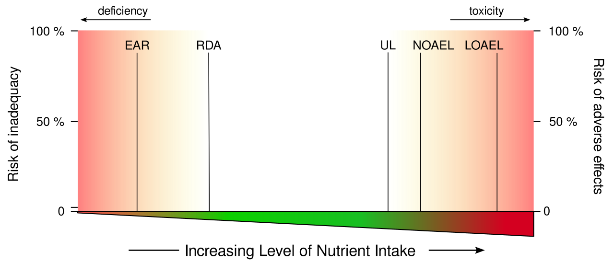
The DRI framework
The Dietary Reference Intakes (DRIs) are a set of reference values for nutrient intake, developed by expert committees under the U.S. National Academies of Sciences, Engineering, and Medicine in partnership with Canadian authorities. They are not a single number per nutrient. They are a family of four related values — EAR, RDA, AI, and UL — each answering a different question, and each set separately for defined life-stage and sex groups: infants, children by age band, adolescent males and females, adult males and females by age band, pregnancy, and lactation.
Two structural points prevent most of the confusion. First, the DRIs describe healthy people; they are not treatment doses for disease. Second, the RDA and AI are goals for usual intake averaged over time, not targets to hit precisely at every meal or even every day. A person who eats no vitamin A on Tuesday and plenty on Wednesday is fine; the body's storage and turnover are what these values are built around.
EAR, RDA, AI, and UL — one at a time
The Estimated Average Requirement (EAR) is the intake estimated to meet the requirement of half the healthy individuals in a life-stage and sex group. Because half the group needs more than the EAR, it is a poor goal for an individual. Its real uses are two: assessing the adequacy of intakes in populations, and serving as the mathematical starting point for the RDA.
The Recommended Dietary Allowance (RDA) is the intake sufficient to meet the requirement of nearly all — about 97–98% — of healthy individuals in that group. It is derived from the EAR, conventionally as the EAR plus two standard deviations of the requirement. The RDA is the appropriate individual goal, and it is deliberately generous: most people need less than the RDA, and an intake below it is not by itself evidence of deficiency.
The Adequate Intake (AI) is used when the scientific evidence is too thin to establish an EAR, and therefore too thin to calculate an RDA. It is an observed or experimentally determined approximation of the intake of apparently healthy people. An AI is used the same way an RDA is used — as an individual goal — but it carries less certainty, and that difference in confidence is the entire reason for the separate label.
The Tolerable Upper Intake Level (UL) is the highest usual daily intake likely to pose no risk of adverse effects for almost all individuals in the group. Above the UL, risk of harm rises. Two cautions: the UL is not a recommended intake, and the absence of a UL for a nutrient means the data were insufficient to set one, not that unlimited intake is safe. For several nutrients the UL applies only to specific forms — the folate UL applies to synthetic folic acid from supplements and fortified foods, not to folate occurring naturally in food.
| Value | Covers | Use it for | Do not use it for |
|---|---|---|---|
| EAR | Meets the need of 50% of the group | Assessing group/population adequacy; deriving the RDA | An individual's daily goal |
| RDA | Meets the need of 97–98% of the group | An individual's daily intake goal | Assessing a population mean |
| AI | Best estimate when evidence cannot support an EAR | An individual goal, with lower confidence | Concluding that a lower intake is deficient |
| UL | Highest usual intake likely to carry no risk | A ceiling — a safety check on supplements and fortification | A target or a recommended amount |
The related Acceptable Macronutrient Distribution Ranges (AMDRs) work differently, expressing goals as a percentage of total energy for adults: carbohydrate 45–65%, fat 20–35%, and protein 10–35% of calories. There is also an Estimated Energy Requirement (EER) for calories — notably there is no RDA for energy, because setting an energy value that covers 97–98% of a group would systematically overshoot the average person's need.
Reading a real value: population, units, and life stage
A DRI value means nothing without its group and its units. Some worked examples, all for healthy people, all per day:
| Nutrient | Type and value | Group | How it shifts |
|---|---|---|---|
| Protein | RDA 0.8 g/kg body weight | Adults 19+, both sexes | Higher in pregnancy and lactation; higher per kg in infancy and childhood |
| Vitamin C | RDA 90 mg / 75 mg | Adult men / adult women 19+ | Add 35 mg/day for people who smoke; higher in pregnancy and lactation |
| Iron | RDA 8 mg / 18 mg | Men 19+; women 19–50 | Falls to 8 mg for women 51+; rises to 27 mg in pregnancy. UL 45 mg |
| Calcium | RDA 1,000 mg | Adults 19–50 | 1,200 mg for women 51+ and for everyone 71+. UL 2,500 mg (19–50) |
| Vitamin D | RDA 600 IU (15 µg) | Ages 1–70 | 800 IU (20 µg) at 71+. UL 4,000 IU (100 µg) for adults |
| Folate | RDA 400 µg DFE | Adults 19+ | 600 µg DFE in pregnancy. UL 1,000 µg/day of folic acid only |
| Fiber | AI 38 g / 25 g | Men / women 19–50 | An AI, not an RDA — scaled from about 14 g per 1,000 kcal |
| Total water | AI 3.7 L / 2.7 L | Adult men / adult women | Includes water from food and all beverages, not just plain water |
- The DRIs are a family of reference values for healthy people, set separately by life stage and sex.
- EAR covers 50% of a group — a population tool and the basis of the RDA.
- RDA covers 97–98% of a group — the appropriate individual goal.
- AI replaces the RDA when evidence is insufficient; it is used the same way but with lower confidence.
- UL is a safety ceiling, not a target; no UL means insufficient data, not proven safety.
- Always state the population and units with any value — iron is 8 mg/day for adult men but 18 mg/day for women 19–50 and 27 mg/day in pregnancy.
Section 5Dietary guidelines and nutrient density
From nutrient numbers to something you can eat
Nobody shops for 18 mg of iron. The DRIs are stated in nutrients, but people buy, cook, and eat foods, so a translation layer is required. That layer is the food-based dietary guideline, and most countries publish one. In the United States the Dietary Guidelines for Americans are revised on a five-year cycle by the Departments of Agriculture and Health and Human Services, accompanied by a consumer graphic — historically a pyramid, more recently the MyPlate plate icon. Other countries use their own imagery, from Canada's plate to Japan's spinning top, but the underlying nutrient science is broadly shared.
Recent editions of the U.S. guidelines converge on a few durable themes. Follow a healthy dietary pattern across every life stage rather than chasing individual nutrients. Make that pattern adaptable to personal preference, culture, tradition, and budget — a guideline that ignores cost or culture will not be followed, and an unfollowed guideline improves nothing. Meet nutrient needs primarily from nutrient-dense foods. And limit added sugars, saturated fat, sodium, and alcohol, with typical quantified targets of under 10% of calories from added sugars, under 10% of calories from saturated fat, and under 2,300 mg of sodium per day for adults. The MyPlate graphic renders this as proportions: roughly half the plate vegetables and fruit, about a quarter grains with at least half of those whole grains, about a quarter protein foods, plus dairy or a fortified alternative.
Nutrient density versus energy density
Nutrient density is the amount of beneficial nutrients a food provides relative to its energy content — nutrients per calorie. Energy density is a separate measure: calories per gram of food. The two vary independently, and confusing them causes real errors. Nuts are high in energy density and also high in nutrient density. A sugar-sweetened soft drink is the opposite pairing — appreciable energy with almost no accompanying nutrients. Lettuce sits at a third corner: very low energy density, and because the calorie denominator is so small it rates well on nutrients per calorie, even though one serving supplies only small absolute amounts. Fortified breakfast cereal can be nutrient-dense for certain micronutrients while also carrying substantial added sugar. The concept is a comparison tool, not a ranking of foods into approved and forbidden.
Which brings us to empty calories, a phrase you will hear constantly. It refers to energy delivered with few accompanying nutrients — classically from added sugars, solid fats, and alcohol. It is a useful shorthand and an imprecise one, and current guidance has largely moved to naming the specific components (calories from added sugars, calories from saturated fat) rather than labeling whole foods "empty." That shift is deliberate, because in practice the label got applied to foods, and then to the people eating them. A more accurate framing: nearly every diet contains some foods eaten mainly for pleasure, celebration, or convenience, and the useful question is what the overall pattern looks like — not whether any single item earns approval.
| Idea | Definition | Units | Worth remembering |
|---|---|---|---|
| Nutrient density | Beneficial nutrients per calorie | Nutrients / kcal | Compares foods at equal energy; high here means more nutrition per calorie |
| Energy density | Energy per unit weight of food | kcal / g | Driven largely by fat and water content; independent of nutrient density |
| Added sugars | Sugars added during processing or preparation | g, or % of kcal | Common target: under 10% of total calories for adults |
| "Empty calories" | Informal term for energy with few accompanying nutrients | — | Imprecise; prefer naming added sugars, saturated fat, or alcohol directly |
| Dietary pattern | The overall combination of foods eaten over time | — | The unit at which the chronic-disease evidence is strongest |
How much confidence do the guidelines deserve?
Different pieces of the guidance rest on different foundations, and a careful reader separates them. The strongest support is for the nutrient standards themselves — the essentiality of each nutrient and the intakes that prevent deficiency, established through decades of depletion–repletion work. Also strong: folic acid fortification reducing neural tube defects, and reduced sodium intake lowering blood pressure. Good, mostly from cohort studies plus a limited set of randomized trials: dietary patterns emphasizing vegetables, fruits, legumes, whole grains, nuts, and unsaturated fats associate with lower cardiovascular risk. Weaker or contested: precise optimal percentages for individual macronutrients, and most claims that a single nutrient in supplement form prevents chronic disease.
None of this makes the guidelines arbitrary. It means they are a reasonable synthesis of evidence of mixed strength, aimed at populations, and they should be read that way — as a starting framework, not a prescription for any particular person. Individual recommendations belong with a qualified clinician or registered dietitian who knows the person's history, medications, laboratory values, resources, and preferences.
- Food-based dietary guidelines translate nutrient standards into foods, food groups, and proportions people can act on.
- Common quantified targets for adults: added sugars under 10% of calories, saturated fat under 10% of calories, sodium under 2,300 mg/day.
- MyPlate proportions: about half vegetables and fruit, a quarter grains (at least half whole), a quarter protein foods, plus dairy or a fortified alternative.
- Nutrient density is nutrients per calorie; energy density is calories per gram — they are independent measures.
- "Empty calories" is informal shorthand for energy with few nutrients; naming added sugars, saturated fat, or alcohol directly is more precise and less prone to misuse.
- The dietary pattern, not the individual food, is the level at which the chronic-disease evidence is strongest.
The chapter in one breath
- Nutrition studies how the body uses food; food is what is eaten and nutrients are the chemicals within it, with essential nutrients being those the body cannot make in adequate amounts.
- There are exactly six classes of nutrients: carbohydrate, lipid, protein, vitamin, mineral, and water.
- Macronutrients are required in grams (carbohydrate, lipid, protein, water); micronutrients in milligrams or micrograms (vitamins, minerals) — the labels describe quantity, not importance.
- Energy yields are carbohydrate 4, protein 4, fat 9, and alcohol 7 kcal/g; vitamins, minerals, and water yield none, and a label "Calorie" is a kilocalorie (1 kcal = 4.184 kJ).
- The DRIs set nutrient reference values for healthy people by life stage and sex: EAR covers 50% of a group, RDA covers 97–98%, AI substitutes when evidence is thin, and UL is a safety ceiling rather than a goal.
- Any cited value needs its population and units — iron is 8 mg/day for adult men, 18 mg/day for women 19–50, and 27 mg/day in pregnancy.
- Dietary guidelines convert nutrient standards into food-group proportions such as MyPlate, with typical limits on added sugars, saturated fat, sodium, and alcohol.
- Nutrient density (nutrients per calorie) is the more precise successor to "empty calories," and the dietary pattern over time — not any single food — is what the chronic-disease evidence actually addresses.
ReferenceWords worth knowing
A quick reference for the terms introduced in this chapter — skim it now, then come back whenever a word slows you down.
- Acceptable Macronutrient Distribution Range (AMDR)
- A DRI value giving a healthy range of intake for an energy-yielding macronutrient as a percentage of total calories; for adults, carbohydrate 45–65%, fat 20–35%, protein 10–35%.
- Adequate Intake (AI)
- A DRI used when evidence is insufficient to set an EAR and therefore an RDA; an observed or experimentally derived approximation of the intake of healthy people, used as an individual goal with lower confidence.
- Calorie (kilocalorie, kcal)
- The unit of food energy. One kilocalorie is the heat required to raise one kilogram of water by one degree Celsius, equals 1,000 small calories, and equals 4.184 kilojoules. The capital-C "Calorie" on a label is a kilocalorie.
- Carbohydrate
- A macronutrient class comprising sugars, starches, and fibers; digestible forms yield 4 kcal/g and serve as the body's most readily used fuel.
- Dietary Reference Intakes (DRIs)
- The umbrella set of nutrient reference values (EAR, RDA, AI, UL, and related figures) for healthy people, established by life-stage and sex group.
- Empty calories
- Informal term for energy supplied with few accompanying nutrients, typically from added sugars, solid fats, or alcohol; imprecise, and increasingly replaced by naming the specific component.
- Energy density
- The energy a food supplies per unit of weight, in kcal per gram; independent of nutrient density.
- Essential nutrient
- A nutrient the body cannot synthesize in adequate amounts, so the diet must supply it; its absence produces a characteristic deficiency that restoring the nutrient resolves.
- Estimated Average Requirement (EAR)
- The intake estimated to meet the requirement of 50% of healthy individuals in a life-stage and sex group; used for population assessment and to derive the RDA.
- Kilojoule (kJ)
- The SI unit of energy used on food labels in many countries; 1 kcal = 4.184 kJ.
- Lipid
- The macronutrient class that includes triglycerides, phospholipids, and sterols; yields 9 kcal/g, builds cell membranes, and carries the fat-soluble vitamins A, D, E, and K.
- Macronutrient
- A nutrient required in gram quantities each day: carbohydrate, lipid, protein, and (by convention) water.
- Micronutrient
- A nutrient required in milligram or microgram quantities each day: the vitamins and minerals.
- Mineral
- An inorganic element required in the diet; major minerals are needed at more than 100 mg/day, trace minerals in smaller amounts. Minerals supply no energy.
- Nutrient density
- The amount of beneficial nutrients a food supplies relative to its energy content — nutrients per calorie.
- Nutrition
- The science of how the body ingests, digests, absorbs, transports, uses, and excretes the substances in food, and how those processes affect health.
- Protein
- The macronutrient class made of amino acid chains; yields 4 kcal/g and supplies structure, enzymes, transporters, antibodies, and some hormones. Nine amino acids are essential.
- Recommended Dietary Allowance (RDA)
- The average daily intake sufficient to meet the requirement of about 97–98% of healthy individuals in a life-stage and sex group; the appropriate individual intake goal.
- Tolerable Upper Intake Level (UL)
- The highest average daily intake likely to pose no risk of adverse effects for almost all individuals in a group; a ceiling, never a target.
- Vitamin
- An organic compound required in small amounts to regulate metabolism; four are fat-soluble (A, D, E, K) and nine are water-soluble (vitamin C and eight B vitamins). Vitamins supply no energy.
- Water
- An essential nutrient making up roughly 50–70% of adult body weight; it serves as solvent, transport medium, temperature regulator, and chemical reactant, and supplies no energy.
Check yourself
Digestion, Absorption & Transport
A sandwich is not nutrition. It becomes nutrition only after your body takes it apart. Between the first bite and the moment a glucose molecule crosses into a capillary lies a chemical disassembly line several meters long — muscles that grind, acids that unfold proteins, enzymes that cut specific bonds, and a lining folded so cleverly that a tube the width of your thumb presents a surface the size of a small room. This chapter follows food through that line, organ by organ, and then follows the freed nutrients into blood and lymph, through the liver, and past the trillions of resident bacteria that finish the parts we cannot. Understanding this pathway is what turns a nutrition label from a list of numbers into a story about what your body can actually reach and use.
By the end of this chapter you can
- Trace a bolus of food through every organ of the gastrointestinal tract and state what each contributes.
- Distinguish mechanical from chemical digestion, and explain hydrolysis as the reaction behind all nutrient breakdown.
- Describe how carbohydrate, protein, and fat are each broken down to their absorbable units, and state the energy each yields (4, 4, and 9 kcal/g).
- Name the major digestive enzymes and secretions, where each is made, and what each acts on.
- Explain how plicae, villi, and microvilli amplify absorptive surface area, and match key nutrients to their absorption sites.
- Contrast the blood (hepatic portal) and lymphatic routes out of the intestine, and describe the liver's first-pass role.
- Summarize what the gut microbiota does, and separate well-supported claims from preliminary ones.
- Explain why a nutrient that is present in food is not automatically a nutrient that is bioavailable.
Section 1The GI tract — mouth to anus
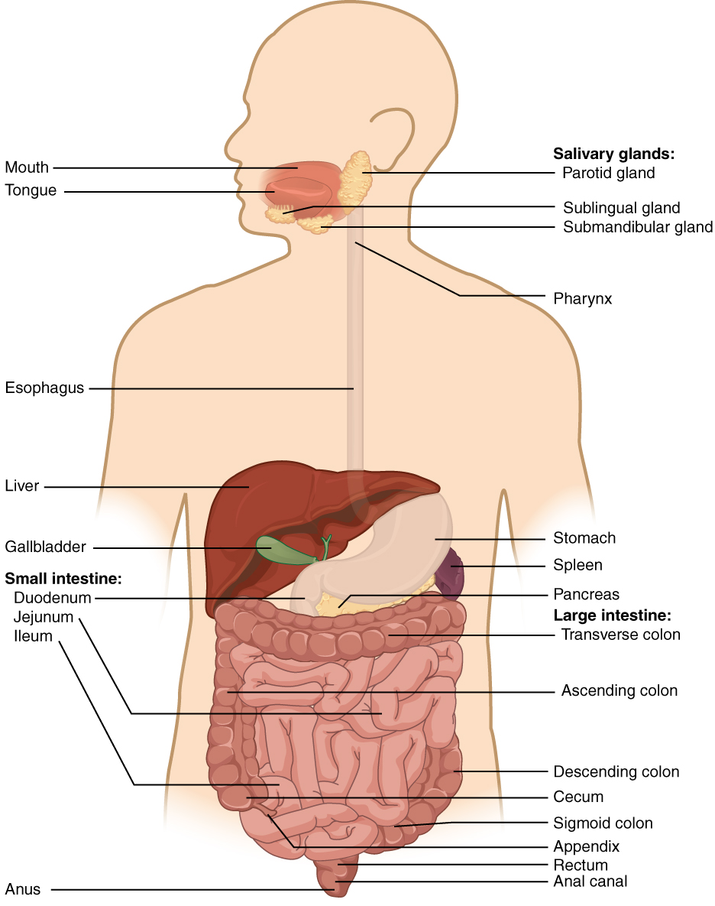
One long tube, plus helpers
The gastrointestinal (GI) tract, or alimentary canal, is a continuous muscular tube running from mouth to anus. Textbooks often quote about nine meters, but that number comes from cadaver measurement, where the loss of muscle tone lets the intestine stretch; in a living person with tone intact the whole tract is closer to five meters. It is worth pausing on a strange fact: the inside of that tube is topologically outside your body. Food sitting in your stomach has not entered you yet. It has entered a chamber that your body controls but does not yet own. Nothing counts as nutrition until it crosses the single layer of cells lining the intestine — and that crossing, called absorption, is the event the entire tract exists to make possible.
Alongside the canal sit the accessory organs — salivary glands, liver, gallbladder, and pancreas. Food never passes through them. Instead they manufacture secretions and deliver them into the tube through ducts. Losing an accessory organ (a gallbladder, say) does not break the pathway, but it changes how well one part of it runs.
Station by station
In the mouth, teeth shear and grind while the tongue mixes food with saliva into a swallowable bolus. The pharynx and esophagus are pure transport: the epiglottis covers the airway, and a wave of peristalsis pushes the bolus down in a few seconds, whether you are upright or lying flat. The lower esophageal sphincter then opens to admit it and closes to keep acidic stomach contents from washing back up.
The stomach is a mixing vat and a holding tank. It churns food with acid and enzymes into a soupy chyme and then releases it through the pyloric sphincter in small, metered squirts — typically over about two to four hours, longer for meals rich in fat and protein. This metering matters more than it sounds: the small intestine can only work on so much at once, so the stomach's job is as much traffic control as digestion.
The small intestine is where the real work happens. About three meters long in a living person (longer at autopsy, when muscle tone is gone), it has three segments: the short duodenum, where pancreatic juice and bile arrive and most chemical digestion occurs; the jejunum, where the bulk of nutrients are absorbed; and the ileum, which finishes the job and handles two specialty items — vitamin B12 and recycled bile salts. Chyme spends roughly three to five hours here.
The large intestine (colon) receives what is left. It absorbs water and electrolytes, hosts the densest microbial community in the body, and compacts residue into stool over anywhere from ten hours to two or three days. The rectum stores stool and the anus, with its internal (involuntary) and external (voluntary) sphincters, controls its exit.
| Organ | Main contribution | Key secretion | Typical dwell time |
|---|---|---|---|
| Mouth | Mechanical breakdown; bolus formation; starch digestion begins | Saliva (amylase, lipase, mucus) | Seconds to a minute |
| Esophagus | Transport by peristalsis | Mucus only | About 5–10 seconds |
| Stomach | Churning; protein denaturation; metered release of chyme | HCl, pepsinogen, gastric lipase, intrinsic factor, mucus | About 2–4 hours |
| Small intestine | Most digestion and nearly all absorption | Brush-border enzymes, mucus, bicarbonate; receives bile & pancreatic juice | About 3–5 hours |
| Large intestine | Water & electrolyte absorption; microbial fermentation; stool formation | Mucus; microbial products | About 10–59 hours |
| Liver & gallbladder | Accessory — emulsify fat; process absorbed nutrients | Bile (about 500–600 mL/day) | — |
| Pancreas | Accessory — supplies most digestive enzymes and bicarbonate | Pancreatic juice (about 1.5 L/day) | — |
- The alimentary canal is one continuous tube; its lumen is functionally outside the body until nutrients are absorbed.
- Accessory organs (salivary glands, liver, gallbladder, pancreas) contribute secretions through ducts but never contain food.
- The stomach mixes and meters; the small intestine does most digestion and nearly all absorption; the colon reclaims water and ferments residue.
- Sphincters — lower esophageal, pyloric, ileocecal, anal — are the valves that make one-way, metered flow possible.
Section 2Mechanical and chemical digestion
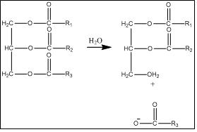
Two kinds of breakdown
Mechanical digestion makes pieces smaller without changing their chemistry: chewing (mastication), the stomach's churning, the rhythmic back-and-forth mixing of the small intestine called segmentation, and the emulsifying action of bile on fat droplets. Its purpose is surface area. Enzymes can only work at the outside of a particle, so a single large fat globule broken into thousands of small ones is digested vastly faster even though not one chemical bond has been touched.
Chemical digestion changes the molecules themselves. Almost all of it is a single reaction repeated millions of times: hydrolysis, in which a water molecule is inserted across a bond to split one large molecule into two smaller ones. Every digestive enzyme in the body is a hydrolase. Starch, protein, and fat differ enormously in structure, but the logic of taking them apart is identical.
The two kinds of digestion work together and depend on each other. Chewing a nut properly exposes far more surface for pancreatic enzymes; whole nuts swallowed nearly intact deliver measurably less of their fat, which is one reason whole almonds yield fewer usable calories than almond butter made from the same almonds. This is a physiology observation, not a recommendation — both foods are perfectly good food.
What happens to each nutrient class
Carbohydrates. Digestible starch is a chain of glucose units. Salivary amylase begins clipping it in the mouth, is silenced by stomach acid, and pancreatic amylase finishes the job in the small intestine — but only down to short chains and disaccharides. The final cut is made by enzymes anchored in the intestinal brush border: lactase splits lactose to glucose plus galactose, sucrase splits sucrose to glucose plus fructose, maltase splits maltose to two glucoses. Only monosaccharides can be absorbed. Fiber is the exception that proves the rule: human enzymes cannot hydrolyze its bonds at all, so it reaches the colon intact.
Protein. Stomach acid denatures proteins — unfolding them so their bonds are reachable — and activates pepsin, which cuts long chains into shorter peptides. Pancreatic proteases (trypsin, chymotrypsin, carboxypeptidase) continue in the duodenum, and brush-border peptidases finish. The absorbable products are free amino acids plus di- and tripeptides, which have their own transporter.
Fat. Fat is not water-soluble, which makes it the hardest case. Bile from the liver emulsifies large fat droplets into a fine suspension; pancreatic lipase, helped by colipase, then hydrolyzes triglycerides into monoglycerides and free fatty acids. These, with cholesterol and fat-soluble vitamins, are packaged into tiny bile-salt spheres called micelles that ferry them to the intestinal surface. Healthy adults absorb well over 95 percent of the fat they eat.
Alcohol and water need no digestion. Both are already small enough to cross membranes, which is why alcohol is absorbed partly in the stomach and reaches the bloodstream within minutes.
| Nutrient | Broken down to | Where mostly | Energy yield |
|---|---|---|---|
| Carbohydrate | Monosaccharides (glucose, fructose, galactose) | Mouth begins; small intestine finishes | 4 kcal/g |
| Protein | Amino acids; di- and tripeptides | Stomach begins; small intestine finishes | 4 kcal/g |
| Fat (triglyceride) | Monoglycerides + free fatty acids | Small intestine (bile + pancreatic lipase) | 9 kcal/g |
| Alcohol | Not digested — absorbed as is | Stomach and small intestine | 7 kcal/g |
| Fiber | Not hydrolyzed by human enzymes | Fermented by microbes in the colon | About 2 kcal/g at most, indirectly |
| Vitamins & minerals | Released from the food matrix; not broken down | Throughout | 0 kcal/g |
| Water | Not digested | Absorbed throughout, mostly small intestine | 0 kcal/g |
- Mechanical digestion buys surface area; chemical digestion breaks bonds by hydrolysis.
- Carbohydrate must reach monosaccharides, protein reaches amino acids and small peptides, fat reaches monoglycerides and fatty acids before absorption.
- Energy yields: carbohydrate 4, protein 4, fat 9, alcohol 7 kcal per gram.
- Fiber resists human enzymes entirely and passes to the colon — the basis for its distinct effects.
Section 3Enzymes and secretions
Every enzyme has an address and a target
Digestive enzymes are specific: each recognizes one kind of bond and ignores everything else. Learning them is much easier if you file each one under two questions — which cell made it, and which bond does it cut. Their names help. The suffix -ase marks an enzyme, and the stem names the substrate: amylase attacks amylose (starch), lipase attacks lipids, lactase attacks lactose, protease attacks protein.
Protein-digesting enzymes pose an obvious hazard: they would digest the organs that make them. The body solves this with zymogens — inactive precursors. The stomach's chief cells release pepsinogen, which acid converts to pepsin only inside the lumen. The pancreas releases trypsinogen, which is activated only when it meets enteropeptidase anchored to the duodenal lining; trypsin then activates the rest of the pancreatic proteases. Acute pancreatitis is, in essence, what happens when this safety interlock fails and the enzymes activate early.
The three great secretions
Gastric juice comes from the stomach lining. Parietal cells secrete hydrochloric acid, holding the stomach at roughly pH 1.5–3.5 — acidic enough to denature protein, kill most swallowed microbes, and free iron and vitamin B12 from the food proteins they are bound to. The same cells make intrinsic factor, a protein without which B12 cannot be absorbed downstream. Chief cells make pepsinogen and gastric lipase; mucous cells lay down the alkaline mucus blanket that keeps the stomach from digesting itself.
Pancreatic juice is the workhorse: about 1.5 liters a day carrying amylase, lipase, proteases, and nucleases — plus a large load of bicarbonate that neutralizes arriving acid. That neutralization is not optional; pancreatic enzymes work near neutral pH and are destroyed in acid.
Bile is made continuously by the liver (about 500–600 mL/day), concentrated and stored in the gallbladder, and released into the duodenum when fat arrives. Bile contains no enzymes at all. Its bile salts are detergents: one end water-loving, the other fat-loving, so they break fat into fine droplets and build the micelles that carry fat to the absorptive surface. Most bile salts are then reclaimed in the ileum and returned to the liver — the enterohepatic circulation, which recycles a bile-salt pool of only a few grams roughly twice per meal, six to ten times a day.
All of this is choreographed by gut hormones. Gastrin ramps up acid when food arrives. Secretin, released when acid hits the duodenum, calls for pancreatic bicarbonate. Cholecystokinin (CCK), released by fat and protein, triggers gallbladder contraction and pancreatic enzyme release and contributes to the feeling of fullness. The tract is not a passive pipe; it is a sensing organ that measures what arrives and adjusts.
| Secretion / enzyme | Source | Acts on | Product or effect |
|---|---|---|---|
| Salivary amylase | Salivary glands | Starch | Shorter chains, maltose |
| Hydrochloric acid | Parietal cells (stomach) | Proteins; microbes; bound minerals | Denatures protein; activates pepsin; frees iron & B12 |
| Intrinsic factor | Parietal cells (stomach) | Vitamin B12 | Required for B12 uptake in the ileum |
| Pepsin (from pepsinogen) | Chief cells (stomach) | Protein | Large polypeptides |
| Pancreatic amylase | Pancreas | Starch | Disaccharides, short chains |
| Pancreatic lipase (+ colipase) | Pancreas | Triglycerides | Monoglycerides + free fatty acids |
| Trypsin, chymotrypsin, carboxypeptidase | Pancreas (as zymogens) | Polypeptides | Short peptides, amino acids |
| Bicarbonate | Pancreatic duct cells | Acidic chyme | Raises pH so pancreatic enzymes can work |
| Bile salts | Liver (stored in gallbladder) | Fat droplets | Emulsification and micelle formation — not an enzyme |
| Lactase, sucrase, maltase | Brush border (small intestine) | Disaccharides | Monosaccharides |
| Peptidases, enteropeptidase | Brush border (small intestine) | Peptides; trypsinogen | Amino acids; activates trypsin |
- Enzymes are named for their substrates and each cuts one specific bond type.
- Proteases are secreted as inactive zymogens and activated only in the lumen, protecting the organs that make them.
- The pancreas supplies most digestive enzymes plus the bicarbonate that makes them functional.
- Bile contains no enzymes — it is a detergent, and its salts are recycled via the enterohepatic circulation.
Section 4Absorption — the small intestine's surface

Three levels of folding
The small intestine's absorptive surface is amplified three times over. First, the wall itself is thrown into circular ridges (plicae circulares), which also spiral the chyme so it stays in contact longer. Second, the entire lining is carpeted with villi — finger-like projections about half a millimeter to a millimeter and a half tall. Third, each individual absorptive cell (enterocyte) wears a dense pile of microvilli on its apical face, the brush border. Each level multiplies the level beneath it, so a plain tube becomes a surface orders of magnitude larger.
How much larger, exactly? This is a good place to watch a textbook number get corrected. Older texts assign generous multipliers — about 3× for the plicae, 10× for villi, and 20× for microvilli, roughly 600-fold in all — and arrive at a total "the size of a tennis court" (about 250–300 m2). Careful morphometric measurement has revised both halves of that claim. The measured multipliers are more modest (closer to 1.6×, 6.5×, and 13×, or about 130-fold combined), and the small intestine's total mucosal surface comes out near 30 m2 — about the floor of a small studio apartment. A number repeated confidently for decades is not automatically correct. And 30 m2 is still an extraordinary amount of surface for an organ that fits inside your abdomen.
The brush border is not just surface. It is a chemical workbench: the final disaccharidases and peptidases are embedded in the microvillar membrane, so the last cut and the absorption happen in the same square micrometer. Damage the brush border and you lose digestion and absorption together — which is exactly what happens in celiac disease, where an immune reaction to gluten in genetically susceptible people flattens the villi and produces malabsorption of iron, folate, calcium, and fat.
Getting across the cell
Crossing the enterocyte is not one process but several. Passive diffusion moves small, fat-soluble items down their gradients — fatty acids, some water, alcohol. Facilitated diffusion uses a carrier protein but no energy; fructose enters this way through the GLUT5 transporter. Active transport spends energy to move nutrients against a gradient; glucose and galactose ride the sodium-glucose cotransporter SGLT1, and most amino acids use similar sodium-linked carriers. Di- and tripeptides get their own proton-driven transporter, which is why peptides are often absorbed faster than an equivalent mix of free amino acids.
Fat takes a different path. Fatty acids and monoglycerides diffuse out of micelles into the enterocyte, are reassembled into triglycerides inside the cell, and are then packaged with protein and cholesterol into chylomicrons — too large for a capillary, so they leave by a different door entirely (Section 5).
Absorption also has geography. Iron and calcium are taken up mainly in the duodenum; most sugars, amino acids, and fats in the jejunum; vitamin B12 and bile salts specifically in the terminal ileum; water, electrolytes, and microbially produced vitamin K and biotin in the colon. Losing a specific segment of intestine therefore causes a specific, predictable pattern of deficiency rather than general malnutrition.
| Site | Chiefly absorbed here | Notes |
|---|---|---|
| Mouth & stomach | Alcohol, small amounts of water, a few drugs | Minimal — not a real absorptive surface |
| Duodenum | Iron, calcium, magnesium, some glucose | Iron uptake is up-regulated when stores are low |
| Jejunum | Most monosaccharides, amino acids, fats, water-soluble vitamins | The main absorptive workhorse |
| Ileum | Vitamin B12 (with intrinsic factor); bile salts | Highly site-specific — no backup elsewhere |
| Colon | Water, sodium, potassium; microbial vitamin K and biotin; short-chain fatty acids | Reclaims roughly 1–1.5 L of fluid daily |
- Plicae, villi, and microvilli amplify absorptive area roughly a hundredfold; the best current measurement puts the total near 30 m2, not the older "tennis court" figure.
- The brush border performs the final digestive cuts and absorption at the same site.
- Nutrients cross by passive diffusion, facilitated diffusion, or active transport, depending on size, solubility, and gradient.
- Absorption is site-specific — B12 and bile salts in the terminal ileum, iron and calcium in the duodenum.
Section 5Transport, the liver, and the microbiota

Two exits: blood and lymph
Once a nutrient is inside an enterocyte it must still get to the rest of the body, and there are exactly two routes. Water-soluble nutrients — monosaccharides, amino acids, water-soluble vitamins, minerals, and short- and medium-chain fatty acids — enter the capillary in the core of each villus and are carried by the hepatic portal vein straight to the liver. Fat-soluble products cannot use that door. Chylomicrons are too large for capillary pores, so they enter the villus's central lacteal, a lymphatic vessel, and travel through the lymphatic system to the thoracic duct, which empties into a large vein near the left collarbone.
The consequence is elegant: fat enters the general circulation before reaching the liver, while everything water-soluble is inspected by the liver first. That inspection is called the first-pass effect, and it explains why the liver is the body's metabolic customs house — and why oral medications are often dosed higher than injected ones, since a fraction is metabolized before it ever reaches the rest of the body.
What the liver does with the delivery
The liver receives the entire nutrient stream and buffers it. It stores excess glucose as glycogen and releases it between meals, keeping blood glucose remarkably steady. It handles amino acids, converting the nitrogen of surplus ones into urea for the kidneys to excrete. It assembles lipoproteins to ship fat back out. It stores vitamins A, D, and B12 and the mineral iron. It manufactures bile. And it chemically modifies drugs, alcohol, and other compounds. This is why a meal does not send your blood chemistry lurching: the liver flattens the peaks before the rest of you sees them.
The gut microbiota
The colon houses the densest microbial community known in nature. Best current estimates put the total at roughly 3.8 × 1013 bacterial cells — about the same order as the number of human cells in the body, revising the widely repeated "ten to one" claim, which was never well supported. Their combined mass is only a couple hundred grams, but their metabolic reach is large.
What they demonstrably do: ferment the fiber and resistant starch our own enzymes cannot touch, producing short-chain fatty acids (acetate, propionate, and butyrate) that acidify the colon — and butyrate in particular is the preferred fuel of the colon's own lining cells; synthesize modest amounts of vitamin K and several B vitamins; occupy niches and consume resources that would otherwise be available to pathogens (competitive exclusion); and help train the intestinal immune system. Fermentation also produces gas — a normal by-product of feeding your microbes, not a malfunction.
Here the evidence needs sorting. Strong evidence supports the benefits of dietary fiber itself: large meta-analyses link higher fiber intake to lower cardiovascular mortality and lower colorectal cancer incidence — those two come from prospective cohorts, so the pattern is consistent and dose-related but still observational — while the effects on laxation and on blood lipids and glucose come from randomized trials. Strong evidence also supports fecal microbiota transplant for recurrent Clostridioides difficile infection, a specific medical therapy delivered under specialist care. Moderate and strain-specific evidence supports certain probiotics for reducing antibiotic-associated diarrhea. Even there the picture is mixed: two large randomized trials of probiotics for acute gastroenteritis in children found no benefit, and results do not transfer between strains, doses, or products. Preliminary evidence covers most of the rest: the many reported associations between microbiome composition and obesity, mood, autoimmunity, and metabolic disease are largely observational or from rodent studies, and causal direction in humans is usually unresolved. Commercial "microbiome tests" that promise a personalized diet are far ahead of the science.
What is reliable and practical: diets consistently higher in fiber-rich plant foods — vegetables, fruit, legumes, whole grains, nuts — are associated with more diverse microbial communities and better long-term health outcomes. The recommended fiber intake is expressed as an Adequate Intake of about 14 g per 1,000 kcal, which works out to roughly 25 g/day for adult women and 38 g/day for adult men aged 19–50, and somewhat lower after age 50 (about 21 and 30 g/day). Most adults consume around half of that. Increasing fiber gradually, with adequate fluid, is generally better tolerated than a sudden jump.
| Feature | Blood route (portal) | Lymph route (lacteal) |
|---|---|---|
| Carries | Monosaccharides, amino acids, minerals, water-soluble vitamins, short- & medium-chain fatty acids | Chylomicrons: triglycerides, cholesterol, fat-soluble vitamins A, D, E, K |
| Vessel entered | Capillary in the villus core | Central lacteal in the villus |
| First destination | Liver, via the hepatic portal vein | Thoracic duct, then a vein near the left collarbone |
| Liver first pass? | Yes — screened and processed before general circulation | No — bypasses the liver initially |
| Speed | Fast, minutes | Slower — blood triglycerides peak roughly 2–4 hours after a fatty meal |
- Water-soluble nutrients leave via the hepatic portal vein to the liver; fats leave as chylomicrons through the lymphatic system and bypass the first pass.
- The liver buffers the nutrient stream — storing glycogen, making urea, building lipoproteins, storing vitamins and iron, and making bile.
- The microbiota ferments fiber into short-chain fatty acids, makes some vitamin K and B vitamins, and resists pathogen colonization.
- Fiber's health benefits are strongly supported; most specific microbiome–disease claims remain preliminary.
The chapter in one breath
- The GI tract is one continuous tube whose lumen is functionally outside the body; accessory organs add secretions without ever holding food.
- The stomach mixes and meters, the small intestine does most digestion and nearly all absorption, and the colon reclaims water and ferments residue.
- Mechanical digestion creates surface area; chemical digestion is hydrolysis, and every digestive enzyme is a hydrolase.
- Carbohydrate must become monosaccharides, protein amino acids and small peptides, fat monoglycerides and fatty acids; yields are 4, 4, and 9 kcal/g, with alcohol at 7.
- The pancreas supplies most enzymes plus neutralizing bicarbonate; bile holds no enzymes and works as a detergent, recycled through the enterohepatic circulation.
- Plicae, villi, and microvilli amplify surface roughly a hundredfold to about 30 m2, and absorption is site-specific — B12 and bile salts only in the terminal ileum.
- Water-soluble nutrients go to the liver by the portal vein for a first pass; fat enters the lymph as chylomicrons and skips it.
- The microbiota ferments fiber into short-chain fatty acids; fiber's benefits are well established, while most microbiome–disease claims are still preliminary.
ReferenceWords worth knowing
These are the terms this chapter leans on. Skim them now to prime the vocabulary, then come back whenever a word in the text refuses to hold still.
- Absorption
- The movement of digested nutrients across the intestinal lining into blood or lymph — the moment food actually enters the body.
- Bile
- A liver secretion, stored in the gallbladder, that emulsifies fat and forms micelles; it contains bile salts, cholesterol, and pigments but no enzymes.
- Bioavailability
- The proportion of a nutrient in food that is actually absorbed and available for use, which depends on the food matrix and the rest of the meal.
- Bolus
- The soft, chewed, saliva-moistened mass of food that is swallowed.
- Brush border
- The dense layer of microvilli on the apical surface of enterocytes, carrying the final digestive enzymes and the absorptive transporters.
- Chylomicron
- A lipoprotein particle assembled in the enterocyte to carry absorbed fat; too large for capillaries, so it exits via the lymph.
- Chyme
- The semi-liquid mixture of partly digested food and gastric secretions released from the stomach into the duodenum.
- Emulsification
- The mechanical breaking of large fat globules into a fine suspension of small droplets, increasing the surface available to lipase.
- Enterocyte
- An absorptive cell of the small intestinal lining.
- Enterohepatic circulation
- The recycling loop in which bile salts are reabsorbed in the ileum and returned to the liver for reuse.
- First-pass effect
- The liver's processing of absorbed substances arriving by the hepatic portal vein before they reach the general circulation.
- Hepatic portal vein
- The vessel that carries nutrient-rich blood from the intestines directly to the liver.
- Hydrolysis
- The reaction that splits a bond by adding water; the chemical basis of essentially all nutrient digestion.
- Intrinsic factor
- A protein from the stomach's parietal cells that is required for vitamin B12 absorption in the terminal ileum.
- Lacteal
- The lymphatic vessel in the core of each villus that receives chylomicrons.
- Micelle
- A tiny bile-salt sphere that ferries fatty acids, monoglycerides, cholesterol, and fat-soluble vitamins to the absorptive surface.
- Microbiota (gut)
- The community of microorganisms living in the digestive tract, most densely in the colon.
- Peristalsis
- The wave of muscular contraction that propels contents forward along the GI tract.
- Segmentation
- Rhythmic non-propulsive contractions of the small intestine that mix chyme with secretions and expose it to the absorptive surface.
- Short-chain fatty acid (SCFA)
- Acetate, propionate, or butyrate — produced when colonic bacteria ferment fiber and resistant starch; butyrate is the colonocyte's preferred fuel.
- Villi
- Finger-like projections of the small intestinal lining that greatly increase absorptive surface area.
- Zymogen
- An inactive enzyme precursor, such as pepsinogen or trypsinogen, activated only after it is safely outside the cell that made it.
Check yourself
Carbohydrates
Carbohydrates supply most of the world's dietary energy, and they do it at a steady 4 kilocalories per gram — the same as protein, and well under fat's 9. But "carbohydrate" is not one thing: it covers the single sugar molecules in fruit, the starch in a potato, and the fiber in a bean that your own enzymes cannot touch at all. Those forms behave very differently once they reach the gut, and the differences explain why two foods with identical carbohydrate grams can have very different effects on digestion, blood glucose, and long-term health. This chapter follows carbohydrate from its chemical structure through digestion and absorption into the bloodstream, then out to the evidence on how much we need and what the research actually supports. Along the way, resist the urge to sort foods into "good" and "bad" — the physiology is far more interesting than the moralizing.
By the end of this chapter you can
- Classify carbohydrates as monosaccharides, disaccharides, or polysaccharides, and name the common members of each.
- State the energy yield of carbohydrate and compare it with protein, fat, and alcohol.
- Distinguish soluble from insoluble fiber and describe what each does in the gut.
- Trace starch from the mouth to the portal vein, naming the enzymes and transporters at each step.
- Explain how insulin and glucagon hold blood glucose within a narrow range.
- Define glycemic index and glycemic load, and state the limits of both.
- Cite the RDA and AMDR for carbohydrate and the AI for fiber, with the population and units for each.
- Describe what the evidence does — and does not — show about added sugars and type 2 diabetes risk.
Section 1Types of carbohydrates

One building block, many arrangements
Every dietary carbohydrate is built from small sugar units, and the name is a fossil of nineteenth-century chemistry: carbo (carbon) plus hydrate (water), because these molecules carry carbon, hydrogen, and oxygen in roughly a 1:2:1 ratio. What separates a spoonful of table sugar from a slice of bread is not the atoms but the architecture — how many sugar units are strung together and how the links between them are angled. That architecture decides whether your digestive enzymes can take the molecule apart, and that single fact drives most of this chapter.
Carbohydrates that your small intestine can break down and absorb yield 4 kilocalories per gram. Hold that number next to the others: protein also yields 4 kcal/g, fat yields 9 kcal/g, and alcohol yields 7 kcal/g. Carbohydrate is not an unusually dense fuel; it is simply the most abundant one in most food supplies.
Monosaccharides and disaccharides — the sugars
A monosaccharide is a single sugar unit and cannot be broken down further by digestion. Three matter nutritionally. Glucose is the body's reference fuel, the sugar that circulates in blood and the one the brain relies on most heavily. Fructose, found in fruit and honey, is the sweetest of the common sugars and is handled largely by the liver. Galactose rarely appears free in food; it arrives bound up in milk sugar.
A disaccharide is two monosaccharides joined together. Sucrose (glucose + fructose) is table sugar, and chemically it is identical whether it came from cane, beet, or a fruit. Lactose (glucose + galactose) is the sugar of milk. Maltose (glucose + glucose) appears mostly as an intermediate when starch is being digested or grain is being malted. Notice that all six of these — three monosaccharides and three disaccharides — are what everyday language calls "sugars," and every one of them ends up as monosaccharides before it can cross the intestinal wall.
Polysaccharides — starch, glycogen, and fiber
String hundreds or thousands of glucose units together and you get a polysaccharide. Starch is the plant storage form and comes in two shapes: amylose, a long straight chain, and amylopectin, a branched chain. Branching matters, because enzymes attack chain ends, and a branched molecule offers many more ends at once — which is part of why amylopectin-rich foods digest faster than amylose-rich ones. Glycogen is the animal storage form, even more highly branched, and it is stored in your liver (roughly 100 g) and muscle (roughly 400 g); it is not a meaningful source of carbohydrate in food, because it degrades quickly after slaughter.
Fiber is the third group, and it is defined by what your body cannot do. Cellulose is also a straight chain of glucose — the same monomer as starch — but the bonds joining the units are oriented differently (beta rather than alpha linkages), and human digestive enzymes have no key for that lock. Cellulose therefore passes into the colon intact. That one geometric difference is the entire reason lettuce and bread behave so unlike each other.
| Class | Members | Built from | Common food sources |
|---|---|---|---|
| Monosaccharides | Glucose, fructose, galactose | One sugar unit | Fruit, honey, some vegetables; glucose in syrups |
| Disaccharides | Sucrose, lactose, maltose | Two sugar units | Table sugar, milk and yogurt, malted grains |
| Oligosaccharides | Raffinose, stachyose, fructans | 3–10 units | Legumes, onions, wheat — largely fermented, not digested |
| Digestible polysaccharides | Amylose, amylopectin (starch); glycogen | Hundreds to thousands of glucose units, alpha bonds | Grains, potatoes, legumes, roots |
| Fiber polysaccharides | Cellulose, hemicellulose, pectin, beta-glucan, gums | Many units, beta or otherwise indigestible bonds | Whole grains, vegetables, fruit, legumes, seeds |
- Digestible carbohydrate yields 4 kcal/g; protein 4, fat 9, alcohol 7.
- Monosaccharides (glucose, fructose, galactose) are single units; disaccharides (sucrose, lactose, maltose) are pairs.
- Polysaccharides include digestible starch and glycogen (alpha bonds) and indigestible fiber (beta and other bonds).
- Every absorbable carbohydrate must be reduced to a monosaccharide before it can cross the intestinal wall.
Section 2Fiber
Two behaviors: soluble and insoluble
Dietary fiber is carbohydrate (plus the non-carbohydrate polymer lignin) that resists digestion in the small intestine. Nutrition scientists sort it by how it behaves in water, and while the categories overlap in real food, they predict real physiological differences.
Soluble fiber dissolves or disperses in water and often forms a gel. Pectin in apples and citrus, beta-glucan in oats and barley, gums, inulin, and psyllium all belong here. The category is not uniform, though, and the split that matters physiologically is viscosity: beta-glucan, pectin, guar gum, and psyllium thicken, while inulin dissolves without gelling. Where a gel does form, it slows gastric emptying and slows the rate at which glucose is absorbed, which blunts the rise in blood glucose after a meal. Viscous soluble fibers also bind bile acids and carry them out in the stool, forcing the liver to pull cholesterol from circulation to make replacements — the mechanism behind the well-replicated finding that oat beta-glucan and psyllium modestly lower LDL cholesterol. That specific effect is strong evidence, reproduced across many controlled trials.
Insoluble fiber does not dissolve. Cellulose, most hemicelluloses, and lignin are the classic examples, and they concentrate in the bran layers of grains, in vegetable stalks, and in seeds and skins. Insoluble fiber works mechanically: it holds water, adds bulk to stool, and speeds transit through the colon. Low total fiber intake is commonly associated with harder, slower-moving stool. Worth noting, though, that the trial evidence for relieving established constipation is actually strongest for viscous soluble fiber such as psyllium; the neat textbook pairing of "insoluble fiber equals regularity" describes the mechanism better than it describes the outcome data.
What the colon does with it
Fiber is not inert once it reaches the large intestine. Gut bacteria ferment much of the soluble and some of the insoluble fraction, producing gas and short-chain fatty acids (SCFAs) — chiefly acetate, propionate, and butyrate. Butyrate is the preferred fuel of the cells lining the colon, and the SCFAs collectively lower colonic pH and feed the resident microbial community. Because some of this fermentation energy is recovered, fiber is not truly calorie-free; regulatory bodies assign fermentable fiber roughly 2 kcal/g, well below the 4 of digestible carbohydrate.
Resistant starch deserves a mention here, because it is starch that behaves like fiber. Starch trapped inside intact grains and legumes, the high-amylose starch of green bananas, and the retrograded starch that forms when cooked potatoes, rice, or pasta are cooled all escape small-intestinal digestion and are fermented in the colon instead.
How much, and who needs how much
Fiber has an Adequate Intake (AI) rather than an RDA, because the evidence was judged sufficient to set a target but not to define a precise requirement. The AI is anchored at 14 g of total fiber per 1,000 kcal, a level associated in observational studies with lower coronary heart disease risk. Because it scales with energy intake, the gram target differs by age and sex, and it rises in pregnancy and lactation.
| Population | Total fiber AI | Note |
|---|---|---|
| Men 19–50 y | 38 g/day | Highest energy needs, highest target |
| Men 51 y and older | 30 g/day | Falls with declining energy intake |
| Women 19–50 y | 25 g/day | — |
| Women 51 y and older | 21 g/day | — |
| Pregnancy | 28 g/day | Reflects increased energy needs |
| Lactation | 29 g/day | Reflects increased energy needs |
| Children 1–3 y | 19 g/day | Same 14 g/1,000 kcal principle |
Actual intake falls far short of these figures — adults in the United States average roughly 15 g/day, well under half the target for younger men. There is no Tolerable Upper Intake Level for fiber; very high intakes cause bloating, gas, and discomfort rather than toxicity, though extremely high intakes can modestly reduce absorption of some minerals.
- Soluble/viscous fiber gels, slows glucose absorption, and — for oat beta-glucan and psyllium — modestly lowers LDL cholesterol (strong evidence).
- Insoluble fiber adds bulk and speeds transit; for relieving established constipation, however, the trial evidence is strongest for viscous soluble fiber such as psyllium.
- Colonic fermentation yields short-chain fatty acids, including butyrate, the colonocyte's preferred fuel.
- The AI is 14 g/1,000 kcal — 38 g/day for men 19–50 y, 25 g/day for women 19–50 y, 28 g/day in pregnancy; there is no UL.
Section 3Digestion and absorption

Mouth and stomach: a short start, then a pause
Digestion begins before you swallow. Chewing breaks food apart mechanically, and saliva delivers salivary amylase, which starts cleaving the alpha bonds of starch into shorter chains called dextrins and into maltose. This is why a plain cracker held in the mouth slowly turns sweet. The work is brief, though: as the bolus reaches the stomach, gastric acid drops the pH far below amylase's working range and the enzyme is inactivated. No meaningful carbohydrate digestion occurs in the stomach, and none is absorbed there.
Small intestine: pancreatic amylase and the brush border
The real work happens in the duodenum. The pancreas releases pancreatic amylase into the small intestine, where bicarbonate has neutralized the acid, and starch is rapidly reduced to disaccharides and short oligosaccharides. These fragments are still too large to absorb, so the final cut is made by enzymes anchored in the brush border — the microvilli covering the intestinal cells. Maltase splits maltose into two glucose molecules, sucrase splits sucrose into glucose and fructose, and lactase splits lactose into glucose and galactose. Only now, as single sugars, can carbohydrate be absorbed.
| Site | Enzyme | Substrate | Product |
|---|---|---|---|
| Mouth | Salivary amylase | Starch | Dextrins, maltose |
| Stomach | None active | — | Amylase is inactivated by acid |
| Small intestine (lumen) | Pancreatic amylase | Starch, dextrins | Maltose, short oligosaccharides |
| Brush border | Maltase | Maltose | Glucose + glucose |
| Brush border | Sucrase | Sucrose | Glucose + fructose |
| Brush border | Lactase | Lactose | Glucose + galactose |
| Large intestine | Bacterial fermentation | Fiber, resistant starch | Short-chain fatty acids, gases |
Crossing the wall and reaching the liver
The three monosaccharides do not all enter the same way. Glucose and galactose ride the sodium-glucose cotransporter SGLT1, a secondary active transport system that uses the sodium gradient to pull sugar in against its concentration gradient — the same physiology that oral rehydration solutions exploit when they pair glucose with sodium. Fructose takes a different route, entering by facilitated diffusion through GLUT5, which needs no energy and moves fructose only down its gradient. All three then exit the far side of the cell through GLUT2 into the capillaries of the villus.
From there, blood carries the sugars through the hepatic portal vein straight to the liver — a deliberate piece of anatomy. The liver sees the entire absorbed load first and converts most fructose and galactose into glucose or into liver glycogen before the rest of the body ever meets them. What leaves the liver and enters general circulation is largely glucose.
- Salivary amylase starts starch digestion; the stomach contributes nothing, since acid inactivates the enzyme.
- Pancreatic amylase plus the brush-border enzymes maltase, sucrase, and lactase finish the job in the small intestine.
- Glucose and galactose enter via SGLT1 (active, sodium-dependent); fructose enters via GLUT5 (facilitated diffusion).
- Absorbed sugars travel the hepatic portal vein to the liver, which converts most of them to glucose or glycogen.
Section 4Blood glucose regulation
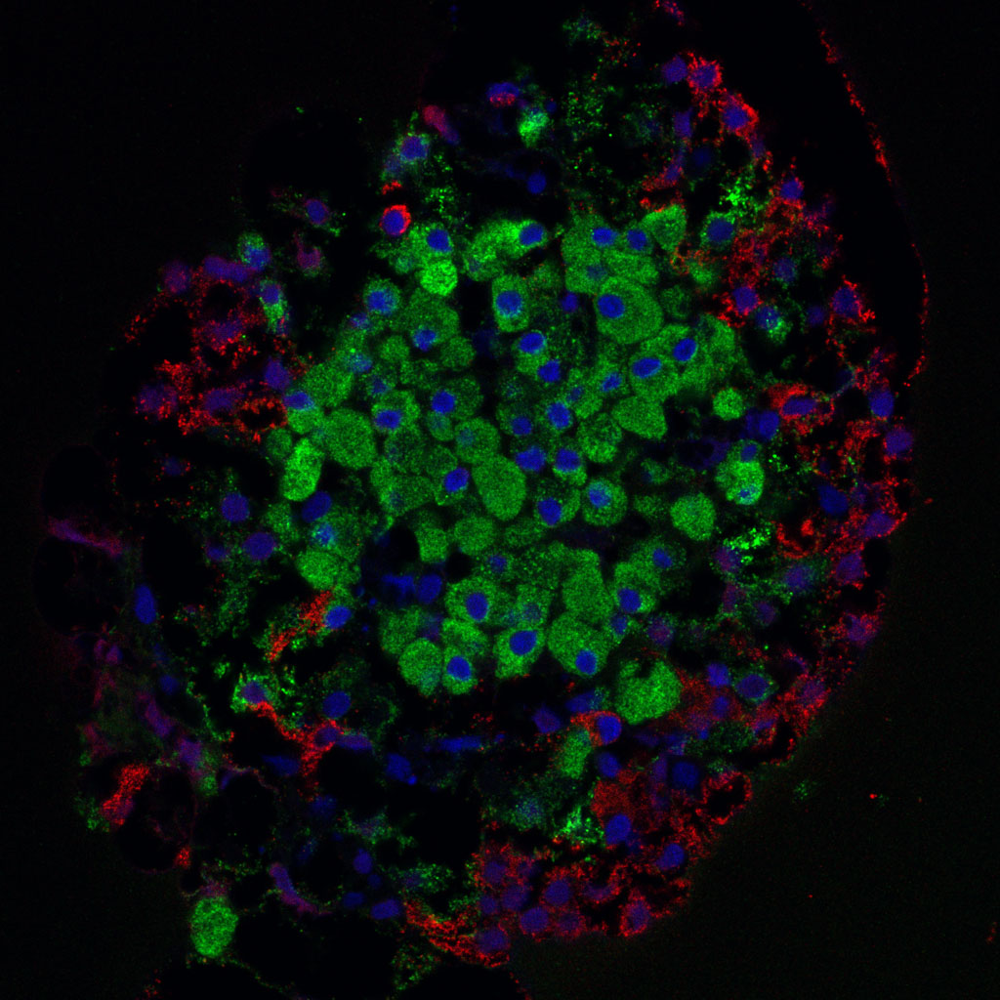
A two-hormone thermostat
Blood glucose is held within a remarkably narrow band. In a person without diabetes, fasting plasma glucose sits below 100 mg/dL (5.6 mmol/L) and rarely exceeds about 140 mg/dL even after a large meal. The control system is a classic negative feedback loop run from the islets of Langerhans in the pancreas.
When glucose rises after a meal, beta cells release insulin. Insulin is the storage signal: it prompts muscle and adipose cells to move GLUT4 transporters to their surfaces so glucose can enter, it drives the liver and muscle to build glycogen, and it switches off the liver's own glucose production. When glucose falls — between meals, overnight, during exercise — alpha cells release glucagon, which does the opposite: it breaks liver glycogen back down (glycogenolysis) and, as that store runs low, drives the liver to manufacture new glucose from amino acids and glycerol (gluconeogenesis). Epinephrine, cortisol, and growth hormone reinforce glucagon's side of the ledger during stress.
| Insulin | Glucagon | |
|---|---|---|
| Source | Pancreatic beta cells | Pancreatic alpha cells |
| Trigger | Rising blood glucose (after eating) | Falling blood glucose (fasting, exercise) |
| Net effect | Lowers blood glucose | Raises blood glucose |
| Main actions | Glucose uptake via GLUT4; glycogen synthesis; fat and protein synthesis | Glycogenolysis; gluconeogenesis |
| Chief target | Muscle, adipose, liver | Liver |
Where the glucose goes, and what runs out first
The body's glucose reserves are small. Liver glycogen (roughly 100 g) is the only store that can be released back into the bloodstream, and it is largely depleted after 12–24 hours without food. Muscle glycogen (roughly 400 g) is far larger but is locked in place: muscle lacks the enzyme needed to release free glucose, so muscle glycogen fuels that muscle only and never rescues blood glucose. Beyond those stores, the brain's substantial daily glucose requirement — on the order of 120 g — is met by gluconeogenesis, which consumes body protein, and increasingly by ketone bodies as fasting continues. Adequate dietary carbohydrate spares that protein, which is the physiological argument behind the carbohydrate RDA you will meet in the next section.
Glycemic index and glycemic load
The glycemic index (GI) ranks a food by how much it raises blood glucose over two hours compared with a reference (pure glucose = 100), using portions matched for 50 g of available carbohydrate. Values of 55 or below are called low, 56–69 medium, and 70 or above high. Because GI ignores portion size — watermelon has a high GI but very little carbohydrate per slice — the glycemic load (GL) was introduced: GI multiplied by the grams of available carbohydrate in an actual serving, divided by 100. A GL of 10 or below is low; 20 or above is high.
Both tools are genuinely useful for understanding why foods differ, and low-GI dietary patterns show modest benefits for post-meal glucose in controlled trials. But treat published values cautiously. GI varies substantially between individuals eating the identical food, and within a food it shifts with ripeness, particle size, cooking time, cooling, and whatever else is on the plate: fat, protein, acid, and fiber all lower the glycemic response of a mixed meal. GI also says nothing about nutritional quality — a food can have a low GI and little else to recommend it.
- Insulin (beta cells) lowers blood glucose by driving uptake and storage; glucagon (alpha cells) raises it via glycogenolysis and gluconeogenesis.
- Liver glycogen (≈100 g) maintains blood glucose; muscle glycogen (≈400 g) fuels only that muscle.
- The brain uses on the order of 120 g of glucose per day, met by diet, gluconeogenesis, and eventually ketones.
- GI ranks a fixed 50 g carbohydrate portion; GL adjusts for real serving size — both vary with cooking, ripeness, and the rest of the meal.
Section 5Carbohydrate and health

The actual numbers
The RDA for carbohydrate is 130 g/day for adults and for children aged 1 year and older, of both sexes. That figure is not about health optimization; it is the amount judged sufficient to supply the brain's glucose needs without forcing reliance on gluconeogenesis. The RDA rises in pregnancy to 175 g/day and in lactation to 210 g/day, reflecting fetal and milk glucose demands. Infants have Adequate Intakes rather than an RDA: 60 g/day at 0–6 months and 95 g/day at 7–12 months.
Separately, the Acceptable Macronutrient Distribution Range (AMDR) for carbohydrate is 45–65% of total energy for adults and children aged 1 year and older. Note what these two numbers are doing: 130 g is a floor for a specific physiological function, while 45–65% describes the range within which populations appear to meet nutrient needs while keeping chronic disease risk low. There is no Tolerable Upper Intake Level for total carbohydrate.
| Reference value | Amount | Population |
|---|---|---|
| Carbohydrate RDA | 130 g/day | Adults and children ≥1 y, both sexes |
| Carbohydrate RDA, pregnancy | 175 g/day | Pregnant adolescents and adults |
| Carbohydrate RDA, lactation | 210 g/day | Lactating adolescents and adults |
| Carbohydrate AMDR | 45–65% of energy | Adults and children ≥1 y |
| Total fiber AI | 14 g/1,000 kcal | All ages ≥1 y (gram target varies by age/sex) |
| Added sugars (US Dietary Guidelines) | Less than 10% of energy | Age 2 y and older; avoid added sugars under age 2 |
| Free sugars (WHO) | Less than 10% of energy (strong recommendation) | Adults and children; further reduction below 5% is conditional |
| Carbohydrate UL | None established | — |
Added sugars
Added sugars are sugars and syrups put into foods during processing or preparation, plus sugars from syrups and honey and from concentrated fruit or vegetable juices. They are distinguished from the sugars intrinsic to intact fruit, vegetables, and milk. Chemically the molecules are the same; the distinction is about the package they arrive in and about what the food displaces. Regulators find the distinction useful enough that added sugars now appear as their own line on the US Nutrition Facts label.
What is the evidence? Two conclusions are solid. First, added sugars supply energy with essentially no vitamins, minerals, or fiber, so at high intakes they crowd out nutrient-dense foods — a straightforward dilution argument. Second, the frequency and amount of free sugars is strongly and consistently linked to dental caries; this is among the best-established diet-disease relationships in nutrition. Sugar-sweetened beverages are the largest single source of added sugars in many countries, and their consumption is consistently associated with weight gain and with type 2 diabetes risk in cohort studies — a relationship attributed partly to the fact that liquid calories seem to trigger less compensatory reduction in later eating. Claims about specific metabolic harms of fructose at ordinary dietary intakes remain preliminary, extrapolated largely from high-dose feeding studies; whole fruit, which also contains fructose, is consistently associated with lower disease risk.
Carbohydrate and diabetes risk
Type 1 diabetes is an autoimmune destruction of pancreatic beta cells producing absolute insulin deficiency. It is not caused by diet, and no eating pattern in childhood causes or prevents it. Type 2 diabetes is different: insulin resistance in muscle, liver, and fat combined with progressive beta-cell failure. Its risk is shaped by genetics, age, physical activity, sleep, body-fat distribution, and dietary pattern together.
The most robust dietary findings point to carbohydrate quality rather than quantity. Higher intakes of whole grains, legumes, and total fiber are consistently associated with lower type 2 diabetes incidence across large cohorts and long follow-up; higher intakes of refined grains and sugar-sweetened beverages track the other way. Randomized lifestyle-intervention trials show that structured programs combining dietary change with physical activity substantially reduce progression from prediabetes to type 2 diabetes — strong evidence, though those programs change many things at once, which makes it impossible to credit any single nutrient. Very-low-carbohydrate patterns can improve glycemic markers over the short term in trials, but long-term comparative evidence is mixed, and adherence, not macronutrient ratio, tends to predict outcomes.
- Carbohydrate RDA: 130 g/day for adults and children ≥1 y; 175 g/day in pregnancy, 210 g/day in lactation.
- AMDR: 45–65% of energy; there is no UL for total carbohydrate.
- Guidance caps added sugars below 10% of energy (age 2+), with none recommended under age 2; the caries link is strong evidence.
- For type 2 diabetes, carbohydrate quality — whole grains, legumes, fiber — tracks with lower risk more reliably than total carbohydrate does.
The chapter in one breath
- Digestible carbohydrate yields 4 kcal/g — the same as protein, less than fat's 9 and alcohol's 7.
- Carbohydrates are monosaccharides, disaccharides, or polysaccharides; the alpha-versus-beta bond geometry decides whether human enzymes can digest them.
- Soluble fiber gels and slows glucose absorption; the viscous types — oat beta-glucan, psyllium — also modestly lower LDL cholesterol. Insoluble fiber adds bulk and speeds transit. Colonic bacteria ferment the soluble fraction and part of the insoluble one into short-chain fatty acids.
- The fiber AI is 14 g/1,000 kcal — 38 g/day for men 19–50 y, 25 g/day for women 19–50 y — and typical intakes are roughly half that.
- Starch is digested by salivary and pancreatic amylase and finished by brush-border maltase, sucrase, and lactase; monosaccharides enter via SGLT1 (glucose, galactose) and GLUT5 (fructose) and travel the portal vein to the liver.
- Insulin stores glucose and glucagon releases it; liver glycogen (≈100 g) defends blood glucose while muscle glycogen (≈400 g) serves only muscle.
- GI and GL describe glycemic behavior but shift with ripeness, cooking, cooling, and the rest of the meal, and vary between people.
- The RDA is 130 g/day (175 in pregnancy, 210 in lactation), the AMDR is 45–65% of energy, and the strongest health signal is carbohydrate quality — not a verdict on any individual food.
ReferenceWords worth knowing
A quick reference for the terms in this chapter — skim it now, or circle back whenever a word trips you up.
- Added sugars
- Sugars and syrups added during processing or preparation, plus sugars from honey, syrups, and concentrated juices; distinguished from sugars intrinsic to intact fruit, vegetables, and milk.
- Amylase
- The enzyme that cleaves the alpha bonds of starch; secreted by the salivary glands and, far more importantly, by the pancreas.
- Amylopectin
- The branched form of plant starch; its many chain ends allow faster enzymatic digestion than amylose.
- Amylose
- The straight-chain form of plant starch; digests more slowly and is more likely to retrograde into resistant starch on cooling.
- Dietary fiber
- Carbohydrate (plus lignin) that resists digestion in the human small intestine and passes into the colon.
- Disaccharide
- Two monosaccharides joined together: sucrose, lactose, or maltose.
- Fructose
- A monosaccharide found in fruit and honey and in half of every sucrose molecule; absorbed via GLUT5 and handled largely by the liver.
- Glucagon
- The pancreatic alpha-cell hormone that raises blood glucose through glycogenolysis and gluconeogenesis.
- Gluconeogenesis
- The liver's synthesis of new glucose from non-carbohydrate precursors such as amino acids and glycerol.
- Glycemic index (GI)
- A ranking of how much a 50 g available-carbohydrate portion of a food raises blood glucose over two hours, relative to glucose set at 100.
- Glycemic load (GL)
- Glycemic index adjusted for the carbohydrate actually present in a realistic serving: GI × available carbohydrate ÷ 100.
- Glycogen
- The highly branched storage polysaccharide of animals, held in liver (≈100 g) and muscle (≈400 g).
- Insulin
- The pancreatic beta-cell hormone that lowers blood glucose by promoting cellular uptake via GLUT4 and stimulating storage.
- Lactase nonpersistence
- The normal, genetically programmed decline in lactase production after early childhood, affecting most of the world's adults; the basis of lactose intolerance.
- Lactose
- Milk sugar; a disaccharide of glucose and galactose.
- Monosaccharide
- A single sugar unit — glucose, fructose, or galactose — and the only form of carbohydrate that can be absorbed.
- Polysaccharide
- A carbohydrate of many sugar units: starch and glycogen (digestible) or fiber such as cellulose (not digestible).
- Resistant starch
- Starch that escapes small-intestinal digestion — trapped in intact grains, high in amylose, or retrograded on cooling — and is fermented in the colon.
- Short-chain fatty acids (SCFAs)
- Acetate, propionate, and butyrate, produced when colonic bacteria ferment fiber; butyrate is the preferred fuel of colon cells.
- Soluble fiber
- Fiber that disperses in water — pectin, beta-glucan, gums, inulin, psyllium. The viscous, gel-forming members slow glucose absorption and modestly lower LDL cholesterol; non-viscous soluble fibers such as inulin do not reliably do either.
- Starch
- The plant storage polysaccharide, made of amylose and amylopectin and the largest source of dietary carbohydrate worldwide.
- Sucrose
- Table sugar; a disaccharide of glucose and fructose, chemically identical whatever plant it was refined from.
Check yourself
Lipids
Fat has spent decades as the most misunderstood molecule on the plate — first blamed for everything, then declared harmless, and now understood as something more interesting than either story. Lipids are a chemically diverse family united by one shared trait: they do not dissolve in water. That single property explains almost everything about them — why they store more energy per gram than any other nutrient, why your cell membranes are built from them, why four vitamins cannot be absorbed without them, and why your body has to build tiny protein-wrapped delivery vehicles just to move them through your bloodstream. This chapter takes lipids apart structurally, follows them from the fork to the cell, and then looks honestly at what the evidence does and does not say about fat and cardiovascular health.
By the end of this chapter you can
- Describe the structure and dietary role of triglycerides, phospholipids, and sterols.
- Classify fatty acids by chain length, degree of saturation, and geometry (cis vs trans).
- Name the two essential fatty acids, give their Adequate Intakes with population and units, and describe deficiency.
- Trace lipid digestion from emulsification by bile through micelle formation to chylomicron release into lymph.
- Rank the major lipoprotein classes by density and lipid cargo, and explain what each one delivers.
- Explain fat's roles in energy storage, insulation and protection, and fat-soluble vitamin absorption.
- Distinguish what is strongly established about LDL and cardiovascular risk from what is still preliminary.
- State current population-level intake recommendations for total fat, saturated fat, and trans fat.
Section 1Types of lipids
What makes something a lipid
Carbohydrates are defined by their chemistry and proteins by their building blocks, but lipids are defined by a behavior: they are the biological molecules that dissolve poorly in water and readily in organic solvents. That is a loose definition, and deliberately so — it gathers together molecules that look nothing alike. A stick of butter, the membrane around every one of your cells, the cholesterol in your bloodstream, vitamin D, and the estrogen and testosterone circulating right now are all lipids. What they share is a chemical backbone dominated by carbon and hydrogen with very little oxygen, which is exactly why they are water-repellent (hydrophobic) and, as we will see, why they carry so much energy.
Three families matter most nutritionally. Triglycerides are what people mean when they say "fat" — roughly 95% of the lipid you eat and nearly all of what your body stores. Phospholipids are the structural lipids that build membranes. Sterols are the ring-shaped lipids, of which cholesterol is the famous example. Learn these three shapes and the rest of the chapter falls into place.
Triglycerides: the storage and dietary form
A triglyceride (also called a triacylglycerol) is built from a three-carbon glycerol backbone with three fatty acids attached, one to each carbon, by ester bonds. Think of a capital E: the spine is glycerol, the three arms are fatty acids. The three fatty acids on a single triglyceride are usually not identical, and it is their identity — how long they are, how saturated they are — that determines whether the resulting fat is a firm solid at room temperature or a pourable oil.
This is why terminology in the kitchen and the laboratory differ. Chemically, a fat is a triglyceride that is solid at room temperature and an oil is one that is liquid, but both are triglycerides and both yield 9 kcal per gram — more than double the 4 kcal per gram from carbohydrate or protein. Nothing about being liquid or solid changes the energy content. When triglycerides are broken down for fuel, the glycerol can enter glucose metabolism and the fatty acids are oxidized for energy.
Phospholipids and sterols
A phospholipid is a triglyceride with an edit: one fatty acid is swapped for a phosphate-containing group. The result is a molecule with a split personality — a hydrophilic (water-loving) phosphate head and two hydrophobic fatty acid tails. Drop enough of these into water and they spontaneously arrange themselves tails-inward, heads-outward, forming the lipid bilayer that is the basis of every cell membrane in your body. That same dual nature makes phospholipids excellent emulsifiers, molecules that let fat and water mix; lecithin (phosphatidylcholine), found in egg yolks and soybeans, is the classic food example and is why an egg yolk holds mayonnaise together. Your liver makes all the phospholipid you need, so none of them are dietary essentials.
Sterols look entirely different: four fused carbon rings, flat and rigid, with assorted side groups. Cholesterol is the principal animal sterol. It appears only in animal-source foods — there is no cholesterol in any plant oil, no matter what the label boasts — but you do not need to eat it, because your body synthesizes roughly 800 to 1,000 mg of it daily — much of that in the liver, though nearly every cell can make some — considerably more than most people consume. Cholesterol is structurally indispensable: it stiffens and stabilizes membranes, and it is the raw material for bile acids, vitamin D, cortisol, aldosterone, estrogen, and testosterone. Plants make their own versions, phytosterols, which compete with cholesterol for absorption in the gut.
| Lipid class | Structure | Share of dietary lipid | Main role | Food examples |
|---|---|---|---|---|
| Triglycerides | Glycerol + 3 fatty acids | ≈95% | Energy supply and storage | Oils, butter, meat fat, nuts, avocado |
| Phospholipids | Glycerol + 2 fatty acids + phosphate head | ≈4–5% | Cell membranes; emulsification | Egg yolk, soybeans, liver (lecithin) |
| Sterols | Four fused carbon rings | <1% | Membrane rigidity; precursor to bile acids, vitamin D, steroid hormones | Cholesterol: egg yolk, shellfish, organ meats, dairy fat |
| Phytosterols | Plant sterols/stanols | Trace | Compete with cholesterol for absorption | Vegetable oils, nuts, seeds, fortified spreads |
- Lipids are defined by being hydrophobic, not by a shared structure; the nutritional families are triglycerides, phospholipids, and sterols.
- A triglyceride is glycerol plus three fatty acids and supplies 9 kcal/g, versus 4 kcal/g for carbohydrate and protein and 7 kcal/g for alcohol.
- Phospholipids have a water-loving head and water-fearing tails, which builds membranes and makes them natural emulsifiers.
- Cholesterol occurs only in animal foods, is made in ample quantity by the liver, and is the precursor to bile acids, vitamin D, and steroid hormones.
Section 2Fatty acids
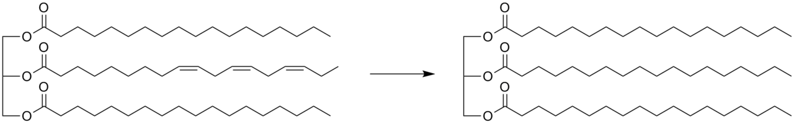
Chain length and saturation
A fatty acid is a chain of carbon atoms with hydrogens attached along its length and an acid (carboxyl) group at one end. Two variables describe any fatty acid you will meet. The first is chain length: short-chain fatty acids have fewer than 6 carbons, medium-chain 6 to 12, and long-chain more than 12. Most fatty acids in food are long-chain, typically 16 or 18 carbons. (Cut-points vary slightly between sources, so expect to see 14 rather than 12 used as the long-chain threshold in some texts.) Chain length is not trivia — it changes the absorption route entirely, as Section 3 shows.
The second variable is saturation, meaning how many hydrogens the chain carries relative to the maximum. A saturated fatty acid has every available carbon bonded to hydrogen and no carbon–carbon double bonds. The chain is straight, so molecules pack together tightly, which is why saturated fats such as butter, coconut oil, and beef fat are solid at room temperature. A monounsaturated fatty acid (MUFA) has exactly one double bond; oleic acid in olive oil is the standard example. A polyunsaturated fatty acid (PUFA) has two or more. Each double bond in the natural cis configuration puts a rigid kink in the chain, so the molecules cannot stack neatly — hence the liquid, pourable character of most plant and fish oils. Double bonds are also chemically reactive, which is why polyunsaturated oils go rancid faster than saturated ones.
The trans problem
Nearly all naturally occurring unsaturated fatty acids are in the cis form, with both hydrogens on the same side of the double bond — the arrangement that creates the kink. In the trans form, the hydrogens sit on opposite sides and the chain straightens out, behaving much more like a saturated fat despite technically being unsaturated.
Small amounts of trans fat occur naturally in dairy and beef from ruminant animals. The large historical source, however, was partial hydrogenation — an industrial process that bubbles hydrogen through liquid oil to firm it up and extend shelf life, converting some cis bonds to trans along the way. This is one of the few places in nutrition where the evidence is genuinely one-directional and strong: industrially produced trans fat raises LDL cholesterol, lowers HDL cholesterol, and is associated with increased coronary heart disease risk in large cohort studies. The regulatory response was decisive. The U.S. Food and Drug Administration withdrew the "generally recognized as safe" status of partially hydrogenated oils, with compliance phased in through 2020–2021, and the World Health Organization has pushed for global elimination of industrial trans fat. Naturally occurring ruminant trans fats occur at far lower intakes and the evidence about them is much less clear — a useful reminder that dose and source matter.
The two essential fatty acids
Your body can synthesize almost every fatty acid it needs, but human enzymes cannot place a double bond past the ninth carbon counting from the acid (carboxyl) end — that is, nowhere in the stretch of chain closest to the methyl end. We can make an omega-9 fatty acid such as oleic acid; we cannot make an omega-6 or an omega-3. That single enzymatic gap makes exactly two fatty acids essential — they must come from food:
- Linoleic acid (18:2, an omega-6 fatty acid) — abundant in soybean, corn, sunflower, and safflower oils, and in nuts and seeds. It is the parent of arachidonic acid and of many signaling compounds.
- Alpha-linolenic acid or ALA (18:3, an omega-3 fatty acid) — found in flaxseed, chia, walnuts, canola oil, and soybean oil. The body converts ALA into the longer-chain omega-3s EPA and DHA, but the conversion is inefficient, which is why preformed EPA and DHA from fatty fish and algae are treated separately.
The "omega" number simply counts carbons from the methyl (omega) end of the chain to the first double bond. Because no true RDA could be established, the Food and Nutrition Board set Adequate Intakes (AI) instead, and these differ by sex, age, and reproductive status — always cite the population along with the number.
| Essential fatty acid | Population | Adequate Intake | AMDR (% of energy) |
|---|---|---|---|
| Linoleic acid (omega-6) | Men 19–50 y | 17 g/day | 5–10% |
| Linoleic acid (omega-6) | Men 51+ y | 14 g/day | |
| Linoleic acid (omega-6) | Women 19–50 y | 12 g/day | |
| Linoleic acid (omega-6) | Women 51+ y | 11 g/day | |
| Linoleic acid (omega-6) | Pregnancy | 13 g/day | |
| Linoleic acid (omega-6) | Lactation | 13 g/day | |
| Alpha-linolenic acid (omega-3) | Men 19+ y | 1.6 g/day | 0.6–1.2% |
| Alpha-linolenic acid (omega-3) | Women 19+ y | 1.1 g/day | |
| Alpha-linolenic acid (omega-3) | Pregnancy | 1.4 g/day | |
| Alpha-linolenic acid (omega-3) | Lactation | 1.3 g/day |
Essential fatty acid deficiency is genuinely rare in people eating ordinary mixed diets, because linoleic acid is so widespread in the food supply. It appears in specific clinical circumstances: prolonged fat-free intravenous nutrition, severe fat malabsorption, or very-low-fat regimens sustained over months. The classic presentation is a scaly, flaking dermatitis, hair loss, impaired wound healing, and — in infants — growth failure. The biochemical marker is a rising triene-to-tetraene ratio, reflecting the substitution of an unusual fatty acid where arachidonic acid should be.
- Fatty acids differ by chain length (short, medium, long) and by saturation (saturated, monounsaturated, polyunsaturated).
- Cis double bonds kink the chain and keep oils liquid; trans double bonds straighten it, so trans fats behave like saturated fats.
- Industrial trans fat raises LDL, lowers HDL, and is linked to coronary risk — this evidence is strong, and partially hydrogenated oils have been removed from the U.S. food supply.
- The only essential fatty acids are linoleic acid (omega-6) and alpha-linolenic acid (omega-3); AIs differ by sex, age, pregnancy, and lactation.
Section 3Digestion, absorption, and transport
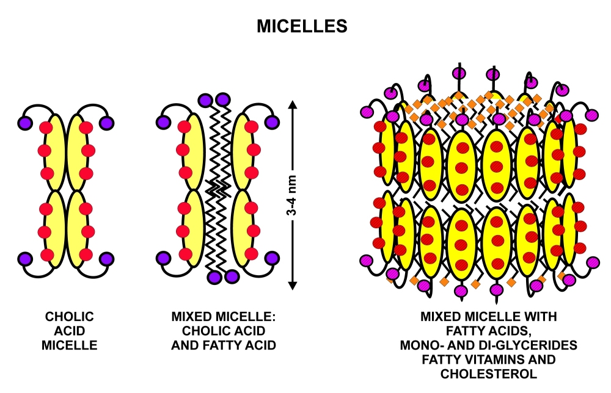
The problem with digesting fat
Every other macronutrient dissolves in the watery contents of the gut. Fat does not, and that creates a real engineering problem: the enzymes that break down triglycerides are water-soluble proteins that can only work at the surface of a fat droplet. A single large globule of fat has almost no surface area relative to its volume, so digestion would be hopelessly slow. The entire architecture of lipid digestion is a solution to this one problem — increase surface area, then shuttle the water-insoluble products to the absorbing cell.
Digestion begins modestly. Lingual lipase from the mouth and gastric lipase in the stomach start clipping a small fraction of the triglycerides, and the churning of the stomach breaks the fat into coarse droplets. Gastric lipase is relatively more important in infants, whose pancreatic function is still maturing and whose diet is high in milk fat.
Bile, micelles, and the enterocyte
The decisive step happens in the small intestine. Fat entering the duodenum triggers the release of the hormone cholecystokinin (CCK), which does two things at once: it tells the gallbladder to contract and squeeze out stored bile, and it signals the pancreas to release digestive enzymes. Bile is made continuously by the liver from cholesterol and concentrated in the gallbladder between meals. It contains no enzymes at all — bile is a detergent, not a digestant. Its bile salts break the coarse fat droplets into a fine suspension of tiny ones, a process called emulsification, which multiplies the available surface area enormously.
Now pancreatic lipase, working with its helper protein colipase, can do its job efficiently, cleaving triglycerides into monoglycerides and free fatty acids. Pancreatic phospholipase and cholesterol esterase handle the phospholipids and cholesterol esters. These products are still water-insoluble, so bile salts wrap around them to form micelles — microscopic spheres with the lipid cargo tucked inside and the water-friendly surfaces of the bile salts facing out. The micelle ferries its passengers across the watery layer next to the intestinal wall and delivers them to the brush border of the enterocyte, where they diffuse in. The bile salts themselves are not absorbed here; most are reclaimed further downstream in the ileum and recycled back to the liver through the enterohepatic circulation, a thrifty loop that reuses each bile salt many times.
Chylomicrons and the lipoprotein fleet
Inside the enterocyte, the route splits based on chain length. Short- and medium-chain fatty acids are water-soluble enough to pass straight into the capillaries of the portal vein bound to albumin and travel directly to the liver — fast and simple. Long-chain fatty acids, which are the bulk of dietary fat, take the long way. They are reassembled into triglycerides inside the enterocyte and packaged with cholesterol, phospholipids, and proteins into a chylomicron.
A chylomicron is the first of the lipoproteins — spherical transport vehicles with a hydrophobic lipid core and a shell of phospholipids, cholesterol, and apolipoproteins that faces the water. Chylomicrons are too large to enter blood capillaries, so they exit into a lacteal, a lymphatic vessel inside each intestinal villus, and travel through the lymphatic system to the thoracic duct, finally entering the bloodstream near the left subclavian vein. This is why fat, uniquely among nutrients, bypasses the liver's first pass. As chylomicrons circulate, the enzyme lipoprotein lipase anchored to capillary walls in muscle and adipose tissue strips out their triglycerides, and the shrunken remnant is cleared by the liver.
The liver then assembles its own vehicles, and the family is named by density — the more lipid and the less protein, the less dense the particle.
| Lipoprotein | Made by | Density | Main cargo | Job |
|---|---|---|---|---|
| Chylomicron | Small intestine | Lowest | Dietary triglyceride | Carries absorbed dietary fat from gut to tissues via lymph |
| VLDL | Liver | Very low | Liver-made triglyceride | Delivers triglyceride from liver to muscle and adipose tissue |
| IDL | From VLDL in circulation | Intermediate | Triglyceride + cholesterol | Transitional particle; becomes LDL or is cleared |
| LDL | From IDL in circulation | Low | Cholesterol | Delivers cholesterol to peripheral tissues |
| HDL | Liver and intestine | Highest (most protein) | Cholesterol + protein | Reverse cholesterol transport — returns cholesterol to the liver |
- Fat digestion is a surface-area problem; bile solves it by emulsifying fat, and bile contains no enzymes.
- CCK triggers gallbladder contraction and pancreatic enzyme release; pancreatic lipase with colipase does most of the work.
- Micelles ferry monoglycerides and fatty acids to the enterocyte; bile salts are recycled via the enterohepatic circulation.
- Short- and medium-chain fatty acids go directly to the portal vein; long-chain fatty acids are packaged into chylomicrons and enter the lymph.
Section 4Functions of fat

The densest fuel and the deepest reserve
Fat yields 9 kcal per gram, more than twice the 4 kcal per gram from carbohydrate or protein and well above alcohol's 7 kcal per gram. The reason is chemical: fatty acid chains are almost pure carbon and hydrogen with very little oxygen already attached, so there is far more left to oxidize. That density is a feature, not a flaw. It lets the body bank a great deal of energy in a small mass.
The advantage is even larger than the per-gram number suggests. Glycogen, the carbohydrate store, is hydrophilic and holds roughly three to four grams of water for every gram of glycogen, so its effective energy density is a small fraction of fat's. Adipose tissue stores triglyceride almost anhydrously. A typical adult carries perhaps 1,500 to 2,000 kcal of glycogen but tens of thousands of kilocalories in adipose tissue — the difference between a day's reserve and a season's. Fat is also the dominant fuel at rest and during prolonged low-to-moderate intensity activity, with carbohydrate taking over as intensity climbs.
Two practical notes follow. Because fat is energy-dense, small volumes of fat-rich food carry a lot of energy — useful when appetite is poor, energy needs are high, or a person is trying to gain weight, and simply a fact of composition otherwise. And because fat slows gastric emptying and stimulates CCK, meals containing fat leave the stomach more slowly. Whether that translates into feeling fuller for longer is less settled than it is often stated: per calorie, fat generally tests as no more satiating than carbohydrate and clearly less satiating than protein, and short-term appetite studies disagree with one another. Treat the gastric-emptying mechanism as established and the satiety payoff as preliminary.
Insulation, protection, and structure
Nutritionists distinguish storage fat, the adipose tissue that expands and contracts with energy balance, from essential fat, the lipid built into cell membranes, nerve tissue, bone marrow, and organs, which is not expendable. Both do structural work. Subcutaneous adipose tissue under the skin is a thermal insulator, slowing heat loss to the environment. Visceral adipose tissue packed around the kidneys, heart, and other organs provides mechanical cushioning against impact. Adipose tissue is also an endocrine organ in its own right, secreting hormones including leptin and adiponectin that participate in appetite and metabolic signaling.
Lipids build structures beyond storage as well. Every cell membrane is a phospholipid bilayer stabilized by cholesterol. The myelin sheath insulating nerve fibers is lipid-rich, which is one reason infants and toddlers need proportionally more fat than adults — the AMDR for fat is 30–40% of energy for ages 1–3 years and 25–35% for ages 4–18, compared with 20–35% for adults. And fatty acids are the raw material for eicosanoids, local signaling compounds involved in inflammation, clotting, and blood vessel tone.
Fat-soluble vitamin absorption
Vitamins A, D, E, and K are lipids themselves, which means they dissolve in dietary fat, ride in the same micelles, and are packaged into the same chylomicrons. Eat them without any fat and absorption falls substantially — a salad of carrots and dark greens dressed with an oil-based vinaigrette delivers meaningfully more carotenoid than the same salad dry. Fat also carries the flavor compounds and provides the texture that makes many vegetables palatable in the first place, which is a nutritional argument in its own right.
Because these vitamins are stored in liver and adipose tissue rather than excreted freely in urine, deficiency develops slowly — but excess from concentrated supplements can also accumulate. The values below are for adults; requirements differ for children, during pregnancy, and during lactation.
| Vitamin | Adult reference intake | Upper limit (adults) | Deficiency syndrome | Excess |
|---|---|---|---|---|
| A | RDA 900 µg RAE/day men; 700 µg RAE/day women | UL 3,000 µg/day preformed retinol | Night blindness, xerophthalmia | Hypervitaminosis A; preformed retinol is teratogenic in pregnancy |
| D | RDA 15 µg (600 IU)/day ages 1–70; 20 µg (800 IU)/day ages 71+ | UL 100 µg (4,000 IU)/day | Rickets in children; osteomalacia in adults | Hypercalcemia |
| E | RDA 15 mg alpha-tocopherol/day | UL 1,000 mg/day from supplements | Rare; neuropathy and hemolysis, chiefly with fat malabsorption or in preterm infants | May interfere with clotting at high supplemental doses |
| K | AI 120 µg/day men; 90 µg/day women | No UL established | Impaired clotting, bleeding | No established toxicity from food forms |
- Fat supplies 9 kcal/g and stores energy almost water-free, giving adipose tissue a far larger reserve than glycogen.
- Subcutaneous fat insulates, visceral fat cushions organs, and adipose tissue also acts as an endocrine organ.
- Lipids build cell membranes and myelin, and children need proportionally more fat (AMDR 30–40% at ages 1–3) than adults (20–35%).
- Vitamins A, D, E, and K require dietary fat for absorption, so fat malabsorption predicts their deficiency.
Section 5Lipids and health

LDL, HDL, and what a lipid panel actually measures
A standard lipid panel reports total cholesterol, LDL cholesterol, HDL cholesterol, and triglycerides. It is worth being precise about what those labels mean: LDL cholesterol is not a type of cholesterol but a measure of how much cholesterol is being carried inside low-density lipoprotein particles. Cholesterol is one molecule; the particles carrying it are what differ.
LDL particles deliver cholesterol out to the tissues. When they are present in excess, they can lodge in the arterial wall, become oxidized, and initiate the inflammatory process of atherosclerosis — the plaque that narrows arteries and can rupture to cause a heart attack or ischemic stroke. The evidence that LDL is causally involved in atherosclerotic cardiovascular disease is about as strong as nutrition-adjacent science gets: it converges from prospective cohorts, from genetic studies of people who inherit lifelong high or low LDL, and from randomized trials showing that lowering LDL by several different mechanisms lowers event rates proportionally.
HDL particles run the other direction, collecting cholesterol from tissues and returning it to the liver — reverse cholesterol transport. Low HDL cholesterol reliably predicts higher cardiovascular risk. But here the story diverges in an instructive way, and the distinction is worth holding onto: the observation that HDL is a strong risk marker is well established, while the idea that raising HDL causes lower risk is not supported — multiple large trials of drugs that substantially raised HDL cholesterol failed to reduce cardiovascular events. A marker of risk and a cause of risk are different things, and conflating them is one of the most common errors in nutrition reasoning.
What dietary fat does to blood lipids
The most consistently replicated dietary finding is a replacement effect: what matters is less "how much saturated fat" in isolation than "what replaces it." Controlled feeding trials show consistently that replacing saturated fat with polyunsaturated fat lowers LDL cholesterol, and pooled analyses of randomized clinical trials find a modest reduction in coronary heart disease events alongside it — the LDL effect is the better-established of the two, and the event data come from a relatively small set of older trials. Replacing saturated fat with refined carbohydrate, by contrast, produces little or no benefit. This is why a low-fat product loaded with refined starch is not automatically an improvement, and why the framing "swap toward unsaturated sources" is more useful than "avoid fat."
Several other points deserve calibration. Dietary cholesterol was long assumed to drive blood cholesterol, but for most people the effect is modest, because the liver reduces its own synthesis when intake rises; U.S. dietary guidance dropped the specific 300 mg/day cap and now advises keeping intake as low as practical without compromising a nutritionally adequate diet. There is meaningful individual variation in this response. Omega-3 supplements are a case where enthusiasm has outrun the trial data: eating fish is consistently associated with lower cardiovascular risk in cohort studies, but large randomized trials of omega-3 supplements in general populations have shown little to no reduction in events, and results in specific high-triglyceride populations have been inconsistent between trials. Call that preliminary and contested, not settled. Coconut oil raises LDL cholesterol much as other highly saturated fats do; claims of a unique metabolic advantage are not supported by controlled trials.
Current recommendations, and how to hold them
These are population-level guidelines for general education. They are not individualized medical advice, and they are not treatment for any diagnosed condition — anyone managing a lipid disorder, cardiovascular disease, or a malabsorption syndrome needs care from their own clinician and a registered dietitian.
| Target | Recommendation | On a 2,000 kcal day | Strength of evidence |
|---|---|---|---|
| Total fat | AMDR 20–35% of energy (adults); 25–35% ages 4–18; 30–40% ages 1–3 | ≈44–78 g/day for adults | Consensus range, not a hard threshold |
| Saturated fat | Less than 10% of calories, ages 2 and older (Dietary Guidelines for Americans) | Under ≈22 g/day | Strong for the replacement effect with unsaturated fat |
| Trans fat | As low as possible; partially hydrogenated oils removed from the U.S. food supply | Effectively near zero | Strong |
| Linoleic acid | AMDR 5–10% of energy | ≈11–22 g/day | Established as essential |
| Alpha-linolenic acid | AMDR 0.6–1.2% of energy | ≈1.3–2.7 g/day | Established as essential |
| Seafood | About 8 oz (two servings) per week for adults | — | Moderate; based largely on cohort data |
| Dietary cholesterol | No numeric limit; keep as low as practical within an adequate diet | — | Effect on blood lipids modest and variable |
One last framing note. Fats are not moral categories, and neither are the people who eat them. Butter is not a sin and olive oil is not a virtue; they are different mixtures of fatty acids with different measurable effects on blood lipids, eaten in the context of an entire dietary pattern, a body, a budget, a culture, and a life. The most defensible summary the evidence supports is unglamorous: overall eating patterns that lean toward unsaturated fats from liquid plant oils, nuts, seeds, and fish — and that include plenty of vegetables, fruits, legumes, and whole grains — are associated with lower cardiovascular risk than patterns that do not. No single food, and no single fatty acid, carries that outcome by itself.
- LDL delivers cholesterol to tissues and is causally linked to atherosclerotic cardiovascular disease — a strongly supported conclusion.
- HDL performs reverse cholesterol transport and is a good risk marker, but raising it with drugs has not lowered event rates — marker ≠ cause.
- The key dietary finding is a replacement effect: swapping saturated for polyunsaturated fat lowers LDL and events; swapping for refined carbohydrate does not.
- Population guidance: total fat 20–35% of energy for adults, saturated fat under 10%, trans fat as low as possible.
The chapter in one breath
- Lipids are hydrophobic molecules in three nutritional families — triglycerides (about 95% of dietary fat), phospholipids (membranes and emulsification), and sterols (cholesterol and its hormone descendants).
- Fat supplies 9 kcal/g, against 4 for carbohydrate, 4 for protein, and 7 for alcohol.
- Fatty acids differ by chain length and saturation; cis double bonds kink chains and keep oils liquid, while industrial trans fat straightens them and clearly raises cardiovascular risk.
- Only two fatty acids are essential: linoleic acid (omega-6) and alpha-linolenic acid (omega-3), with Adequate Intakes that vary by sex, age, pregnancy, and lactation.
- Bile emulsifies fat without any enzyme activity, pancreatic lipase cleaves it, micelles ferry the products to the enterocyte, and chylomicrons carry long-chain fat out through the lymph.
- The lipoprotein fleet runs from chylomicron to VLDL to IDL to LDL to HDL, growing denser and more protein-rich as it goes.
- Fat is the body's densest energy reserve, insulates and cushions, builds membranes and myelin, and is required for absorbing vitamins A, D, E, and K.
- LDL is causally tied to atherosclerosis; HDL is a risk marker but not a proven target; the strongest dietary lever is replacing saturated fat with unsaturated fat rather than with refined carbohydrate.
ReferenceWords worth knowing
A quick reference for the terms in this chapter — skim it now, or circle back whenever a word trips you up.
- Adequate Intake (AI)
- A recommended average daily intake used when the evidence is insufficient to set an RDA; the essential fatty acids have AIs, not RDAs.
- Alpha-linolenic acid (ALA)
- The essential omega-3 fatty acid (18:3), found in flaxseed, chia, walnuts, canola, and soybean oil; the precursor the body converts, inefficiently, to EPA and DHA.
- AMDR
- Acceptable Macronutrient Distribution Range — the share of total energy a macronutrient should supply; 20–35% from fat for adults.
- Atherosclerosis
- The progressive build-up of cholesterol-rich, inflamed plaque within artery walls; the underlying process in most heart attacks and ischemic strokes.
- Bile
- A liver-made, gallbladder-stored fluid containing bile salts derived from cholesterol; it emulsifies fat and contains no digestive enzymes.
- Cholecystokinin (CCK)
- The hormone released when fat and protein reach the duodenum; it triggers gallbladder contraction and pancreatic enzyme release.
- Cholesterol
- The principal animal sterol; a membrane component and the precursor to bile acids, vitamin D, and the steroid hormones. Made by the liver and found only in animal-source foods.
- Chylomicron
- The lipoprotein assembled in the enterocyte to carry absorbed dietary triglyceride out through the lymphatic system.
- Cis fatty acid
- An unsaturated fatty acid with both hydrogens on the same side of the double bond, producing a kinked chain; the form found in nature.
- Emulsification
- Breaking large fat globules into a fine suspension of small droplets, vastly increasing the surface area available to lipase.
- Enterohepatic circulation
- The recycling loop in which bile salts are reabsorbed in the ileum and returned to the liver for reuse.
- Essential fatty acid
- A fatty acid the body cannot synthesize and must obtain from food: linoleic acid and alpha-linolenic acid.
- HDL (high-density lipoprotein)
- The protein-rich lipoprotein that performs reverse cholesterol transport; a strong risk marker whose causal role has not been demonstrated.
- Hydrogenation
- Adding hydrogen across double bonds to firm up a liquid oil; partial hydrogenation was the main industrial source of trans fat.
- LDL (low-density lipoprotein)
- The cholesterol-carrying lipoprotein that delivers cholesterol to tissues; causally linked to atherosclerotic cardiovascular disease.
- Linoleic acid
- The essential omega-6 fatty acid (18:2), abundant in soybean, corn, sunflower, and safflower oils, nuts, and seeds.
- Lipoprotein
- A spherical particle with a lipid core and a phospholipid-and-protein shell that transports water-insoluble lipids through blood or lymph.
- Micelle
- A bile-salt sphere that encloses monoglycerides, fatty acids, cholesterol, and fat-soluble vitamins and ferries them to the intestinal brush border.
- Phospholipid
- A lipid with a phosphate head and two fatty acid tails; the structural basis of cell membranes and a natural emulsifier.
- Sterol
- A lipid built on four fused carbon rings; cholesterol in animals, phytosterols in plants.
- Trans fatty acid
- An unsaturated fatty acid whose hydrogens sit on opposite sides of the double bond, straightening the chain so it behaves like a saturated fat.
- Triglyceride
- Glycerol plus three fatty acids; the dominant dietary and storage lipid, supplying 9 kcal per gram.
Check yourself
Proteins & Amino Acids
Carbohydrate and fat are made of carbon, hydrogen, and oxygen. Protein adds one more element — nitrogen — and that single addition changes everything it can do. Protein is the only macronutrient that can build a muscle fiber, catalyze a reaction, carry oxygen, neutralize a virus, and hold fluid inside a blood vessel. It also delivers 4 kilocalories per gram, the same as carbohydrate, but the body treats burning protein for fuel as something close to a last resort. This chapter follows protein from a single amino acid to a folded working molecule, through the digestive tract, into the jobs it performs, and finally onto the plate, where the practical questions live: how much, from where, and does quality matter as much as people say?
By the end of this chapter you can
- Draw and label the parts of an amino acid and explain what the side chain determines.
- Distinguish indispensable (essential), dispensable, and conditionally indispensable amino acids, and name the nine indispensable ones.
- Describe the four levels of protein structure and explain how sequence produces shape, and shape produces function.
- Explain denaturation, list what causes it, and say what it does and does not destroy.
- Trace protein digestion and absorption from the stomach through the brush border to the portal vein.
- Give examples of protein's roles in structure, enzymes, hormones, transport, immunity, fluid balance, and acid–base balance.
- Compare methods of judging protein quality and explain how complementary proteins work.
- State the adult RDA for protein with its units and population, and describe how needs shift with age, pregnancy, and lactation.
Section 1Amino acids
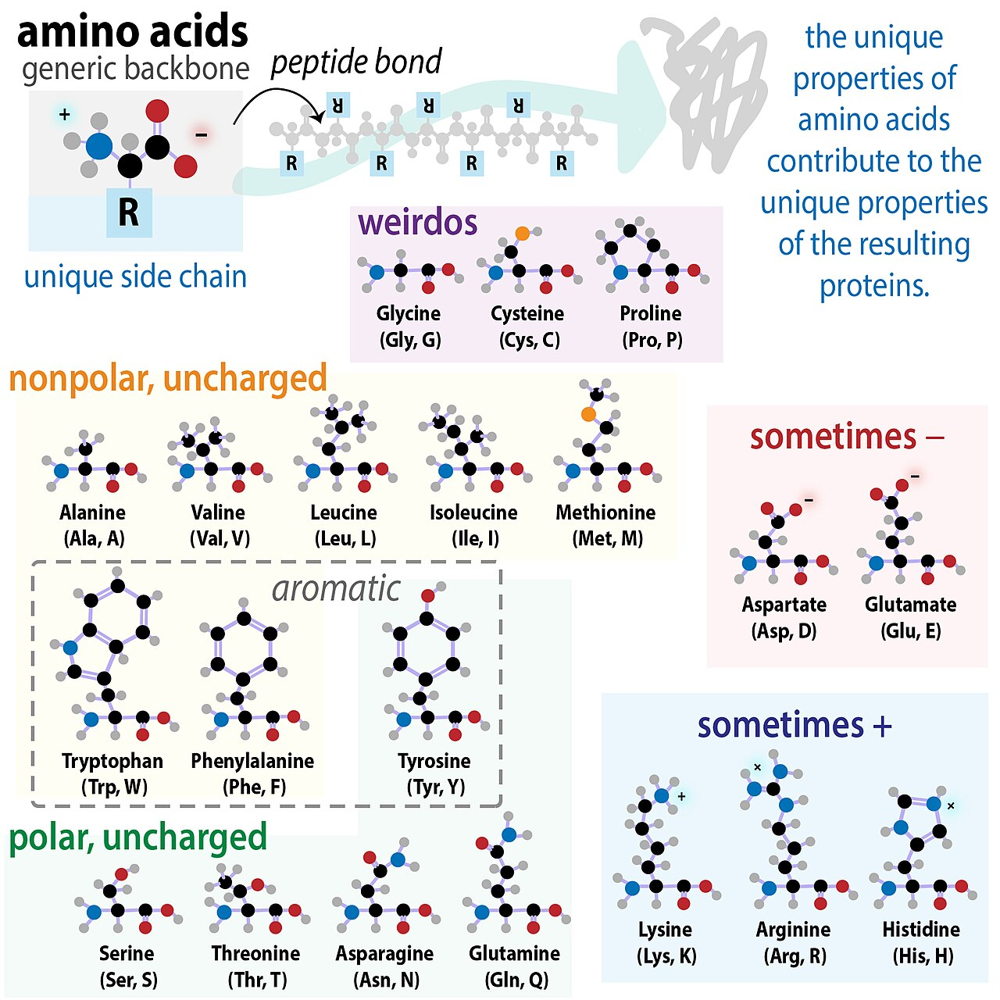
One backbone, twenty side chains
Every amino acid is built on the same small frame. A central carbon atom — the alpha carbon — holds four things: an amino group (–NH2), a carboxyl group (–COOH), a hydrogen atom, and a fourth attachment called the side chain or R group. Three of those four are identical in every amino acid. Only the side chain varies, and that variation is the whole story: it is what makes one amino acid water-loving and another water-fearing, one acidic and another basic, one small enough to fit into a tight turn and another bulky enough to force the chain to bend around it.
Twenty amino acids are used to build human proteins. The amino group is where the nitrogen lives, and it is the reason protein behaves differently from the other energy-yielding nutrients. Protein is roughly 16 percent nitrogen by weight, which is why laboratories have historically estimated the protein content of a food by measuring its nitrogen and multiplying by 6.25. It is also why the body cannot simply stockpile surplus protein the way it stores glycogen or fat: the nitrogen has to be stripped off and excreted as urea before the carbon skeleton can be burned or stored.
Indispensable, dispensable, conditional
The body can manufacture some amino acids from scratch, rearranging carbon skeletons and moving nitrogen around. Others it cannot make at all, or cannot make fast enough, and those must arrive in food. Nine amino acids are indispensable (the older term is essential): histidine, isoleucine, leucine, lysine, methionine, phenylalanine, threonine, tryptophan, and valine. The remaining amino acids are dispensable — not unimportant, simply synthesizable.
A third category sits in between. Conditionally indispensable amino acids are ones the body normally makes for itself but cannot keep up with under particular circumstances — rapid growth, serious illness, major injury, or an inherited enzyme defect. Tyrosine is the clearest example: it is normally made from phenylalanine, but a person with phenylketonuria (PKU) lacks the enzyme for that conversion, so tyrosine becomes indispensable for them and phenylalanine must be tightly restricted under medical supervision.
| Category | Amino acids | What it means |
|---|---|---|
| Indispensable (essential) | Histidine, isoleucine, leucine, lysine, methionine, phenylalanine, threonine, tryptophan, valine | The body cannot synthesize them; they must come from food |
| Dispensable (nonessential) | Alanine, asparagine, aspartic acid, glutamic acid, serine | Readily made from other compounds; no dietary requirement |
| Conditionally indispensable | Arginine, cysteine, glutamine, glycine, proline, tyrosine | Normally made in adequate amounts, but not during illness, injury, prematurity, or certain inherited disorders |
Notice that the branched-chain amino acids — leucine, isoleucine, and valine — are all indispensable. Leucine in particular has drawn research attention as a signal that helps switch on muscle protein synthesis. That signaling role is well described in laboratory and short-term human studies; whether adding isolated leucine or branched-chain supplements on top of an already adequate protein intake produces meaningful long-term gains is not settled, and the current evidence is best called preliminary.
- An amino acid is an alpha carbon carrying an amino group, a carboxyl group, a hydrogen, and a variable side chain.
- The side chain alone determines an amino acid's chemical personality, and therefore how a finished protein folds.
- Nine amino acids are indispensable and must come from food; some become conditionally indispensable during illness, growth, or inherited disorders.
- Protein is about 16% nitrogen and yields 4 kcal/g — the same as carbohydrate.
Section 2Protein structure
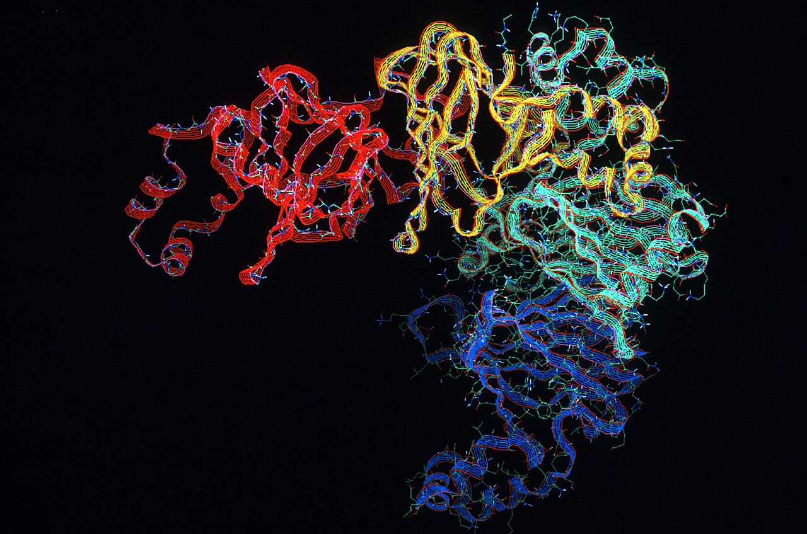
From sequence to shape
Two amino acids join when the carboxyl group of one reacts with the amino group of the other, releasing a molecule of water and leaving behind a peptide bond. Repeat that thousands of times and you have a polypeptide — a long chain whose order of amino acids was dictated, letter by letter, by a gene. That order is the protein's primary structure, and it is not a detail. Change one amino acid and you can change the whole molecule: sickle cell disease arises from a single substitution, valine in place of glutamic acid, at position six of the beta-globin chain of hemoglobin.
A polypeptide does not stay stretched out. Hydrogen bonds form along the backbone and pull local stretches into repeating patterns — the coiled alpha helix and the pleated beta sheet — which together make up secondary structure. Then the whole chain collapses on itself. Water-fearing side chains bury themselves in the interior, water-loving ones face outward, oppositely charged side chains attract, and sulfur-containing cysteines can lock the fold in place with disulfide bridges. The resulting three-dimensional shape is the tertiary structure. Some proteins go one step further and assemble from several finished chains: hemoglobin is four polypeptide subunits clicked together, an arrangement called quaternary structure.
| Level | What it is | Held together by | Example |
|---|---|---|---|
| Primary | The linear order of amino acids | Peptide bonds (strong, covalent) | The gene-specified sequence of insulin |
| Secondary | Local coils and pleats — alpha helix, beta sheet | Hydrogen bonds along the backbone | The helical rods of keratin in hair |
| Tertiary | The overall 3-D fold of one chain | Side-chain attractions, water-avoidance, disulfide bridges | The pocket in an enzyme's active site |
| Quaternary | Two or more folded chains assembled | The same side-chain forces, acting between subunits | Hemoglobin's four subunits |
The reason to learn this hierarchy is that shape is function. An enzyme works because its active site is a pocket contoured to fit one particular molecule. An antibody works because its tips are shaped to grip one particular antigen. A membrane transporter works because it has a channel of the right size and charge. Lose the shape and you lose the job, even though every peptide bond is still intact.
Denaturation
Anything that disrupts the weak forces holding a fold together will unravel a protein. This is denaturation, and the usual culprits are heat, acid or alkali, mechanical agitation, alcohol, certain salts and heavy metals, and ultraviolet light. Crucially, denaturation breaks the hydrogen bonds and side-chain attractions that create secondary, tertiary, and quaternary structure — it does not break the peptide bonds of the primary structure. The sequence survives; the shape does not.
You have watched this happen. Egg white is a clear solution of folded proteins, chiefly ovalbumin; heat it and those proteins unfold, tangle with one another, and set into an opaque solid that will not go back. Whipping egg whites denatures them mechanically. Adding acid to milk denatures casein and produces curds. Marinating fish in citrus juice, "cooking" it without heat, is acid denaturation. Because denatured protein is more open and more accessible, cooking generally makes protein easier to digest, not harder.
The body does this deliberately, too. Stomach acid denatures dietary proteins on arrival, unfolding them so digestive enzymes can reach the peptide bonds inside. And it explains part of why certain extremes are dangerous: a very high fever, a large shift in blood pH, or certain poisons can begin to unfold the body's own proteins, which is one reason those states are treated urgently.
- Peptide bonds link amino acids into polypeptides; the sequence is the primary structure.
- Hydrogen bonding produces secondary structure (alpha helix, beta sheet); side-chain forces produce tertiary; multiple chains produce quaternary.
- A single amino acid substitution can change function — sickle cell disease is the classic example.
- Denaturation (heat, acid, agitation, alcohol) destroys shape but leaves peptide bonds intact, and usually improves digestibility.
Section 3Digestion and absorption

The stomach: acid first, enzyme second
Nothing happens to protein in the mouth beyond chewing. Saliva contains enzymes for starch and fat, but none for protein, so chewing contributes only mechanical breakdown and surface area. The chemistry begins in the stomach, and it begins with acid.
Parietal cells in the gastric lining secrete hydrochloric acid, dropping stomach contents to roughly pH 1.5–3.5. That acid does two jobs at once. It denatures the incoming proteins, unfolding them so their interior bonds become reachable. And it converts pepsinogen — an inactive precursor released by chief cells — into the active enzyme pepsin. Pepsin then clips the long chains at specific interior points, producing shorter polypeptides. Pepsin is unusual among enzymes in preferring a strongly acidic environment; it is the only major digestive protease that works well at gastric pH.
The small intestine finishes the job
Acidic chyme entering the duodenum triggers two hormones. Secretin prompts the pancreas to release bicarbonate, neutralizing the acid so intestinal enzymes can work; cholecystokinin (CCK) prompts the pancreas to release its digestive enzymes. Those enzymes arrive as inactive zymogens — trypsinogen, chymotrypsinogen, procarboxypeptidase — because a pancreas that secreted active proteases would digest itself.
Activation happens on the intestinal wall. Enteropeptidase, an enzyme anchored in the brush border of the small intestine, converts trypsinogen into trypsin; trypsin then activates the remaining zymogens in a cascade. Trypsin, chymotrypsin, and elastase cut chains at interior bonds; carboxypeptidase nibbles amino acids off the carboxyl end. Finally, brush-border peptidases — aminopeptidases and dipeptidases embedded in the microvilli of the intestinal cells — reduce what is left to free amino acids and short di- and tripeptides.
| Site | Secretion | Active enzyme | What it does to protein |
|---|---|---|---|
| Mouth | Saliva | — none for protein | Chewing only; increases surface area |
| Stomach | Hydrochloric acid | — | Denatures protein; activates pepsinogen |
| Stomach | Pepsinogen (chief cells) | Pepsin | Cuts interior bonds → shorter polypeptides |
| Pancreas | Trypsinogen | Trypsin (via enteropeptidase) | Cuts interior bonds; activates the other zymogens |
| Pancreas | Chymotrypsinogen, proelastase | Chymotrypsin, elastase | Further interior cuts → small peptides |
| Pancreas | Procarboxypeptidase | Carboxypeptidase | Removes amino acids from the carboxyl end |
| Small intestine | Brush-border enzymes | Aminopeptidase, dipeptidase | Final cuts → free amino acids, di- and tripeptides |
Absorption and the amino acid pool
Absorption is efficient. Free amino acids cross into the intestinal cell on sodium-dependent carriers, and di- and tripeptides cross on a separate hydrogen-ion-driven transporter, then are broken down to single amino acids inside the cell. Because several carriers exist and each handles a family of chemically similar amino acids, very large doses of a single amino acid can compete with its chemical relatives for transport — one of several reasons that isolated single-amino-acid supplements are approached cautiously. From the intestinal cell, amino acids enter the portal vein and travel to the liver, which decides what to keep, what to convert, and what to release into general circulation. Healthy adults absorb the great majority of the protein they eat; digestibility is typically above 90 percent for animal foods and refined soy products and somewhat lower for whole legumes and grains, where fiber and other plant compounds interfere.
What arrives is added to the amino acid pool, the body's circulating and intracellular supply. That pool is fed from two directions: from food, and from the continuous dismantling of the body's own proteins. This protein turnover is enormous — adults recycle on the order of 250–300 grams of protein daily, far more than anyone eats — and it means dietary protein tops up a system that is already vigorously reusing its own material.
- No protein digestion occurs in the mouth; stomach acid denatures protein and activates pepsin.
- Pancreatic proteases are secreted as zymogens; brush-border enteropeptidase activates trypsin, which activates the rest.
- Brush-border peptidases finish digestion; amino acids and small peptides are absorbed and carried by the portal vein to the liver.
- The amino acid pool is refilled by both diet and the constant turnover of the body's own proteins.
Section 4Functions of protein
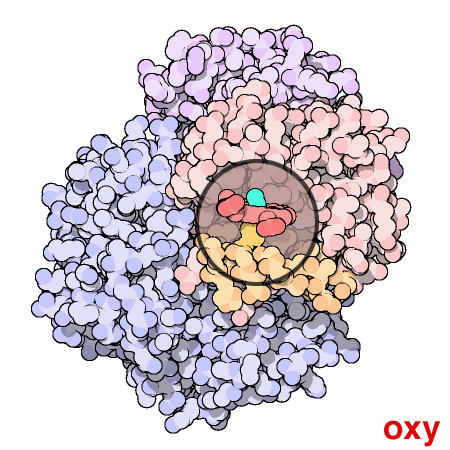
Building, and rebuilding
The most familiar role of protein is structural. Collagen is the single most abundant protein in the human body: it forms the scaffolding of skin, bone matrix, tendon, ligament, cartilage, and the walls of blood vessels, and it is the framework on which a wound heals. Keratin makes hair and nails and toughens the outer skin. Elastin lets tissue recoil. Actin and myosin are the sliding filaments that produce every muscle contraction. None of this is built once and left alone — skin, gut lining, and blood cells are replaced continuously, and every replacement draws on the amino acid pool.
Growth raises the demand sharply. Infancy, childhood, adolescence, pregnancy, lactation, and recovery from surgery, burns, or serious infection all add new tissue or repair damaged tissue, and all require that more protein be retained than is lost. That balance is described by nitrogen balance: nitrogen in versus nitrogen out. Healthy adults sit at equilibrium. Growing children, pregnant women, and people recovering from injury are in positive balance. Prolonged inadequate intake, severe illness, burns, or immobility push a person into negative balance, where body protein is being lost faster than it is replaced.
Enzymes, hormones, and transport
Almost every chemical reaction in the body is run by a protein enzyme. Enzymes are catalysts: they speed reactions enormously without being consumed, and each one is shaped for its specific substrate. Pepsin, trypsin, lactase, and the enzymes of every metabolic pathway are proteins.
Many hormones are proteins or short peptides — insulin, glucagon, growth hormone, parathyroid hormone, and the appetite signals leptin and ghrelin among them. (Not all hormones are protein; the steroid hormones are built from cholesterol, and thyroid hormones from tyrosine plus iodine.)
Transport proteins move things that could not otherwise travel. Hemoglobin carries oxygen in red blood cells. Albumin ferries fatty acids, calcium, bilirubin, and many medications through the bloodstream. Transferrin carries iron, retinol-binding protein carries vitamin A, and lipoproteins carry fat and cholesterol through watery plasma. Embedded in every cell membrane are protein pumps and channels that move sodium, potassium, glucose, and amino acids across a barrier that would otherwise block them.
| Function | Example proteins | What it accomplishes |
|---|---|---|
| Structure | Collagen, keratin, elastin, actin, myosin | Skin, bone matrix, tendon, hair, muscle contraction, wound healing |
| Enzymes | Pepsin, trypsin, lactase, metabolic enzymes | Catalyze essentially every reaction in the body |
| Hormones | Insulin, glucagon, growth hormone, leptin | Chemical messengers that coordinate organs |
| Transport | Hemoglobin, albumin, transferrin, lipoproteins, membrane pumps | Move oxygen, iron, fats, vitamins, minerals, and drugs |
| Immunity | Antibodies (immunoglobulins), complement proteins | Recognize and neutralize specific foreign invaders |
| Fluid balance | Albumin and other plasma proteins | Hold water inside blood vessels by osmotic pull |
| Acid–base balance | Hemoglobin, plasma proteins | Buffer excess acid or base to hold blood pH near 7.4 |
| Clotting | Fibrinogen → fibrin | Form the mesh that seals a damaged vessel |
| Energy | Any protein, when needed | 4 kcal/g — used when intake is inadequate or demand is extreme |
Immunity, fluid balance, and the acid–base buffer
Antibodies are proteins, and each is shaped to bind one specific antigen. Producing them costs amino acids, which is part of why severe protein–energy undernutrition weakens immune defense and slows recovery from infection.
Fluid balance is a less obvious but clinically important job. Plasma proteins, especially albumin, are too large to slip out of capillaries. Staying inside, they exert an osmotic pull that keeps water in the bloodstream. When plasma protein falls very low — in severe undernutrition, advanced liver disease, or protein-losing kidney disease — that pull weakens, fluid can leak into surrounding tissue, and visible swelling called edema appears. It is worth being careful about how far to push this explanation. It accounts well for the edema of advanced liver disease and protein-losing kidney disease. In severe childhood undernutrition it is only part of the story — the swollen belly and puffy limbs of a profoundly malnourished child were long explained by low albumin alone, and that account is now considered incomplete (see Section 5). What is not in doubt is the observation itself: the swelling is fluid, not tissue, so a child can look filled out and be severely malnourished at the same time.
Proteins also act as buffers. Their side chains can accept or release hydrogen ions, soaking up excess acid or base and helping hold arterial blood pH in its narrow survivable range near 7.4. And when carbohydrate and fat intake is insufficient, protein can be sacrificed for energy — deaminated, with the nitrogen excreted as urea and the carbon skeleton burned or converted to glucose. Adequate carbohydrate intake is described as protein-sparing precisely because it prevents that sacrifice.
- Protein builds and repairs tissue: collagen is the body's most abundant protein.
- Nitrogen balance is positive in growth, pregnancy, and recovery; negative in severe illness, injury, or inadequate intake.
- Proteins serve as enzymes, many hormones, transporters, antibodies, buffers, and clotting factors.
- Albumin holds fluid inside blood vessels; when plasma protein falls very low, edema can result — though in childhood undernutrition it is not the whole explanation.
Section 5Protein in the diet

Judging protein quality
Protein quality describes how well a food's amino acid pattern matches human needs, combined with how well that protein is digested. A protein supplying all nine indispensable amino acids in adequate proportions is called complete, or high quality: eggs, dairy, meat, poultry, fish, and among plants, soy and quinoa. Most single plant proteins are incomplete — a term that needs care, because it almost never means an amino acid is absent. It means one or more indispensable amino acids are present in too small a proportion relative to human need. The one in shortest supply is called the limiting amino acid, because protein synthesis can proceed only as far as the scarcest part allows. Grains tend to be limited in lysine; legumes tend to be limited in methionine.
Scoring systems formalize this. The PDCAAS (Protein Digestibility-Corrected Amino Acid Score) compares a food's indispensable amino acid pattern to a reference pattern and corrects for digestibility, capped at 1.00 — egg, milk, whey, casein, and soy protein isolate all reach the cap. The FAO has recommended replacing it with DIAAS (Digestible Indispensable Amino Acid Score), which measures digestibility at the end of the small intestine rather than in the stool and is not capped, so it distinguishes among the high scorers more finely. These are useful research and formulation tools; for a person eating a varied diet with enough total protein, the scores rarely change what they should do.
Complementary proteins are two incomplete proteins whose gaps cover each other — classically legumes with grains. Beans and rice, lentils and flatbread, hummus and pita, peanut butter on bread: each pairing supplies what the other lacks. This is the culinary logic of a great many traditional cuisines, arrived at long before anyone measured an amino acid.
How much is enough — and what about more?
The RDA for protein in healthy adults age 19 and older is 0.8 grams per kilogram of body weight per day, and it is the same figure for men and women. In the DRI reference tables that works out to about 56 g/day for a 70-kg man and 46 g/day for a 57-kg woman, but the per-kilogram figure is the one to remember, since it adapts to the actual person. This RDA is set to meet the needs of nearly all healthy adults; the median requirement (the EAR) is lower, at 0.66 g/kg/day. Needs are expressed differently across life stages, and pregnancy and lactation raise them substantially.
| Life stage | Protein DRI | Approximate g/day |
|---|---|---|
| Infants 0–6 mo | Adequate Intake (no RDA set) | ~9.1 g/day |
| Infants 7–12 mo | RDA 1.2 g/kg/day | ~11 g/day |
| Children 1–3 y | RDA 1.05 g/kg/day | ~13 g/day |
| Children 4–8 y | RDA 0.95 g/kg/day | ~19 g/day |
| Ages 9–13 y | RDA 0.95 g/kg/day | ~34 g/day |
| Ages 14–18 y | RDA 0.85 g/kg/day | ~52 g (male), ~46 g (female) |
| Adults 19+ y, both sexes | RDA 0.8 g/kg/day | ~56 g (male), ~46 g (female) at reference weights |
| Pregnancy & lactation | RDA 1.1 g/kg/day | ~71 g/day |
Two more numbers matter. The AMDR — the Acceptable Macronutrient Distribution Range — places protein at 10–35 percent of total calories for adults, 10–30 percent for children and adolescents 4–18 years, and 5–20 percent for children 1–3 years. And there is no Tolerable Upper Intake Level for protein, not because any amount is known to be safe but because the data were judged insufficient to set one.
Certain groups are studied as needing more than the RDA. Joint position statements from sports nutrition and dietetics organizations describe intakes of roughly 1.2–2.0 g/kg/day for athletes in heavy training, and several expert panels have proposed roughly 1.0–1.2 g/kg/day for adults over about 65 to help offset age-related loss of muscle mass. Both figures come from expert consensus and mostly short-term trials rather than from the DRI process, so treat them as reasonable professional guidance rather than as established requirements. In the United States and most high-income countries, average protein intake already comfortably exceeds the RDA, and outright protein deficiency in an otherwise well-fed adult is uncommon.
What about excess? Several old concerns have not held up well. The idea that high protein intake damages healthy kidneys is not supported by the available evidence in people with normal kidney function — though that evidence is mostly short- and medium-term trials plus observational cohorts, so it is better read as an absence of demonstrated harm than as proof of long-term safety at any intake. Protein restriction in established kidney disease is a separate, clinician-managed matter and not a general recommendation. The concern that high protein leaches calcium from bone has likewise weakened; current evidence suggests protein is neutral or modestly favorable for bone when calcium intake is adequate. What remains reasonable to say is more modest: extremely high protein intakes displace other foods and their nutrients, they are not known to confer added benefit once needs are met, and the International Agency for Research on Cancer has classified processed meat as carcinogenic to humans and red meat as probably carcinogenic, based mainly on colorectal cancer. Those two labels are not the same strength of claim: the processed-meat classification rests on evidence the agency judged sufficient, while the red-meat one rests on evidence it judged limited. Both come from observational studies, the absolute risk attached to a serving is small, and neither says anything about protein itself — the suspicion falls on processing, preservatives, and cooking chemistry, not on the amino acids. Protein deficiency at the severe end is a different matter entirely: marasmus is severe wasting from inadequate energy and protein together, while kwashiorkor presents with edema, an enlarged fatty liver, and skin and hair changes. Kwashiorkor was long attributed to protein deficiency with adequate energy, but that explanation is now considered incomplete — oxidative stress, aflatoxin exposure, and gut microbiome differences are all under investigation, and the mechanism should be described as unresolved.
Vegetarian and vegan patterns
Well-planned vegetarian and vegan diets are recognized by major dietetics organizations as nutritionally adequate and appropriate at all stages of life, including pregnancy, lactation, infancy, childhood, and athletic training. Meeting protein needs without animal foods is straightforward when total energy intake is adequate and the diet includes legumes, soy foods, whole grains, nuts, and seeds — and soy in particular is a complete, highly digestible protein. Because plant proteins are somewhat less digestible and some are limited in lysine or methionine, some authorities suggest vegans aim modestly above 0.8 g/kg/day; the size of that adjustment is debated and the evidence is not strong enough to specify a single number.
The nutrients that actually require planning on a plant-based pattern are mostly not protein. Vitamin B12 is the firm one: it is not reliably available from unfortified plant foods, and vegans need fortified foods or a supplement — this is well established, not preliminary. Iron from plants is non-heme and less well absorbed, though vitamin C eaten at the same meal improves uptake; zinc, calcium, iodine, vitamin D, and the long-chain omega-3 fats EPA and DHA also deserve attention. These are planning items, not arguments against the pattern.
| Food | Typical portion | Protein (approx.) |
|---|---|---|
| Cooked chicken, beef, or fish | 3 oz (85 g) | 21–26 g |
| Greek yogurt, plain | 6 oz (170 g) | 15–18 g |
| Cooked lentils | 1 cup | ~18 g |
| Cooked black beans or chickpeas | 1 cup | 14–15 g |
| Firm tofu | 1/2 cup | ~10 g |
| Milk or fortified soy milk | 1 cup | ~8 g |
| Cooked quinoa | 1 cup | ~8 g |
| Peanut butter | 2 tbsp | ~7 g |
| Large egg | 1 | ~6 g |
| Cooked rice or pasta | 1 cup | 4–8 g |
A last practical note on supplements. Protein powders — whey, casein, soy, pea — are food, not medicine, and they are neither necessary nor harmful for most people. They are convenient. They are not superior to the same protein from a meal, and buying them is a budget decision more than a physiological one. As with all of this chapter, the material here is general education about how protein works, not individualized dietary or medical advice; questions about a specific person's needs, a kidney or liver condition, PKU, food allergy, or celiac disease belong with that person's own clinician or registered dietitian.
- Complete proteins supply all nine indispensable amino acids; the scarcest one in a food is the limiting amino acid.
- Complementary proteins (legumes plus grains) cover each other's gaps — and need not be eaten in the same meal.
- Adult RDA is 0.8 g/kg/day (age 19+, both sexes); pregnancy and lactation raise it to 1.1 g/kg/day; the AMDR is 10–35% of calories with no UL.
- Well-planned vegetarian and vegan diets meet protein needs; vitamin B12 supplementation is the firm requirement for vegans.
The chapter in one breath
- An amino acid is an alpha carbon plus an amino group, a carboxyl group, a hydrogen, and a variable side chain — and the side chain determines everything downstream.
- Nine of the twenty amino acids are indispensable; several more become conditionally indispensable during illness, growth, or inherited disorders.
- Sequence (primary structure) dictates fold, and fold dictates function; denaturation destroys the fold but leaves peptide bonds intact.
- Digestion starts with stomach acid and pepsin, is completed by pancreatic zymogens activated via enteropeptidase and by brush-border peptidases, and delivers amino acids to the liver by the portal vein.
- Protein serves as structure, enzymes, hormones, transport, antibodies, buffers, clotting factors, and — reluctantly — fuel at 4 kcal/g.
- Albumin holds fluid in the bloodstream; when plasma protein falls very low, edema can appear.
- Protein quality reflects amino acid pattern plus digestibility; complementary plant proteins work across the whole day, not just within one meal.
- The adult RDA is 0.8 g/kg/day (19+, both sexes), rising to 1.1 g/kg/day in pregnancy and lactation, with an AMDR of 10–35% of calories and no upper limit set.
ReferenceWords worth knowing
A quick reference for the terms in this chapter — skim it now, or circle back whenever a word trips you up.
- Amino acid
- The building block of protein: a central carbon bonded to an amino group, a carboxyl group, a hydrogen, and a variable side chain.
- Amino acid pool
- The body's circulating and intracellular supply of free amino acids, refilled from both food and the breakdown of body proteins.
- Complementary proteins
- Two incomplete proteins whose limiting amino acids differ, so that together they supply the full pattern — classically legumes with grains.
- Complete (high-quality) protein
- A protein supplying all nine indispensable amino acids in adequate proportions; includes eggs, dairy, meat, fish, soy, and quinoa.
- Conditionally indispensable amino acid
- An amino acid the body normally synthesizes but cannot make in sufficient quantity during illness, injury, prematurity, or certain inherited disorders.
- Denaturation
- Loss of a protein's three-dimensional shape from heat, acid, alkali, agitation, or alcohol; peptide bonds and sequence remain intact.
- Digestible Indispensable Amino Acid Score (DIAAS)
- A protein quality measure using digestibility at the end of the small intestine; recommended by the FAO to succeed PDCAAS and not capped at 1.00.
- Dispensable (nonessential) amino acid
- An amino acid the body can synthesize in adequate amounts, so it carries no dietary requirement.
- Edema
- Visible swelling from fluid accumulating in tissue; one cause is a fall in plasma proteins such as albumin.
- Enteropeptidase
- A brush-border enzyme of the small intestine that converts trypsinogen to trypsin, triggering the pancreatic protease cascade.
- Indispensable (essential) amino acid
- One of the nine amino acids the body cannot synthesize and must obtain from food.
- Kwashiorkor
- A form of severe acute malnutrition marked by edema, fatty liver, and skin and hair changes; historically attributed to protein deficiency, though the mechanism is now considered unresolved.
- Limiting amino acid
- The indispensable amino acid present in shortest supply relative to need, which caps how much protein synthesis can proceed.
- Marasmus
- Severe acute malnutrition from prolonged deficiency of both energy and protein, marked by extreme wasting.
- Nitrogen balance
- The comparison of nitrogen consumed with nitrogen excreted; positive in growth and recovery, negative in illness or inadequate intake.
- Pepsin
- The stomach's protein-digesting enzyme, formed from pepsinogen by hydrochloric acid and active only at low pH.
- Peptide bond
- The covalent bond joining the carboxyl group of one amino acid to the amino group of the next, formed with the loss of water.
- Primary structure
- The linear sequence of amino acids in a polypeptide, specified by a gene.
- Protein Digestibility-Corrected Amino Acid Score (PDCAAS)
- A protein quality measure comparing a food's amino acid pattern to a reference and correcting for digestibility, capped at 1.00.
- Protein turnover
- The continuous breakdown and resynthesis of body proteins, amounting to roughly 250–300 grams per day in adults.
- Quaternary structure
- The assembly of two or more folded polypeptide chains into one functional protein, as in hemoglobin's four subunits.
- Zymogen (proenzyme)
- An inactive enzyme precursor, such as trypsinogen, activated only after it reaches its site of action.
Check yourself
Vitamins
Vitamins are the smallest thing on your plate that can change everything about how you feel. They supply no energy at all — zero kilocalories per gram, against carbohydrate's 4, protein's 4, fat's 9, and alcohol's 7 — yet without milligram and microgram quantities of thirteen specific organic compounds, blood will not clot, collagen will not hold, nerves will not conduct, and red cells will not mature. That is the paradox worth sitting with: a nutrient can be needed in vanishing amounts and still be non-negotiable. This chapter walks through the two families of vitamins, what each one actually does inside a cell, the classic deficiency syndromes that taught us they existed, and where the evidence for supplementation is strong versus where it is thin. Along the way you will learn to read a Recommended Dietary Allowance properly — which population, which units, and when the number shifts with age, sex, or pregnancy.
By the end of this chapter you can
- Define a vitamin as an organic micronutrient and explain why vitamins yield no energy.
- Separate the fat-soluble (A, D, E, K) from the water-soluble (B complex and C) vitamins and predict how solubility affects absorption, storage, and toxicity risk.
- State the principal function, food sources, deficiency syndrome, and toxicity picture for vitamins A, D, E, and K.
- Describe the coenzyme role of the B vitamins and match each to its classic deficiency disease.
- Explain vitamin C's role in collagen hydroxylation and iron absorption, and recognize scurvy.
- Read an RDA, AI, or UL correctly, naming the population, units, and life-stage adjustments.
- Describe factors that change bioavailability, including food matrix, dietary fat, and cooking method.
- Distinguish strong from preliminary evidence when evaluating a single-nutrient supplement claim.
Section 1What vitamins are
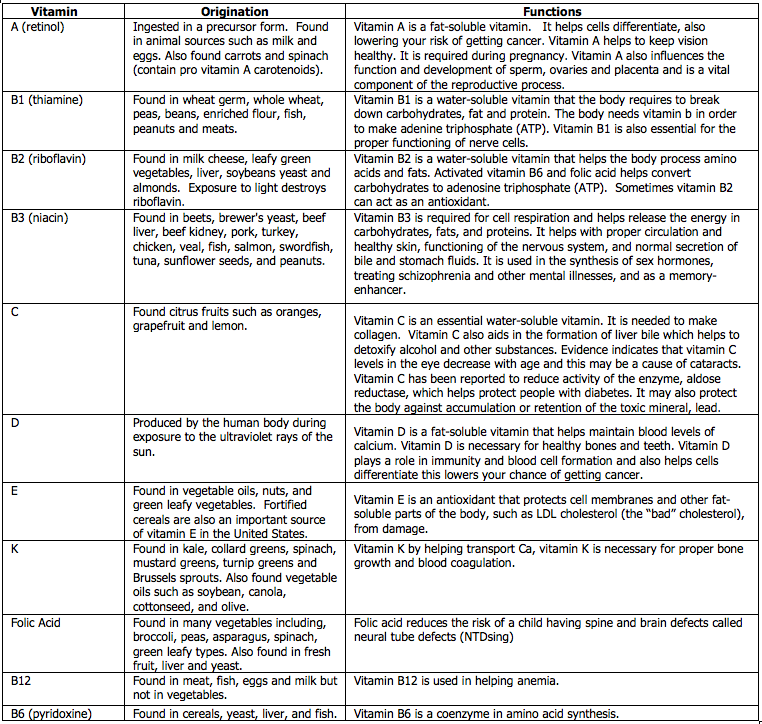
Organic, essential, and needed in tiny amounts
A vitamin is an organic compound — carbon-containing, built by a living thing — that the human body requires in small amounts, cannot make at all (or cannot make enough of), and must therefore obtain from the diet. Each of those clauses does work. Organic separates vitamins from minerals such as calcium, iron, and zinc, which are single elements and cannot be destroyed by heat or light. Small amounts puts them in the micronutrient category: intakes are measured in milligrams (mg) or micrograms (µg) per day, not the tens or hundreds of grams we use for the macronutrients. Essential means that if intake falls low enough for long enough, a specific and reproducible deficiency disease appears — and resolving the deficiency resolves the disease. That last criterion is how each vitamin was discovered.
A common point of confusion: vitamins do not provide energy. Only three macronutrients and one non-nutrient do. Carbohydrate yields about 4 kcal per gram, protein about 4 kcal per gram, fat about 9 kcal per gram, and alcohol about 7 kcal per gram. Vitamins yield 0 kcal per gram. What they do instead is make energy release possible: several B vitamins are built into the coenzymes that run glycolysis, the citric acid cycle, and the electron transport chain. A vitamin does not add fuel to the fire; it is part of the machinery that burns the fuel. That is why "vitamins for energy" is a marketing phrase rather than a physiological one — correcting a genuine deficiency can restore energy dramatically, while adding more vitamin on top of adequacy does not.
Two nuances keep the definition honest. First, humans can make some vitamin D in skin exposed to ultraviolet B radiation, and gut bacteria contribute some vitamin K and biotin — so "cannot be synthesized" is a near-rule rather than an absolute one. Second, a handful of compounds sit at the edge of the category: choline, for example, has an Adequate Intake (550 mg/day for adult men, 425 mg/day for adult women) and is essential, but is usually classed separately because the body synthesizes a meaningful fraction of it.
The two families, and why solubility decides everything
Thirteen compounds are recognized as vitamins for humans, and they divide cleanly by what they dissolve in. The four fat-soluble vitamins — A, D, E, and K — travel with dietary fat, need bile and pancreatic lipase for efficient absorption, get packaged into chylomicrons for transport in lymph, and are stored in the liver and adipose tissue. The nine water-soluble vitamins — the eight B vitamins plus vitamin C — dissolve in the watery interior of foods and of the body, are generally absorbed directly into portal blood, are stored only in small amounts, and are excreted in urine when intake exceeds need.
From that one physical property, a whole set of clinical predictions follows. Fat-soluble vitamins accumulate, so deficiency takes months to years to appear but toxicity (hypervitaminosis) is a real hazard from concentrated supplements. Water-soluble vitamins turn over quickly, so deficiency can develop in weeks to months and intake needs to be regular — but excess is mostly excreted, which makes toxicity less common. "Less common" is not "impossible," and Section 5 covers the important exceptions. One more consequence: anything that impairs fat digestion — cystic fibrosis, cholestatic liver disease, bariatric surgery, untreated celiac disease, some fat-blocking medications — puts the fat-soluble vitamins at risk long before it touches the water-soluble ones.
| Property | Fat-soluble (A, D, E, K) | Water-soluble (B complex, C) |
|---|---|---|
| Absorption | Requires dietary fat, bile, micelle formation | Generally direct; some need carriers (B12 needs intrinsic factor) |
| Transport | Chylomicrons and lipoproteins, via lymph | Free or protein-bound in portal blood |
| Storage | Substantial — liver and adipose tissue | Minimal, except vitamin B12 (liver stores last years) |
| Excretion | Poor; excess accumulates | Readily excreted in urine |
| Deficiency onset | Months to years | Weeks to months |
| Toxicity risk | Higher — A and D especially | Lower, but real for B6, niacin, folic acid, vitamin C |
| Cooking losses | Relatively heat-stable; lost with discarded fat | Leached into cooking water; C and thiamin heat-labile |
Reading the reference values
Vitamin recommendations in North America come from the Dietary Reference Intakes (DRIs), and the labels matter. An RDA (Recommended Dietary Allowance) is the intake estimated to meet the needs of about 97–98% of healthy people in a specified life-stage and sex group — it is deliberately generous, and it is a target for individuals, not a minimum below which harm is certain. An AI (Adequate Intake) is used when the evidence is too thin to set an RDA; vitamins K, B5, and B7 all have AIs rather than RDAs. A UL (Tolerable Upper Intake Level) is the highest chronic daily intake unlikely to cause harm — not a goal, a ceiling. Every one of these numbers is meaningless without its population and units, which is why this chapter always states both.
- A vitamin is an organic micronutrient the body needs in mg or µg amounts and largely cannot synthesize.
- Vitamins supply 0 kcal/g; energy comes from carbohydrate (4), protein (4), fat (9), and alcohol (7) kcal/g.
- Fat-soluble vitamins A, D, E, K are stored and can accumulate to toxicity; water-soluble B vitamins and C turn over fast and need regular intake.
- RDA covers ~97–98% of a specified group, AI is used when evidence is limited, and UL is a ceiling — all three are population-specific.
Section 2Fat-soluble vitamins

Vitamin A: vision, epithelium, and the one with a teratogenic ceiling
Vitamin A arrives in two chemically different forms. Preformed vitamin A (retinol and retinyl esters) comes from animal-source foods — liver above all, plus dairy fat, egg yolk, and fortified foods. Provitamin A carotenoids — principally beta-carotene, plus alpha-carotene and beta-cryptoxanthin — come from deeply colored plants such as sweet potato, carrot, pumpkin, mango, and dark leafy greens, and are converted to retinol in the intestinal wall with modest and variable efficiency. Because the two forms are not interchangeable gram for gram, intakes are expressed in retinol activity equivalents (RAE): 1 µg RAE equals 1 µg of retinol, 12 µg of dietary beta-carotene, or 24 µg of the other provitamin A carotenoids.
Functionally, vitamin A does three big jobs. As 11-cis-retinal bound to opsin it forms rhodopsin, the pigment that lets rod cells detect dim light. As retinoic acid it acts as a hormone-like regulator of gene transcription, directing the differentiation of epithelial tissue — skin, cornea, respiratory and gut lining. And it supports immune competence, partly by keeping those epithelial barriers intact. Deficiency therefore starts with night blindness (nyctalopia), progresses to xerophthalmia with drying of the conjunctiva and cornea, Bitot's spots, and eventually keratomalacia and irreversible blindness; it also raises susceptibility to infection. Globally, vitamin A deficiency remains a leading preventable cause of childhood blindness, and randomized trials of supplementation in deficient populations show reduced child mortality — strong trial-based evidence, though the size of the effect varies across trials and appears smallest where deficiency is least common.
Toxicity is the other half of the story and it is genuinely important. The adult UL is 3,000 µg/day of preformed vitamin A. Chronic excess causes liver injury, bone and joint pain, hair loss, dry cracking skin, and raised intracranial pressure. Most consequentially, preformed vitamin A is a teratogen: high supplemental intakes in early pregnancy are associated with birth defects, which is also why the retinoid medications used for severe acne carry pregnancy-prevention requirements. Carotenoids from food behave differently — they are not converted fast enough to cause hypervitaminosis, and very high intakes produce only carotenodermia, a harmless yellow-orange tint to the skin that fades. The RDA for adults is 900 µg RAE/day for men and 700 µg RAE/day for women, rising to 770 µg RAE in pregnancy and 1,300 µg RAE in lactation.
Vitamin D: a hormone that we happen to call a vitamin
Vitamin D is unusual twice over. It can be synthesized in skin, where UVB radiation converts 7-dehydrocholesterol to cholecalciferol (vitamin D3); and it functions as a steroid hormone rather than a coenzyme. The dietary form from fungi, notably UV-exposed mushrooms, is ergocalciferol (vitamin D2); food sources of D3 include oily fish, cod liver oil, egg yolk, and — the largest contributor in many countries — fortified milk and plant milks. Whichever the source, activation takes two steps: the liver adds a hydroxyl group to make 25-hydroxyvitamin D, the circulating storage form measured on a lab report, and the kidney adds another to make 1,25-dihydroxyvitamin D (calcitriol), the active hormone.
Calcitriol's main job is calcium and phosphate economy: it increases intestinal absorption of both, works with parathyroid hormone to maintain serum calcium, and thereby permits normal bone mineralization. Deficiency produces rickets in children — soft, deforming bone with bowed legs, widened wrists, and a beaded costochondral "rachitic rosary" — and osteomalacia in adults, with bone pain and proximal muscle weakness. Risk rises with limited sun exposure, higher skin melanin (which lengthens the UVB exposure needed), high latitude, clothing coverage, older age, higher body fat (which sequesters vitamin D in adipose tissue), and fat malabsorption; exclusively breastfed infants are routinely given a supplement because human milk is low in vitamin D. The RDA is 15 µg (600 IU)/day for ages 1–70, including pregnancy and lactation, and 20 µg (800 IU)/day for adults over 70; infants have an AI of 10 µg (400 IU)/day. Note the unit conversion, which trips everyone: 1 µg = 40 IU. The adult UL is 100 µg (4,000 IU)/day, and toxicity — hypercalcemia, hypercalciuria, and calcium deposition in kidneys and soft tissue — comes from supplements, never from sunlight, because skin synthesis is self-limiting.
Vitamin D is also a case study in evidence quality. That it prevents and treats rickets and osteomalacia is beyond dispute. The much broader claims — that supplementation in already-replete people prevents cancer, cardiovascular disease, diabetes, or respiratory infection — looked promising in observational studies and then largely failed to hold up in large randomized trials. Treat the skeletal evidence as strong and the extraskeletal evidence as preliminary and mostly negative so far.
Vitamin E and vitamin K
Vitamin E is a family of eight related compounds, but only alpha-tocopherol is retained by the body well enough to meet human requirements, because a hepatic transfer protein selectively loads that form back into circulating lipoproteins. Its role is as the principal lipid-phase antioxidant: it intercepts free radicals inside cell membranes and lipoproteins, protecting polyunsaturated fatty acids from chain-reaction oxidation, and is then regenerated with help from vitamin C. Sources are concentrated in plant fats — sunflower and safflower oil, wheat germ oil, almonds, sunflower seeds, peanuts, avocado, and leafy greens. The adult RDA is 15 mg/day of alpha-tocopherol for both men and women, rising to 19 mg/day in lactation. Dietary deficiency is rare in healthy people and shows up mainly with severe fat malabsorption or specific genetic disorders, producing peripheral neuropathy, ataxia, myopathy, retinopathy, and hemolytic anemia in premature infants. The UL for supplemental alpha-tocopherol is 1,000 mg/day; high-dose supplements can interfere with vitamin K–dependent clotting, and large trials of high-dose vitamin E have found no cardiovascular benefit and some signals of harm.
Vitamin K exists as phylloquinone (K1), abundant in green leafy vegetables such as kale, spinach, collards, and broccoli and in some plant oils, and as the menaquinones (K2) from fermented foods, some animal foods, and colonic bacteria. Its function is precise: it is the cofactor for gamma-glutamyl carboxylase, the enzyme that carboxylates specific glutamate residues so those proteins can bind calcium. The substrates include clotting factors II, VII, IX, and X plus proteins C and S, and also bone proteins such as osteocalcin and the vessel-wall matrix Gla protein. So the deficiency picture is bleeding — easy bruising, mucosal bleeding, prolonged prothrombin time. There is an AI rather than an RDA: 120 µg/day for adult men and 90 µg/day for adult women, and no UL has been set because toxicity from the natural forms has not been demonstrated. Newborns are the classic at-risk group: placental transfer is limited, human milk is low in vitamin K, and the newborn gut is not yet colonized, which is why a single dose at birth is standard practice to prevent vitamin K deficiency bleeding.
| Vitamin | Core function | Food sources | Deficiency | Toxicity / UL (adults) |
|---|---|---|---|---|
| A (retinol, carotenoids) | Rhodopsin for night vision; epithelial differentiation; immunity | Liver, dairy fat, egg yolk; sweet potato, carrot, greens (carotenoids) | Night blindness → xerophthalmia; infection risk | Yes — liver injury, bone pain, teratogenic; UL 3,000 µg preformed |
| D (calciferol) | Calcium and phosphate absorption; bone mineralization | Oily fish, egg yolk, fortified milk; skin synthesis from UVB | Rickets (children), osteomalacia (adults) | Yes — hypercalcemia; UL 100 µg (4,000 IU) |
| E (alpha-tocopherol) | Lipid-phase antioxidant in membranes | Vegetable oils, nuts, seeds, avocado, greens | Rare; neuropathy, ataxia, hemolysis with malabsorption | Bleeding risk at high dose; UL 1,000 mg supplemental |
| K (phylloquinone, menaquinones) | Carboxylation of clotting factors and bone Gla proteins | Leafy greens, plant oils, fermented foods; gut bacteria | Bleeding, prolonged PT; newborn VKDB | No UL set; natural forms not shown to be toxic |
- Vitamin A: night blindness and xerophthalmia when deficient; preformed retinol is teratogenic in excess (UL 3,000 µg/day); food carotenoids are not.
- Vitamin D: activated in liver then kidney; RDA 15 µg (600 IU)/day ages 1–70, 20 µg (800 IU)/day over 70; deficiency causes rickets and osteomalacia.
- Vitamin E: alpha-tocopherol is the active form; RDA 15 mg/day for adults; deficiency is a malabsorption phenomenon, not a dietary one.
- Vitamin K: carboxylates clotting factors II, VII, IX, X; AI 120 µg/day men, 90 µg/day women; newborns are uniquely at risk.
Section 3The B vitamins

One job description, eight employees
The eight B vitamins are chemically unrelated to one another; they were grouped together historically because they were all water-soluble factors isolated from the same yeast and liver extracts. What unites them functionally is that nearly every one becomes a coenzyme — a small non-protein molecule an enzyme must have bound in order to work. Thiamin becomes thiamin pyrophosphate; riboflavin becomes FAD and FMN; niacin becomes NAD+ and NADP+; pantothenic acid becomes coenzyme A; B6 becomes pyridoxal 5'-phosphate; biotin rides on carboxylase enzymes; folate becomes tetrahydrofolate; and B12 becomes methylcobalamin and adenosylcobalamin. Between them they are required for glycolysis, the citric acid cycle, the electron transport chain, fatty acid synthesis and breakdown, amino acid metabolism, heme synthesis, neurotransmitter synthesis, and the one-carbon transfers that build DNA.
Two practical consequences follow. First, because these coenzymes sit in energy pathways, early B-vitamin deficiency tends to present with fatigue and neurological complaints — but so does almost everything else, which is why the specific syndromes below matter for recognition. Second, because they are water-soluble and stored only briefly, intake must be reasonably regular. Vitamin B12 is the great exception: liver stores can supply several years of need, so deficiency develops insidiously and is often well advanced by the time it is noticed.
The classic deficiency diseases
Thiamin (B1) deficiency causes beriberi. The "wet" form is cardiovascular — high-output heart failure with peripheral edema; the "dry" form is a symmetrical peripheral neuropathy with muscle wasting. In the context of chronic heavy alcohol use, which impairs both intake and absorption, thiamin deficiency produces Wernicke encephalopathy — the triad of confusion, eye-movement abnormalities, and ataxia — which can progress to the largely irreversible memory disorder called Korsakoff syndrome. Adult RDA: 1.2 mg/day for men, 1.1 mg/day for women, rising to 1.4 mg/day in pregnancy and lactation. Historically, beriberi followed the milling of white rice, which strips the thiamin-rich bran.
Riboflavin (B2) deficiency (ariboflavinosis) shows up in the mouth and skin: cracking at the corners of the lips (angular cheilitis), a sore magenta-colored tongue, and seborrheic dermatitis. Adult RDA: 1.3 mg/day for men, 1.1 mg/day for women. Riboflavin is notably light-sensitive, which is why milk is sold in opaque containers.
Niacin (B3) deficiency causes pellagra, remembered as the four Ds: dermatitis (a symmetrical, sun-exposed rash, including the collar-like Casal's necklace), diarrhea, dementia, and, untreated, death. Niacin is partly spared by dietary tryptophan — roughly 60 mg of tryptophan yields 1 mg of niacin — so intakes are expressed as niacin equivalents (NE). Adult RDA: 16 mg NE/day for men, 14 mg NE/day for women. Pellagra devastated the American South in the early twentieth century among people eating maize-based diets, until Joseph Goldberger's field studies showed it was a dietary deficiency rather than an infection; traditional nixtamalization of maize with alkali, long practiced in Mesoamerica, releases the bound niacin and prevents it. The UL of 35 mg/day applies to niacin from supplements and fortified foods, where excess produces cutaneous flushing.
Vitamin B6 deficiency causes a microcytic anemia (heme synthesis stalls), dermatitis, and in severe cases seizures and peripheral neuropathy. RDA: 1.3 mg/day for adults aged 19–50, rising to 1.7 mg/day for men and 1.5 mg/day for women over 50; 1.9 mg/day in pregnancy. B6 is also the one water-soluble vitamin with a well-documented toxicity: sustained intakes above the UL of 100 mg/day can cause a sensory peripheral neuropathy.
Folate (B9) and vitamin B12 are best learned as a pair, because both are required for DNA synthesis in rapidly dividing cells and both produce a megaloblastic (macrocytic) anemia when deficient. Folate's RDA is 400 µg DFE/day for adults, 600 µg DFE/day in pregnancy, and 500 µg DFE/day in lactation — DFE meaning dietary folate equivalents, which adjust for the fact that synthetic folic acid is absorbed better than the folate naturally present in leafy greens, legumes, and liver. The single strongest piece of evidence in this whole chapter is that 400 µg/day of folic acid taken before conception and in early pregnancy substantially reduces neural tube defects; randomized trial evidence and the fall in defect rates after national flour fortification both support it, and the recommendation applies to anyone who could become pregnant because the neural tube closes before most pregnancies are recognized.
Vitamin B12 (RDA 2.4 µg/day for adults, 2.6 µg in pregnancy, 2.8 µg in lactation) is found naturally only in animal-source foods and in fortified foods and supplements — a fact of real importance for anyone eating a vegan diet, who needs a reliable fortified or supplemental source. Its absorption is elaborate: stomach acid and pepsin free it from food protein, intrinsic factor from gastric parietal cells binds it, and the complex is taken up in the terminal ileum. Any break in that chain causes deficiency — autoimmune loss of intrinsic factor (pernicious anemia), atrophic gastritis with low acid (common with age), gastric or ileal surgery, or ileal disease. Beyond anemia, B12 deficiency damages the spinal cord and peripheral nerves — subacute combined degeneration — producing numbness, gait unsteadiness, and cognitive change that may not fully reverse. Two smaller members complete the set: pantothenic acid (B5), AI 5 mg/day for adults, and biotin (B7), AI 30 µg/day for adults; deficiency of either is rare outside unusual circumstances.
| B vitamin | Coenzyme form | Adult reference intake | Deficiency syndrome |
|---|---|---|---|
| B1 Thiamin | Thiamin pyrophosphate (TPP) | RDA 1.2 mg/day men, 1.1 mg/day women | Beriberi (wet, dry); Wernicke–Korsakoff |
| B2 Riboflavin | FAD, FMN | RDA 1.3 mg/day men, 1.1 mg/day women | Angular cheilitis, glossitis, dermatitis |
| B3 Niacin | NAD+, NADP+ | RDA 16 mg NE/day men, 14 mg NE/day women | Pellagra — dermatitis, diarrhea, dementia, death |
| B5 Pantothenic acid | Coenzyme A | AI 5 mg/day | Very rare; paresthesias |
| B6 Pyridoxine | Pyridoxal 5'-phosphate (PLP) | RDA 1.3 mg/day (19–50); 1.7 men / 1.5 women (51+) | Microcytic anemia, dermatitis, neuropathy, seizures |
| B7 Biotin | Bound to carboxylases | AI 30 µg/day | Rare; rash, hair loss, neurologic signs |
| B9 Folate | Tetrahydrofolate (THF) | RDA 400 µg DFE/day; 600 µg in pregnancy | Megaloblastic anemia; neural tube defects |
| B12 Cobalamin | Methyl- and adenosylcobalamin | RDA 2.4 µg/day; 2.6 µg in pregnancy | Megaloblastic anemia plus neurologic damage |
- Nearly every B vitamin functions as a coenzyme in energy, amino acid, or DNA metabolism — they enable energy release but supply none.
- Classic pairings: thiamin–beriberi and Wernicke–Korsakoff; niacin–pellagra (4 Ds); folate and B12–megaloblastic anemia.
- 400 µg/day of folic acid periconceptionally prevents neural tube defects — among the strongest single-nutrient findings in nutrition.
- B12 occurs naturally only in animal foods and requires intrinsic factor; deficiency causes anemia plus potentially irreversible neurologic injury.
Section 4Vitamin C
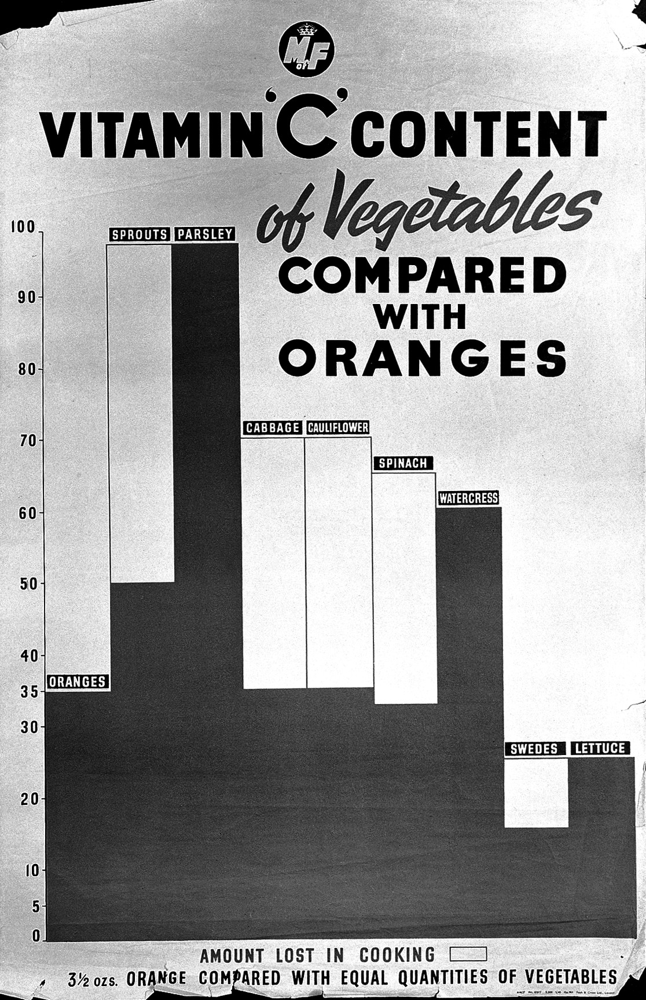
What ascorbate actually does
Vitamin C (ascorbic acid) is a water-soluble vitamin that humans, other primates, guinea pigs, and a few other species must eat because we all carry a broken copy of the gene for L-gulonolactone oxidase, the final enzyme in the synthetic pathway that most mammals still use. Its chemistry is simple — it is a reducing agent, an electron donor — but the consequences are wide.
The best-defined role is in collagen synthesis. The enzymes prolyl hydroxylase and lysyl hydroxylase modify proline and lysine residues in procollagen, and those hydroxyl groups are what allow the triple helix to cross-link and hold tension. Both enzymes need iron in its reduced state, and vitamin C is what keeps it there. Without ascorbate, collagen is made but is structurally weak — which explains almost every sign of scurvy, since collagen is the scaffolding of skin, blood vessel walls, gums, tendon, and bone matrix. Vitamin C is also required for the synthesis of carnitine (which shuttles fatty acids into mitochondria) and of norepinephrine, it acts as a water-phase antioxidant and regenerates oxidized vitamin E, and it markedly enhances absorption of non-heme iron from plant foods by reducing ferric iron to the absorbable ferrous form — a genuinely useful pairing for people relying on beans, lentils, tofu, and fortified grains for iron.
Sources are broader than the citrus stereotype. Per typical serving, sweet peppers, guava, kiwifruit, broccoli, Brussels sprouts, strawberries, papaya, cantaloupe, tomatoes, and potatoes all contribute meaningfully alongside oranges and grapefruit. The adult RDA is 90 mg/day for men and 75 mg/day for women; pregnancy raises it to 85 mg/day and lactation to 120 mg/day, and an additional 35 mg/day is recommended for people who smoke because of higher oxidative turnover. The UL is 2,000 mg/day, above which osmotic diarrhea and gastrointestinal discomfort are common and urinary oxalate rises, which matters for people prone to calcium oxalate kidney stones.
Scurvy, and the first controlled trial
Scurvy is what happens when body ascorbate is depleted, typically after roughly one to three months of near-zero intake. The presentation follows the collagen story exactly: fatigue and irritability first, then perifollicular hemorrhages and distinctive corkscrew-shaped body hairs, swollen bleeding gums with loosening teeth, easy bruising, joint pain and swelling from bleeding into joints, poor wound healing, and the eerie sign of old, long-healed wounds reopening. Anemia is common. In children the growing bone is affected, with painful subperiosteal bleeding. Untreated scurvy was fatal, and repletion reverses it dramatically.
Scurvy is also where clinical nutrition became a science. In 1747, aboard HMS Salisbury, the naval surgeon James Lind took twelve sailors with scurvy, kept their diets otherwise identical, and assigned them in pairs to six different treatments. Only the pair given oranges and lemons recovered. It is one of the first recorded controlled clinical trials, and it worked more than 175 years before the compound responsible was isolated — a reminder that a well-designed comparison can identify a cause long before anyone can explain the mechanism. Scurvy is not merely historical: it still appears today in the context of very restricted eating patterns, severe food insecurity, alcohol use disorder, some psychiatric and neurodevelopmental conditions that narrow food variety, and isolated older adults.
| Feature of scurvy | Underlying mechanism |
|---|---|
| Bleeding, swollen gums; loose teeth | Weak collagen in gingival connective tissue and periodontal ligament |
| Perifollicular hemorrhage; corkscrew hairs | Fragile capillary walls; abnormal keratin and follicle structure |
| Easy bruising, petechiae | Defective collagen in blood vessel basement membrane |
| Poor wound healing; old wounds reopen | New collagen cannot be hydroxylated or cross-linked |
| Joint pain and swelling | Bleeding into joint spaces and periosteum |
| Fatigue; anemia | Impaired carnitine synthesis; blood loss; reduced iron absorption |
- Humans cannot synthesize vitamin C; it is required to hydroxylate proline and lysine in collagen, and for carnitine and norepinephrine synthesis.
- Vitamin C strongly enhances non-heme iron absorption by reducing ferric to ferrous iron.
- RDA 90 mg/day for adult men, 75 mg/day for adult women; +35 mg/day for smokers; UL 2,000 mg/day.
- Scurvy — bleeding gums, perifollicular hemorrhage, poor wound healing — is a collagen failure and still occurs today.
Section 5Vitamins in practice
Bioavailability: what is in the food is not what reaches the cell
Bioavailability is the fraction of an ingested nutrient that is actually absorbed and available for use. A food composition table reports what is in the food; bioavailability determines what you get. Several factors move it. The food matrix matters: carotenoids locked inside intact plant cell walls are poorly released, so chopping, pureeing, and gentle cooking measurably increase carotenoid absorption from carrots and tomatoes — one of the few cases where cooking increases a vitamin's availability rather than decreasing it. Dietary fat matters, as Section 2 covered: A, D, E, and K need it. Chemical form matters: synthetic folic acid is absorbed more completely than natural food folate, which is exactly why intakes are expressed in dietary folate equivalents, and crystalline B12 in fortified foods and supplements does not require stomach acid to release it, which is why fortified sources are more reliable for older adults with reduced acid production. Nutrient interactions matter in both directions: vitamin C boosts non-heme iron uptake, while very high doses of one fat-soluble vitamin can interfere with another.
Losses in storage, prep, and cooking
Vitamins are chemicals, and chemicals degrade. Water-soluble vitamins are lost by two routes — leaching into cooking water and destruction by heat, light, oxygen, or alkaline pH. Vitamin C is the most fragile of all: it is water-soluble, heat-labile, and readily oxidized, so it is often used as the indicator nutrient in cooking studies. Boiling vegetables in a large volume of water and discarding the water causes the largest losses; steaming, microwaving, stir-frying, and roasting retain far more, and any liquid kept and served (as in a soup, stew, or pan sauce) recovers what leached out. Thiamin is destroyed by prolonged heat, by alkaline conditions such as adding baking soda to vegetables or beans, and by sulfite preservatives. Riboflavin is degraded by light. Folate is both heat-sensitive and water-soluble. The fat-soluble vitamins are generally more heat-stable, but they follow the fat — drain the fat and you drain some of the A, D, E, and K with it, and vitamin E is degraded by repeated high-heat frying.
Two practical corrections to common assumptions. First, frozen produce is not nutritionally inferior to fresh. It is typically harvested at peak ripeness and frozen within hours, whereas "fresh" produce may have spent many days in transit and storage losing vitamin C the whole way — frozen often measures equal or higher. Canning involves more heat and more leaching into the packing liquid, though using that liquid recovers some. Second, none of this is a reason to fear cooked food. A cooked vegetable eaten regularly delivers vastly more nutrition than a raw vegetable nobody eats, and cooking improves the availability of carotenoids and the digestibility of many foods. The goal is variety and regularity, not perfection — and no food needs to be described as clean, dirty, or earned.
Supplements: where the evidence is strong, and where it is not
In the United States, dietary supplements are regulated as a category of food rather than as drugs. Manufacturers are responsible for safety and for the truthfulness of their claims, but products are not reviewed or approved for safety or effectiveness before they reach the shelf, and independent testing has repeatedly found products whose contents differ from the label. Voluntary third-party verification programs — USP Verified, NSF Certified for Sport, and similar — test for identity, potency, and contaminants, and a verification mark is a reasonable thing to look for. Note that supplements can interact with medications: high-dose vitamin E with anticoagulants, vitamin K intake variability for someone on warfarin, and high-dose biotin, which interferes with several common laboratory immunoassays (including some troponin and thyroid tests) and can produce misleading results unless the lab is told.
The evidence base is genuinely uneven, and separating its tiers is the most useful thing this section can teach. There are situations where supplementation is strongly supported: folic acid before and during early pregnancy to prevent neural tube defects; vitamin K at birth to prevent hemorrhagic disease of the newborn; vitamin D for exclusively breastfed infants; vitamin B12 from fortified foods or supplements for people eating vegan diets and, commonly, for older adults with reduced gastric acid; vitamin A supplementation for children in populations where deficiency is endemic; and repletion of any diagnosed deficiency. There are also situations where the evidence is preliminary, mixed, or negative: routine multivitamins have not been shown to reduce cardiovascular disease, cancer, or mortality in generally well-nourished adults; large trials of high-dose vitamin E found no cardiovascular benefit; and beta-carotene supplements increased lung cancer incidence in people who smoked or had heavy asbestos exposure, a result replicated in two separate large trials. That last finding is the cautionary tale of the field: an association observed for a food (carotenoid-rich vegetables) did not transfer to an isolated high-dose nutrient, and the isolated nutrient caused harm.
A reasonable summary is that supplements fill gaps; they do not upgrade an already-adequate diet. Whole foods deliver vitamins in the company of fiber, minerals, phytochemicals, and a food matrix that shapes how they are absorbed, and hypervitaminosis from food alone is rare — the notable exception being preformed vitamin A, since liver is concentrated enough that frequent large portions can push intake past the UL. Decisions about whether a specific person needs a specific supplement — and at what amount — belong with a clinician or registered dietitian who knows that person's labs, medications, and circumstances. This chapter describes physiology and evidence; it is general education, not individualized medical or dietary advice.
| Practice | Effect on vitamins | Why |
|---|---|---|
| Boiling and discarding water | Largest losses of vitamin C, thiamin, folate | Water-soluble vitamins leach out and are thrown away |
| Steaming / microwaving | Much better retention | Less contact with water; shorter heating time |
| Adding baking soda to vegetables | Destroys thiamin and vitamin C | Alkaline pH degrades both |
| Chopping and gently cooking carrots, tomatoes | Increases carotenoid availability | Breaks plant cell walls, releasing carotenoids |
| Adding a little oil to a vegetable dish | Improves uptake of A, D, E, K and carotenoids | Fat is required to form absorptive micelles |
| Storing milk in clear glass; produce in bright light | Degrades riboflavin, folate | Both are light-sensitive |
| Freezing at harvest | Retention equal to or better than "fresh" | Vitamin C declines during transport and storage |
| Reusing cooking liquid in soup or sauce | Recovers leached vitamins | The nutrients are in the liquid, not destroyed |
- Bioavailability depends on food matrix, dietary fat, chemical form, and nutrient interactions — not just on what the food table says.
- Water-soluble vitamins are lost by leaching and heat; steaming, microwaving, and using the cooking liquid retain far more than boiling and draining.
- Supplements in the US are not pre-approved for safety or efficacy; third-party verification marks and disclosure to clinicians both matter.
- Strong evidence supports targeted supplementation (periconceptional folic acid, newborn vitamin K, B12 for vegan diets and many older adults); routine multivitamins in well-nourished adults have not shown disease-prevention benefit, and high-dose beta-carotene caused harm in smokers.
The chapter in one breath
- Vitamins are organic micronutrients required in mg or µg amounts; they supply 0 kcal/g, while carbohydrate and protein give 4, fat 9, and alcohol 7 kcal/g.
- Solubility drives everything: fat-soluble A, D, E, K need dietary fat, are stored, and can reach toxicity; water-soluble B and C turn over fast and need regular intake.
- Vitamin A runs night vision and epithelial differentiation — deficiency causes xerophthalmia, and preformed retinol above the 3,000 µg/day UL is teratogenic.
- Vitamin D (RDA 15 µg / 600 IU/day ages 1–70; 20 µg / 800 IU/day over 70) governs calcium absorption; deficiency causes rickets and osteomalacia, and its non-skeletal claims remain unproven.
- Vitamin E is the membrane antioxidant (RDA 15 mg/day); vitamin K carboxylates clotting factors (AI 120 µg/day men, 90 µg/day women) and newborns need a dose at birth.
- The B vitamins are coenzymes: thiamin→beriberi and Wernicke–Korsakoff, niacin→pellagra's four Ds, folate and B12→megaloblastic anemia, with B12 adding irreversible neurologic injury.
- Vitamin C hydroxylates collagen and boosts non-heme iron absorption (RDA 90 mg men, 75 mg women); its absence is scurvy, the subject of Lind's 1747 controlled trial.
- In practice, bioavailability and cooking method change what you actually absorb, and supplement evidence is strong for a few targeted uses and weak or negative for routine high-dose use.
ReferenceWords worth knowing
A quick reference for the terms in this chapter — skim it now, or circle back whenever a word trips you up.
- Adequate Intake (AI)
- A reference intake used when evidence is insufficient to set an RDA; vitamins K, B5, and B7 have AIs.
- Ascorbic acid
- Vitamin C; a water-soluble reducing agent required for collagen hydroxylation, carnitine and norepinephrine synthesis, and non-heme iron absorption.
- Beriberi
- Thiamin (B1) deficiency disease; the "wet" form is cardiac with edema, the "dry" form a peripheral neuropathy.
- Bioavailability
- The proportion of an ingested nutrient that is absorbed and available for the body to use.
- Carotenoid
- A plant pigment; the provitamin A carotenoids (beta-carotene, alpha-carotene, beta-cryptoxanthin) are converted to retinol in the body.
- Coenzyme
- A small non-protein molecule an enzyme requires in order to catalyze its reaction; most B vitamins become coenzymes.
- Dietary folate equivalent (DFE)
- The unit for folate intake, adjusting for the higher absorption of synthetic folic acid relative to naturally occurring food folate.
- Fat-soluble vitamin
- Vitamins A, D, E, and K, which require dietary fat and bile for absorption and are stored in liver and adipose tissue.
- Hypervitaminosis
- Vitamin toxicity from excessive intake, most often involving preformed vitamin A or vitamin D from supplements.
- Intrinsic factor
- A protein secreted by gastric parietal cells that is required for vitamin B12 absorption in the terminal ileum.
- Megaloblastic anemia
- Anemia with abnormally large, immature red cells caused by impaired DNA synthesis, classically from folate or vitamin B12 deficiency.
- Micronutrient
- A vitamin or mineral required in milligram or microgram quantities, supplying no energy.
- Niacin equivalent (NE)
- The unit for niacin intake, accounting for niacin synthesized from tryptophan (about 60 mg tryptophan yields 1 mg niacin).
- Osteomalacia
- Softening of adult bone from vitamin D deficiency, with bone pain and proximal muscle weakness; the adult counterpart of rickets.
- Pellagra
- Niacin (B3) deficiency disease, remembered as dermatitis, diarrhea, dementia, and death.
- Recommended Dietary Allowance (RDA)
- The daily intake estimated to meet the needs of about 97–98% of healthy people in a stated age and sex group.
- Retinol activity equivalent (RAE)
- The unit for vitamin A intake: 1 µg RAE equals 1 µg retinol, 12 µg dietary beta-carotene, or 24 µg other provitamin A carotenoids.
- Rickets
- Vitamin D deficiency in children, causing soft, deforming bone with bowed legs and widened growth plates.
- Scurvy
- Vitamin C deficiency disease: bleeding gums, perifollicular hemorrhage, corkscrew hairs, poor wound healing, and joint pain.
- Tolerable Upper Intake Level (UL)
- The highest chronic daily intake unlikely to cause adverse effects in almost all people; a ceiling, not a target.
- Water-soluble vitamin
- The eight B vitamins and vitamin C; minimally stored, readily excreted, and easily lost into cooking water.
- Xerophthalmia
- Progressive drying and damage of the conjunctiva and cornea from vitamin A deficiency; a leading preventable cause of childhood blindness worldwide.
Check yourself
Minerals & Water
Everything you have studied so far — carbohydrate and protein at 4 kilocalories per gram, fat at 9, alcohol at 7 — burns. Minerals and water do not. They yield zero kilocalories per gram, and yet nothing in the body works without them: no heartbeat, no nerve signal, no bone, no thyroid hormone, no oxygen delivery. Minerals are simple inorganic elements the body cannot make and cannot destroy, so they must arrive in food and leave in urine, sweat, and stool. Water is the medium all of it happens in, and it is the nutrient a person runs out of fastest. This chapter walks through the major minerals, the trace minerals, the special case of iron, and the fluid-and-electrolyte system that keeps blood pressure and cell volume where they belong.
By the end of this chapter you can
- Distinguish major minerals from trace minerals and explain why neither yields energy.
- State the main function, a reference intake with its population and units, and the deficiency or toxicity picture for calcium, phosphorus, magnesium, sodium, potassium, and chloride.
- Do the same for the trace minerals iron, zinc, iodine, selenium, and fluoride.
- Explain bioavailability and name specific dietary enhancers and inhibitors of mineral absorption.
- Contrast heme and nonheme iron, describe how absorption is regulated, and sequence the stages from depleted stores to iron-deficiency anemia.
- Describe the functions of body water, account for daily fluid balance, and cite the Adequate Intake for total water by sex.
- Explain how the sodium–potassium pump, osmosis, and hormones distribute fluid between compartments.
- Summarize what the evidence does and does not support about sodium, potassium, and blood pressure, separating strong findings from preliminary ones.
Section 1Major minerals
What a mineral is, and what it is not
A mineral is a single inorganic element — calcium, iron, zinc — that the body needs but cannot synthesize. This makes minerals fundamentally different from the vitamins in the previous chapter. A vitamin is a complex organic molecule that heat, light, oxygen, or long storage can destroy. A mineral is an element: you cannot break calcium down into something that is not calcium. Minerals survive cooking, survive the oven, and survive being burned to ash. What they can do is dissolve, which is why boiling vegetables and pouring off the water leaches potassium and magnesium down the drain.
Because minerals are not oxidized for fuel, they supply 0 kcal per gram. Their value is structural and regulatory: they build the crystal lattice of bone, carry electrical charge across membranes, sit at the active site of enzymes, and hold the osmotic pressure that decides where water goes.
Nutritionists split minerals by how much the body needs, not by how important they are. A major mineral (or macromineral) is one required in amounts greater than 100 mg per day, or present in the body in amounts above about 5 grams. A trace mineral is required in smaller amounts — often milligrams or micrograms. A trace mineral is not a minor mineral: iodine deficiency is measured in micrograms and causes goiter and impaired brain development.
The structural three: calcium, phosphorus, magnesium
Calcium is the most abundant mineral in the body, and roughly 99 percent of it is locked into bone and teeth as hydroxyapatite. The remaining one percent, circulating in blood and inside cells, does the exciting work: muscle contraction, nerve transmission, hormone secretion, and blood clotting. The RDA is 1,000 mg per day for adults 19–50, rising to 1,200 mg per day for women 51 and older and men 71 and older, and it is highest of all in adolescence — 1,300 mg per day for ages 9–18, when the skeleton is being built. Pregnancy in adults does not raise the requirement (still 1,000 mg for ages 19–50), because absorption efficiency increases instead; pregnant and lactating teenagers stay at 1,300 mg. The Tolerable Upper Intake Level is 2,500 mg per day for adults 19–50 and 2,000 mg for adults 51 and older.
Phosphorus partners with calcium in bone, but it is also in every ATP molecule, every phospholipid membrane, and the backbone of DNA and RNA. The RDA is 700 mg per day for adults and 1,250 mg per day for ages 9–18. Dietary deficiency is rare because phosphorus is abundant in protein-containing foods and in phosphate additives; the clinical problem is more often the opposite, when failing kidneys cannot clear phosphate.
Magnesium is a cofactor for more than 300 enzymes, including every reaction that uses ATP — ATP is biologically active as an Mg-ATP complex. About half of body magnesium is in bone. The RDA differs by sex and shifts at age 31: 400 mg per day for men 19–30 and 420 mg for men 31 and older; 310 mg for women 19–30 and 320 mg for women 31 and older, with roughly 40 mg more in pregnancy. Note a quirk: the UL of 350 mg per day applies only to supplemental magnesium, not to magnesium from food, because it is set by the laxative effect of magnesium salts rather than by any harm from food.
The salts of body fluid: sodium, potassium, chloride
These three are the body's principal electrolytes — minerals that dissociate into charged ions in solution and thereby conduct electricity, hold water in place, and maintain acid–base balance. Sodium and chloride dominate the fluid outside cells; potassium dominates the fluid inside them. Because these ions determine osmotic pressure, they determine blood volume, and therefore blood pressure. Section 5 takes that story further.
Their reference values are set as Adequate Intakes rather than RDAs, because the evidence was not strong enough to define an average requirement. For adults, sodium AI is 1,500 mg per day, chloride AI is 2,300 mg per day for ages 19–50 (falling to 2,000 mg at 51–70 and 1,800 mg at 71 and older), and potassium AI is 3,400 mg per day for men 19 and older and 2,600 mg per day for women 19 and older, with 2,900 mg in pregnancy. In its 2019 review, the National Academies replaced the sodium UL with a Chronic Disease Risk Reduction Intake of 2,300 mg per day — a threshold above which reducing intake is expected to reduce chronic disease risk. Average intake in the United States runs near 3,400 mg per day.
| Mineral | Adult reference intake | Main jobs | Food contributors | Deficiency / excess |
|---|---|---|---|---|
| Calcium | RDA 1,000 mg/d (19–50); 1,200 mg/d (women 51+, men 71+); 1,300 mg/d (9–18) | Bone mineral; muscle contraction; nerve signaling; clotting | Dairy, fortified plant beverages, tofu set with calcium, kale, bok choy, canned fish with bones | Low intake over years → reduced peak bone mass, osteoporosis risk; very high supplemental intake → hypercalcemia, kidney stones in susceptible people |
| Phosphorus | RDA 700 mg/d | Bone; ATP; phospholipids; DNA/RNA; buffer | Protein foods, dairy, legumes, whole grains, phosphate additives | Dietary deficiency rare; excess is a problem chiefly in kidney disease |
| Magnesium | RDA 400/420 mg/d men (19–30 / 31+); 310/320 mg/d women | Cofactor for 300+ enzymes; Mg-ATP; nerve and muscle function | Nuts, seeds, legumes, whole grains, leafy greens, some mineral waters | Severe deficiency → neuromuscular irritability, tremor, arrhythmia, resistant hypokalemia and hypocalcemia; supplemental excess → diarrhea |
| Sodium | AI 1,500 mg/d; CDRR 2,300 mg/d | Main extracellular cation; fluid volume; nerve impulse; nutrient co-transport | Packaged and restaurant foods, breads, cured meats, cheese, table salt | Dietary deficiency essentially unknown; hyponatremia arises from losses or excess water; high intake raises blood pressure in salt-sensitive people |
| Potassium | AI 3,400 mg/d men; 2,600 mg/d women | Main intracellular cation; membrane potential; cardiac rhythm | Potatoes, beans, lentils, bananas, oranges, tomatoes, yogurt, leafy greens, fish | Hypokalemia usually from vomiting, diarrhea, or diuretics → weakness, arrhythmia; hyperkalemia is a risk in kidney disease |
| Chloride | AI 2,300 mg/d (19–50) | Extracellular anion; gastric hydrochloric acid; acid–base balance | Table salt and salted foods (accompanies sodium) | Heavy vomiting → hypochloremic metabolic alkalosis |
- Minerals are inorganic elements that supply 0 kcal/g; they are indestructible by heat but can leach into cooking water.
- Major minerals are needed in amounts above 100 mg/day: calcium, phosphorus, magnesium, sodium, potassium, chloride (plus sulfur).
- Calcium RDA is 1,000 mg/d for adults 19–50, 1,200 mg/d for women 51+ and men 71+, and 1,300 mg/d for ages 9–18.
- Sodium, potassium, and chloride carry Adequate Intakes, not RDAs; sodium also carries a CDRR of 2,300 mg/d.
Section 2Trace minerals
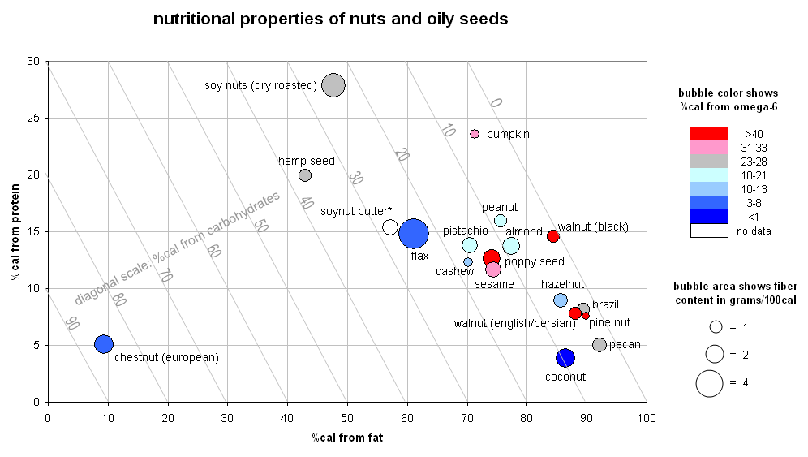
Small amounts, large consequences
Trace minerals are needed in milligram or microgram quantities, and the total amount of some of them in an adult body would not cover a fingernail. Their smallness is deceptive. Most trace minerals work as the functional core of a protein: iron sits in the heme group of hemoglobin, zinc holds the shape of hundreds of transcription factors, iodine is built directly into thyroid hormone, and selenium is incorporated as the amino acid selenocysteine into glutathione peroxidase and the enzymes that activate thyroid hormone. Remove a few micrograms and an entire hormone axis stalls.
Because the working range is narrow, trace minerals are also the group where the gap between "not enough" and "too much" is smallest. Selenium is the classic example: the RDA is 55 mcg per day for adults, and the UL is 400 mcg per day — barely seven-fold. Some vitamins have a far wider margin (vitamin E, RDA 15 mg against a UL of 1,000 mg), though others are tight as well (niacin, folate), so the rule is not absolute — the point is that for most trace minerals there is very little room above the requirement.
Five worth knowing well
Iron carries oxygen in hemoglobin and myoglobin and drives electron transport. Its RDA is strongly sex- and life-stage-dependent: 8 mg per day for men 19 and older, 18 mg per day for women 19–50, 8 mg per day for women 51 and older, and 27 mg per day in pregnancy. Section 3 is devoted to it.
Zinc participates in more than 300 enzymes and in the zinc-finger motifs that let transcription factors grip DNA. The RDA is 11 mg per day for men and 8 mg per day for women, rising to 11 mg in pregnancy and 12 mg during lactation; the UL is 40 mg per day. Deficiency shows up as growth faltering in children, delayed wound healing, impaired immune response, loss of taste sensitivity, hair loss, and a characteristic rash. Chronic high-dose supplementation causes a copper deficiency, because zinc induces the intestinal protein that traps copper.
Iodine exists for one purpose: thyroid hormone. The RDA is 150 mcg per day for adults, 220 mcg per day in pregnancy, and 290 mcg per day during lactation, with a UL of 1,100 mcg per day for adults. Deficiency enlarges the thyroid into a goiter and causes hypothyroidism; deficiency during pregnancy impairs fetal brain development and has historically been the leading preventable cause of intellectual disability worldwide. Excess iodine can also disturb thyroid function, so the dose–response curve is U-shaped.
Selenium defends cells against oxidative damage through glutathione peroxidase and activates thyroid hormone through the deiodinases. RDA is 55 mcg per day for adults (60 mcg in pregnancy, 70 mcg during lactation), UL 400 mcg per day. Deficiency is regional and tied to selenium-poor soils; in parts of China it produced Keshan disease, a cardiomyopathy. Toxicity, called selenosis, produces brittle nails, hair loss, garlic-smelling breath, and gastrointestinal upset.
Fluoride is the outlier: it is not required for life, but it measurably strengthens tooth enamel against acid demineralization. The AI is 4 mg per day for men 19 and older and 3 mg per day for women, with a UL of 10 mg per day for adults. The evidence that fluoride reduces dental caries is strong and long-standing. Too much during the years when permanent teeth are forming produces dental fluorosis — white flecking to brown mottling of enamel — which is why fluoride intake in young children is watched closely.
Bioavailability: the label number is not the absorbed number
Bioavailability is the fraction of an ingested nutrient that is actually absorbed and usable. For minerals it can swing enormously depending on what else is on the plate. Phytate (phytic acid) in whole grains, legumes, nuts, and seeds binds zinc, iron, calcium, and magnesium; oxalate in spinach, rhubarb, and beet greens binds calcium so tightly that spinach is a poor calcium source despite a high calcium number on paper. Working the other way, vitamin C sharply increases nonheme iron absorption, and soaking, sprouting, fermenting, and leavening with yeast all reduce phytate and raise mineral availability — which is a large part of why traditional food preparation methods around the world involve exactly those steps.
Minerals also compete. Large supplemental doses of one divalent mineral can crowd out another at shared intestinal transporters — zinc against copper, calcium against iron, iron against zinc. This competition is a supplement-dose phenomenon; it is not something that ordinary mixed meals produce.
| Trace mineral | Adult reference intake | Adult UL | Key role | Deficiency | Excess |
|---|---|---|---|---|---|
| Iron | RDA 8 mg/d men; 18 mg/d women 19–50; 8 mg/d women 51+; 27 mg/d pregnancy | 45 mg/d | Hemoglobin, myoglobin, electron transport | Depleted stores → iron-deficiency anemia (microcytic, hypochromic) | Hereditary hemochromatosis; acute overdose is a leading poisoning of young children |
| Zinc | RDA 11 mg/d men; 8 mg/d women; 11 mg/d pregnancy | 40 mg/d | 300+ enzymes; zinc-finger transcription factors; immune function | Growth faltering, poor wound healing, impaired immunity, taste loss, rash | Nausea; induced copper deficiency with chronic high doses |
| Iodine | RDA 150 mcg/d adults; 220 mcg/d pregnancy; 290 mcg/d lactation | 1,100 mcg/d | Thyroid hormone synthesis | Goiter, hypothyroidism; impaired fetal neurodevelopment | Thyroid dysfunction — the curve is U-shaped |
| Selenium | RDA 55 mcg/d adults; 60 mcg/d pregnancy; 70 mcg/d lactation | 400 mcg/d | Glutathione peroxidase; thyroid hormone activation | Keshan cardiomyopathy in selenium-poor regions | Selenosis: brittle nails, hair loss, garlic breath |
| Fluoride | AI 4 mg/d men; 3 mg/d women | 10 mg/d | Strengthens enamel against demineralization | More dental caries | Dental fluorosis during tooth formation; skeletal fluorosis at very high chronic intakes |
- Trace minerals are needed in mg or mcg amounts and usually act inside a specific protein — heme, a zinc finger, thyroid hormone, selenocysteine.
- The gap between deficiency and toxicity is narrow: selenium RDA 55 mcg/d versus UL 400 mcg/d.
- Iodine deficiency causes goiter and, in pregnancy, impaired fetal brain development; needs rise to 220 mcg/d in pregnancy.
- Bioavailability is modified by phytate, oxalate, vitamin C, food preparation, and competition between minerals at shared transporters.
Section 3Iron and anemia
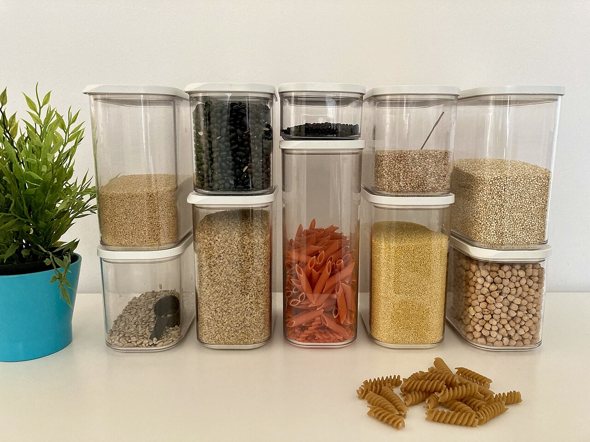
Two forms of dietary iron
Iron arrives in food in two chemically distinct forms, and they behave so differently that they are absorbed by separate pathways. Heme iron is iron already held inside a porphyrin ring, released from the hemoglobin and myoglobin of meat, poultry, and fish. It is taken up intact by the intestinal cell and absorbed at roughly 15 to 35 percent — efficiently, and largely indifferent to whatever else is in the meal. Nonheme iron is free ionic iron, and it is what you get from plants, eggs, dairy, and enriched or fortified grains. Its absorption ranges from about 2 to 20 percent and is exquisitely sensitive to the rest of the meal.
Most dietary iron in most diets is nonheme, even in people who eat meat. That is why the modifiers matter so much. Vitamin C reduces ferric iron to the absorbable ferrous form and holds it in solution; a citrus fruit, tomatoes, or peppers eaten with a bean dish can multiply the iron absorbed from it. A separate, still incompletely characterized enhancer in meat, poultry, and fish — historically called the MFP factor — increases nonheme absorption from the same meal. Pulling the other direction are phytates in whole grains and legumes, polyphenols and tannins in tea and coffee, calcium in large supplemental doses, and oxalates. Because the DRI committee accounted for this, the iron requirement for people eating no meat, poultry, or fish is estimated at roughly 1.8 times the standard RDA.
Absorption is the control valve
Here is the fact that organizes all of iron physiology: the body has no regulated route for excreting iron. Small amounts are lost in shed skin and gut cells, in menstrual blood, and in any bleeding, but there is no hormone that tells the kidney to dump excess iron. Iron balance is therefore controlled almost entirely at the point of absorption.
The gatekeeper is a liver hormone called hepcidin. When body iron is plentiful — or when inflammation is present — hepcidin rises, binds the export protein ferroportin on intestinal and macrophage membranes, and degrades it, so absorbed iron stays trapped in the mucosal cell and is shed when that cell sloughs off. When iron is scarce, hepcidin falls, ferroportin persists, and more iron enters the blood, where transferrin carries it to the marrow. Storage is as ferritin, mostly in liver, spleen, and marrow.
The same logic explains two clinical realities. First, iron supplements taken in large doses are poorly and increasingly inefficiently absorbed, because a big dose transiently drives hepcidin up. Second, in chronic inflammatory disease, hepcidin stays high and iron is locked away in storage even though the marrow needs it — the anemia of inflammation, which is a different problem from dietary iron deficiency and is not fixed the same way.
From depleted stores to anemia
Iron deficiency is not an on/off state. It develops in stages, and anemia is the last one, which means a person can be meaningfully iron-depleted with a completely normal hemoglobin.
| Stage | What is happening | What changes in the labs | Symptoms |
|---|---|---|---|
| 1. Depleted stores | Ferritin stores are being drawn down | Serum ferritin falls; hemoglobin still normal | Usually none |
| 2. Early functional deficiency | Transport iron drops; the marrow starts to run short | Transferrin saturation falls, total iron-binding capacity rises, erythrocyte protoporphyrin rises | Fatigue may begin |
| 3. Iron-deficiency anemia | Red cells are made small and pale for lack of iron | Hemoglobin and hematocrit fall; MCV below about 80 fL (microcytic), hypochromic | Fatigue, pallor, breathlessness on exertion, cold intolerance, sometimes pica |
The groups at greatest risk follow directly from the physiology: menstruating people, pregnancy (RDA 27 mg per day), infants and toddlers, adolescents in a growth spurt, frequent blood donors, people with gastrointestinal blood loss, and people eating no meat, poultry, or fish. Iron deficiency remains the most common single nutrient deficiency worldwide.
| Enhances nonheme iron absorption | Inhibits nonheme iron absorption |
|---|---|
| Vitamin C in the same meal | Phytates in whole grains, legumes, nuts, seeds |
| MFP factor from meat, poultry, fish | Polyphenols and tannins in tea, coffee, some herbs |
| Low body iron stores (low hepcidin) | High-dose calcium supplements taken with the meal |
| Acid gastric environment | Oxalates; high-dose zinc supplements; high hepcidin from inflammation |
- Heme iron (meat, poultry, fish) absorbs at about 15–35 percent; nonheme iron at about 2–20 percent and is heavily modified by the meal.
- The body cannot regulate iron excretion, so absorption is the control point, governed by hepcidin and ferroportin.
- Deficiency progresses: depleted stores (low ferritin) → early functional deficiency → microcytic, hypochromic anemia.
- Iron RDA is 18 mg/d for women 19–50, 8 mg/d for men and for women 51+, and 27 mg/d in pregnancy; the adult UL is 45 mg/d.
Section 4Water

What water does
Water is the nutrient the body needs in the largest quantity and can survive without for the shortest time — days, against weeks without food. It makes up roughly 50 to 70 percent of body weight, and the variation is mostly a matter of tissue composition rather than anything else: lean tissue is about 73 percent water while adipose tissue holds much less, so people with more lean mass have a higher percentage. Infants are the wettest, near 70–75 percent, and the proportion declines gradually across the lifespan, which is one reason dehydration is a more serious threat at the two ends of life.
Its jobs are so basic they are easy to overlook. Water is the universal solvent in which nearly every metabolic reaction occurs, and it is a direct participant: every hydrolysis reaction in digestion consumes a water molecule. It is the transport medium — blood plasma, lymph, urine. It regulates temperature, because water has an unusually high heat capacity and heat of vaporization, so evaporating a modest volume of sweat sheds a large amount of heat. It lubricates and cushions as synovial fluid, cerebrospinal fluid, mucus, tears, and amniotic fluid. And because it carries the electrolytes, it maintains blood volume and therefore blood pressure.
Body water is divided into two compartments. Roughly two-thirds is intracellular fluid (ICF), inside cells, and one-third is extracellular fluid (ECF) — the interstitial fluid between cells plus the plasma inside vessels. Water moves freely between them by osmosis, following whichever side has the higher concentration of dissolved particles. Nothing pumps water; water always follows solute.
Where it comes in, where it goes out
Intake has three sources. Beverages of all kinds supply roughly 80 percent of total water intake, and this includes coffee and tea — the mild diuretic effect of caffeine at ordinary intakes does not outweigh the fluid the drink itself provides. Food supplies most of the remainder, since fruits and vegetables can be 85–95 percent water and even bread is about a third water. A small final contribution is metabolic water, roughly 250–350 mL per day, produced as a byproduct when carbohydrate, fat, and protein are oxidized.
Output has four routes. Urine is the only one that is finely regulated, and the kidney must produce a minimum of roughly 500 mL per day — the obligatory water loss — simply to carry out the day's urea, sodium, and other solutes. Insensible losses through skin and exhaled air run near 700–1,000 mL per day and continue whether you notice them or not. Sweat is small at rest and enormous during heat and exertion, sometimes exceeding a liter per hour. Feces account for only 100–200 mL in health, but that figure rises dramatically in diarrheal illness, which is why diarrhea is a leading cause of dehydration deaths in young children worldwide.
Two hormone systems keep the ledger balanced. Osmoreceptors in the hypothalamus sense rising blood concentration and trigger thirst plus release of antidiuretic hormone (ADH, vasopressin), which tells the kidney to reabsorb water. Falling blood volume or pressure activates the renin–angiotensin–aldosterone system, and aldosterone makes the kidney retain sodium — water follows the sodium osmotically.
How much? The honest answer
The Adequate Intake for total water — from beverages plus food combined — is 3.7 L per day for men 19 and older and 2.7 L per day for women 19 and older. About 3.0 L and 2.2 L of those respective totals come from beverages, with food supplying the balance. In pregnancy the total-water AI is 3.0 L per day, and during lactation it is 3.8 L per day.
Two cautions about those numbers. First, they are population Adequate Intakes drawn from what generally healthy people consume; they are not a target every individual must hit. Real requirements swing widely with air temperature, humidity, altitude, physical activity, fever, illness, and body size. Second, the familiar "eight glasses a day" rule is not a DRI and has no clear origin in the evidence; eight 8-ounce glasses is about 1.9 L, which is in the right neighborhood for beverages for some women and low for many men, and it ignores food entirely. For most healthy adults, thirst plus drinking with meals tracks needs well. The important exception is older adults, in whom the thirst response is genuinely blunted, so thirst becomes a less reliable signal.
| Water in (typical adult, mL/day) | Amount | Water out | Amount |
|---|---|---|---|
| Beverages | ~1,500–2,500 | Urine (regulated; minimum ~500) | ~1,000–2,000 |
| Food | ~700–1,000 | Insensible: skin and lungs | ~700–1,000 |
| Metabolic water from oxidation | ~250–350 | Sweat (at rest) | ~100–500; heat or exertion can add >1,000 per hour |
| — | — | Feces (much higher in diarrhea) | ~100–200 |
- Water is 50–70 percent of body weight, about two-thirds intracellular and one-third extracellular; water moves by osmosis, following solute.
- Functions: solvent and reactant, transport, temperature regulation, lubrication and cushioning, blood volume.
- The total-water AI is 3.7 L/day for men and 2.7 L/day for women (3.0 L in pregnancy, 3.8 L in lactation), including water from food.
- Thirst and ADH defend concentration; aldosterone defends volume. Thirst is blunted in older adults.
Section 5Electrolytes and fluid balance
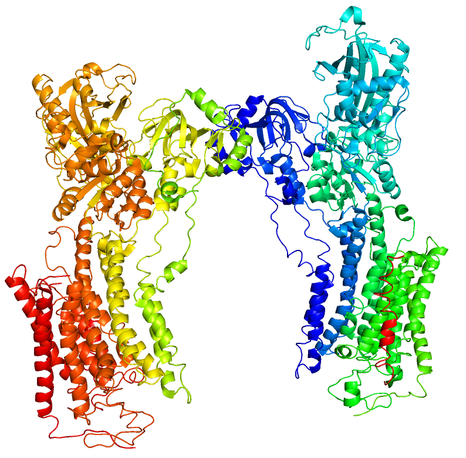
Ions, compartments, and the pump that keeps them apart
An electrolyte is a mineral salt that dissociates into ions in water. Sodium (Na+) and chloride (Cl−) are the dominant ions of extracellular fluid; potassium (K+), magnesium, and phosphate dominate inside the cell. Plasma sodium is normally about 135–145 mEq/L and plasma potassium about 3.5–5.0 mEq/L — and notice how narrow that potassium window is, which is exactly why potassium disturbances threaten the heart.
That separation is not passive; it is bought with energy. The sodium–potassium pump (Na+/K+-ATPase) in every cell membrane exports three sodium ions and imports two potassium ions per molecule of ATP. Running this pump consumes a substantial share of resting energy expenditure — estimates vary by tissue and by method, but it is a continuous, non-negotiable cost. The payoff is the membrane potential that makes nerve impulses and muscle contraction possible, and the sodium gradient that powers the intestinal co-transporters for glucose and amino acids — which, incidentally, is the physiological principle behind oral rehydration solution containing both salt and sugar.
Because water follows solute by osmosis, the distribution of these ions decides the distribution of fluid. Retain sodium and the extracellular compartment expands; lose sodium and it shrinks. This is the mechanical link from a mineral to a vital sign.
Sodium, potassium, and blood pressure
This is one of the most heavily studied questions in nutrition, so it is worth separating what is well established from what is still being worked out.
Strong evidence. Reducing sodium intake lowers blood pressure on average. This comes from many randomized controlled feeding trials, pooled in multiple meta-analyses, and the effect is consistent. The magnitude is modest at the individual level and larger in specific groups: people who already have hypertension, older adults, and Black adults tend to show bigger reductions — a trait called salt sensitivity. The DASH–Sodium trial demonstrated that lowering sodium and following an eating pattern rich in fruits, vegetables, and low-fat dairy each lowered blood pressure, and that the two effects added together.
Moderate evidence. Higher potassium intake also lowers blood pressure in randomized trials, but the base here is thinner than for sodium and is usually graded moderate rather than strong: the effect is clearest in adults who already have hypertension and whose sodium intake is high, and is small or inconsistent in adults with normal blood pressure. Tellingly, when the National Academies reviewed potassium in 2019 they judged the chronic-disease evidence insufficient to set a CDRR — unlike sodium, which did receive one. The direction of effect is nonetheless consistent with the idea that the two ions act on the same system from opposite directions.
Preliminary evidence. Whether lowering sodium reduces heart attacks and strokes — not just blood pressure — rests on a thinner base, because the trials required are long and expensive. Long-term follow-up of the Trials of Hypertension Prevention found fewer cardiovascular events in the sodium-reduction groups, and a large trial of potassium-enriched salt substitute in rural China reported fewer strokes and deaths. Those are encouraging, but they are a small number of trials in specific populations, and generalizing them to everyone would be overstating the case. Observational work suggesting that the sodium-to-potassium ratio predicts risk better than either ion alone is similarly plausible but not proven, since observational data cannot separate the ratio from everything else that accompanies a potassium-rich diet.
What is genuinely uncertain. Whether very low sodium intakes carry risk of their own is still argued, and the studies on both sides have measurement problems — estimating a person's habitual sodium intake accurately is notoriously hard. Honest teaching says so.
Where the sodium actually comes from
Roughly 70 percent of sodium in the United States food supply is already in packaged, processed, and restaurant foods before anyone reaches for a salt shaker — in bread, cured meats, cheese, soups, sauces, and savory snacks. Table salt added at home and at the table is a minority contributor. One teaspoon of table salt contains about 2,300 mg of sodium, since salt is roughly 40 percent sodium by weight, which is why food labels list sodium and not salt.
That distribution matters for how the topic should be framed. Sodium intake is largely a property of the food supply rather than a personal failing, and reformulation by manufacturers moves population intake far more than individual vigilance does. Salt is also not a villain: it is the vehicle for iodine in iodized salt, it makes food palatable, and food that people do not want to eat has no nutritional value at all. The useful skill is reading a Nutrition Facts label and knowing roughly where a day's total lands — not anxiety about any single meal.
| Ion | Where it dominates | Typical plasma range | Reference intake (adults) | Relationship to blood pressure |
|---|---|---|---|---|
| Sodium | Extracellular fluid | 135–145 mEq/L | AI 1,500 mg/d; CDRR 2,300 mg/d | Higher intake raises blood pressure on average; effect largest in salt-sensitive groups (strong evidence) |
| Potassium | Intracellular fluid | 3.5–5.0 mEq/L | AI 3,400 mg/d men; 2,600 mg/d women | Higher intake lowers blood pressure, most in those with hypertension and high sodium intake (moderate evidence — smaller trial base than sodium) |
| Chloride | Extracellular fluid | 98–107 mEq/L | AI 2,300 mg/d (19–50) | Accompanies sodium; sodium chloride raises pressure more than sodium with other anions |
| Na/K ratio | — | — | No DRI set | Lower ratio associated with lower risk (observational — preliminary) |
- Sodium and chloride rule the extracellular fluid; potassium rules the intracellular fluid, a separation maintained by the Na+/K+-ATPase (3 Na out, 2 K in, per ATP).
- Water follows solute osmotically, so sodium balance sets extracellular volume and therefore blood pressure.
- Strong evidence: lowering sodium lowers blood pressure. Moderate evidence: raising potassium lowers it too, mainly in people with hypertension. Weaker evidence: the size of the resulting reduction in cardiovascular events.
- About 70 percent of dietary sodium comes from packaged and restaurant foods; 1 teaspoon of salt is about 2,300 mg sodium.
The chapter in one breath
- Minerals are inorganic elements that supply 0 kcal/g (versus carbohydrate and protein at 4, fat at 9, alcohol at 7) yet are required for structure, signaling, and enzyme function.
- Major minerals — calcium, phosphorus, magnesium, sodium, potassium, chloride — are needed above 100 mg/day; calcium RDA is 1,000 mg/d for adults 19–50, 1,200 mg/d for women 51+ and men 71+, and 1,300 mg/d for ages 9–18.
- Trace minerals work in mcg-to-mg amounts inside specific proteins, and their deficiency-to-toxicity window is narrow — selenium RDA 55 mcg/d against a UL of 400 mcg/d.
- Bioavailability is the real variable: phytate, oxalate, tannins, and mineral–mineral competition reduce absorption; vitamin C, MFP factor, and soaking, sprouting, or fermenting increase it.
- Iron comes as well-absorbed heme (15–35 percent) and meal-sensitive nonheme (2–20 percent); because iron excretion is unregulated, hepcidin controls balance at absorption.
- Iron deficiency runs depleted stores → early functional deficiency → microcytic, hypochromic anemia, so a normal hemoglobin does not rule out depletion — and not every anemia is iron.
- Water is 50–70 percent of body weight and serves as solvent, transport, coolant, cushion, and reactant; total-water AI is 3.7 L/day for men and 2.7 L/day for women, including food.
- Electrolytes set fluid distribution: lowering sodium lowers blood pressure (strong evidence), raising potassium does too but on a smaller trial base and mainly in people with hypertension (moderate evidence), while the effect of either on cardiovascular events rests on fewer trials still (weaker evidence).
ReferenceWords worth knowing
A quick reference for the terms in this chapter — skim it now, or circle back whenever a word trips you up.
- Adequate Intake (AI)
- A reference intake used when evidence is insufficient to set an RDA; based on observed intakes of apparently healthy groups. Sodium, potassium, chloride, fluoride, and water all use AIs.
- Bioavailability
- The proportion of an ingested nutrient that is actually absorbed and available for use — for minerals, heavily modified by the rest of the meal.
- Chronic Disease Risk Reduction Intake (CDRR)
- A reference value introduced in 2019 for sodium (2,300 mg/day for adults), marking an intake above which reduction is expected to lower chronic disease risk.
- Dental fluorosis
- White flecking to brown mottling of tooth enamel caused by excess fluoride during the years permanent teeth are forming.
- Electrolyte
- A mineral salt that dissociates into charged ions in solution, conducting electricity and governing fluid distribution; chiefly sodium, potassium, and chloride.
- Extracellular fluid (ECF)
- Body water outside cells — interstitial fluid plus blood plasma; about one-third of total body water, dominated by sodium and chloride.
- Ferritin
- The storage form of iron and the usual laboratory marker of iron stores; also an acute-phase reactant, so inflammation can falsely raise it.
- Goiter
- Enlargement of the thyroid gland, classically from iodine deficiency as the gland strains to make hormone without its raw material.
- Heme iron
- Iron bound within a porphyrin ring, found in meat, poultry, and fish; absorbed at roughly 15–35 percent and largely unaffected by other meal components.
- Hepcidin
- A liver hormone that controls iron absorption by degrading ferroportin; it rises with high iron stores and with inflammation, shutting the gate.
- Hyponatremia
- Blood sodium below the normal range, from sodium loss or from excess water; symptoms range from headache and nausea to confusion and seizures.
- Insensible water loss
- Unnoticed daily water loss through the skin and exhaled air, roughly 700–1,000 mL per day in an adult at rest.
- Intracellular fluid (ICF)
- Body water inside cells; about two-thirds of total body water, dominated by potassium, magnesium, and phosphate.
- Iron-deficiency anemia
- The final stage of iron depletion, in which hemoglobin falls and red cells are microcytic (MCV below about 80 fL) and hypochromic.
- Major mineral (macromineral)
- A mineral required in amounts greater than 100 mg per day: calcium, phosphorus, magnesium, sodium, potassium, chloride, sulfur.
- Metabolic water
- Water generated as a byproduct of oxidizing carbohydrate, fat, and protein — roughly 250–350 mL per day.
- Nonheme iron
- Free ionic iron from plants, eggs, dairy, and fortified grains; absorbed at roughly 2–20 percent and strongly modified by enhancers and inhibitors.
- Phytate (phytic acid)
- A phosphorus storage compound in whole grains, legumes, nuts, and seeds that binds zinc, iron, calcium, and magnesium and lowers their absorption.
- Salt sensitivity
- The tendency for blood pressure to change appreciably with sodium intake; more common with existing hypertension, older age, and among Black adults.
- Sodium–potassium pump
- The Na+/K+-ATPase, which moves three sodium ions out and two potassium ions into the cell per ATP, maintaining the membrane potential.
- Tolerable Upper Intake Level (UL)
- The highest daily intake unlikely to cause harm in almost all people; exceeding it raises risk of toxicity, as with selenium above 400 mcg/day.
- Trace mineral
- A mineral required in amounts below 100 mg per day, including iron, zinc, iodine, selenium, copper, manganese, fluoride, chromium, and molybdenum.
Check yourself
Energy Balance & Weight
Every day your body runs an account. Food and drink deposit energy; breathing, thinking, digesting, fidgeting, and moving withdraw it. Over years, the running balance of that account shows up as body weight — but the ledger is nothing like a bank statement, because the two sides talk to each other constantly, and the body actively defends the balance it has settled on. This chapter walks through where food energy comes from, where it goes, how body composition is measured and mismeasured, why hunger and satiety are hormonally orchestrated rather than willed, and what the evidence actually shows about managing weight. Along the way, one rule holds: physiology is described, never moralized. No food is a sin, and no body is a verdict.
By the end of this chapter you can
- State the energy yield of carbohydrate, protein, fat, and alcohol and use it to estimate the energy in a food.
- Define energy balance and explain why the two sides of the equation are not independent.
- Break total energy expenditure into basal metabolism, the thermic effect of food, and activity, and rank them by size and by variability.
- Calculate and interpret BMI and waist circumference, and name at least four situations in which BMI misleads.
- Distinguish body weight from body composition and compare the common assessment methods.
- Describe how leptin, ghrelin, and gut satiety peptides signal to the hypothalamus, and explain why the body defends weight loss more strongly than weight gain.
- Summarize the behaviors with the strongest evidence for weight management, and distinguish them from preliminary or single-study claims.
- Explain the physiological and behavioral reasons fad diets reliably fail, without blaming the person following them.
Section 1Energy balance — intake versus expenditure

What a calorie actually is
A calorie in nutrition is really a kilocalorie (kcal) — the energy needed to raise one kilogram of water by one degree Celsius. When a food label in the United States says "Calories 230," it means 230 kilocalories. Much of the world uses kilojoules instead; the conversion is fixed: 1 kcal = 4.184 kJ. So a 230 kcal snack is about 962 kJ, and the same food is described two different ways on two different labels without any disagreement about the physics.
Only four things in the diet supply energy, and their yields are worth memorizing cold, because nearly every calculation in this chapter rests on them. These are the Atwater factors — average physiological fuel values, already discounted for the fraction of each nutrient the body fails to digest or absorb.
| Energy source | Yield | In kilojoules | Notes |
|---|---|---|---|
| Carbohydrate | 4 kcal/g | 17 kJ/g | Includes sugars and starch; the body's default fuel |
| Protein | 4 kcal/g | 17 kJ/g | Usable for energy, but that is not its primary job |
| Fat | 9 kcal/g | 37 kJ/g | Most energy-dense — more than twice carbohydrate or protein |
| Alcohol | 7 kcal/g | 29 kJ/g | Supplies energy but essentially no nutrients |
| Dietary fiber | ~2 kcal/g | ~8 kJ/g | Partly fermented by colonic bacteria into absorbable short-chain fatty acids |
| Water, vitamins, minerals | 0 | 0 | Essential, but they yield no energy themselves |
Put those numbers to work. A food with 20 g carbohydrate, 5 g protein, and 10 g fat supplies (20 × 4) + (5 × 4) + (10 × 9) = 80 + 20 + 90 = 190 kcal, and 47 percent of that energy comes from fat. This is exactly the arithmetic behind every "percent of calories from…" statement you will ever read.
The balance equation, and why it is not a bank account
Energy balance is the relationship between energy consumed and energy expended over time. Three states are possible. In energy equilibrium, intake equals expenditure and body energy stores are stable. In positive energy balance, intake exceeds expenditure and the surplus is stored — a small amount as glycogen with its accompanying water, the rest as triglyceride in adipose tissue, and, when training or growth demands it, some as lean tissue. In negative energy balance, expenditure exceeds intake and the body mobilizes stored fuel, along with some lean tissue.
The first law of thermodynamics genuinely applies here: energy is not created or destroyed inside a person. But the equation is a poor predictive model, because intake and expenditure are not independent variables. Eat less and resting metabolism falls, spontaneous movement drops, and hunger rises. Eat more and the thermic cost of processing that food rises, fidgeting increases, and satiety signals push back. The body behaves like a thermostat with an opinion, not like a spreadsheet.
The old rule of thumb that a 3,500 kcal deficit removes one pound of fat comes from the energy content of adipose tissue, and as a one-week estimate it is roughly fine. Extended over months it is demonstrably wrong, and predictably so: it assumes expenditure never adapts. Dynamic models — the kind behind the NIH Body Weight Planner — account for the falling expenditure that accompanies a smaller body and consistently match real trials better. The static rule overpredicts long-term loss by a wide margin, and telling someone otherwise sets them up to feel like a failure at physics they never violated.
| State | Relationship | What happens to stores | Typical context |
|---|---|---|---|
| Equilibrium | Intake = expenditure | Stable | Weight-stable adult |
| Positive balance | Intake > expenditure | Energy stored | Growth, pregnancy, recovery, muscle gain, weight gain |
| Negative balance | Intake < expenditure | Energy mobilized | Weight loss, acute illness, prolonged undereating |
Note that positive balance is not a problem to be solved — it is required during childhood growth, pregnancy, lactation, wound healing, and recovery from illness. The Dietary Reference Intakes reflect this: pregnancy adds roughly 340 kcal/day in the second trimester and about 452 kcal/day in the third above pre-pregnancy needs, and lactation adds roughly 330 kcal/day above pre-pregnancy needs in the first six months and about 400 kcal/day in the second six months. Context decides whether a given balance state is healthy.
- Energy yields: carbohydrate 4, protein 4, fat 9, alcohol 7 kcal/g; fiber about 2; water, vitamins, and minerals supply none. 1 kcal = 4.184 kJ.
- Energy balance is intake versus expenditure over time; positive, negative, and equilibrium states all have legitimate contexts.
- The two sides of the equation influence each other, which is why simple arithmetic underpredicts how hard long-term change is.
- Energy has an EER, not an RDA, because an allowance with a safety margin would overfeed nearly everyone.
Section 2Components of energy expenditure
The three components
Total energy expenditure (TEE) is the sum of three parts, plus a small fourth in specific conditions. Learning their relative sizes tells you where the leverage is — and, just as importantly, where it is not.
| Component | Share of TEE | What it is | How changeable |
|---|---|---|---|
| Basal / resting metabolism | ~60–75% | Keeping cells alive at rest: ion pumps, protein turnover, heart, brain, liver, kidney | Largely fixed; driven by body size and composition |
| Thermic effect of food | ~10% | Digesting, absorbing, transporting, and storing nutrients | Small and mostly proportional to intake |
| Physical activity | ~15–30% (up to 50%+ in athletes) | Deliberate exercise plus all other movement | Most variable component, by far |
| Adaptive thermogenesis | Small, variable | Heat production responding to cold, overfeeding, or underfeeding | Involuntary; poorly captured by prediction equations |
Basal metabolism — the largest and least dramatic piece
Basal metabolic rate (BMR) is the energy cost of staying alive at complete rest, measured under strict conditions: after a 12-hour fast, lying down, awake, in a thermoneutral room, undisturbed. Because those conditions are hard to arrange, laboratories usually report resting metabolic rate (RMR), measured under slightly relaxed conditions, which runs roughly 5–10 percent higher. The two terms are often used interchangeably in practice; the numbers are close enough that the distinction rarely changes a conclusion.
What actually determines BMR? Fat-free mass is the dominant predictor, explaining most of the between-person variation. Organs are metabolically expensive per gram — liver, brain, heart, and kidney together account for roughly 60–70 percent of resting expenditure while making up only about 5–6 percent of body weight. Resting skeletal muscle, by contrast, is surprisingly cheap per kilogram, which is why the popular claim that adding a pound of muscle burns hundreds of extra calories a day is a large exaggeration; realistic estimates are on the order of 6 kcal per pound per day at rest (about 13 kcal per kilogram). Muscle is worth building for many excellent reasons — strength, function, glucose handling, bone loading, independence with age — but a dramatic metabolic bonus is not one of them.
Other influences: males typically have higher BMR than females of the same weight, mostly because they carry more fat-free mass. Thyroid hormone, fever (roughly a 13 percent rise per degree Celsius, or about 7 percent per degree Fahrenheit), pregnancy, growth, healing, and some medications all shift it. Regarding age, a large pooled analysis of doubly labeled water data across the lifespan reported that size-adjusted total expenditure peaks in infancy at roughly 50 percent above adult levels, stays remarkably stable from about age 20 to 60, and then declines slowly — on the order of 0.7 percent per year. That finding, based on thousands of measurements, has reframed the old story of metabolism "crashing" in your thirties, though it is one analysis of pooled observational data and deserves the usual caution.
The thermic effect of food, and the enormous variability of activity
The thermic effect of food (TEF) — also called diet-induced thermogenesis — is the energy spent processing what you eat. On a mixed diet it runs about 10 percent of energy intake, and it differs by macronutrient: protein is the most expensive at roughly 20–30 percent of its own energy, carbohydrate about 5–10 percent, and fat only about 0–3 percent because dietary fat is stored with minimal chemical rearrangement. This is a real reason higher-protein meals feel more "costly," but the absolute numbers are modest — a 100 kcal protein serving nets you perhaps 20–30 kcal of processing cost, not a free pass.
Activity is the component that actually swings. It splits into exercise activity thermogenesis — deliberate, structured movement — and non-exercise activity thermogenesis (NEAT), which covers everything else: walking to the bus, standing, cooking, pacing, fidgeting, occupational movement. NEAT differences between two similarly sized adults can reach hundreds of kilocalories per day, and studies of deliberate overfeeding found that people who spontaneously increased NEAT the most gained the least fat. Crucially, NEAT is largely involuntary and it falls during energy restriction, which is one of several reasons that measured weight loss lags the arithmetic prediction.
| Method | What it measures | Strengths | Limits |
|---|---|---|---|
| Direct calorimetry | Heat released in a sealed chamber | Reference standard for heat production | Expensive; unnatural setting |
| Indirect calorimetry | O₂ consumed and CO₂ produced | Practical clinical RMR measurement | Requires standardized conditions |
| Doubly labeled water | Free-living TEE over 1–2 weeks | Gold standard for real-world expenditure | Costly; gives a total, not components |
| Prediction equations | Estimated RMR from size, age, sex | Free and instant (e.g., Mifflin–St Jeor) | Typically ±10% or worse for an individual |
| Wearables / trackers | Estimated activity energy | Useful for tracking trends | Individual calorie estimates are often substantially off |
To convert RMR into TEE, multiply by a physical activity level (PAL) factor: roughly 1.0–1.39 for sedentary, 1.4–1.59 for low active, 1.6–1.89 for active, and 1.9–2.5 for very active. Treat the result as a starting hypothesis to be revised against real-world observation, not a fact.
- TEE = basal metabolism (~60–75%) + thermic effect of food (~10%) + activity (~15–30%), plus adaptive thermogenesis.
- Fat-free mass is the strongest predictor of BMR; high-turnover organs, not resting muscle, dominate resting energy use.
- TEF is about 10% of intake overall — roughly 20–30% for protein, 5–10% for carbohydrate, 0–3% for fat.
- NEAT is the most variable and most underestimated piece, and it falls during energy restriction.
Section 3Body composition and assessment
Weight is a number; composition is the question
Body weight lumps together things with completely different meanings: skeletal muscle, bone, organs, body water, glycogen and its bound water, gut contents, and adipose tissue. Body composition separates them, most simply into fat mass and fat-free mass. This distinction matters because health outcomes track composition and fat distribution far better than they track total weight.
Some body fat is not optional. Essential fat — in cell membranes, nerve sheaths, bone marrow, and reproductive tissue — is roughly 3–5 percent of body mass in men and 8–12 percent in women, the higher female value reflecting sex-specific reproductive tissue. Sustained levels below that range are associated with impaired hormone production, menstrual disruption, reduced bone density, impaired immune function, and poor thermoregulation. Typical healthy ranges are often quoted as roughly 10–20 percent for men and 18–28 percent for women, rising modestly with age, but these ranges are approximate, source-dependent, and not diagnostic thresholds.
BMI: useful population tool, blunt individual instrument
Body mass index is weight in kilograms divided by height in meters squared: BMI = kg ÷ m². In pounds and inches, BMI = (lb ÷ in²) × 703. A person who is 70 kg and 1.75 m has a BMI of 70 ÷ (1.75)² = 70 ÷ 3.06 = 22.9 kg/m².
| Adult category (WHO) | BMI (kg/m²) | Asian-population cut points (WHO) | Comment |
|---|---|---|---|
| Underweight | < 18.5 | < 18.5 | Warrants evaluation for cause, not assumption |
| Healthy range | 18.5–24.9 | 18.5–22.9 | Statistical range, not a personal ideal |
| Overweight | 25.0–29.9 | 23.0–27.4 | Risk category, not a diagnosis |
| Obesity, class I | 30.0–34.9 | ≥ 27.5 | Lower thresholds reflect higher risk at lower BMI |
| Obesity, class II | 35.0–39.9 | — | — |
| Obesity, class III | ≥ 40.0 | — | — |
Children and adolescents aged 2–19 are not classified with adult cut points. BMI is plotted as BMI-for-age percentiles on growth charts: below the 5th percentile is underweight, 5th to below 85th is the healthy range, 85th to below 95th is overweight, and at or above the 95th percentile is obesity. The same BMI number means entirely different things at age 6, age 16, and age 46.
Now the limitations, which are substantial. BMI does not measure fat at all — it measures mass relative to height. It cannot distinguish muscle from adipose tissue, so a muscular athlete may be classified as "overweight" while carrying very little fat. It says nothing about where fat sits, which is arguably the more important variable. It performs differently across ancestry groups, which is precisely why the WHO publishes lower cut points for many Asian populations, where cardiometabolic risk rises at lower BMI values. It misleads in older adults, who lose lean mass and height. It is not valid in pregnancy. And it was never designed for individuals in the first place: it descends from nineteenth-century work by Adolphe Quetelet describing populations, not diagnosing patients.
Fat distribution, and better questions than "what do you weigh?"
Where fat is stored carries independent risk information. Visceral adipose tissue, packed around the abdominal organs, is metabolically active and associated with insulin resistance, dyslipidemia, hypertension, and cardiovascular disease more strongly than subcutaneous fat on the hips and thighs. Ectopic fat — fat deposited in the liver, skeletal muscle, or pancreas — carries risk that total weight does not reveal.
Waist circumference is the cheapest way to get at this. Measure with a flexible tape at the level of the top of the iliac crest, snug but not compressing, at the end of a normal exhalation. Commonly used risk thresholds in adults of European descent are greater than 102 cm (40 in) for men and greater than 88 cm (35 in) for women; lower thresholds — often around 90 cm for men and 80 cm for women — are recommended for South Asian, Chinese, and several other populations. Waist-to-height ratio is a simple alternative with growing support: keeping waist below half of height (ratio under 0.5) is an easy rule that performs at least as well as BMI for cardiometabolic risk in many datasets, though it is not yet universally adopted.
| Method | What it estimates | Accuracy | Practical notes |
|---|---|---|---|
| BMI | Weight relative to height | Population screening only | Free; misclassifies muscular, older, and pregnant people |
| Waist circumference | Central adiposity | Good risk indicator | Needs consistent landmark and technique |
| Skinfold calipers | Subcutaneous fat | Highly technique-dependent | Cheap; needs a trained, consistent measurer |
| Bioelectrical impedance (BIA) | Fat-free mass via conductivity | Moderate; sensitive to hydration | Common in scales; standardize timing and fluid status |
| Air displacement (Bod Pod) | Body density → fat percent | Good | Laboratory equipment |
| DXA | Fat, lean, and bone by region | Very good; a common reference | Small radiation dose; not for routine screening |
| MRI / CT | Visceral versus subcutaneous fat | Reference standard | Expensive; mostly research |
- BMI = kg/m²; adult ranges are <18.5, 18.5–24.9, 25.0–29.9, and ≥30, with lower cut points recommended for many Asian populations.
- Children and teens use BMI-for-age percentiles (5th, 85th, 95th), never adult categories.
- BMI measures neither fat nor its location; it misleads in athletes, older adults, pregnancy, and across ancestry groups.
- Waist circumference and waist-to-height ratio capture central adiposity, which carries risk information BMI misses.
Section 4Regulation of body weight

Hunger, appetite, satiation, satiety
Four words that everyday speech blurs together mean four different things. Hunger is the physiological drive to eat, generated largely by signals from the gut, adipose tissue, and hypothalamus. Appetite is the psychological desire to eat, shaped by sight, smell, memory, habit, emotion, social setting, and availability — which is why you can be full and still want dessert. Satiation is the process that brings a meal to an end. Satiety is the feeling of fullness that persists afterward and determines how long until the next meal. A food can be highly satiating but poorly satisfying, or the reverse; both matter.
The hormonal control loop
The hypothalamus, particularly the arcuate nucleus, integrates the signals. Two opposing neuron populations sit there: NPY/AgRP neurons drive eating, and POMC/CART neurons suppress it, acting through what is called the melanocortin pathway and its MC4R receptor. Mutations in MC4R are the most common single-gene cause of severe obesity, though they still explain only a small percentage of cases.
| Signal | Source | Effect on eating | Timescale |
|---|---|---|---|
| Ghrelin | Stomach | Increases hunger; rises before meals, falls after | Meal to meal |
| Cholecystokinin (CCK) | Duodenum | Promotes satiation; slows gastric emptying | Within a meal |
| GLP-1 | Intestinal L cells | Promotes satiety; slows gastric emptying | Within and after a meal |
| Peptide YY (PYY) | Ileum and colon | Promotes satiety after eating | Hours |
| Insulin | Pancreatic beta cells | Central satiety signal (distinct from its metabolic role) | Hours |
| Leptin | Adipose tissue | Reduces hunger; tracks total fat stores | Days to weeks |
Leptin deserves special attention because it is so often misdescribed. Adipocytes secrete it roughly in proportion to fat mass, so it functions as a long-term status report on energy stores. Rare congenital leptin deficiency causes extreme hyperphagia from infancy and responds dramatically to leptin replacement — one of the most striking results in the field. But common obesity is not a leptin deficiency; leptin levels are typically high, and the brain responds to them poorly, a state described as leptin resistance. Giving leptin to people with common obesity does not produce meaningful weight loss. Anyone selling a "leptin booster" is selling you a signal your body already has plenty of.
Why the body defends its weight
Here is the finding that reorganizes how this topic should be taught: the defense is asymmetric. The body resists weight loss far more vigorously than it resists weight gain — sensible for a species whose ancestors faced famine more often than a food court.
After weight loss, several things happen at once and they do not quickly reverse. Leptin falls, in a drop disproportionate to the fat lost. Ghrelin rises. Subjective hunger increases. Total energy expenditure falls by more than the smaller body size alone predicts — a phenomenon called adaptive thermogenesis or metabolic adaptation, on the order of a few hundred kilocalories per day in some studies. A well-known trial that followed people for a year after a weight-loss program found that appetite hormones and hunger ratings were still shifted toward eating a full twelve months later. Follow-up of participants from a televised extreme weight-loss competition found suppressed resting metabolic rate persisting for years, although that was a very small and unusual sample and the magnitude of long-term adaptation remains actively debated.
Weight is also substantially heritable. Twin and adoption studies place the heritability of BMI in the range of roughly 40–70 percent, and genome-wide studies have identified more than a thousand contributing variants, each with a small effect. The strongest common variant, in the FTO gene, is associated with only about a kilogram or so of body weight per risk allele. Genetics strongly influences how a person responds to an environment; it does not lock in an outcome. And the environment changed fast: the human genome did not shift meaningfully in fifty years, but portion sizes, food availability, energy density, and the amount of movement built into daily life all did.
- Hunger (physiological), appetite (psychological), satiation (ends a meal), and satiety (delays the next) are distinct.
- Ghrelin from the stomach drives eating; CCK, GLP-1, PYY, insulin, and leptin restrain it, via the hypothalamic melanocortin pathway.
- Leptin reports fat stores; common obesity involves leptin resistance, and leptin treatment does not help it.
- Weight is actively defended, and asymmetrically — loss triggers rising hunger and falling expenditure that persist for a year or more.
Section 5Weight management
What the strong evidence supports
Start with a frame that the evidence actually supports: health behaviors improve health whether or not weight changes. Cardiorespiratory fitness, blood pressure, insulin sensitivity, lipids, sleep, and mood all respond to regular activity and to eating patterns rich in vegetables, fruit, legumes, whole grains, nuts, and fish, independent of the number on the scale. That is not a consolation prize; it is a large and consistent body of evidence, and it means "no weight change" is not the same as "no benefit."
When weight change is a clinically appropriate goal, modest is meaningful. Losses in the range of 5–10 percent of body weight improve blood pressure, blood glucose, triglycerides, and hepatic fat. The clearest demonstration remains the Diabetes Prevention Program, in which an intensive lifestyle program targeting about 7 percent weight loss plus 150 minutes per week of moderate activity reduced progression from prediabetes to type 2 diabetes by 58 percent over roughly three years — substantially better than the medication comparison arm at 31 percent. That is strong evidence from a large randomized trial with long follow-up. Honesty requires the other side too: a later large trial of intensive lifestyle intervention in adults who already had type 2 diabetes produced more weight loss and better fitness but did not reduce cardiovascular events over about a decade. Behaviors help; they are not guaranteed to change every hard outcome.
What about the diet wars? Here the evidence is remarkably settled and remarkably boring. Head-to-head randomized trials comparing macronutrient patterns — low-fat versus low-carbohydrate, and four different fat/protein/carbohydrate combinations — have repeatedly found no meaningful difference in average weight change at one to two years. Within every arm of those trials, the spread between individuals was enormous while the difference between diets was trivial. The conclusion drawn by the investigators themselves: adherence, not composition, is the active ingredient. The best eating pattern for a given person is the nutritionally adequate one they can actually live with.
| Approach | Strength of evidence | What it does |
|---|---|---|
| Comprehensive behavioral programs (14+ sessions in 6 months) | Strong — systematic reviews, national screening recommendations | Modest sustained loss and improved cardiometabolic markers |
| Self-monitoring of intake, activity, and weight | Strong — consistent across trials | Most reliable single behavioral predictor of success |
| Regular physical activity (150–300 min/wk moderate plus 2 d/wk resistance) | Strong for health; strong for maintenance, modest for initial loss | Preserves lean mass; best predictor of keeping weight off |
| Higher protein and higher fiber intakes for satiety | Moderate | Improves fullness per calorie; helps adherence |
| Lower energy density (more water- and fiber-rich foods) | Moderate | Allows satisfying volume at lower energy intake |
| Specific macronutrient ratios (low-carb, low-fat, etc.) | Weak for superiority — repeatedly null head-to-head | Works only insofar as a person can sustain it |
| Meal timing, "metabolism-boosting" foods, detoxes, cleanses | Weak to none | Effects, where present, are small and largely explained by reduced intake |
Why fad diets fail — five reasons, none of them "you"
First, the early results are borrowed. Any sharp restriction depletes glycogen, and each gram of stored glycogen holds roughly three grams of water. Several pounds can disappear in the first week that are water, not fat — and they return just as fast. Diets that cut carbohydrate hardest produce the most dramatic first week and thereby earn undeserved credibility.
Second, restriction is a resource with a budget. Rules that eliminate whole food groups, forbid eating after a certain hour, or require unusual foods demand ongoing vigilance. Adherence declines predictably in every long trial regardless of which diet is assigned. A plan followed for six weeks and abandoned does not outperform a modest plan followed for six years.
Third, biology pushes back — the mechanisms from Section 4. Hunger hormones shift, expenditure falls more than predicted, and both effects persist. This is a physiological response, not a character flaw, and it is the single most important thing to understand about why maintenance is harder than loss.
Fourth, most fads have no maintenance phase. They describe an ending but not an after. Since the body's defense of lost weight persists for a year or more, "what happens next" is arguably the more important half of the plan, and it is usually the missing half.
Fifth, the failure is engineered to look personal. When the regain comes — and in most long-term follow-up studies the average participant regains the majority of lost weight within three to five years — the framing is that the person lacked discipline. The evidence says otherwise. Long-term maintainers do exist, roughly one in five people who lose a meaningful amount keeps at least ten percent off for a year or more, and registry data on them consistently show high physical activity (often close to an hour a day), regular self-weighing, a consistent eating pattern across weekdays and weekends, and eating breakfast. Those are observational associations, so they describe what maintainers do rather than proving what causes maintenance — but the pattern is stable across studies.
Two cautions to carry forward. Repeated cycles of loss and regain, and restrictive dieting in adolescence, are associated with disordered eating patterns and, paradoxically, with greater long-term weight gain — another reason extreme approaches are a poor bet. And medical treatments for obesity, including pharmacotherapy and metabolic surgery, are real, effective, and appropriate for some people; they belong in a conversation with a qualified clinician who knows the person's full history. Nothing in this chapter is individualized medical or dietary advice, and no doses or drug choices appear here for exactly that reason.
- Adherence beats composition — randomized head-to-head trials find no meaningful difference between macronutrient patterns at 1–2 years.
- 5–10% weight loss meaningfully improves cardiometabolic markers; the DPP showed a 58% reduction in progression to type 2 diabetes.
- Strongest behavioral evidence: comprehensive multi-session programs, self-monitoring, and regular physical activity, which best predicts maintenance.
- Fad diets fail because early loss is water, restriction is unsustainable, biology defends lost weight, and there is no maintenance plan — not because of personal weakness.
The chapter in one breath
- Food energy comes from four sources only: carbohydrate 4, protein 4, fat 9, alcohol 7 kcal/g (fiber ~2); 1 kcal = 4.184 kJ.
- Energy balance compares intake with expenditure over time, and the two sides adjust to each other — which is why simple arithmetic overpredicts long-term weight loss.
- Energy has an EER, not an RDA, and requirements shift with age, sex, body size, activity, pregnancy, and lactation.
- Expenditure = basal metabolism (~60–75%) + thermic effect of food (~10%) + activity (~15–30%); fat-free mass drives the first, and NEAT makes the third the most variable.
- BMI (kg/m²) screens populations but misclassifies individuals; waist circumference and waist-to-height ratio add the fat-distribution information BMI cannot see.
- Eating is governed by a hormonal loop — ghrelin up, leptin, GLP-1, PYY, CCK, insulin down — integrated in the hypothalamic melanocortin pathway.
- The body defends weight asymmetrically: after loss, hunger rises and expenditure falls beyond prediction, and both persist for a year or more.
- What works is sustained, supported behavior change, not a particular macronutrient ratio; fad diets fail for physiological and structural reasons, and describing a body or a food as good or bad has never once been part of the evidence.
ReferenceWords worth knowing
A quick reference for the terms in this chapter — skim it now, or circle back whenever a word trips you up.
- Adaptive thermogenesis
- The change in energy expenditure beyond what body-size change predicts, seen after weight loss or overfeeding; also called metabolic adaptation.
- Atwater factors
- The average physiological energy yields of the energy-supplying nutrients — 4, 4, 9, and 7 kcal/g for carbohydrate, protein, fat, and alcohol.
- Basal metabolic rate (BMR)
- Energy expended at complete rest under strict standardized conditions; the largest single component of total energy expenditure.
- Body composition
- The proportions of fat mass and fat-free mass (muscle, bone, organs, water) that make up body weight.
- Body mass index (BMI)
- Weight in kilograms divided by height in meters squared; a population screening index, not a measure of body fat.
- Doubly labeled water
- A stable-isotope method that measures total energy expenditure in free-living people over one to two weeks; the field's gold standard.
- Energy balance
- The relationship over time between energy taken in from food and drink and energy expended; may be positive, negative, or in equilibrium.
- Energy density
- Energy per gram of food; lowering it (more water and fiber) permits larger, more satisfying portions at the same energy intake.
- Estimated Energy Requirement (EER)
- The DRI value for energy: the average intake predicted to maintain balance in a healthy person of a given age, sex, size, and activity level.
- Fat-free mass
- All body mass other than stored fat; the strongest single predictor of basal metabolic rate.
- Ghrelin
- A stomach-derived hormone that stimulates hunger; it rises before meals and falls afterward.
- Indirect calorimetry
- Estimating energy expenditure from oxygen consumed and carbon dioxide produced; the practical clinical method for measuring resting metabolic rate.
- Kilocalorie (kcal)
- The energy to raise 1 kg of water by 1 °C; what food labels call a "Calorie." 1 kcal = 4.184 kJ.
- Leptin
- A hormone released by adipose tissue in proportion to fat mass that signals long-term energy stores to the brain and reduces hunger.
- Melanocortin pathway
- The hypothalamic circuit, involving POMC neurons and the MC4R receptor, through which satiety signals suppress food intake.
- Non-exercise activity thermogenesis (NEAT)
- Energy spent on all movement that is not deliberate exercise — posture, fidgeting, walking, occupational activity.
- Resting metabolic rate (RMR)
- Energy expended at rest under slightly less strict conditions than BMR; typically 5–10 percent higher than BMR.
- Satiation
- The set of signals that bring an episode of eating to an end and determine meal size.
- Satiety
- The feeling of fullness persisting after a meal that suppresses further eating and determines the interval to the next meal.
- Thermic effect of food (TEF)
- The energy cost of digesting, absorbing, and processing nutrients; roughly 10 percent of intake on a mixed diet.
- Visceral adipose tissue
- Fat stored around the abdominal organs; more strongly associated with cardiometabolic risk than subcutaneous fat.
- Waist circumference
- A tape measurement at the level of the top of the iliac crest used to estimate central adiposity and its associated risk.
Check yourself
Nutrition & Physical Activity
Movement costs energy, and the body is remarkably good at paying that bill from several accounts at once. Which account it draws on — the tiny cash reserve of stored ATP, the checking account of glycogen, or the vast savings of body fat — depends almost entirely on how hard and how long you are working. This chapter walks through the fuel systems that power activity, then translates them into the practical questions people actually ask: how much carbohydrate, how much protein, how much fluid, and whether any of the products on the supplement shelf are worth the money. Along the way you will learn to separate claims backed by strong, replicated evidence from claims that rest on a single small study and a good marketing budget. Nothing here is individualized advice; it is the physiology and the evidence that sit underneath such advice.
By the end of this chapter you can
- Describe the three energy systems and predict which one dominates for a given intensity and duration.
- State the energy yields of carbohydrate, protein, fat, and alcohol and estimate the size of the body's fuel stores.
- Explain what glycogen is, why it runs out, and what carbohydrate loading does and does not accomplish.
- Apply evidence-based carbohydrate intake ranges by training load and by exercise duration.
- Compare the protein RDA with the higher intakes studied in active people, and specify the population and units for each value.
- Distinguish dehydration from exercise-associated hyponatremia and explain why the fix for one worsens the other.
- Sort common ergogenic aids into strong evidence, preliminary evidence, and no credible evidence.
- Recognize low energy availability and explain why underfueling is a performance and health problem.
Section 1Fueling activity
One currency, three ways to mint it
Every muscle contraction is paid for in ATP, and the amount of ATP sitting inside a muscle fiber at any moment is tiny — enough for roughly one to two seconds of maximal work. The body therefore does not store much energy as ATP; it stores energy as other molecules and regenerates ATP continuously from them. Three systems do that regenerating, and they are not sequential stages so much as three taps that are always open to different degrees.
The phosphagen system (also called the ATP–PCr system) uses phosphocreatine stored in the muscle to rephosphorylate ADP back to ATP almost instantly. It needs no oxygen and produces no acid, but the tank is small: maximal effort empties it in roughly ten seconds. Anaerobic glycolysis breaks glucose or muscle glycogen down to pyruvate without oxygen, yielding ATP quickly but in small amounts; when it outruns the ability of the mitochondria to accept pyruvate, lactate accumulates. This system carries efforts lasting roughly ten seconds to two minutes. The oxidative system — the mitochondria — then takes over for anything longer, completely combusting carbohydrate and fat with oxygen. It is slow to spin up but essentially unlimited in capacity.
| Energy system | Fuel used | Needs oxygen? | Dominates roughly | Everyday example |
|---|---|---|---|---|
| Phosphagen (ATP–PCr) | Stored ATP, phosphocreatine | No | 0–10 seconds, all-out | A single jump, a heavy lift, a short sprint |
| Anaerobic glycolysis | Muscle glycogen, blood glucose | No | ~10 seconds to ~2 minutes | Running up several flights of stairs |
| Oxidative — carbohydrate | Glycogen, blood glucose | Yes | Minutes to a few hours, moderate-to-hard | A tempo run or a hard group ride |
| Oxidative — fat | Adipose and intramuscular triglyceride | Yes | Rest through easy–moderate work | Sitting, walking, an easy hike |
Which fuel dominates, and why intensity is the switch
Once oxygen-dependent metabolism is in charge, the question becomes carbohydrate or fat. Both are always being burned; what changes is the mix. At rest and during easy work, fat supplies the majority of energy. As intensity climbs, the share from carbohydrate rises steadily and the share from fat falls — a pattern physiologists call the crossover. Around moderate intensity the two contribute roughly equally; at hard intensities carbohydrate supplies the large majority. The reason is mechanical: fat oxidation has more steps and depends on transport into the mitochondria, so it simply cannot deliver ATP fast enough for hard work, whereas carbohydrate can be broken down rapidly and is also the only fuel that can be used without oxygen.
The energy yields themselves are fixed and worth memorizing, because every calculation in sports nutrition rests on them. Carbohydrate yields 4 kcal per gram, protein 4 kcal per gram, fat 9 kcal per gram, and alcohol 7 kcal per gram. Notice what those numbers do to the size of the body's reserves. Carbohydrate is stored as glycogen, which is bound with roughly three grams of water per gram of glycogen, making it heavy and bulky — so the body keeps only a modest supply. Fat is stored anhydrously and yields more than twice as much energy per gram, so even a very lean person carries a reserve measured in tens of thousands of kilocalories.
| Fuel store | Typical amount in an adult | Approximate energy | Practical meaning |
|---|---|---|---|
| Circulating glucose | ~4–5 g | ~20 kcal | Minutes at most; defended tightly by the liver |
| Liver glycogen | ~80–110 g | ~320–440 kcal | Keeps blood glucose steady, including overnight |
| Muscle glycogen | ~300–500 g | ~1,200–2,000 kcal | The limiting fuel for prolonged hard exercise |
| Adipose triglyceride | Several kilograms | Tens of thousands of kcal | Effectively unlimited; never the limiting factor |
Protein is the fourth fuel, and it is a minor one. During most exercise, amino acid oxidation supplies only about five percent of the energy used, rising somewhat when muscle glycogen is low. That is a physiological argument for eating enough carbohydrate rather than an argument for eating more protein: adequate carbohydrate spares protein for the structural and enzymatic jobs it is better suited to.
Underfueling is not a training strategy. When habitual energy intake does not cover both training and basic physiological function, the body downregulates what it can — bone turnover, menstrual and reproductive hormones, immune function, thyroid activity, mood, and eventually performance itself. This state is described as low energy availability, and the broader syndrome is called Relative Energy Deficiency in Sport (RED-S). It occurs in people of every body size and in all sexes, it is frequently missed because the person may look and even perform well for a while, and it is a medical issue rather than a discipline issue. Eating enough is part of training, not a failure of it.
- Three systems regenerate ATP: phosphagen (seconds), anaerobic glycolysis (seconds to ~2 minutes), and oxidative (minutes to hours).
- Energy yields are carbohydrate 4, protein 4, fat 9, alcohol 7 kcal per gram.
- Intensity is the switch: fat dominates at rest and easy effort; carbohydrate dominates as intensity rises.
- Glycogen stores are small (~1,500–2,400 kcal) and limit long hard efforts; fat stores never do.
- Low energy availability harms bone, hormones, immunity, and performance — in every body and every sex.
Section 2Carbohydrate for performance
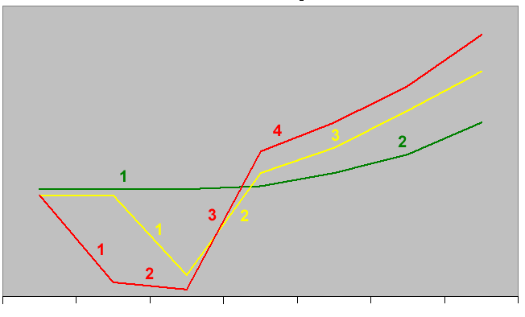
Glycogen: the tank that actually runs out
Glycogen is a large, highly branched polymer of glucose — the body's storage form of carbohydrate. Its branching matters: the many free ends let enzymes cleave glucose units off from dozens of points at once, which is exactly what a working muscle needs. Muscle glycogen is a private reserve; the muscle that stores it is the muscle that uses it, because skeletal muscle lacks the enzyme required to release free glucose back into the bloodstream. Liver glycogen is the public reserve, released as glucose to keep blood levels stable for the brain, the red blood cells, and any muscle that needs it.
When muscle glycogen falls low during prolonged hard exercise — typically somewhere past the ninety-minute mark at a demanding intensity — power output drops steeply. Endurance athletes call this hitting the wall, and it feels less like ordinary fatigue than like the legs having been swapped for someone else's. The body still has enormous fat reserves at that moment, but fat cannot be oxidized fast enough to sustain the pace. This is among the clearest and best-replicated findings in sports nutrition, established in controlled laboratory trials rather than inferred from observation: for exercise lasting more than roughly ninety minutes at intensity, carbohydrate availability limits performance.
| Training load | Typical daily carbohydrate | Comment |
|---|---|---|
| Light activity | ~3–5 g per kg body mass per day | Ordinary daily movement, low-intensity training |
| Moderate (about 1 h per day) | ~5–7 g per kg per day | Most recreationally active adults |
| Endurance (1–3 h per day, moderate to high) | ~6–10 g per kg per day | Serious endurance training |
| Very high (more than ~4–5 h per day) | ~8–12 g per kg per day | Stage racing, multi-session days |
These ranges come from joint sports-nutrition position statements and are expressed per kilogram of body mass so they scale to the individual. They are population guidance for generally healthy people, not prescriptions, and someone training an hour a day does not need the intake of someone training five.
Loading: what it does, and who it helps
Carbohydrate loading is the deliberate supercompensation of muscle glycogen before a long event. The original Scandinavian protocol from the 1960s required a brutal depletion phase — hard exhaustive exercise plus several low-carbohydrate days — before the loading days. That misery turned out to be unnecessary. Modern protocols simply combine a training taper with a high carbohydrate intake, on the order of 10–12 g per kg body mass per day, for the 36 to 48 hours before the event, and achieve the same elevated glycogen.
Two caveats keep loading honest. First, it only helps events that would otherwise deplete glycogen — roughly ninety minutes or longer of continuous demanding effort. For a 5 km race, a soccer match, or a gym session, there is nothing to gain, because glycogen was never the limiter. Second, because glycogen is stored with water, loading typically adds one to two kilograms of body mass. In a marathon that water is useful; in a weight-sensitive or short event it is dead freight.
Timing: before, during, and after
Timing is where carbohydrate advice gets oddly specific, and the specificity is earned — these numbers come from decades of controlled trials. Before prolonged exercise, a carbohydrate-containing meal one to four hours beforehand tops off liver glycogen, with roughly 1–4 g per kg body mass depending on how much time there is to digest. During exercise, the guidance depends almost entirely on duration. Below about 45 minutes, no carbohydrate is needed, and between roughly 45 and 75 minutes only small amounts — even a carbohydrate mouth rinse — appear to help. Between about one and two and a half hours, roughly 30–60 g per hour improves endurance performance. Beyond about two and a half to three hours, intakes up to about 90 g per hour have been shown to help — but only if the carbohydrate comes from multiple transportable carbohydrates, typically a glucose-plus-fructose blend. The reason is elegant: the intestinal glucose transporter SGLT1 saturates near 60 g per hour, while fructose enters by a separate transporter, GLUT5, so combining them raises the total absorbable rate. Higher hourly intakes are under active study and should be treated as preliminary.
Afterward, the urgency depends on when the next session is. If a second hard session is less than about eight hours away, aggressive refueling of roughly 1.0–1.2 g per kg body mass per hour for the first four hours restores glycogen fastest. If the next session is a day away, ordinary meals meeting the daily target restore glycogen fully within 24 hours, and no special window applies. Adding protein to a recovery meal is sensible for other reasons, but it does not speed glycogen resynthesis when carbohydrate intake is already adequate.
Train the gut, not just the legs. Absorbing 60–90 g of carbohydrate per hour while running hard is a skill the intestine has to practice. Athletes who attempt race-day intakes for the first time on race day frequently meet gastrointestinal distress instead of a personal best. Tolerance is trainable, which is why rehearsing fueling during training sessions is standard practice — and why no fueling plan should debut at the start line.
- Muscle glycogen is a local reserve; liver glycogen maintains blood glucose for the whole body.
- Carbohydrate availability limits performance in efforts beyond roughly 90 minutes at intensity.
- Daily carbohydrate scales with training load, roughly 3–12 g per kg body mass per day.
- Loading (about 10–12 g per kg per day for 36–48 h plus a taper) helps only long events, and adds 1–2 kg of water weight.
- During exercise: little or nothing needed under ~45–75 min; 30–60 g per hour for 1–2.5 h; up to ~90 g per hour beyond that using glucose plus fructose.
Section 3Protein and activity
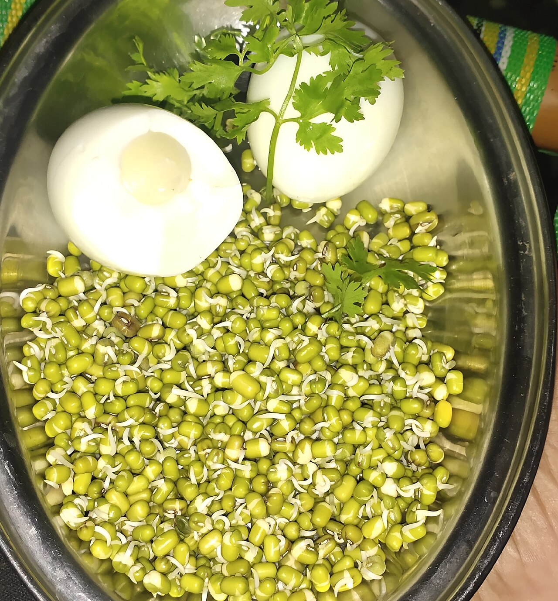
What the numbers actually say
The RDA for protein is 0.8 g per kg body mass per day for healthy adults aged 19 and older, of both sexes. That figure is often misread. An RDA is set to meet the requirement of nearly all healthy individuals in a group — it is a floor for adequacy in a general population, derived largely from nitrogen balance studies in people who are not training hard. It was never intended to describe the intake that best supports adaptation to training.
Several other values differ by life stage, and quoting an RDA without its population is one of the most common errors in this field. For adolescents aged 14–18 the RDA is 0.85 g per kg per day. For pregnancy and lactation it rises to 1.1 g per kg per day (about 71 g per day for many pregnant adults). Older adults are frequently discussed as needing more than 0.8 g per kg because of anabolic resistance — a blunted muscle response to a given dose of protein — and expert groups commonly suggest 1.0–1.2 g per kg per day for this group, though this is guidance rather than a revised RDA.
For people training regularly, joint position statements from sports-nutrition and dietetics organizations describe a range of roughly 1.2–2.0 g per kg body mass per day, with the lower end suiting endurance training and the upper end suiting heavy resistance training, periods of rapid muscle gain, or phases of restricted energy intake where preserving lean mass matters. Evidence for benefit above roughly 2.0 g per kg per day in most people is weak; the dose–response curve flattens. This is a range, not a target to maximize.
| Population | Value | Units | Basis |
|---|---|---|---|
| Adults 19+, both sexes | 0.8 | g per kg body mass per day | RDA — adequacy for nearly all healthy adults |
| Adolescents 14–18 | 0.85 | g per kg per day | RDA — includes growth needs |
| Pregnancy and lactation | 1.1 | g per kg per day | RDA — supports tissue accretion and milk synthesis |
| Endurance training | ~1.2–1.6 | g per kg per day | Position-statement guidance, not an RDA |
| Resistance training / muscle gain | ~1.6–2.0 | g per kg per day | Position-statement guidance, not an RDA |
| Per eating occasion (adults) | ~0.25–0.3 | g per kg, or roughly 20–40 g | Dose that maximally stimulates muscle protein synthesis |
Timing, distribution, and the myth of the window
Muscle protein synthesis rises after a meal containing protein and after resistance exercise, and the two effects are additive. The rise is driven partly by total amino acids and partly by leucine, which acts as a signal; roughly 2–3 g of leucine per meal appears to be the threshold that triggers a full response in younger adults, with older adults often requiring more. Because the response to a single dose plateaus, spreading protein across three or four eating occasions produces a somewhat better daily result than concentrating it in one large evening meal.
The famous "anabolic window" — the claim that protein must be consumed within 30 to 60 minutes of training or the session is wasted — has not held up. Meta-analyses that controlled for total daily protein found that the apparent timing effect largely disappeared: studies showing a timing benefit had usually also given the timed group more protein overall. Post-exercise sensitivity to protein persists for many hours, so eating within a few hours is reasonable and eating within thirty minutes is not obligatory. Total daily intake and consistency dominate; timing is a fine adjustment.
| Common claim | What the evidence shows |
|---|---|
| "You must eat protein within 30 minutes." | Not supported. The window is hours wide; total daily protein matters far more. |
| "The body can only use 20–30 g at a time; the rest is wasted." | Oversimplified. The synthesis response plateaus, but larger doses are still digested and used for other purposes, and whole-food meals raise amino acids for longer. |
| "High protein damages the kidneys." | Not supported in people with healthy kidneys. Advice differs when kidney disease is present — a clinical matter, not a general one. |
| "Plant protein cannot build muscle." | Not supported. Plant sources are generally lower in leucine and slightly less digestible, so a modestly higher total and a variety of sources compensate. |
| "Athletes need protein powder." | Not supported as a requirement. Powders are a convenience food; typical mixed diets at normal energy intakes usually reach 1.2–2.0 g per kg. |
| "More protein always means more muscle." | Not supported. Beyond roughly 2.0 g per kg per day the curve flattens; the training stimulus becomes the limiter. |
Protein is a building material, not a magic one. Amino acids build muscle only in the presence of a training stimulus and adequate total energy. In an energy deficit large enough that the body is short on fuel, dietary protein gets diverted toward oxidation and gluconeogenesis instead of tissue building — which is why "eat more protein" cannot compensate for eating too little overall. Foods carrying protein are also carrying iron, zinc, B12, calcium, and fiber depending on the source, and none of those foods are good or bad in a moral sense.
- The protein RDA is 0.8 g per kg per day for adults 19+; 0.85 for ages 14–18; 1.1 for pregnancy and lactation.
- Active people are commonly guided toward 1.2–2.0 g per kg per day, with little added benefit above that.
- Roughly 0.25–0.3 g per kg (about 20–40 g) per meal maximizes the muscle protein synthesis response.
- The narrow "anabolic window" is not supported; total daily protein and distribution matter more.
- Most people meet elevated needs from food; supplements are convenience, not necessity.
Section 4Fluid and electrolytes
How much water, and how much is lost
Water is not a nutrient in the sense of supplying energy, but it is the medium in which everything else happens: blood volume, temperature regulation through sweating, nutrient transport, and waste removal all depend on it. The Adequate Intake (AI) for total water — from beverages and food, since roughly 20 percent arrives in food — is 3.7 L per day for men aged 19 and older and 2.7 L per day for women aged 19 and older. It rises to about 3.0 L per day in pregnancy and 3.8 L per day during lactation. An AI is a best estimate of typical adequate intake rather than a requirement each person must hit, and actual needs swing widely with body size, climate, and activity.
Sweat is where activity changes the arithmetic. Sweat rates commonly range from about 0.5 to 2.0 L per hour and can exceed that in hot, humid conditions or in large athletes working hard. Sweat is hypotonic — more dilute than plasma — but it is not pure water: sodium concentration typically falls somewhere between about 20 and 80 mmol per liter, varying several-fold between individuals, with smaller amounts of potassium, chloride, and magnesium. That variability is why blanket electrolyte prescriptions make little sense and why individual sweat testing exists.
Dehydration, and its mirror image
Losing fluid without replacing it reduces plasma volume, raises heart rate and core temperature at a given workload, and impairs endurance performance and cognition — effects that become reliably measurable once losses exceed about 2 percent of body mass, and that are amplified in the heat. Losses below that threshold are generally well tolerated. Practical monitoring is unglamorous and effective: body mass before and after a session estimates net fluid loss, and pale straw-colored urine generally indicates adequate hydration while persistently dark, concentrated urine suggests otherwise. Thirst is a real and reasonably good signal in most circumstances.
The mirror-image problem is exercise-associated hyponatremia (EAH), defined as a blood sodium concentration below 135 mmol per liter arising during or shortly after prolonged exercise. Its principal cause is drinking hypotonic fluid — plain water or sports drink — in excess of sweat losses, usually compounded by non-osmotic release of antidiuretic hormone, which prevents the kidneys from excreting the surplus. The result is dilutional: total body sodium may be normal while its concentration falls, water shifts into cells, and the brain swells inside a fixed skull. Early symptoms — nausea, headache, bloating, puffiness, confusion — overlap almost perfectly with dehydration, which is the danger, because the instinctive response of drinking more makes hyponatremia rapidly worse. Severe EAH causes seizures, cerebral and pulmonary edema, and death, and it is a medical emergency requiring immediate professional care.
| Feature | Dehydration | Exercise-associated hyponatremia |
|---|---|---|
| Underlying problem | Fluid loss exceeds intake | Hypotonic fluid intake exceeds losses; blood sodium is diluted |
| Blood sodium | Normal or high | Below 135 mmol/L |
| Body mass during event | Decreased | Unchanged or increased |
| Typical setting | Hot conditions, limited fluid access | Events longer than ~4 h, slower finishers, abundant fluid stations |
| Overlapping symptoms | Headache, nausea, fatigue, confusion | Headache, nausea, bloating, confusion |
| Distinguishing clue | Weight loss, dark concentrated urine, thirst | Weight gain, puffy hands or face, drinking far beyond thirst |
| Effect of drinking more water | Helps | Makes it worse |
Because the two conditions look alike and the treatments diverge, the prevailing guidance from expert consensus panels has shifted away from rigid drinking schedules and toward drinking to thirst, with the added rule that gaining weight during an endurance event is a warning sign rather than an accomplishment. Sodium-containing drinks help replace sweat sodium and encourage drinking, but they do not prevent EAH, because they too are dilute relative to plasma. After exercise, when full rehydration is the goal, consuming roughly 1.25–1.5 L of fluid per kilogram of body mass lost, along with sodium from drinks or food, accounts for ongoing urine losses.
You cannot tell them apart by symptoms alone. A collapsed endurance athlete with headache, nausea, and confusion could be dehydrated or hyponatremic, and the correct response differs entirely. This is precisely why on-site sodium measurement is standard at long endurance events, and why a general-education chapter can teach you to recognize the pattern but cannot substitute for medical evaluation of an actual person.
- Total water AI: 3.7 L per day for men 19+, 2.7 L per day for women 19+; about 20 percent comes from food.
- Sweat rates run roughly 0.5–2.0 L per hour; sweat sodium varies widely (~20–80 mmol/L).
- Performance and cognition decline reliably once fluid loss exceeds about 2 percent of body mass.
- EAH is dilutional hyponatremia (sodium below 135 mmol/L) from overdrinking; it mimics dehydration and is a medical emergency.
- Drinking to thirst and avoiding weight gain during long events is the current consensus approach.
Section 5Supplements and ergogenic aids
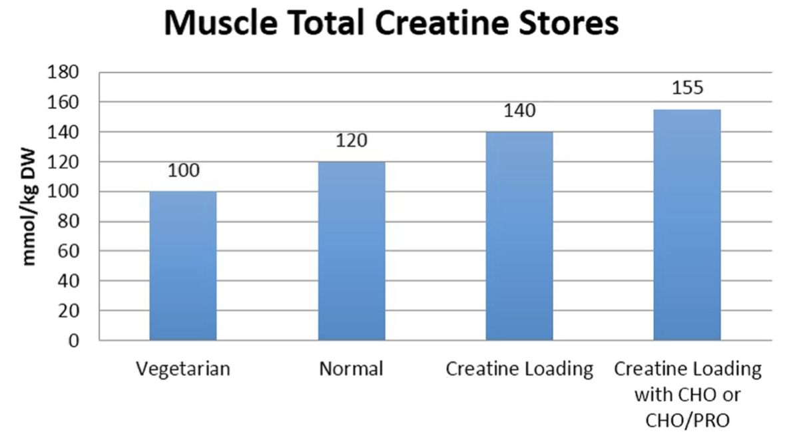
A very short list has strong evidence
An ergogenic aid is anything taken with the intention of enhancing performance. The category is enormous, the marketing is relentless, and the number of substances with genuinely strong evidence is remarkably small. Expert consensus reviews converge on roughly five: caffeine, creatine monohydrate, dietary nitrate, beta-alanine, and sodium bicarbonate — plus sports foods such as drinks, gels, and bars, which are useful chiefly because they deliver carbohydrate and fluid conveniently rather than because of any special property.
Creatine monohydrate is the most studied dietary supplement in sport. It raises muscle phosphocreatine, which enlarges the phosphagen tank described in Section 1, and consistently improves performance in repeated short, high-intensity efforts and in gains of lean mass and strength when combined with resistance training. It has been studied extensively in healthy adults over years of use. Two honest caveats: a portion of users are non-responders, typically because their muscle creatine is already near saturation, and an early gain of one to two kilograms is largely intracellular water. Caffeine has robust evidence for endurance and some high-intensity performance, studied mainly in the range of about 3–6 mg per kg body mass taken roughly an hour before exercise — that is the range trials have used, not a recommendation — with no further benefit and more side effects at higher intakes; sensitivity varies genetically, and sleep disruption can easily erase the gain. Beta-alanine raises muscle carnosine, an intracellular buffer, and helps efforts lasting roughly 30 seconds to 10 minutes; harmless skin tingling is common. Sodium bicarbonate buffers acid outside the cell and helps similar durations, at a real cost in gastrointestinal distress. Dietary nitrate, usually from beetroot juice, improves exercise economy, though the effect is smaller and less consistent in highly trained athletes.
| Substance | Evidence | Plausible effect | Caveats |
|---|---|---|---|
| Creatine monohydrate | Strong | Repeated high-intensity efforts; lean mass and strength with training | Non-responders exist; early water-weight gain of 1–2 kg |
| Caffeine | Strong | Endurance and some high-intensity performance | Wide individual sensitivity; can impair sleep and recovery |
| Beta-alanine | Strong | Efforts of ~30 s to ~10 min | Skin tingling; requires weeks of loading to raise carnosine |
| Sodium bicarbonate | Strong | High-intensity efforts of ~1–7 min | Frequent gastrointestinal distress |
| Dietary nitrate (beetroot) | Strong, but smaller | Improved exercise economy | Effect diminished in highly trained athletes |
| Iron, vitamin D | Only when deficient — strong for iron, weaker for vitamin D | Correcting documented iron deficiency restores endurance capacity; correcting vitamin D deficiency supports bone and muscle health, with performance effects less certain | No ergogenic effect in people who are already replete; deficiency is diagnosed by testing, not guessed at |
| HMB, ketone esters, tart cherry, probiotics | Preliminary or mixed | Possible small effects in specific contexts | Small studies, inconsistent replication |
| BCAAs, glutamine, "testosterone boosters," most fat burners | No credible evidence | — | BCAAs are inferior to complete protein as an amino acid source; the others rest largely on marketing |
Reading claims, and the contamination problem
Two habits protect you from most supplement nonsense. The first is asking what the evidence actually consists of: how many participants, were they trained or untrained, was there a placebo group, was the outcome a real performance measure or a surrogate such as a blood marker, and has the finding replicated in independent laboratories? A single small trial in untrained volunteers is a reason to be curious, not a reason to be convinced. The second habit is distrusting single-nutrient causal claims. Nutrients act within diets and within physiological systems; the confident sentence "compound X boosts metabolism" almost always compresses a small, context-dependent laboratory observation into a promise it cannot keep.
There is also a regulatory reality worth understanding. In the United States, dietary supplements are regulated more like foods than like drugs: manufacturers are responsible for safety and labeling, and products are not reviewed or approved for efficacy before they reach the shelf. Enforcement is largely after the fact. Independent analyses have repeatedly found products containing substances not on the label, including stimulants and anabolic agents, and mismatches between labeled and actual doses. For competitive athletes subject to anti-doping rules, this is not a theoretical risk, since responsibility for a positive test rests with the athlete regardless of intent. Third-party certification programs that test individual production lots are the standard mitigation, and they reduce risk rather than eliminating it.
Supplements sit on top of a diet, not in place of one. The performance return on adequate energy, sufficient carbohydrate around training, enough total protein, decent sleep, and consistent training dwarfs anything on the supplement shelf — and none of the well-supported aids work well in someone who is underfueled. When the fundamentals are genuinely in place, a small number of aids can add a small, real margin. That is the honest size of the effect.
- Only a short list has strong evidence: creatine, caffeine, beta-alanine, sodium bicarbonate, and dietary nitrate.
- Iron and vitamin D improve performance only by correcting a documented deficiency, not as boosters.
- Most other products have preliminary, mixed, or no credible evidence; BCAAs are inferior to complete protein.
- Supplements are regulated as foods, not drugs, and contamination with undeclared substances is documented; third-party lot testing reduces risk.
- Judge claims by replication, placebo control, and real performance outcomes — not by mechanism stories.
The chapter in one breath
- ATP is regenerated by three systems — phosphagen (seconds), anaerobic glycolysis (seconds to ~2 min), and oxidative (minutes to hours) — and intensity decides which dominates.
- Energy yields are fixed: carbohydrate 4, protein 4, fat 9, alcohol 7 kcal per gram; fat stores are effectively unlimited while glycogen stores are only ~1,500–2,400 kcal.
- Glycogen availability limits hard efforts beyond roughly 90 minutes; daily carbohydrate scales with training load at about 3–12 g per kg per day.
- Carbohydrate loading helps only long events, and during exercise the targets are ~30–60 g per hour, rising toward ~90 g per hour with glucose-plus-fructose blends.
- The protein RDA is 0.8 g per kg per day for adults 19+ (0.85 for ages 14–18; 1.1 in pregnancy and lactation), while active people are guided toward 1.2–2.0 g per kg per day.
- The narrow anabolic window is a myth; total daily protein, sensible distribution, and adequate energy do the work.
- Fluid losses past about 2 percent of body mass impair performance, while overdrinking causes exercise-associated hyponatremia — a mimic of dehydration that drinking makes worse.
- Only a handful of ergogenic aids have strong evidence, supplements are regulated as foods rather than drugs, and none of them substitute for adequate fueling.
ReferenceWords worth knowing
A quick reference for the terms in this chapter — skim it now, or circle back whenever a word trips you up.
- Anabolic window
- The popular claim that protein must be eaten within roughly 30–60 minutes after training; controlled trials show the sensitive period lasts hours and that total daily protein matters far more.
- Anaerobic glycolysis
- Breakdown of glucose or glycogen to pyruvate without oxygen, producing ATP rapidly but briefly; supports efforts of about 10 seconds to 2 minutes.
- Beta-alanine
- An amino acid that raises muscle carnosine, an intracellular buffer; strong evidence for efforts lasting roughly 30 seconds to 10 minutes.
- Carbohydrate loading
- Deliberately supercompensating muscle glycogen before a long event by combining a training taper with a high carbohydrate intake for 36–48 hours.
- Creatine monohydrate
- The most studied sport supplement; raises muscle phosphocreatine and improves repeated high-intensity efforts and training-driven gains in lean mass and strength.
- Dehydration
- A body-water deficit from losses exceeding intake; performance and cognition decline reliably once losses exceed about 2 percent of body mass.
- Energy availability
- Dietary energy remaining to support basic physiological function after the energy cost of exercise is subtracted, expressed per kilogram of fat-free mass.
- Ergogenic aid
- Any substance or practice taken with the intention of improving performance; only a small number have strong supporting evidence.
- Euhydration
- A normal, balanced state of body water — neither depleted nor overloaded.
- Exercise-associated hyponatremia (EAH)
- Blood sodium below 135 mmol per liter arising during or after prolonged exercise, usually from drinking hypotonic fluid in excess of losses; a medical emergency that mimics dehydration.
- Gluconeogenesis
- Synthesis of glucose from non-carbohydrate precursors such as amino acids, glycerol, and lactate, chiefly in the liver.
- Glycogen
- The branched storage polymer of glucose held in liver and muscle; muscle glycogen fuels the muscle that stores it, while liver glycogen maintains blood glucose.
- Leucine threshold
- The approximate amount of the amino acid leucine per meal (about 2–3 g in younger adults, often more in older adults) that triggers a full muscle protein synthesis response.
- Multiple transportable carbohydrates
- A glucose-plus-fructose blend that uses two intestinal transporters (SGLT1 and GLUT5), raising the absorbable carbohydrate rate above the roughly 60 g per hour ceiling for glucose alone.
- Muscle protein synthesis
- The building of new muscle protein, stimulated additively by dietary protein and by resistance exercise.
- Osmolality
- The concentration of dissolved particles in a fluid; sweat is hypotonic to plasma, which is why heavy sweating plus plain water can dilute blood sodium.
- Oxidative (aerobic) system
- Mitochondrial energy production using oxygen to fully combust carbohydrate and fat; slow to engage but effectively unlimited in capacity.
- Phosphagen system
- The immediate ATP–phosphocreatine system that powers all-out efforts lasting roughly 10 seconds, requiring no oxygen and producing no acid.
- Phosphocreatine
- A high-energy compound stored in muscle that donates a phosphate to regenerate ATP from ADP almost instantly.
- Relative Energy Deficiency in Sport (RED-S)
- A syndrome of impaired bone, endocrine, immune, metabolic, and psychological function caused by sustained low energy availability; occurs in all sexes and body sizes.
- Sweat rate
- Fluid lost through sweating per unit time, commonly 0.5–2.0 L per hour and highly variable with heat, humidity, intensity, and body size.
- Third-party certification
- Independent testing of individual supplement production lots for undeclared substances; reduces but does not eliminate contamination risk.
Check yourself
Nutrition Through the Lifespan
Nutrient needs are not a fixed target you hit once and coast on — they move underneath you your whole life. A body that is building a second body, a body doubling its birth weight in six months, a body adding half its adult skeleton in four years, and a body defending muscle at eighty are all solving different problems with the same set of nutrients. This chapter walks that arc: pregnancy, lactation and infancy, childhood, adolescence, and older adulthood. In each stage the physiology tells you which nutrients get tight, and the tight nutrients tell you what a reasonable eating pattern looks like. Throughout, the emphasis is on what the evidence actually supports — and on describing bodies and foods without moralizing about either.
By the end of this chapter you can
- Explain why gestational weight gain recommendations differ by pre-pregnancy BMI, and what the added weight is physically made of.
- State the folate and iron recommendations in pregnancy with units and population, and explain the timing problem that makes preconception folate matter.
- List the food-safety and substance exposures advised against in pregnancy and give the reason behind each.
- Describe the composition of human milk, the nutrients that need attention in infancy, and how commercial infant formula is designed and safely prepared.
- Identify developmental readiness for complementary foods and summarize current evidence on introducing common allergens.
- Explain why appetite falls and fluctuates in toddlerhood, and apply a division of responsibility approach to feeding.
- Relate the adolescent growth spurt to peak calcium and iron needs, and describe weight-neutral ways to talk with teens about food and bodies.
- Explain why nutrient density becomes the central issue for older adults, and name the nutrients most often short.
Section 1Pregnancy
Energy, weight gain, and what the gain is made of
Pregnancy is among the most nutritionally demanding physiological states a human body undertakes, and yet the energy cost is smaller than most people expect. In the United States, the estimated additional energy need is essentially zero in the first trimester, roughly +340 kcal/day in the second, and roughly +452 kcal/day in the third. That is a snack and a half, not a second dinner. The old phrase "eating for two" overstates the calories badly while understating the part that actually changes: the demand for specific nutrients climbs much faster than the demand for energy, which is exactly why nutrient density matters more here than volume.
Weight gain in pregnancy is not incidental — it is the physical substrate of the pregnancy. Only a minority of it is the fetus. The rest is placenta, amniotic fluid, an enlarged uterus and breast tissue, an expanded blood volume, extracellular fluid, and maternal fat stores laid down to support lactation. Because the healthiest range of gain differs by where a person started, recommendations are indexed to pre-pregnancy BMI. These ranges come from observational data linking gain to outcomes such as preterm birth, birth weight, and cesarean delivery; they are population-level guidance for a clinician to individualize, not a moral scorecard, and both under-gain and over-gain carry risk.
| Pre-pregnancy BMI | Recommended total gain (singleton) | Approximate weekly gain, 2nd & 3rd trimester |
|---|---|---|
| Under 18.5 | 28–40 lb (12.5–18 kg) | ~1 lb (0.51 kg) |
| 18.5–24.9 | 25–35 lb (11.5–16 kg) | ~1 lb (0.42 kg) |
| 25.0–29.9 | 15–25 lb (7–11.5 kg) | ~0.6 lb (0.28 kg) |
| 30.0 and above | 11–20 lb (5–9 kg) | ~0.5 lb (0.22 kg) |
Protein needs rise from the general adult RDA of 0.8 g/kg/day to about 1.1 g/kg/day in pregnancy — an increase of roughly 25 g/day, which is comfortably met by most ordinary eating patterns, including well-planned vegetarian and vegan ones.
Folate and iron: the two that get tight
Two nutrients dominate prenatal counseling because both have large demand increases and real consequences when short. Folate is required for DNA synthesis and cell division, so it is under maximum strain wherever cells are dividing fastest. Its most famous role is closure of the neural tube, which happens by about 28 days after conception — frequently before a person knows they are pregnant. That timing is the whole argument for preconception intake. The evidence here is unusually strong: randomized controlled trials in the late 1980s and early 1990s showed that periconceptional folic acid substantially reduces the recurrence and occurrence of neural tube defects such as spina bifida and anencephaly, and mandatory folic acid fortification of enriched grains followed in many countries.
Note the two forms. Folate is the naturally occurring form in leafy greens, legumes, citrus, and liver; folic acid is the synthetic form used in supplements and fortification, and it is more efficiently absorbed. Recommendations are stated in dietary folate equivalents (DFE) to reconcile the two. The RDA is 400 µg DFE/day for non-pregnant adults, 600 µg DFE/day in pregnancy, and 500 µg DFE/day during lactation; on top of that, public health guidance is that anyone who could become pregnant get 400 µg/day of folic acid from fortified food or a supplement, in addition to food folate. The Tolerable Upper Intake Level of 1,000 µg/day applies to synthetic folic acid only, not to folate from food — the concern is that high folic acid can correct the anemia of vitamin B12 deficiency while the neurological damage quietly continues.
Iron is the second pressure point. Plasma volume expands by roughly 50% during pregnancy while red cell mass rises by a smaller proportion, which mathematically drops hemoglobin concentration — the normal, expected physiologic hemodilution of pregnancy. This is a dilution effect, not by itself a deficiency, though true iron deficiency anemia is also common and is associated with preterm birth and low birth weight. The iron RDA rises from 18 mg/day for non-pregnant women aged 19–50 (and 8 mg/day for adult men and postmenopausal women) to 27 mg/day in pregnancy — a jump few eating patterns close without a supplement, which is why prenatal vitamins routinely carry iron. Heme iron from meat, poultry, and fish is absorbed severalfold better than non-heme iron from plants and supplements; vitamin C eaten in the same meal meaningfully improves non-heme absorption, while the tannins in tea and coffee and the phytates in whole grains and legumes reduce it.
| Nutrient | Non-pregnant adult female (19–50) | Pregnancy | Lactation | Why it changes |
|---|---|---|---|---|
| Folate | 400 µg DFE | 600 µg DFE | 500 µg DFE | Rapid cell division; neural tube closure |
| Iron | 18 mg | 27 mg | 9 mg | Expanded red cell mass, placenta, fetal stores |
| Iodine | 150 µg | 220 µg | 290 µg | Fetal thyroid hormone and brain development |
| Choline (AI) | 425 mg | 450 mg | 550 mg | Membrane phospholipids, neurodevelopment |
| Calcium | 1,000 mg | 1,000 mg — unchanged | 1,000 mg | Absorption efficiency roughly doubles instead |
The calcium row surprises people. Pregnancy does not raise the calcium RDA for adults, because intestinal calcium absorption up-regulates sharply on its own. (For pregnant adolescents aged 14–18, calcium stays at the higher adolescent value of 1,300 mg/day because they are still building their own skeleton.)
What to avoid, and why
Avoidance lists circulate widely and are often longer than the evidence justifies, so it helps to know the actual mechanism behind each item. Three categories account for nearly all of it: teratogens, foodborne pathogens, and bioaccumulated toxicants.
| Avoid or limit | Mechanism | Strength of evidence |
|---|---|---|
| Alcohol | Teratogen crossing the placenta freely; causes fetal alcohol spectrum disorders | Strong — no threshold established as safe |
| High-mercury fish (shark, swordfish, king mackerel, tilefish, bigeye tuna) | Methylmercury bioaccumulates and is neurotoxic to the developing brain | Strong |
| Unpasteurized milk, soft cheeses from raw milk, deli meats, smoked seafood, raw sprouts | Listeria monocytogenes; pregnancy raises susceptibility many-fold and it crosses the placenta | Strong |
| Raw or undercooked eggs, meat, shellfish | Salmonella, Toxoplasma, Campylobacter | Strong |
| High-dose preformed vitamin A (retinol supplements, retinoid medications, very frequent liver) | Teratogenic above the UL of 3,000 µg RAE/day preformed vitamin A; beta-carotene is not implicated | Strong |
| Caffeine above ~200 mg/day (about one 12 oz coffee) | Crosses the placenta; slower fetal clearance | Moderate — observational, confounded, guidance is precautionary |
Notice the flip side of the fish advice: most fish are encouraged in pregnancy, not discouraged. Low-mercury choices such as salmon, sardines, tilapia, cod, and canned light tuna supply omega-3 fatty acids including DHA, and the balance of evidence favors eating them. Guidance in the United States suggests roughly 8–12 oz per week of low-mercury seafood. Evidence that supplemental DHA improves child neurodevelopmental outcomes is mixed and should be described as preliminary; evidence that it modestly reduces early preterm birth is somewhat stronger but still not settled.
- Added energy is modest (0 / +340 / +452 kcal/day by trimester); added nutrient needs are proportionally much larger.
- Gestational weight gain ranges are indexed to pre-pregnancy BMI; the gain is mostly placenta, fluid, blood volume, and tissue — not just fetus.
- Folate 600 µg DFE/day in pregnancy plus 400 µg/day folic acid preconception; iron 27 mg/day versus 18 mg/day non-pregnant.
- Avoidance lists reduce to three mechanisms: teratogens, foodborne pathogens, and bioaccumulated toxicants — and most seafood is encouraged, not avoided.
Section 2Lactation and infancy
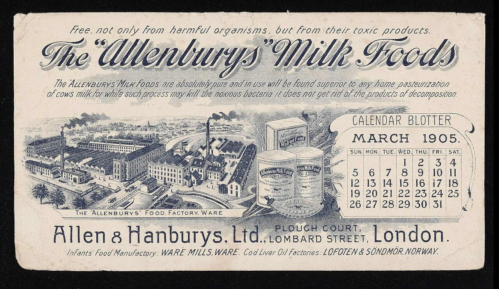
Lactation: an energy cost on the order of late pregnancy
Milk production is energetically expensive — broadly comparable to the third trimester rather than dramatically above it. A person establishing full milk supply makes roughly 750–800 mL/day in the first six months, exporting on the order of 500 kcal/day as milk. The estimated additional energy need is about +330 kcal/day in the first six months — that gross cost minus roughly 170 kcal/day expected from mobilizing fat stored during pregnancy — and about +400 kcal/day in the second six months, when no such offset is assumed. Set those beside the +452 kcal/day of the third trimester and the honest summary is that late pregnancy and lactation sit in the same range. Several micronutrient needs, however, genuinely do peak here rather than in pregnancy: vitamin A rises to 1,300 µg RAE/day and iodine to 290 µg/day. One goes down sharply — iron falls to 9 mg/day for lactating adults, lower than the 18 mg/day baseline, because menstruation is typically suppressed. Fluid needs rise with milk output; thirst is a reasonable guide.
Human milk runs about 65–70 kcal per 100 mL, with roughly 7 g lactose, 3.5–4.5 g fat, and about 1 g protein per 100 mL. Because fat yields 9 kcal/g while carbohydrate and protein each yield 4 kcal/g (and alcohol yields 7 kcal/g), that small fat fraction supplies close to half the total energy — infancy is the one life stage where a high-fat diet is unambiguously the physiologically correct one. The first milk, colostrum, is low in volume but concentrated in protein and secretory IgA. Human milk also contains human milk oligosaccharides (HMOs), which the infant cannot digest at all; they exist to feed Bifidobacterium in the infant gut, an elegant case of a food component whose target is not the eater.
Breastfeeding is recommended exclusively for about the first six months, with continued breastfeeding alongside complementary foods through at least twelve months and beyond as long as mutually desired. The observational evidence for reduced infant gastrointestinal and respiratory infection is consistent and strong; claims about long-term IQ and chronic disease are weaker and heavily confounded by socioeconomic factors, and should be stated cautiously. Two supplements are standard practice in infancy: vitamin K given at birth to prevent vitamin K deficiency bleeding, and vitamin D 400 IU/day for breastfed and partially breastfed infants, because human milk is genuinely low in vitamin D regardless of how well the lactating parent eats.
Formula, and feeding without judgment
Commercial infant formula is a regulated food designed to approximate human milk's nutrient profile. In the United States its composition is governed by the Infant Formula Act, and standard iron-fortified cow-milk-based formula is the appropriate default for infants who are not exclusively breastfed. Specialty formulas — soy-based, extensively hydrolyzed, amino-acid-based — exist for specific medical indications and are not upgrades for typical infants. Formula feeding is a safe, complete way to feed a baby, and framing it otherwise adds guilt without adding nutrition.
The safety issues in formula feeding are almost entirely about preparation, and they are serious ones. Formula must be mixed exactly to the label ratio. Over-diluting to stretch a can causes water intoxication and hyponatremia — an infant's kidneys cannot excrete a large free-water load — along with inadequate energy intake. Homemade formula recipes have caused hospitalizations for electrolyte disturbance and nutrient deficiency and should never be used. Powdered formula is not sterile, so preparation guidance for very young or medically fragile infants may call for hot water or ready-to-feed liquid.
| Feature | Human milk | Standard iron-fortified formula |
|---|---|---|
| Energy | ~65–70 kcal/100 mL | ~67 kcal/100 mL (20 kcal/oz) |
| Protein type | Whey-predominant; changes over lactation | Cow-milk protein, whey-adjusted |
| Iron | Low concentration but highly bioavailable | Fortified; lower bioavailability, higher amount |
| Vitamin D | Low — supplementation advised | Fortified to meet needs |
| Immune factors | Secretory IgA, lactoferrin, live cells, HMOs | Not replicated |
| Composition | Varies by feed, time of day, and infant age | Constant and predictable |
Introducing solids
Infants grow faster in the first year than they ever will again — birth weight roughly doubles by 4–6 months and triples by 12 months — and their energy needs per kilogram show it, starting near 100 kcal/kg/day and easing toward 80 kcal/kg/day by the first birthday, against roughly 30–35 kcal/kg/day for a typical adult. Milk alone stops covering this around six months, and the nutrient that runs out first is iron: a term infant is born with stores that last about 4–6 months. That is the physiological reason complementary foods begin when they do, and the reason iron-rich first foods are emphasized.
Readiness is developmental, not calendar-driven. Look for sitting with support and steady head control, the fading of the extrusion reflex (the automatic tongue-thrust that pushes a spoon back out), and active interest in reaching for food. Offer single new foods a few days apart, with textures that progress as oral motor skill does. Several hard limits belong in every infant-feeding discussion: no honey before 12 months (spores of Clostridium botulinum can germinate in the immature gut and cause infant botulism), no cow's milk as a main drink before 12 months (too little iron, too high a renal solute load, and occult gastrointestinal blood loss), no juice in the first year, and vigilance about choking hazards such as whole grapes, nuts, popcorn, and coin-shaped hot dog slices.
The allergen guidance has genuinely reversed, and this is worth knowing precisely. For years, delaying peanut, egg, and other allergens was standard advice. The LEAP randomized trial, published in 2015, found that early introduction of peanut between roughly 4 and 11 months substantially reduced peanut allergy in high-risk infants. This is strong, randomized evidence, and guidelines now recommend introducing common allergens in the first year rather than delaying them, with medical guidance first for infants with severe eczema or an existing food allergy.
- Lactation adds about +330 kcal/day (0–6 mo) and +400 kcal/day (7–12 mo) — comparable to the third trimester's +452, not far above it; iron needs drop to 9 mg/day while vitamin A and iodine reach their lifespan peaks.
- Fat supplies roughly half of human milk's energy at 9 kcal/g; HMOs feed the infant's gut bacteria, not the infant.
- Standard supplements in infancy: vitamin K at birth and vitamin D 400 IU/day for breastfed infants; formula is a safe, complete alternative when prepared exactly as labeled.
- Complementary foods start around 6 months when iron stores run down; introduce common allergens early rather than delaying, and never give honey before 12 months.
Section 3Childhood
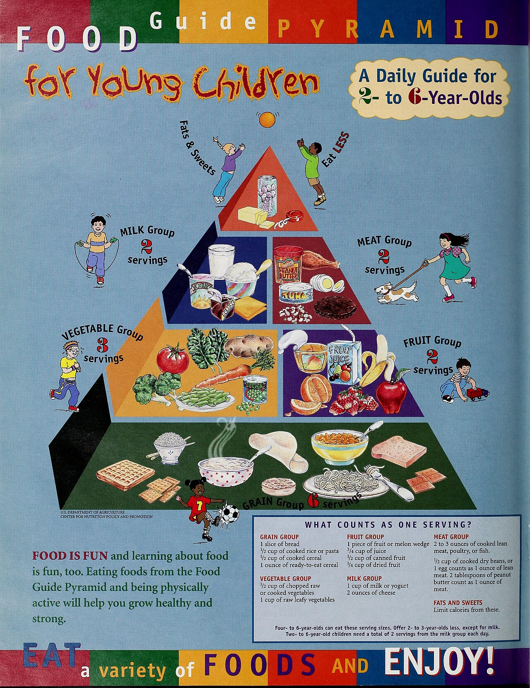
Growth slows — and so does appetite
After the first birthday, growth decelerates dramatically. A toddler who gained roughly 7 kg in year one gains only about 2–3 kg per year and grows roughly 7–8 cm per year in the preschool years, easing to about 5–6 cm per year through the school years. Appetite tracks growth, so it falls too. This entirely normal drop is sometimes called the physiologic anorexia of toddlerhood, and it is the source of an enormous amount of unnecessary worry: a child who ate everything at eleven months and picks at dinner at eighteen months is usually not sick, not stubborn, and not underfed — just growing more slowly.
Intake in early childhood is also wildly erratic day to day while being remarkably stable across a week. A toddler may eat almost nothing at dinner and then eat enormously at breakfast. Judge intake over five to seven days, not one meal. The more reliable objective signal is the growth chart: WHO charts are used from birth to two years and CDC charts from two to twenty years, and what matters is whether a child is tracking along their own established curve, not which percentile that curve happens to be. A child steady at the 15th percentile is doing fine; a child crossing downward from the 75th to the 25th warrants a look.
| Nutrient | Ages 1–3 | Ages 4–8 | Ages 9–13 | Note |
|---|---|---|---|---|
| Protein (RDA) | 1.05 g/kg | 0.95 g/kg | 0.95 g/kg | Higher per kg than the adult 0.8 g/kg |
| Calcium (RDA) | 700 mg | 1,000 mg | 1,300 mg | Rises steeply as bone accrual accelerates |
| Iron (RDA) | 7 mg | 10 mg | 8 mg | Toddlers are a peak-risk group for deficiency |
| Vitamin D (RDA) | 600 IU (15 µg) | 600 IU (15 µg) | 600 IU (15 µg) | Same from age 1 through 70 |
| Fiber (AI) | 19 g | 25 g | 26–31 g | Roughly 14 g per 1,000 kcal at every age |
Iron deficiency deserves a specific warning in this age group. When cow's milk becomes a child's dominant beverage, it displaces iron-rich foods, contributes essentially no iron itself, and can cause small-volume gastrointestinal blood loss — a combination that produces microcytic hypochromic anemia in an otherwise well-fed-looking toddler. Iron deficiency in early childhood is associated with impaired cognitive and motor development, and some of that appears not to fully reverse with later repletion, which is why it is screened for rather than waited on.
Building habits without turning meals into a battle
Food neophobia — reluctance to try unfamiliar foods — emerges around age two and peaks between roughly two and six. It is developmentally normal and probably protective in a species whose toddlers become mobile before they become sensible. It also fades with plain repeated exposure: acceptance often takes eight to fifteen or more neutral encounters with a food, which means "she doesn't like broccoli" after three tries is a premature conclusion.
What consistently backfires is pressure. Experimental and longitudinal research on child feeding consistently finds that pressuring a child to eat a food reduces liking for it, and that using a disliked food to earn a preferred one ("two more bites of peas and you get dessert") lowers the value of the peas while raising the value of dessert — the precise opposite of the intent. Heavy restriction of specific foods tends to increase a child's interest in and consumption of those foods when they become available. The practical alternative, widely taught as the division of responsibility, splits the job: caregivers decide what food is offered, when, and where; the child decides whether to eat and how much. This preserves the child's own hunger and fullness signals, which are the regulatory system you actually want to keep intact for the next eighty years.
- Growth and appetite both slow sharply after age one — the drop is normal, and intake should be judged over a week, not a meal.
- Track a child's own growth curve over time rather than a single percentile.
- Excess cow's milk displacing iron-rich foods is a leading cause of iron deficiency anemia in toddlers.
- Neophobia fades with repeated neutral exposure; pressure and food-as-reward reduce liking, while the division of responsibility preserves self-regulation.
Section 4Adolescence

The growth spurt is a construction project
Adolescence delivers the second-fastest growth of the lifespan. Teenagers add roughly 15–20% of their adult height and, more consequentially for nutrition, close to half of their adult skeletal mass during these years. Peak height velocity arrives around ages 11–12 in girls and 13–14 in boys, with growth of roughly 8–10 cm in the peak year. Lean mass, blood volume, and organ size all scale up alongside height. Energy needs during this window are highly individual — driven by growth stage and activity far more than by age — which makes fixed calorie targets unhelpful and appetite a more reasonable guide than arithmetic.
The bone story is the one worth being emphatic about, because it has a deadline. Roughly 90% of peak bone mass is accrued by about age 18–20, with the peak itself reached in the mid-to-late twenties; after that, the skeleton is essentially in maintenance and slow decline. Calcium intake and weight-bearing physical activity during adolescence therefore influence fracture risk half a century later, and the window does not reopen. This is why the calcium RDA is 1,300 mg/day for ages 9–18 in both sexes — the highest of any life stage, higher than in pregnancy — paired with 600 IU (15 µg)/day of vitamin D. Surveys consistently find adolescent calcium intake falling short of that number, particularly in girls.
Iron needs rise in both sexes for different reasons, which is a useful teaching contrast. In males, expanding lean body mass and blood volume drive the increase and it recedes once growth completes; in females, menstrual losses begin and the elevated need persists through the reproductive years. Hence the split RDA at ages 14–18: 11 mg/day for males and 15 mg/day for females. Zinc, needed for growth and sexual maturation, similarly splits at 11 mg/day and 9 mg/day.
| Nutrient | Ages 9–13 (both) | Ages 14–18 male | Ages 14–18 female | Driver |
|---|---|---|---|---|
| Calcium | 1,300 mg | 1,300 mg | 1,300 mg | Peak bone mineral accrual |
| Vitamin D | 600 IU (15 µg) | 600 IU (15 µg) | 600 IU (15 µg) | Calcium absorption, bone mineralization |
| Iron | 8 mg | 11 mg | 15 mg | Lean mass and blood volume; menstrual loss |
| Zinc | 8 mg | 11 mg | 9 mg | Growth and sexual maturation |
| Protein | 0.95 g/kg | 0.85 g/kg | 0.85 g/kg | Rapid accrual of lean tissue |
Body image, and how not to make it worse
Adolescence is also when body dissatisfaction and disordered eating most often begin, which places anyone teaching nutrition to teens in a position of real influence — in either direction. The evidence on this is more consistent than people expect. Longitudinal research finds that weight-focused conversations, weight teasing, and weight-control encouragement from adults are associated with more disordered eating and no improvement in health behaviors. Conversations that focus on behaviors rather than bodies — eating regularly, eating enough, moving in ways you enjoy, sleeping — do not carry the same risk.
Two things follow practically. First, a weight-neutral vocabulary is not merely polite; it is the option better supported by the available outcome data, which is largely longitudinal and observational but unusually consistent in direction. Describe what nutrients do and what foods contain, and drop the language of "good" and "bad" foods, "guilt-free," "earning" dessert, and "cheat meals" — the moral framing is what carries the harm, and it does not improve intake. Second, know that this age group is the one where underfueling is a common and under-recognized problem. In physically active teens, low energy availability — not eating enough to cover both training and growth — is linked to menstrual disruption, impaired bone accrual, stress fractures, and poor recovery. The energy-availability link is well supported; the broader syndrome frameworks describing it are still evolving. Persistent restriction, rigid food rules, distress after eating, or loss of menstrual periods are signals to involve a qualified clinician, not to teach around.
- Adolescents add 15–20% of adult height and roughly half their adult skeletal mass; energy needs are individual, not formula-driven.
- Calcium 1,300 mg/day (ages 9–18) is the highest of any life stage; about 90% of peak bone mass is set by age 18–20.
- Iron RDA splits at 14–18: 11 mg/day male, 15 mg/day female — different physiology, same nutrient.
- Weight-focused talk and weight teasing predict disordered eating; behavior-focused, weight-neutral language is both kinder and better supported.
Section 5Older adults

Fewer calories, the same or more of everything else
The defining nutritional feature of later life is a divergence. Energy needs fall — lean mass declines, resting metabolic rate follows it down, and activity usually decreases — while requirements for most vitamins and minerals stay flat and several actually rise. Less food coming in, the same or more nutrients required from it. That squeeze is why nutrient density, the amount of nutrient delivered per calorie, becomes the organizing idea of this life stage rather than one concept among many.
Several DRIs change at 51 and again at 71, and the pattern is worth memorizing as a group rather than one at a time.
| Nutrient | Adults 19–50 | Ages 51–70 | Over 70 | Reason |
|---|---|---|---|---|
| Vitamin D | 600 IU (15 µg) | 600 IU (15 µg) | 800 IU (20 µg) | Reduced skin synthesis and sun exposure |
| Calcium | 1,000 mg | 1,000 mg men / 1,200 mg women | 1,200 mg both | Accelerated bone loss after menopause |
| Vitamin B6 | 1.3 mg | 1.7 mg men / 1.5 mg women | Same | Reduced efficiency of utilization |
| Vitamin B12 | 2.4 µg | 2.4 µg from fortified food or supplement | Same | Atrophic gastritis impairs food-bound B12 |
| Fiber (AI) | 38 g men / 25 g women | 30 g men / 21 g women | Same | Scales with lower energy intake |
| Water (AI, total) | 3.7 L men / 2.7 L women | Unchanged | Unchanged | Need is the same; thirst sensation is not |
The B12 row is the one that trips students, so read it carefully: the amount does not change, but the recommended source does. Roughly 10–30% of older adults develop atrophic gastritis, producing too little stomach acid and pepsin to free B12 from the protein it is bound to in food. Crystalline B12 in fortified cereals and supplements is not protein-bound and is absorbed normally, so the DRI explicitly advises adults over 50 to get most of their B12 from those sources. Untreated deficiency causes megaloblastic (macrocytic) anemia plus a neurological syndrome — paresthesias, gait disturbance, cognitive change — and the neurological damage can become permanent. This is also where the folic acid caution from Section 1 lands: high folic acid intake can normalize the blood count while the nerve damage advances unseen.
Muscle is the other headline. Sarcopenia, the age-related loss of muscle mass and function, begins subtly around age thirty and accelerates after sixty, and it is one of the strongest nutrition-related contributors to falls, fractures, and loss of independence. The protein RDA remains 0.8 g/kg/day at all adult ages, but multiple expert groups have argued this is too low for older adults and suggest roughly 1.0–1.2 g/kg/day. Be precise about the status of that number: it is expert consensus and mechanistic reasoning, not a revised DRI, and the trials are not uniformly positive. What is well established is that protein works far better in combination with resistance exercise than alone, and that spreading protein across meals rather than concentrating it at dinner is likely more effective.
Appetite, access, and the practical work
Appetite commonly declines with age — sometimes called the anorexia of aging — and the causes stack. Gastric emptying slows and satiety hormone signaling shifts, so fullness arrives sooner and lasts longer. Taste and smell acuity decline, flattening the reward of eating. Dentition problems, dry mouth, and dysphagia make eating effortful. Many common medications alter taste or cause nausea. And the non-physiological causes matter at least as much: eating alone after a spouse dies, depression, limited mobility for shopping and cooking, and food insecurity on a fixed income.
One clinical asymmetry is worth flagging plainly. In older adults, unintentional weight loss is a warning sign, not an achievement. It typically reflects loss of muscle along with fat and is associated with worse outcomes — falls, delayed healing, infection, mortality. Unexplained weight loss in an older adult belongs in front of a clinician rather than being congratulated.
The interventions that follow are unglamorous and effective: put protein in every meal rather than only dinner; use flavor generously — herbs, acid, aromatics — to compensate for dulled taste without leaning on salt; choose textures that match chewing and swallowing ability rather than abandoning whole food categories; offer smaller, more frequent meals when early satiety is the barrier; keep fluids visible and offered on a schedule since thirst is unreliable; pair fiber increases with fluid; and treat congregate meal programs, home-delivered meals, and grocery assistance as legitimate nutrition interventions. Eating with other people reliably increases intake, which makes company itself a nutritional variable.
- Energy needs fall while micronutrient needs hold or rise — making nutrient density the central concern of later life.
- Needs that increase: vitamin D 800 IU/day after 70, calcium 1,200 mg/day, vitamin B6; B12 stays at 2.4 µg but should come from fortified food or a supplement.
- Sarcopenia drives falls and lost independence; expert groups suggest 1.0–1.2 g/kg/day protein with resistance exercise, above the RDA of 0.8 g/kg/day — consensus, not a revised DRI.
- Appetite decline is multifactorial, thirst is unreliable, and unintentional weight loss is a red flag in older adults.
The chapter in one breath
- Pregnancy adds modest energy (0 / +340 / +452 kcal/day by trimester) but sharply higher nutrient needs; weight gain ranges are indexed to pre-pregnancy BMI and describe outcomes, not virtue.
- Folate (600 µg DFE/day in pregnancy, plus 400 µg/day folic acid preconception) protects neural tube closure, which happens by day 28 — often before a pregnancy is known.
- Iron rises to 27 mg/day in pregnancy against a plasma-volume expansion that also causes normal physiologic hemodilution; avoidance advice reduces to teratogens, pathogens, and bioaccumulated toxicants.
- Lactation carries an energy cost on the order of late pregnancy (+330 to +400 kcal/day, against roughly 500 kcal/day exported as milk); human milk gets about half its energy from fat at 9 kcal/g, and its HMOs feed the infant's gut bacteria rather than the infant.
- Infancy needs vitamin D supplementation while breastfeeding, iron-rich complementary foods from about six months, no honey before twelve months, and early rather than delayed allergen introduction.
- Childhood growth and appetite both slow; judge intake across a week and track the child's own growth curve, and remember that pressure and food-as-reward reduce liking while repeated neutral exposure builds it.
- Adolescence banks nearly all peak bone mass, making calcium 1,300 mg/day the highest of any life stage, and it is the point where weight-focused talk does measurable harm.
- Older adults need fewer calories but as many or more nutrients, so nutrient density rules — watch B12 source, vitamin D, calcium, protein against sarcopenia, and unreliable thirst and appetite.
ReferenceWords worth knowing
A quick reference for the terms in this chapter — skim it now, or circle back whenever a word trips you up.
- Anorexia of aging
- The multifactorial decline in appetite common in later life, driven by slower gastric emptying, altered satiety signaling, reduced taste and smell, dental and swallowing difficulty, medications, and social factors.
- Colostrum
- The first milk produced after birth — small in volume, high in protein and secretory IgA, and lower in fat and lactose than mature milk.
- Complementary foods
- Foods other than human milk or formula introduced around six months of age to complement, not replace, milk feeding.
- Dietary folate equivalents (DFE)
- The unit used to state folate recommendations, adjusting for the higher absorption of synthetic folic acid relative to naturally occurring food folate.
- Division of responsibility
- A feeding framework in which the caregiver decides what food is offered, when, and where, while the child decides whether to eat and how much.
- Exclusive breastfeeding
- Feeding an infant only human milk, with no other liquids or foods except prescribed supplements such as vitamin D; recommended for roughly the first six months.
- Extrusion reflex
- The infant tongue-thrust that automatically pushes solid material out of the mouth; its fading is one sign of readiness for complementary foods.
- Food neophobia
- Reluctance to try unfamiliar foods, emerging around age two and peaking between two and six; it typically fades with repeated neutral exposure.
- Gestational weight gain
- Total weight gained during pregnancy — comprising fetus, placenta, amniotic fluid, uterine and breast tissue, expanded blood and extracellular fluid, and maternal fat stores — with recommended ranges indexed to pre-pregnancy BMI.
- Heme iron
- Iron bound within hemoglobin and myoglobin in meat, poultry, and fish; absorbed severalfold more efficiently than non-heme iron and less affected by dietary inhibitors.
- Human milk oligosaccharides (HMOs)
- Complex carbohydrates in human milk that the infant cannot digest; they act as prebiotics selectively feeding Bifidobacterium in the infant gut.
- Neural tube defect
- A malformation such as spina bifida or anencephaly arising from incomplete closure of the neural tube by about day 28 after conception; risk is substantially reduced by periconceptional folic acid.
- Non-heme iron
- Iron from plant foods, eggs, fortified foods, and supplements; absorption is lower and is enhanced by vitamin C and inhibited by phytates, polyphenols, and calcium taken at the same meal.
- Nutrient density
- The amount of essential nutrients a food supplies relative to its energy content; the organizing principle when energy needs fall but nutrient needs do not.
- Peak bone mass
- The maximum bone mineral content an individual attains, roughly 90% of it accrued by age 18–20 and the peak reached in the mid-to-late twenties.
- Peak height velocity
- The point of fastest linear growth during the adolescent spurt, typically around ages 11–12 in girls and 13–14 in boys.
- Physiologic hemodilution of pregnancy
- The expected fall in hemoglobin concentration when plasma volume expands by roughly 50% while red cell mass rises proportionally less; a dilution effect distinct from true iron deficiency anemia.
- Sarcopenia
- Age-related loss of skeletal muscle mass and function, beginning in the fourth decade and accelerating after sixty; a major contributor to falls, fractures, and loss of independence.
- Teratogen
- An agent that causes structural or functional abnormalities in a developing embryo or fetus — alcohol, methylmercury, and high-dose preformed vitamin A are dietary-relevant examples.
- Weaning
- The gradual process of transitioning an infant from exclusive milk feeding to the family diet; a process spanning months, not a single event.
Check yourself
Food Safety
Nutrition assumes a working food supply, and most of the time we have one — yet an estimated 48 million people in the United States get sick from something they ate each year, about 128,000 are hospitalized, and roughly 3,000 die. Almost none of that is caused by exotic contamination; it is caused by ordinary time, ordinary temperature, and ordinary hands. This chapter walks through the pathogens that actually cause foodborne illness and how they announce themselves, the temperature rules that stop bacteria from multiplying, the handling habits that keep raw and ready-to-eat foods apart, and who carries the most risk and why. It closes with the harder question students ask constantly — what about additives, pesticide residues, and processing? — and gives you a method for weighing that evidence instead of a list of foods to fear.
By the end of this chapter you can
- Name the major foodborne pathogens and match each to its typical onset time, hallmark symptoms, and classic food sources.
- Explain why onset time distinguishes a preformed toxin from an infection, and why that distinction changes what you expect clinically.
- State the boundaries of the temperature danger zone and apply the two-hour rule to holding, cooling, and storage.
- Recall the safe minimum internal cooking temperatures for poultry, ground meat, whole cuts, fish, and reheated leftovers.
- Describe the four core safe-handling practices — clean, separate, cook, chill — and justify each mechanistically.
- Identify the four higher-risk populations and explain the physiology behind each one’s vulnerability.
- List the foods that carry disproportionate risk during pregnancy, infancy, later life, and immunosuppression.
- Distinguish hazard from risk, and weigh evidence about additives, residues, and processing without overstating single findings.
Section 1Foodborne illness
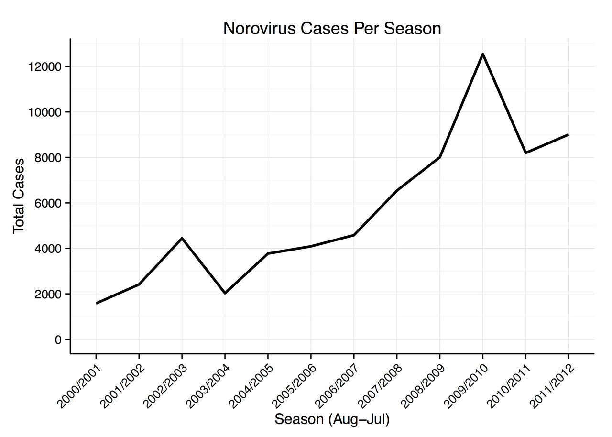
What “food poisoning” actually is
The phrase covers two mechanically different events. In an infection, you swallow a living microbe, it survives the stomach, it multiplies in the gut or invades beyond it, and you become ill only after that population has grown — which takes hours to days. In an intoxication, the microbe did its work in the food before you ever picked up the fork, leaving behind a preformed toxin; you are poisoned by a chemical, not colonized by an organism, and symptoms arrive fast. A third category, toxicoinfection, sits between them: the organism is swallowed alive and produces toxin once inside you.
That mechanical split is why onset time is the most useful single clue in a suspected foodborne illness. Vomiting that begins two hours after a meal cannot be an infection — no organism multiplies that fast — so it points to a preformed toxin, classically Staphylococcus aureus or the emetic form of Bacillus cereus. Bloody diarrhea three days after a cookout points to an invasive organism that needed time to establish. And a meal eaten four weeks ago is still a plausible source for hepatitis A.
The organisms worth knowing
Norovirus is the leader by a wide margin, responsible for roughly 58 percent of domestically acquired foodborne illness from known agents. It is extraordinarily transmissible — as few as roughly eighteen viral particles can infect — it is shed in enormous numbers in vomit and stool, it survives on surfaces, and it resists alcohol-based hand sanitizer. It produces one to three days of vomiting and watery diarrhea and then relents. Infected food handlers, raw shellfish, and contaminated leafy greens are the usual routes.
Among bacteria, nontyphoidal Salmonella causes the most hospitalizations and deaths, arriving twelve to seventy-two hours after poultry, eggs, produce, or contact with reptiles and backyard poultry. Campylobacter jejuni is the most common bacterial cause of diarrheal illness, incubating two to five days, most often traced to undercooked poultry or unpasteurized milk, and occasionally followed weeks later by Guillain–Barré syndrome. Shiga toxin–producing E. coli (STEC, especially O157:H7) causes bloody diarrhea with severe cramps and often no fever, and in roughly five to ten percent of cases — concentrated in children under five — progresses to hemolytic uremic syndrome, a triad of hemolytic anemia, thrombocytopenia, and acute kidney injury. Because of that risk, clinicians are cautious about antibiotics and antimotility drugs in suspected STEC.
Listeria monocytogenes deserves its own paragraph because it breaks the usual rules: it grows at refrigerator temperature, it tolerates salt, and its invasive form can incubate for weeks. In healthy adults it may cause only a brief febrile gastroenteritis; in pregnancy, later life, and immunosuppression it crosses into blood and central nervous system, and invasive listeriosis carries a case-fatality around one in five. Clostridium botulinum is rarer still but unmistakable: a heat-labile neurotoxin from improperly home-canned low-acid foods producing symmetric descending flaccid paralysis with cranial nerve signs — double vision, difficulty swallowing, slurred speech — in an alert, afebrile person. Infant botulism is a separate route, which is why honey should not be given to infants under twelve months.
| Agent | Typical onset | Hallmark | Classic sources |
|---|---|---|---|
| Staphylococcus aureus | 30 min – 8 h | Abrupt vomiting; preformed, heat-stable toxin — reheating does not help | Hand-handled foods held warm: salads, pastries, sliced meats |
| Bacillus cereus (emetic) | 30 min – 6 h | Vomiting; cereulide toxin | Cooked rice and pasta held at room temperature |
| Bacillus cereus (diarrheal) | 6 – 15 h | Watery diarrhea, cramps | Meats, stews, sauces, vegetable dishes |
| Clostridium perfringens | 6 – 24 h | Cramps and diarrhea, little vomiting or fever; resolves in a day | Large batches of meat, gravy, beans cooled or held too slowly |
| Norovirus | 12 – 48 h | Vomiting and diarrhea, 1–3 days; alcohol gel unreliable | Infected food handlers, raw shellfish, leafy greens |
| Salmonella (nontyphoidal) | 12 – 72 h | Diarrhea, fever, cramps, 4–7 days | Poultry, eggs, produce, raw flour, reptiles |
| Campylobacter jejuni | 2 – 5 days | Diarrhea (often bloody), fever; rare later Guillain–Barré | Undercooked poultry, unpasteurized milk, untreated water |
| STEC / E. coli O157:H7 | 3 – 4 days | Bloody diarrhea, often afebrile; risk of HUS in young children | Undercooked ground beef, raw leafy greens, unpasteurized juice |
| Vibrio species | 2 – 48 h | Diarrhea; V. vulnificus can cause sepsis in liver disease | Raw oysters and shellfish, warm coastal waters |
| Listeria monocytogenes | 1 day – 10 weeks | Febrile gastroenteritis, or invasive sepsis/meningitis; grows at 4°C | Deli meats, soft cheeses from raw milk, smoked seafood, melon, sprouts |
| Clostridium botulinum | 12 – 72 h | Descending flaccid paralysis, cranial nerve palsies, no fever | Improperly home-canned low-acid foods; honey in infants |
| Hepatitis A | 15 – 50 days | Fatigue, nausea, jaundice; vaccine-preventable | Infected food handlers, shellfish, frozen berries |
| Scombroid (histamine) | Minutes – 1 h | Flushing, headache, rash; chemical, not infectious | Temperature-abused tuna, mahi-mahi, mackerel |
What the body loses, and what it needs back
Most foodborne illness in an otherwise healthy adult is self-limiting, and the real hazard is not the organism but the fluid and electrolyte loss. Diarrheal stool carries sodium, potassium, chloride, and bicarbonate. Oral rehydration works because glucose and sodium are absorbed together by a shared intestinal transporter, dragging water along with them — which is why the standard reduced-osmolarity oral rehydration solution defined by the World Health Organization pairs sodium at 75 mmol/L with glucose at 75 mmol/L for a total osmolarity near 245 mOsm/L, rather than simply offering water. Plain water does not restore sodium, and high-sugar soft drinks can worsen osmotic diarrhea.
This is general education, not clinical instruction: signs such as bloody stools, high fever, neurologic symptoms, signs of dehydration, or illness in an infant, an older adult, a pregnant person, or someone immunosuppressed warrant prompt medical evaluation rather than home management.
- Infection (organism multiplies in you, slower onset) differs from intoxication (preformed toxin, rapid onset).
- Norovirus causes the most illness; Salmonella causes the most hospitalizations and deaths among bacteria.
- STEC risks hemolytic uremic syndrome, especially in children under five; Listeria uniquely grows at refrigerator temperature.
- The immediate danger in most cases is fluid and electrolyte loss, which is why glucose-plus-sodium rehydration outperforms plain water.
Section 2Temperature control
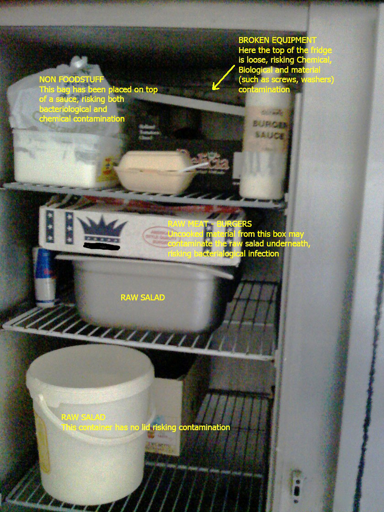
The danger zone and the two-hour rule
Bacteria are not exotic; they are arithmetic. Under favorable conditions a single bacterial cell divides roughly every twenty minutes, so one organism becomes more than a million in about seven hours. The temperature danger zone is the range in which that arithmetic runs fast: the U.S. Department of Agriculture defines it as 40°F to 140°F (4°C to 60°C), while the FDA Food Code used by retail and food-service operations tightens it slightly to 41°F to 135°F (5°C to 57°C). The two numbers differ because they were set for different settings, not because anyone disagrees about the microbiology.
The practical rule that follows is the two-hour rule: perishable food should not sit in the danger zone for more than two hours cumulatively, counting time on the counter, on the buffet, and in the car. Above 90°F (32°C) — a summer picnic, a hot car — that budget drops to one hour. Cumulative is the word people miss: an hour thawing on the counter plus ninety minutes on a serving table has already spent the budget, even though neither step felt long.
Cooking: the kill step
Cooking is the one moment in the chain that reliably reduces the pathogen load rather than merely holding it steady. But it only works if the coldest interior point reaches temperature, which colour and texture cannot tell you — browning is a Maillard reaction driven by surface chemistry, not a thermometer. A ground beef patty can look grey and still be under temperature, and a well-cooked steak can look pink from myoglobin chemistry. Use a food thermometer in the thickest part, away from bone and fat, and calibrate it occasionally in an ice-water slurry, which should read 32°F (0°C).
| Food | Safe minimum internal temperature | Note |
|---|---|---|
| Poultry — all forms | 165°F (74°C) | Whole birds, pieces, ground poultry, and stuffing alike |
| Ground meats (beef, pork, lamb, veal) | 160°F (71°C) | Grinding moves surface bacteria throughout the interior |
| Whole cuts — steaks, chops, roasts | 145°F (63°C) | Plus a 3-minute rest before carving or eating |
| Fish and shellfish | 145°F (63°C) | Or until flesh is opaque and separates easily |
| Egg dishes; eggs cooked for holding | 160°F (71°C) | Cook plain eggs until yolk and white are firm |
| Leftovers, casseroles, reheated dishes | 165°F (74°C) | Reheat to steaming throughout, not just warm at the edge |
| Hot holding / cold holding | ≥135°F (57°C) / ≤41°F (5°C) | Holding maintains safety; it does not create it |
Cooling, thawing, and storage
Cooling is where home and food-service kitchens fail most often, because a large stockpot cools from the outside in and can sit for hours in the middle of the danger zone while the surface feels cold. The Food Code therefore specifies two-stage cooling: from 135°F down to 70°F within two hours, then from 70°F down to 41°F within four more hours — six hours total, with the first stage the strict one. You buy that speed by increasing surface area: divide into shallow pans no more than about two inches deep, use an ice bath, stir with an ice paddle, and leave the container uncovered or loosely covered until it is cold.
Thawing has exactly four safe methods — in the refrigerator, submerged in cold running or frequently changed water, in the microwave with cooking to follow immediately, or as part of the cooking process itself. The counter is not on the list, because the outer layer reaches danger-zone temperature long before the centre thaws. Keep the refrigerator at or below 40°F (4°C) and the freezer at 0°F (−18°C), verified with an appliance thermometer rather than the dial. Refrigerated leftovers are generally best used within three to four days; freezing extends that indefinitely from a safety standpoint, though quality declines.
Two limits are worth stating plainly. Freezing does not kill most bacteria — it suspends them, and they resume growing on thawing (it does reliably kill some parasites, which is why certain fish for raw consumption is required to be frozen). And refrigeration is not a stop, only a brake: Listeria monocytogenes multiplies happily at 4°C, which is the whole reason long-stored, ready-to-eat refrigerated foods behave differently from everything else in this chapter.
- The danger zone is 40–140°F (4–60°C) by USDA convention, 41–135°F (5–57°C) in the FDA Food Code.
- The two-hour rule is cumulative, and drops to one hour above 90°F (32°C).
- Key temperatures: poultry 165°F, ground meat 160°F, whole cuts 145°F plus a 3-minute rest, leftovers reheated to 165°F.
- Two-stage cooling: 135→70°F in 2 hours, then 70→41°F in 4 more.
- Freezing suspends bacteria rather than killing them, and Listeria grows at refrigerator temperature.
Section 3Cross-contamination and hygiene
Clean, separate, cook, chill
Public-health agencies compress the entire field into four verbs, and each one has a mechanism behind it. Clean removes organisms from hands and surfaces before they can be moved. Separate keeps raw animal foods away from anything that will not receive a kill step. Cook applies that kill step to a verified internal temperature. Chill denies survivors the time and temperature they need to multiply. Sections 1 and 2 covered cook and chill; this section is about the other two, which is where most household transmission actually happens.
Hands, and why twenty seconds
Handwashing works mechanically, not chemically. Soap is a surfactant: its molecules have a water-loving head and a fat-loving tail, so they lift oils, soil, and microbes off the skin and suspend them in water, where running water carries them down the drain. Twenty seconds of friction is the interval that reliably reaches the places people skip — thumbs, fingertips, nail beds, and the backs of the hands — and then a clean towel finishes the job, because damp hands transfer organisms far more readily than dry ones.
Alcohol-based hand sanitizer at 60 percent or above is a genuine tool, but a limited one. It denatures proteins and disrupts lipid envelopes, so it handles many bacteria and enveloped viruses well. It is unreliable against norovirus, which has a tough non-enveloped capsid, against Clostridioides difficile spores, and against any hand that is visibly soiled or greasy, because it does not physically remove anything. In a kitchen, sanitizer supplements soap and water; it does not replace it.
Wash before starting to prepare food, after handling raw meat, poultry, seafood, eggs, or flour, after using the bathroom, after handling garbage or pets, after diaper changes, and after coughing, sneezing, or blowing your nose. The same logic governs who should be in a kitchen at all: anyone with vomiting, diarrhea, jaundice, a sore throat with fever, or an open infected lesion on the hands should not be preparing food for others. Gloves do not change this — they are a barrier for ready-to-eat food, not a substitute for clean hands, and they must be changed between tasks exactly as hands would be washed between tasks.
Keeping raw and ready-to-eat apart
Cross-contamination is the transfer of pathogens from one food, surface, or hand to another. The classic path runs from raw poultry to a cutting board to a salad, and the classic error is thinking a rinse in between was enough. Use separate boards for raw animal foods and for produce and other ready-to-eat items; wash boards, knives, and counters with hot soapy water and then sanitize; never return cooked food to the plate that held it raw. In the refrigerator, store raw meat, poultry, and seafood on the bottom shelf in sealed containers so nothing can drip onto foods below.
Two counterintuitive rules are worth internalizing. First, do not wash raw poultry or meat. Rinsing does not remove pathogens meaningfully, and controlled kitchen studies using tracer organisms have repeatedly shown that it splashes and spreads bacteria around the sink and onto nearby surfaces and foods; cooking to 165°F is the step that works. Second, do wash produce — but only with running water. Rub firm produce under the tap or scrub it with a clean brush, wash melon rinds before cutting so the knife does not carry surface organisms into the flesh, and skip soap, detergent, bleach, and commercial produce washes, which are not approved for that use and can leave residues. Bagged greens labelled “washed” or “ready to eat” do not need rewashing, and rewashing them in a home sink can add contamination rather than remove it.
| Practice | What to do | Why it works |
|---|---|---|
| Clean — hands | Soap and running water, 20 seconds of friction, dry with a clean towel | Surfactant lifts microbes; friction and rinsing physically remove them |
| Clean — surfaces | Wash with hot soapy water, then sanitize; launder cloths hot; replace sponges often | Washing removes soil so the sanitizer can actually contact the surface |
| Separate — boards | Dedicated boards for raw animal foods vs. ready-to-eat foods | Ready-to-eat foods get no later kill step |
| Separate — fridge | Raw meat, poultry, seafood sealed on the bottom shelf | Gravity: drips can only fall onto things below |
| Separate — plates | Never reuse the raw-meat platter or marinade for cooked food | The plate carries the same load the raw food did |
| Do not do | Washing raw chicken; washing produce with soap or bleach | Rinsing splashes pathogens; detergents are not approved for produce |
| Cook | Verify internal temperature with a thermometer | Appearance is Maillard chemistry, not a measure of pathogen kill |
| Chill | Refrigerate within 2 hours (1 hour above 90°F); shallow containers | Removes the time and temperature bacteria need to multiply |
- The four core practices are clean, separate, cook, chill, and each has a mechanism.
- Handwashing is mechanical removal: soap plus friction plus running water plus a dry towel, 20 seconds.
- Alcohol sanitizer (≥60%) supplements soap but fails against norovirus, spores, and soiled hands.
- Do not wash raw poultry; do wash produce under running water only, including melon rinds before cutting.
- Store raw animal foods sealed on the bottom shelf, and keep boards and plates for raw and ready-to-eat foods separate.
Section 4High-risk foods and populations
Who is more vulnerable, and why
Four groups carry substantially more risk from the same contaminated meal: pregnant people, children under five, adults over sixty-five, and people who are immunocompromised. The reasons are physiological, not behavioural, and it is worth knowing them rather than memorizing the list.
Pregnancy shifts cell-mediated immunity in ways that protect the fetus from maternal rejection but leave the pregnant person less able to contain intracellular pathogens. The result is a risk of listeriosis roughly ten times that of the general population. Listeria can cross the placenta even when the pregnant person feels only mildly unwell, causing miscarriage, stillbirth, preterm birth, or neonatal sepsis and meningitis. Toxoplasma gondii, acquired from undercooked meat or contaminated soil and cat litter, poses a parallel congenital risk.
Children under five have immature adaptive immunity, a less-developed gastric acid barrier in infancy, and a small body mass, so both the infectious dose required and the fluid reserve available work against them. This is the age band in which STEC infection most often progresses to hemolytic uremic syndrome, and in which dehydration from any gastroenteritis escalates fastest. Infants under twelve months are additionally susceptible to infant botulism, because their gut flora is not yet established enough to suppress germinating C. botulinum spores — hence the honey rule.
Adults over sixty-five face immunosenescence, reduced gastric acid secretion, slower intestinal motility that prolongs contact with pathogens, more comorbid disease, and more medications. Immunocompromising conditions and treatments — cancer chemotherapy, transplant immunosuppression, advanced HIV, chronic corticosteroids, diabetes, liver disease, and kidney disease — blunt the same defences. One underappreciated group cuts across all of these: people taking acid-suppressing medication such as proton pump inhibitors lose much of the gastric acid barrier, and observational studies consistently associate their use with higher rates of Salmonella, Campylobacter, and Vibrio infection — a pattern consistent with a lowered infectious dose, though the size of the effect is debated. And people with liver disease or iron overload are at particular risk from Vibrio vulnificus in raw oysters, because the organism thrives on available iron.
| Group | Physiological reason | Chief concerns |
|---|---|---|
| Pregnancy | Shift in cell-mediated immunity; placental transfer | Listeria (about 10× risk), Toxoplasma, methylmercury, preformed vitamin A excess |
| Under 5 years | Immature immunity, low gastric acid, small fluid reserve | STEC/HUS, Salmonella, rapid dehydration; botulism under 12 months |
| 65 and older | Immunosenescence, less gastric acid, slower motility, comorbidity | Listeria, Salmonella, higher hospitalization and death rates |
| Immunocompromised | Impaired cell-mediated immunity and phagocytosis | Invasive Listeria and Salmonella, bacteremia, meningitis |
| On acid suppression | Gastric acid barrier blunted | Higher observed rates of Salmonella, Campylobacter, Vibrio |
| Liver disease / iron overload | Available iron favours the organism | Vibrio vulnificus sepsis from raw shellfish |
The foods that carry disproportionate risk
A food earns a place on this list for one of two reasons: it is eaten without a kill step, or its structure protects organisms from one. Raw and undercooked animal foods are obvious. Less obvious are raw sprouts, whose warm, humid germination conditions are effectively an incubator for any pathogen on the seed; precut melon and leafy greens, where surface contamination is redistributed by cutting and never heated; raw flour, which is an unprocessed agricultural product and has caused both Salmonella and STEC outbreaks in raw dough; and refrigerated ready-to-eat foods such as deli meats, patés, and smoked seafood, which sit for weeks at exactly the temperature Listeria tolerates.
Unpasteurized milk deserves a direct answer, because the claims made for it are nutritional. Pasteurization does not meaningfully reduce the nutritional value of milk. Protein, fat, and calcium are unaffected — a cup of milk supplies roughly 300 mg of calcium either way, against an RDA of 1,000 mg/day for adults aged 19–50 and men to 70, rising to 1,200 mg/day for women 51 and older and for everyone over 70. Losses are limited to a small fraction of a few heat-sensitive vitamins, and milk is not a meaningful source of those. There is no good evidence that raw milk relieves lactose intolerance or prevents asthma, and there is abundant evidence that it transmits Campylobacter, Salmonella, STEC, and Listeria. Standard high-temperature short-time pasteurization — 161°F (72°C) for 15 seconds — is one of the highest-return public-health interventions ever adopted.
Two nutrient-specific cautions belong here as well. In pregnancy, fish is beneficial: the long-chain omega-3 fatty acid DHA supports fetal brain and retinal development, and joint FDA and EPA advice is to eat two to three servings a week from lower-mercury “best choices” such as salmon, sardines, canned light tuna, shrimp, tilapia, and cod, while avoiding the highest-methylmercury species — shark, swordfish, king mackerel, Gulf tilefish, bigeye tuna, marlin, and orange roughy. The message is which fish, not whether fish. Separately, preformed vitamin A (retinol) is teratogenic in excess, with an adult tolerable upper intake level of 3,000 μg RAE/day; liver is extraordinarily concentrated in it, which is why liver is limited in pregnancy. Beta-carotene from plant foods does not carry this risk, because conversion to retinol is regulated.
- The four higher-risk groups are pregnancy, under five, sixty-five and older, and immunocompromised, for identifiable physiological reasons.
- Pregnancy carries roughly ten times the listeriosis risk; children under five carry the highest HUS risk from STEC.
- High-risk foods lack a kill step: raw animal foods, raw sprouts, precut melon, raw flour, and refrigerated ready-to-eat foods.
- Pasteurization (161°F/72°C for 15 s) removes pathogens without meaningfully reducing milk’s nutritional value.
- In pregnancy, choose lower-mercury fish rather than avoiding fish, and limit preformed vitamin A (UL 3,000 μg RAE/day).
Section 5Additives, residues, and processing
Who regulates what
In the United States the responsibility is split. The Food and Drug Administration oversees most of the food supply, including additives, labelling, and produce safety. The USDA Food Safety and Inspection Service handles meat, poultry, catfish, and processed egg products, with continuous inspection at slaughter and processing plants. The Environmental Protection Agency sets the legal maximum residue level — the tolerance — for each pesticide on each crop, and the FDA and USDA enforce those tolerances in monitoring programs. The Food Safety Modernization Act of 2011 shifted the FDA’s posture from reacting to outbreaks toward requiring preventive controls, and most commercial food processors now operate a HACCP plan — Hazard Analysis and Critical Control Points — that identifies where in the process a hazard can be controlled and monitors those points continuously.
Additives are approved under the Federal Food, Drug, and Cosmetic Act as amended in 1958. A substance either goes through formal food-additive approval or qualifies as GRAS — Generally Recognized As Safe — based on scientific consensus or long-standing use. The Delaney Clause in that law bars approval of any food additive shown to induce cancer in humans or animals, which is why the FDA revoked authorization for FD&C Red No. 3 in food in January 2025 on the basis of rat thyroid tumours, even though the mechanism involved is not thought to operate in humans. It is fair to note the system’s most-criticized feature honestly: companies may self-affirm GRAS status without notifying the FDA, and that loophole is a legitimate subject of scientific and policy debate.
How safety limits are actually set
The core concept is the Acceptable Daily Intake (ADI): the amount, in milligrams per kilogram of body weight per day, that can be consumed over a lifetime without appreciable risk. It is derived from the highest dose producing no observed adverse effect in animal studies (the NOAEL), divided by a safety factor of 100 — a factor of ten for possible differences between animals and humans, and another ten for variation among humans. Real-world intakes typically fall far below the ADI. Aspartame is the standard teaching case: the FDA sets its ADI at 50 mg/kg body weight per day and the WHO/FAO Joint Expert Committee on Food Additives (JECFA) at 40 mg/kg body weight per day. In 2023 the International Agency for Research on Cancer classified aspartame as “possibly carcinogenic to humans” (Group 2B) on the basis of limited evidence, while JECFA — reviewing the same literature for risk rather than hazard — reaffirmed its 40 mg/kg ADI unchanged.
That apparent contradiction is the single most important idea in this section. Hazard asks whether a substance can cause harm under some conditions. Risk asks whether it will, at the doses people actually encounter. IARC classifies hazards, not risks — which is why processed meat sits in Group 1 (sufficient evidence) alongside tobacco while conferring a vastly smaller absolute risk. The processed-meat finding itself is a good example of reading a number properly: roughly an 18 percent higher relative risk of colorectal cancer per 50 g/day consumed. Applied to a baseline lifetime risk of about four to five percent, that is a change of well under one percentage point — real, worth knowing, and not equivalent to smoking. It is also an association from observational cohorts, so the effect size should be held loosely. Note also that nitrite in cured meat is there partly to prevent botulism, and that “uncured” products preserved with celery powder deliver nitrite from a natural source rather than none at all.
| Concern | What is known | Strength of evidence |
|---|---|---|
| Pesticide residues | EPA sets crop-specific tolerances; USDA monitoring consistently finds over 99 percent of samples at or below tolerance, and washing and peeling reduce residues further | Strong that exposures are low; limited that they cause harm at those levels |
| Organic produce | Reliably lowers measured pesticide-residue exposure | Strong for residue reduction; preliminary for health outcomes |
| Processed meat | IARC Group 1; about 18% higher relative colorectal cancer risk per 50 g/day | Strong association; modest absolute effect |
| Aspartame | IARC Group 2B (2023); JECFA reaffirmed its ADI of 40 mg/kg body weight/day (FDA uses 50) | Limited and contested; label warning is for phenylketonuria |
| Synthetic food dyes | Red No. 3 authorization revoked (2025) under the Delaney Clause; some children may show behavioural sensitivity | Preliminary for behaviour; regulatory action is statutory, not risk-based |
| Acrylamide | Forms above about 120°C in starchy foods (asparagine plus reducing sugars); IARC Group 2A | Strong in animals; inconsistent in human studies |
| Heavy metals | Arsenic in rice, lead and cadmium traces in some foods; FDA action levels tightening | Strong that exposure is measurable; guidance is precautionary, focused on infants and young children |
| Ultra-processed foods | Cohort studies link higher intake to cardiometabolic outcomes; one small inpatient randomized crossover trial found about 500 kcal/day greater spontaneous intake | Consistent observationally; mechanism unresolved |
Processing: neither villain nor neutral
“Processed” is not one thing. Pasteurization, canning, freezing, refrigeration, fortification, and milling are all processing, and several of them are among the most effective public-health measures in the history of food — iodized salt largely ended endemic goiter, folic acid fortification of enriched grains was followed by a substantial drop in neural tube defects, and pasteurization removed a whole category of dairy-borne disease. Frozen and canned vegetables are nutritionally comparable to fresh and are often cheaper and more accessible.
The current research interest is narrower, focused on ultra-processed foods as defined by the NOVA classification: industrial formulations built largely from refined substances and additives rather than from recognizable whole foods. Observational cohorts consistently associate higher intake with cardiometabolic outcomes, and a small inpatient randomized crossover trial in twenty adults found participants spontaneously ate roughly 500 kcal/day more on an ultra-processed diet matched for presented macronutrients. That is a genuine finding, but a single trial in twenty people, and the mechanism is unsettled — candidates include energy density, softer texture and faster eating rate, hyperpalatability, and lower satiety per calorie. Energy density itself is arithmetic: fat supplies 9 kcal/g, while carbohydrate and protein each supply 4 kcal/g and alcohol supplies 7 kcal/g, so a food’s fat and water content largely determine how many calories arrive per bite. Treat the additive hypothesis as preliminary, and do not convert an association into a claim about any one ingredient.
When you meet the next headline, run five questions. What was the study design — test tube, animal, observational cohort, or randomized trial? Was the dose realistic, or hundreds of times typical intake? Is the number a relative or an absolute risk? Is this a hazard classification or a risk estimate? And does one study overturn a body of prior evidence, or add to it? That method is more durable than any list of ingredients to avoid, and it keeps a small, uncertain risk from crowding out a benefit that rests on far better evidence — diets richer in fruits and vegetables are among the most consistently supported patterns in nutrition, backed by large cohorts and by trials of dietary patterns, so residue anxiety that reduces produce intake trades a well-supported benefit for a speculative one.
- FDA covers most foods, USDA-FSIS covers meat, poultry, and egg products, and EPA sets pesticide tolerances; HACCP and FSMA made prevention the operating model.
- The ADI comes from the animal NOAEL divided by a safety factor of 100, and typical intakes fall far below it.
- Hazard ≠ risk: IARC classifies hazards, so Group 1 processed meat and Group 1 tobacco differ enormously in absolute risk.
- Processing includes protective steps — pasteurization, fortification, freezing — and the ultra-processed literature is consistent observationally but mechanistically unresolved.
- Energy density follows the yields: fat 9 kcal/g, carbohydrate and protein 4 kcal/g each, alcohol 7 kcal/g.
The chapter in one breath
- Foodborne illness is either an infection (organism multiplies in you, slower onset) or an intoxication from a preformed toxin (rapid onset), and onset time is the fastest way to tell them apart.
- Norovirus causes the most illness; Salmonella the most bacterial hospitalizations and deaths; STEC risks HUS in young children; Listeria uniquely grows at refrigerator temperature.
- The danger zone is 40–140°F (4–60°C), and the two-hour rule is cumulative — one hour above 90°F.
- Cook poultry to 165°F, ground meat to 160°F, whole cuts to 145°F with a 3-minute rest, and reheat leftovers to 165°F; cool 135→70°F in 2 hours, then 70→41°F in 4 more.
- Clean, separate, cook, chill: wash hands 20 seconds with soap and running water, keep raw animal foods on the bottom shelf and on their own board, wash produce under running water only, and never rinse raw poultry.
- Higher risk falls on pregnancy, children under five, adults 65 and older, and the immunocompromised for reasons of immunity, gastric acid, and reserve — and on anyone taking acid-suppressing medication.
- Pasteurization removes pathogens without meaningfully costing nutrition, and in pregnancy the advice on fish is which fish, not whether fish.
- For additives, residues, and processing, separate hazard from risk and relative from absolute, weight evidence by study design, and let strong evidence outrank preliminary evidence.
ReferenceWords worth knowing
A quick reference for the terms in this chapter — skim it now, or circle back whenever a word trips you up.
- Acceptable Daily Intake (ADI)
- The amount of a substance, in mg per kg body weight per day, judged safe to consume daily over a lifetime; derived from the animal NOAEL divided by a safety factor, conventionally 100.
- Acrylamide
- A compound formed from asparagine and reducing sugars when starchy foods are cooked above roughly 120°C; classified by IARC as probably carcinogenic to humans based mainly on animal data.
- Cross-contamination
- Transfer of pathogens from one food, surface, utensil, or hand to another — classically from raw animal foods to ready-to-eat foods.
- Danger zone
- The temperature range in which bacteria multiply rapidly: 40–140°F (4–60°C) by USDA convention, 41–135°F (5–57°C) in the FDA Food Code.
- Delaney Clause
- The provision of U.S. food law barring approval of any food additive shown to induce cancer in humans or animals, regardless of dose.
- GRAS
- Generally Recognized As Safe — a regulatory status allowing use of a substance without formal food-additive approval, based on scientific consensus or long-standing safe use.
- HACCP
- Hazard Analysis and Critical Control Points — a preventive food-safety system that identifies where hazards can be controlled in a process and monitors those points continuously.
- Hazard
- The capacity of a substance or agent to cause harm under some conditions, independent of the dose actually encountered.
- Hemolytic uremic syndrome (HUS)
- A complication of Shiga toxin–producing E. coli infection — hemolytic anemia, thrombocytopenia, and acute kidney injury — most common in children under five.
- Immunosenescence
- The age-related decline in immune function that contributes to higher foodborne-illness severity in older adults.
- Infection (foodborne)
- Illness caused by swallowing a living pathogen that multiplies in the host; onset is typically hours to days.
- Intoxication (foodborne)
- Illness caused by a toxin already present in the food before it was eaten; onset is typically minutes to a few hours.
- Listeriosis
- Infection with Listeria monocytogenes, which grows at refrigerator temperature and causes invasive disease chiefly in pregnancy, older adults, and the immunocompromised.
- NOAEL
- No Observed Adverse Effect Level — the highest tested dose producing no detectable harm in toxicology studies; the starting point for setting an ADI.
- Pasteurization
- Controlled heating that destroys pathogens without sterilizing; the high-temperature short-time standard for milk is 161°F (72°C) for 15 seconds.
- Preformed toxin
- A toxin produced by microbes in the food itself; staphylococcal enterotoxin is heat-stable, so reheating does not make the food safe.
- Relative risk
- The ratio of risk between exposed and unexposed groups; must be applied to a baseline risk to yield the absolute change that matters practically.
- Risk
- The probability that harm actually occurs at the exposure levels people encounter — hazard combined with dose.
- Tolerance (pesticide)
- The legal maximum residue of a specific pesticide permitted on a specific food, set by the EPA and enforced by the FDA and USDA.
- Two-hour rule
- The guidance that perishable food should spend no more than two cumulative hours in the danger zone, reduced to one hour above 90°F (32°C).
- Two-stage cooling
- Cooling cooked food from 135°F to 70°F within two hours, then from 70°F to 41°F within four additional hours.
- Ultra-processed food
- Under the NOVA classification, an industrial formulation built largely from refined substances and additives rather than recognizable whole foods.
Check yourself
Diet & Chronic Disease
Most of the illness that shortens life in wealthy countries is slow: arteries that stiffen over decades, blood sugar that drifts upward for years before anyone notices, bone that thins so quietly it announces itself only as a fracture. Diet is one of the levers on all of it — but the size and the certainty of that lever vary enormously from claim to claim, and the popular version of nutrition science routinely oversells both. This chapter walks through what the evidence actually supports for cardiovascular disease, type 2 diabetes, cancer, and bone health, and it is honest about where the evidence is strong, where it is suggestive, and where it is little more than a plausible mechanism. It ends with the single most robust finding in the whole field: that overall dietary patterns predict health far better than any individual nutrient does. Nothing here is medical or dietary advice for an individual — it is the background you need to read a headline, a label, or a research abstract without being fooled.
By the end of this chapter you can
- Explain how saturated, unsaturated, and trans fats differ in their effect on LDL cholesterol, and why what replaces a fat matters as much as the fat itself.
- State the current sodium and potassium intake references for adults, with units, and describe where most dietary sodium actually comes from.
- Describe the physiology linking insulin resistance, body fatness, and type 2 diabetes, and summarize what carbohydrate quality versus quantity contributes to risk.
- Interpret the IARC classification of processed meat and alcohol, and explain why a hazard class is not the same thing as a risk magnitude.
- Distinguish evidence that is strong (consistent trials plus mechanism) from evidence that is preliminary (single cohorts, surrogate endpoints, mechanism alone).
- State the adult RDAs for calcium and vitamin D, note how they differ by age and sex, and name the deficiency syndromes.
- Compare the Mediterranean, DASH, and plant-based patterns and identify the features they share.
- Explain why single-nutrient supplement trials have so often failed to reproduce the benefits seen with whole-diet patterns.
Section 1Diet and cardiovascular disease
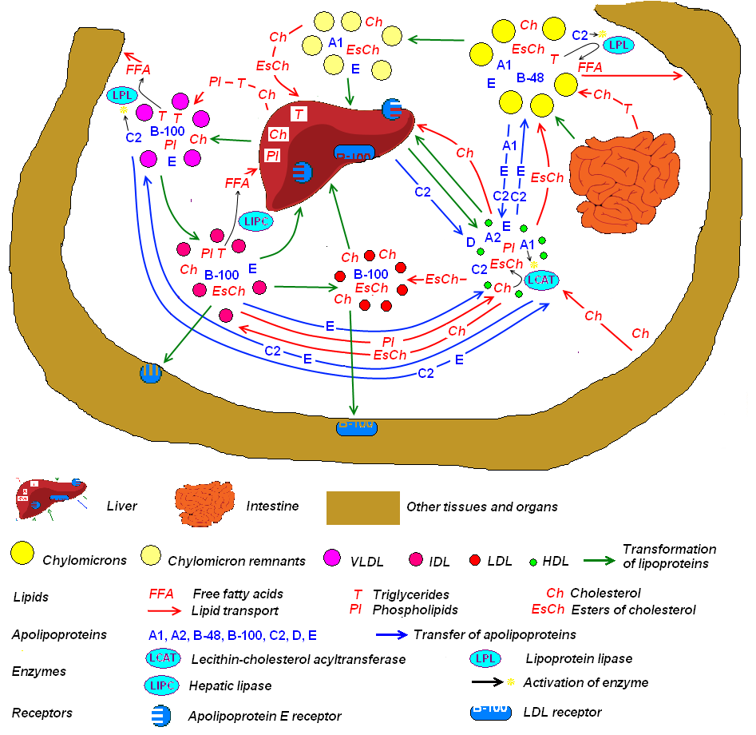
Lipids: what the blood is actually carrying
Fat does not dissolve in plasma, so the body packages it. Lipoproteins are shells of phospholipid and protein wrapped around a cargo of triglyceride and cholesterol, and they differ mainly in what they are carrying and where they are going. Chylomicrons haul dietary fat out of the gut. VLDL exports triglyceride made by the liver. As VLDL unloads triglyceride it shrinks into LDL, the cholesterol-rich particle that delivers cholesterol to tissues — and, when it lodges in an arterial wall and is oxidized, the particle that seeds an atherosclerotic plaque. HDL runs the other direction, collecting cholesterol for return to the liver.
The link between LDL cholesterol and atherosclerosis is about as strong as evidence in nutrition and medicine gets: it is supported by animal work, by human genetics (people who inherit lifelong low LDL have lifelong low cardiovascular risk), and by many large randomized drug trials in which lowering LDL lowered heart attacks. Note carefully what that establishes — that LDL is causal. It does not automatically mean any given food raises risk. HDL is a different story: low HDL reliably predicts risk, but drugs and genetic variants that raise HDL have generally failed to reduce events, which is a useful reminder that a marker that travels with disease is not necessarily a cause of it.
Which fats do what
Dietary fats change LDL in predictable directions. Saturated fat raises LDL cholesterol relative to unsaturated fat. Industrial trans fat from partially hydrogenated oil is worse still — it raises LDL and lowers HDL — which is why regulators in the United States withdrew its "generally recognized as safe" status in 2015 and it has since largely disappeared from the food supply, and why the World Health Organization has pushed for global elimination. Polyunsaturated and monounsaturated fats lower LDL when they take saturated fat's place.
That last clause carries most of the weight. Every food you remove is replaced by something, and the comparison is what the evidence measures. Trials and pooled cohorts agree that replacing saturated fat with polyunsaturated fat reduces cardiovascular events; replacing it with refined carbohydrate does not. A study that reports "saturated fat was not associated with heart disease" without saying what replaced it has answered a question nobody asked. Dietary cholesterol itself — the cholesterol in an egg yolk or shrimp — turns out to have a modest and highly variable effect on most people's blood LDL, which is why the old blanket 300 mg/day cap was dropped from United States dietary guidance in 2015.
| Fat type | Typical sources | Effect on LDL | Strength of evidence |
|---|---|---|---|
| Saturated | Fatty meat, butter, cheese, coconut and palm oil | Raises LDL vs unsaturated fat | Strong (many controlled feeding trials) |
| Industrial trans | Partially hydrogenated oil (now largely removed) | Raises LDL and lowers HDL | Strong; no safe intake identified |
| Monounsaturated | Olive oil, canola, avocado, most nuts | Lowers LDL when replacing saturated fat | Strong |
| Polyunsaturated (n−6) | Soybean, corn, sunflower oil, seeds | Lowers LDL; lowers events on substitution | Strong |
| Long-chain n−3 (EPA/DHA) | Salmon, sardines, mackerel, herring | Lowers triglyceride; little LDL effect | Moderate for fish in the diet; weak for general-population supplements |
Sodium, potassium, and blood pressure
High blood pressure is the largest single contributor to cardiovascular death worldwide, and sodium intake moves it. In controlled feeding trials, cutting sodium lowers blood pressure in a dose-dependent way, with larger drops in people who already have hypertension, in older adults, and in those who are constitutionally "salt sensitive." The current United States reference values for adults 19 years and older are an Adequate Intake of 1,500 mg/day of sodium and a separate Chronic Disease Risk Reduction intake of 2,300 mg/day — the level above which reducing intake is expected to lower chronic disease risk. Average intake in the United States runs near 3,400 mg/day, and roughly seven of every ten of those milligrams arrive already dissolved in packaged and restaurant food, not from the shaker at the table.
Potassium works in the other direction, promoting urinary sodium loss and vascular relaxation. The 2019 Adequate Intake for adults is 3,400 mg/day for men and 2,600 mg/day for women (these figures were revised downward from an earlier 4,700 mg value; values also differ for adolescents, pregnancy, and lactation). Most people fall well short, and the richest sources are unglamorous: potatoes, beans, leafy greens, bananas, tomatoes, yogurt, and other minimally processed plant and dairy foods. Viscous soluble fibers — the beta-glucan in oats and barley, psyllium — add a small independent LDL reduction by binding bile acids in the gut.
- LDL cholesterol is causally linked to atherosclerosis; HDL predicts risk but raising it has not reduced events.
- Saturated and industrial trans fats raise LDL; unsaturated fats lower it when they replace saturated fat — refined carbohydrate replacement does not help.
- Adult sodium references: AI 1,500 mg/day, CDRR 2,300 mg/day; average United States intake is about 3,400 mg/day, mostly from packaged and restaurant foods.
- Potassium AI for adults is 3,400 mg/day (men) and 2,600 mg/day (women); most people do not reach it.
Section 2Diet and diabetes
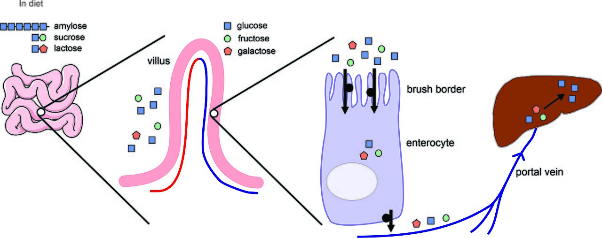
What goes wrong in type 2 diabetes
Every digestible carbohydrate you eat — starch, sucrose, lactose — is dismantled to monosaccharides before it crosses the intestinal wall, and most of it arrives in the blood as glucose. Insulin is the signal that tells muscle, liver, and adipose tissue to take that glucose up and store it. In type 2 diabetes, two things go wrong together: tissues respond poorly to insulin (insulin resistance), and the pancreatic beta cells eventually cannot secrete enough extra insulin to compensate. Blood glucose then climbs. The process is gradual, which is why prediabetes — a fasting glucose of 100–125 mg/dL or an HbA1c of 5.7–6.4% — can persist silently for years before diabetes is diagnosed at a fasting glucose of 126 mg/dL or higher, or an HbA1c of 6.5% or higher.
Excess adipose tissue, particularly visceral fat around the organs, is among the strongest predictors of insulin resistance. That is a statement about physiology, not about character: adipose tissue is metabolically active, releasing free fatty acids and inflammatory signals that interfere with insulin action, and how much of it a person carries is shaped by genetics, medications, sleep, stress, food access, and income at least as much as by anything a person chooses at a meal. Risk also rises with age, with family history, and is higher in several populations at lower body weights — South Asian populations in particular develop insulin resistance at lower body mass index than European-ancestry populations.
Carbohydrate: amount versus quality
The RDA for carbohydrate is 130 g/day for adults and children, a figure set by the brain's obligate glucose demand, rising to 175 g/day in pregnancy and 210 g/day in lactation. The Acceptable Macronutrient Distribution Range is 45–65% of energy from carbohydrate. Remember the energy yields underneath all of this: carbohydrate 4 kcal/g, protein 4 kcal/g, fat 9 kcal/g, alcohol 7 kcal/g.
What the evidence supports reasonably well is that carbohydrate quality tracks with type 2 diabetes risk more consistently than carbohydrate quantity. Higher whole-grain intake is associated with lower risk across many large cohorts; sugar-sweetened beverages are associated with higher risk, and the association survives adjustment for body weight, suggesting more than a simple calorie story. The evidence for glycemic index as a standalone tool is weaker and more inconsistent than its popularity implies — the index is measured on isolated foods in fasting subjects, and mixed meals behave differently. For people who already have type 2 diabetes, low-carbohydrate patterns improve HbA1c over three to six months, but the advantage over other patterns narrows by twelve months, and adherence explains much of the difference. Several patterns work; none is uniquely correct.
| Factor | Direction of association with type 2 diabetes | Evidence |
|---|---|---|
| Whole grains, legumes | Lower risk | Strong — consistent across large cohorts, plausible mechanism |
| Sugar-sweetened beverages | Higher risk | Strong observational; persists after weight adjustment |
| Body fatness (especially visceral) | Higher risk | Strong — cohorts plus intervention trials |
| Physical activity | Lower risk, partly independent of weight change | Strong |
| Glycemic index of individual foods | Higher GI, modestly higher risk | Preliminary/mixed — inconsistent across studies |
| Specific "superfoods," cinnamon, chromium | Claimed lower risk | Weak — small trials, surrogate endpoints, poor replication |
The weight question, handled carefully
The strongest prevention evidence in this whole chapter comes from the Diabetes Prevention Program, a randomized trial in adults with prediabetes. An intensive lifestyle program targeting roughly 7% body weight reduction and 150 minutes per week of activity cut new diagnoses of type 2 diabetes by 58% over about three years, outperforming the drug metformin, which cut them by 31%. The Finnish Diabetes Prevention Study found nearly the same figure independently. Later work has shown that substantial weight loss can put type 2 diabetes into remission in a meaningful fraction of people.
Two honest caveats belong beside that result. First, the trial delivered an intensive, supported, expensive program — sixteen structured sessions plus coaching — not an instruction to try harder, and its results say nothing about the worth of anyone who does not reach that outcome. Second, the intervention changed activity, food quality, and weight simultaneously, and activity improves insulin sensitivity even when body weight does not change at all. Metabolic health is not a single number, and improvements in blood pressure, lipids, fitness, and glucose are all real whether or not the scale cooperates.
- Type 2 diabetes combines insulin resistance with failing beta-cell compensation; prediabetes is a fasting glucose of 100–125 mg/dL or HbA1c 5.7–6.4%.
- Carbohydrate RDA is 130 g/day for adults and children (175 g/day pregnancy, 210 g/day lactation); energy yields are 4, 4, 9, and 7 kcal/g for carbohydrate, protein, fat, and alcohol.
- Carbohydrate quality — whole grains and legumes versus sugar-sweetened beverages — predicts risk more consistently than total carbohydrate.
- The Diabetes Prevention Program reduced incident type 2 diabetes by 58% with an intensive supported lifestyle program; activity helps insulin sensitivity independent of weight change.
Section 3Diet and cancer
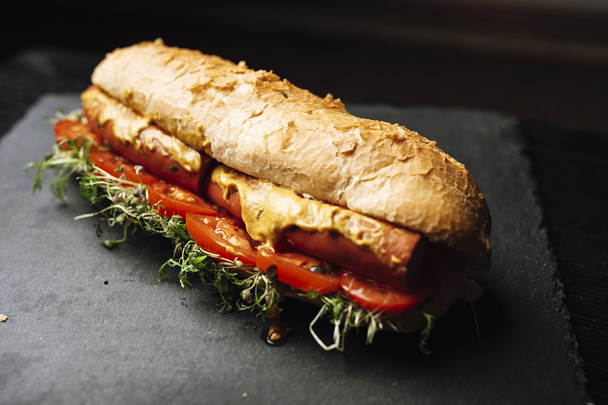
How the evidence is built — and why it is softer here
Cancer takes decades to develop, which makes it nearly impossible to randomize people to a diet and wait for tumours. Almost all diet-and-cancer evidence therefore comes from observational cohorts supported by mechanism, and the field grades it explicitly: expert panels label conclusions as convincing, probable, limited-suggestive, or insufficient. Learn to look for that label, because the popular press flattens all four into "linked to cancer." The strongest dietary-lifestyle finding is not about any single food at all — excess body fatness is judged to raise the risk of at least a dozen cancers, plausibly through insulin and IGF-1 signalling, chronic inflammation, and increased oestrogen production by adipose tissue.
Fiber, processed meat, and alcohol
Fiber and whole grains. The evidence that whole grains and fiber-containing foods lower colorectal cancer risk is judged strong by expert panels, on the strength of consistent cohort data plus a believable mechanism: fiber speeds transit, dilutes carcinogens, and feeds colonic bacteria that produce butyrate, the preferred fuel of colonocytes. Be honest about the gap, though — randomized trials that added fiber supplements and looked for fewer recurrent adenomas over a few years were null. The most defensible reading is that fiber-rich foods over decades help, and that a fiber supplement bolted onto an otherwise unchanged diet for four years is not the same intervention. Adult fiber Adequate Intakes are 38 g/day for men and 25 g/day for women aged 19–50, falling to 30 g/day and 21 g/day after age 50, derived from about 14 g per 1,000 kcal.
Processed meat. In 2015 the International Agency for Research on Cancer classified processed meat as a Group 1 carcinogen and red meat as Group 2A, based mainly on colorectal cancer. This is the single most misreported result in nutrition. IARC groups describe how certain we are that something can cause cancer, not how much cancer it causes — tobacco smoking and processed meat share Group 1 while differing enormously in effect size. The underlying number: about 50 g of processed meat per day is associated with roughly an 18% higher relative risk of colorectal cancer, which against a modest baseline is a small absolute increase. Plausible mechanisms include N-nitroso compounds from nitrite curing, heterocyclic amines and polycyclic aromatic hydrocarbons formed in high-heat cooking, and heme iron.
Alcohol. Ethanol is also a Group 1 carcinogen, and here the evidence is stronger and the mechanism cleaner. Alcohol dehydrogenase converts ethanol to acetaldehyde, itself a carcinogen that damages DNA; aldehyde dehydrogenase then clears it, and people carrying a low-activity ALDH2 variant — common in East Asian populations, and the cause of the flushing response — accumulate more acetaldehyde and show higher oesophageal cancer risk when they drink. Alcohol is causally linked to cancers of the mouth, pharynx, larynx, oesophagus, liver, colorectum, and female breast, and no threshold below which cancer risk is unaffected has been identified. The old "J-curve" suggesting cardiac benefit from moderate drinking has weakened considerably; much of it appears to reflect former drinkers who quit because they were ill being counted as abstainers, and genetic studies do not support cardioprotection. Ethanol also supplies 7 kcal/g with no nutrient content.
| Exposure | Judgement | What it means in practice |
|---|---|---|
| Alcoholic drinks | IARC Group 1 — carcinogenic to humans | Causal for several cancer sites; no identified safe threshold for cancer |
| Processed meat | IARC Group 1 | Certainty is high; effect size is small — about 18% relative risk per 50 g/day for colorectal cancer |
| Red meat (unprocessed) | IARC Group 2A — probably carcinogenic | Weaker and less consistent than processed meat |
| Whole grains, fiber-rich foods | Probable/convincing protective | Cohorts plus mechanism; fiber supplement trials were null |
| Excess body fatness | Convincing risk factor for many cancers | Acts through insulin/IGF-1, inflammation, oestrogen |
| Beta-carotene supplements (smokers) | Harmful in randomized trials | Two large trials found more lung cancer; supplements are not food |
- Diet-and-cancer evidence is mostly observational and is formally graded; look for the grade before believing the headline.
- Fiber-rich whole foods are linked to lower colorectal cancer risk, while short fiber-supplement trials were null — food and supplement are not interchangeable.
- IARC Group 1 = high certainty of carcinogenicity, not high magnitude; processed meat carries roughly an 18% relative risk increase per 50 g/day for colorectal cancer.
- Alcohol is causally linked to at least seven cancer sites via acetaldehyde, with no identified safe threshold, and supplies 7 kcal/g.
Section 4Diet and bone health

Bone is a bank account you fill early
Bone is living tissue in permanent turnover: osteoclasts resorb it, osteoblasts rebuild it, and the balance between them shifts across the lifespan. Deposition outpaces resorption through childhood and adolescence, so that most adults reach peak bone mass — the maximum bone they will ever have — by their late twenties. After that the balance tips toward net loss, slowly at first and then rapidly in women for several years after menopause when oestrogen withdrawal accelerates resorption. This is why calcium requirements peak in adolescence rather than in old age, and why loading the skeleton with weight-bearing activity in youth pays dividends decades later.
Osteoporosis is the endpoint: bone mass low enough and microarchitecture degraded enough that fractures occur under trivial loads. It is defined on bone densitometry as a T-score of −2.5 or lower, with −1.0 to −2.5 called osteopenia. It is silent until it breaks something — classically hip, vertebra, or wrist — and hip fracture in an older adult carries substantial mortality.
Calcium and vitamin D: the numbers
Calcium RDAs in the United States are 1,300 mg/day for ages 9–18, 1,000 mg/day for men aged 19–70 and women aged 19–50, and 1,200 mg/day for women aged 51 and older and men aged 71 and older. Pregnancy and lactation do not raise the adult requirement — maternal absorption efficiency rises instead. The Tolerable Upper Intake Level is 2,500 mg/day for adults aged 19–50 and 2,000 mg/day from 51 on; chronically exceeding it is associated with kidney stones and hypercalcaemia.
Vitamin D is not really a vitamin — skin makes it from 7-dehydrocholesterol under UVB light — but latitude, season, sunscreen, clothing, skin pigmentation, and indoor life make dietary intake matter. Its job in bone is indirect and essential: calcitriol drives intestinal calcium absorption. The RDA is 600 IU (15 mcg)/day for ages 1–70, including pregnancy and lactation, and 800 IU (20 mcg)/day from age 71, with a Tolerable Upper Intake Level of 4,000 IU (100 mcg)/day for adults. Severe deficiency produces rickets in growing children, where unmineralized growth plates bow under load, and osteomalacia in adults, a soft-bone syndrome with bone pain and weakness — distinct from osteoporosis, in which the bone is normally mineralized but there is simply less of it.
Absorption is where dietary detail earns its keep. Roughly 30% of the calcium in milk is absorbed; low-oxalate greens such as kale and bok choy do better per unit calcium, while spinach, despite a high calcium content, is nearly useless as a source because oxalate binds the mineral. Fractional absorption falls as a single dose rises, so calcium spread across the day is absorbed more efficiently than the same amount taken at once. Adequate protein supports bone rather than harming it — the old "acid-ash" idea that dietary protein leaches calcium from the skeleton has not survived testing. Very high sodium intakes do modestly increase urinary calcium loss, one more reason the sodium discussion in Section 1 keeps reappearing.
| Nutrient | Reference intake (adults) | Notes and variation | Deficiency |
|---|---|---|---|
| Calcium | RDA 1,000 mg/day (men 19–70; women 19–50) | 1,200 mg/day women 51+ and men 71+; 1,300 mg/day ages 9–18; UL 2,500 mg/day (19–50), 2,000 mg/day (51+) | Low peak bone mass; contributes to osteoporosis |
| Vitamin D | RDA 600 IU (15 mcg)/day, ages 1–70 | 800 IU (20 mcg)/day from age 71; unchanged in pregnancy/lactation; UL 4,000 IU (100 mcg)/day | Rickets (children), osteomalacia (adults) |
| Protein | RDA 0.8 g/kg body weight/day | Higher in pregnancy, lactation, and likely in older adults | Muscle and bone loss; poor fracture recovery |
| Vitamin K | AI 120 mcg/day (men), 90 mcg/day (women) | Needed to carboxylate osteocalcin; supplement trials for fracture are preliminary | Impaired clotting; bone role less certain |
| Magnesium | RDA 400–420 mg/day (men), 310–320 mg/day (women) | Varies with age; structural component of bone mineral | Hypocalcaemia, neuromuscular irritability |
- Peak bone mass is reached by the late twenties; adolescence is the highest-requirement window (calcium RDA 1,300 mg/day, ages 9–18).
- Adult calcium RDA is 1,000 mg/day, rising to 1,200 mg/day for women 51+ and men 71+; UL 2,500 mg/day (19–50) and 2,000 mg/day (51+).
- Vitamin D RDA is 600 IU (15 mcg)/day to age 70 and 800 IU (20 mcg)/day after; deficiency causes rickets in children and osteomalacia in adults.
- Bioavailability matters — oxalate in spinach blocks calcium absorption, while low-oxalate greens and fortified foods deliver it well.
Section 5Dietary patterns
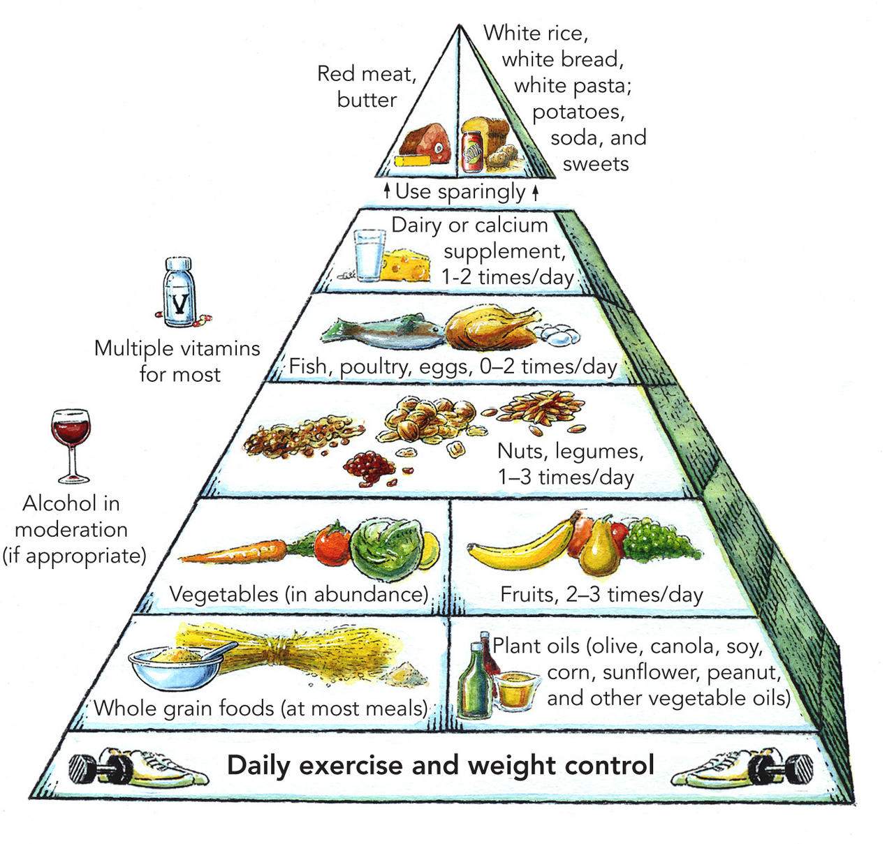
Why patterns beat single nutrients
The history of nutrition research is littered with nutrients that looked essential in observational data and then failed, or backfired, in trials. Beta-carotene tracked with lower lung cancer risk in cohorts; two large randomized trials in smokers found more lung cancer in the supplemented groups. High-dose vitamin E was expected to prevent prostate cancer and modestly increased it. Antioxidant supplements broadly have not reproduced the benefits of antioxidant-rich diets. The pattern in these failures is instructive.
There are four reasons the single-nutrient approach keeps failing. The food matrix matters — a nutrient arrives inside a structure of fiber, water, and thousands of other compounds that changes its absorption and effect. Nutrients interact — calcium needs vitamin D; iron absorption depends on vitamin C and is blocked by phytate. Diets are substitutions, not additions — eating more legumes means eating less of something else, and the study measures the swap. And nutrients travel together, so the "effect" of one is statistically tangled with everything else that keeps it company on the plate. A dietary pattern captures all four automatically. That is not a rhetorical preference; it is the best available explanation for why pattern-level trials have succeeded where nutrient-level trials have not.
Three patterns with real trial evidence
Mediterranean. Built on vegetables, fruit, legumes, whole grains, nuts, fish, and extra-virgin olive oil as the principal fat, with modest dairy and little red or processed meat. The PREDIMED trial randomized about 7,400 adults at high cardiovascular risk and found roughly a 30% relative reduction in major cardiovascular events in the Mediterranean-diet groups. Two caveats belong with that number: the trial was retracted and republished in 2018 after randomization irregularities were found at some sites, with broadly similar conclusions on reanalysis, and the participants were at high baseline risk, so the absolute benefit in a low-risk population would be smaller.
DASH. Dietary Approaches to Stop Hypertension is the cleanest feeding trial in the field: fruit, vegetables, low-fat dairy, whole grains, nuts, and reduced saturated fat, with all food provided and body weight held constant. It lowered systolic blood pressure by about 5.5 mmHg overall and by roughly 11 mmHg in participants who already had hypertension — drug-like effects from food alone, over eight weeks. The follow-on DASH-Sodium trial showed the pattern and sodium reduction were additive, with the largest reductions when both were applied.
Plant-based. A spectrum rather than a category, from fully vegan through vegetarian to mostly-plant omnivorous. Large cohorts of vegetarians report lower rates of type 2 diabetes, lower blood pressure, and lower cardiovascular mortality. This evidence is observational, and vegetarians in these cohorts also smoke less and exercise more, so residual confounding is a real concern. It also matters which plant-based diet: a pattern of whole grains, legumes, nuts, and vegetables behaves very differently from one built on refined starch and sugar, even though both are technically plant-based. Fully plant-based eating requires planned attention to vitamin B12, which occurs naturally only in animal foods, and often to iron, zinc, iodine, calcium, and long-chain omega-3s.
| Pattern | Defining features | Best-supported outcome | Evidence type |
|---|---|---|---|
| Mediterranean | Olive oil as main fat; vegetables, legumes, nuts, fish; little processed meat | Fewer major cardiovascular events | Randomized trial in high-risk adults, plus cohorts |
| DASH | Fruit, vegetables, low-fat dairy, whole grains, nuts; low saturated fat and sodium | Blood pressure reduction (about −5.5 mmHg systolic; more if hypertensive) | Controlled feeding trial — strongest design available |
| Plant-based / vegetarian | Little or no animal food; quality varies enormously within the category | Lower type 2 diabetes and cardiovascular mortality | Observational cohorts — confounding possible |
| Traditional Okinawan, Nordic, and others | Regionally distinct, share the same base foods | Similar directional benefits | Mostly observational; growing |
What they share — and what "healthy" cannot mean
Line the successful patterns up and the overlap is more striking than the differences: plenty of vegetables, fruit, legumes, whole grains, and nuts; unsaturated fat as the main fat; fish or plant proteins in place of much processed meat; limited added sugar, sodium, and ultra-processed food. Beyond that, the patterns diverge freely on dairy, on meat, on grain type, on cooking fat — and they succeed anyway. There is no single correct diet, and the same principles can be expressed through Mediterranean, South Asian, West African, Latin American, East Asian, or any other cuisine.
Two practical honesties finish the chapter. First, adherence beats optimization — a pattern a person can actually eat, afford, buy near home, and cook produces better outcomes than a theoretically superior pattern they abandon in a month. Second, food is not a moral test. Cost, time, transport, culture, family, disability, and food environment shape what lands on a plate at least as much as knowledge does, and framing eating as virtue and vice reliably makes both nutrition and mental health worse. The clinical and educational job is to describe physiology and evidence accurately, and to leave the moralizing out of it.
- Single-nutrient supplement trials have repeatedly failed because of the food matrix, nutrient interactions, substitution effects, and correlated intakes.
- PREDIMED (Mediterranean) reduced major cardiovascular events by roughly 30% in high-risk adults; the trial was retracted and republished in 2018 with similar conclusions.
- DASH lowered systolic blood pressure by about 5.5 mmHg overall and roughly 11 mmHg in hypertensive participants, with sodium reduction additive.
- Successful patterns overlap heavily in their base foods; adherence, affordability, and cultural fit matter more than choosing between them.
The chapter in one breath
- LDL cholesterol is causal in atherosclerosis; saturated and industrial trans fats raise it, and unsaturated fats lower it when they replace saturated fat — substitution is the question.
- Adult sodium references are an AI of 1,500 mg/day and a CDRR of 2,300 mg/day against an average intake near 3,400 mg/day, most of it from packaged and restaurant food; potassium AI is 3,400 mg/day (men) and 2,600 mg/day (women).
- Type 2 diabetes is insulin resistance plus beta-cell failure; carbohydrate quality tracks risk better than quantity, and the RDA for carbohydrate is 130 g/day (175 g/day pregnancy, 210 g/day lactation).
- The Diabetes Prevention Program cut incident diabetes by 58% with an intensive supported lifestyle program — and activity improves insulin sensitivity even without weight change.
- Diet-and-cancer evidence is mostly observational and formally graded; IARC Group 1 signals certainty, not magnitude, and processed meat carries about an 18% relative risk increase per 50 g/day for colorectal cancer.
- Alcohol is a Group 1 carcinogen acting through acetaldehyde, with no identified safe threshold for cancer, and it supplies 7 kcal/g (carbohydrate and protein 4, fat 9).
- Bone: peak mass by the late twenties; calcium RDA 1,000 mg/day for most adults (1,200 mg/day for women 51+ and men 71+, 1,300 mg/day ages 9–18) and vitamin D 600 IU (15 mcg)/day to age 70, 800 IU (20 mcg)/day after — deficiency causing rickets or osteomalacia.
- Dietary patterns — Mediterranean, DASH, well-planned plant-based — outperform single nutrients because food comes as a matrix, nutrients interact, and every choice is a substitution.
ReferenceWords worth knowing
A quick reference for the terms in this chapter — skim it now, or circle back whenever a word trips you up.
- Added sugars
- Sugars and syrups added during processing or preparation, as opposed to those naturally present in fruit or milk; United States guidance recommends keeping them under 10% of daily energy for ages 2 and older.
- Atherosclerosis
- The build-up of lipid-rich plaque within artery walls, driven substantially by LDL particles that lodge and are oxidized there.
- Bone mineral density
- The amount of mineral per unit area of bone, measured by densitometry and reported as a T-score; the standard for diagnosing osteoporosis.
- Cardiovascular disease
- Umbrella term for disorders of the heart and blood vessels, including coronary artery disease, stroke, and peripheral arterial disease.
- DASH diet
- Dietary Approaches to Stop Hypertension — a controlled-trial pattern of fruit, vegetables, low-fat dairy, whole grains, and nuts that lowers blood pressure independent of weight change.
- Dietary fiber
- Carbohydrate that resists human digestive enzymes; Adequate Intakes are about 14 g per 1,000 kcal, or 38 g/day for men and 25 g/day for women aged 19–50.
- Dietary pattern
- The overall combination of foods and beverages habitually consumed, analysed as a whole rather than nutrient by nutrient.
- Glycemic index
- A ranking of how much an isolated carbohydrate food raises blood glucose relative to a reference; useful conceptually, but inconsistent as a standalone predictor in mixed meals.
- HbA1c
- Glycated haemoglobin, reflecting average blood glucose over roughly the previous two to three months; 5.7–6.4% indicates prediabetes and 6.5% or higher is diagnostic of diabetes.
- Insulin resistance
- Reduced responsiveness of muscle, liver, and adipose tissue to insulin, requiring higher insulin output to maintain normal blood glucose.
- LDL cholesterol
- Cholesterol carried on low-density lipoprotein particles; causally linked to atherosclerotic cardiovascular disease.
- Mediterranean diet
- A pattern centred on vegetables, legumes, whole grains, nuts, fish, and olive oil as the principal fat, with limited red and processed meat.
- Osteomalacia
- Softening of adult bone from inadequate mineralization, usually reflecting vitamin D or calcium deficiency; the adult counterpart of rickets.
- Osteoporosis
- Low bone mass with degraded microarchitecture and increased fracture risk, defined as a T-score of −2.5 or lower; the remaining bone is normally mineralized.
- Peak bone mass
- The greatest amount of bone tissue a person accrues, typically reached by the late twenties, after which net loss begins.
- Prediabetes
- Blood glucose above normal but below diagnostic thresholds — fasting glucose 100–125 mg/dL or HbA1c 5.7–6.4%.
- Processed meat
- Meat preserved by smoking, curing, salting, or the addition of chemical preservatives; classified by IARC as Group 1 based on colorectal cancer evidence.
- Saturated fat
- Fatty acids with no carbon–carbon double bonds; raises LDL cholesterol relative to unsaturated fat.
- Sodium
- The cation whose intake most strongly influences blood pressure; adult AI 1,500 mg/day, with a Chronic Disease Risk Reduction intake of 2,300 mg/day.
- Trans fat
- Unsaturated fat with at least one double bond in the trans configuration; the industrial form from partially hydrogenated oil raises LDL and lowers HDL and has been largely removed from the food supply.
- Unsaturated fat
- Fatty acids containing one (monounsaturated) or more (polyunsaturated) double bonds; lowers LDL when substituted for saturated fat.
- Whole grain
- A grain retaining bran, germ, and endosperm in their original proportions; consistently associated with lower type 2 diabetes and colorectal cancer risk.
Check yourself
Assessment & Diet Planning
Everything in the previous twelve chapters was about what nutrients do. This chapter is about how anyone actually finds out what a real person is eating — and what to do with that information. You will learn the four-part framework professionals use to size up nutritional status, why every method of measuring food intake is wrong in a predictable direction, how to read the two panels on a package that are legally required to tell you the truth, how to build a day of eating that genuinely meets the reference intakes, and how to tell a defensible nutrition claim from a confident-sounding one. Throughout, the posture is the same one the evidence supports: describe physiology, weigh evidence, and leave moralizing about food and bodies out of it.
By the end of this chapter you can
- Describe the ABCD framework of nutrition assessment and state what each domain can and cannot establish.
- Distinguish nutrition screening from nutrition assessment, and explain why no single measurement diagnoses nutritional status.
- Compare the 24-hour recall, the food record, and the food frequency questionnaire, and name the characteristic error of each.
- Explain why underreporting is systematic rather than dishonest, and how recovery biomarkers such as doubly labeled water revealed it.
- Read a Nutrition Facts or Supplement Facts panel: serving size, %DV, the 5/20 heuristic, and the ingredient list.
- Use the DRI family — EAR, RDA, AI, UL, AMDR, EER — correctly when planning intake for one person versus a group.
- Build a day of eating that meets energy, macronutrient, fiber, and priority micronutrient targets, and state which values change with age, sex, or pregnancy.
- Evaluate a nutrition claim by study design, effect size, and conflict of interest, and recognize the recurring signatures of pseudoscience.
Section 1Nutrition assessment

Screening asks a question; assessment answers it
Two different activities get called "checking someone's nutrition." Nutrition screening is a fast, low-burden filter applied to everyone in a setting — a few questions about recent unintentional weight change, appetite, and ability to eat — designed to be sensitive rather than precise. Its only job is to flag who needs a closer look. Nutrition assessment is the closer look: a structured, multi-source evaluation that combines measurements, laboratory data, physical findings, and a detailed intake history into a picture no one of those sources could produce alone.
The reason assessment is deliberately multi-source is that every individual measure is ambiguous. A low body weight can reflect genetics, disease, or an ordinary healthy build. A low serum ferritin is fairly specific for depleted iron stores, but a normal or high one proves nothing when inflammation is present. A cracked mouth corner is consistent with several B-vitamin inadequacies and also with ill-fitting dentures. Convergence across domains is what turns a suggestive finding into a defensible conclusion.
The four domains: A, B, C, D
Anthropometric measures are physical dimensions of the body: height, weight, body mass index (weight in kilograms divided by height in meters squared), waist circumference, mid-upper-arm circumference, and skinfold thickness. In children, the meaningful anthropometric output is not a single number but a trajectory plotted on a growth reference — a child tracking steadily along a low percentile is a very different situation from a child who has crossed downward through two percentile channels. BMI deserves particular care: it was designed to describe populations, it does not distinguish muscle from fat, and its relationship to health outcomes varies by age, ancestry, and body composition. It is a screening input, not a diagnosis, and it says nothing about how a person eats.
Biochemical data are laboratory measures of nutrients, their metabolites, or their functional consequences. Serum 25-hydroxyvitamin D is the accepted marker of vitamin D status because it integrates both dietary and sun-derived supply. Serum ferritin reflects iron stores, hemoglobin falls only after those stores are exhausted, and soluble transferrin receptor helps separate iron deficiency from the anemia of inflammation. Serum vitamin B12 is an imperfect first pass; methylmalonic acid and homocysteine rise before B12 falls out of range and are the more sensitive functional markers. One important correction to older teaching: albumin and prealbumin are not nutrition markers. They fall with inflammation, injury, and illness regardless of intake, and current professional guidance treats them as markers of inflammatory burden rather than of protein status — a good example of strong evidence overturning a convenient shortcut.
Clinical assessment is the physical examination and history: skin, hair, nails, eyes, mouth, and muscle and fat stores, alongside the medical history and medications. Physical signs are late and frequently non-specific — by the time they appear, depletion has usually been prolonged, and most signs are compatible with several nutrient inadequacies and with non-nutritional causes. A handful are close to diagnostic in the right context, such as Bitot spots or perifollicular hemorrhage, but most earn their value only alongside the other three domains. Dietary assessment is the intake history, which in practice means far more than a food list. It includes meal patterns, cooking facilities, food security, budget, chewing and swallowing ability, gastrointestinal symptoms, allergies, medications that affect nutrient absorption, and cultural and religious food practices, all of which determine whether any plan built later is realistic.
| Domain | Typical measures | Answers well | Fails at |
|---|---|---|---|
| Anthropometric | Height, weight, BMI, waist circumference, MUAC, skinfolds, growth trajectory | Change over time; population-level screening | Body composition; any individual diagnosis from one number |
| Biochemical | Serum 25-hydroxyvitamin D, ferritin, hemoglobin, B12 with methylmalonic acid, urinary sodium | Objective nutrient status; subclinical depletion | Interpretation during inflammation; timing lag; cost |
| Clinical | Skin, hair, nails, eyes, oral exam, muscle and fat wasting, medical history, medications | Advanced deficiency; functional barriers to eating | Early or mild inadequacy; signs overlap across nutrients |
| Dietary | Recall, record, food frequency questionnaire, food security screen | What is actually eaten and why | Accuracy — every method carries systematic reporting error |
Physical signs worth recognizing
Classic deficiency syndromes are uncommon where the food supply is fortified and varied, but they are not extinct, and they cluster in predictable situations: restricted or highly repetitive diets, malabsorption, bariatric surgery, alcohol use disorder, and food insecurity. Recognizing them is a matter of pattern, not memorization for its own sake.
| Nutrient | Deficiency syndrome | Recognizable features |
|---|---|---|
| Vitamin C | Scurvy | Perifollicular hemorrhage, corkscrew hairs, bleeding swollen gums, poor wound healing |
| Vitamin A | Xerophthalmia | Night blindness first, then conjunctival dryness and Bitot spots; a leading preventable cause of childhood blindness worldwide |
| Thiamin (B1) | Beriberi; Wernicke encephalopathy | Peripheral neuropathy and high-output heart failure; or confusion, ataxia, and eye-movement abnormalities |
| Niacin (B3) | Pellagra | The classic triad: dermatitis in sun-exposed skin, diarrhea, dementia |
| Iron | Iron-deficiency anemia | Fatigue, pallor, spoon-shaped nails (koilonychia); ferritin falls before hemoglobin does |
| Iodine | Goiter; congenital hypothyroidism | Thyroid enlargement; irreversible neurodevelopmental harm when deficiency occurs in pregnancy |
| Vitamin D | Rickets (children); osteomalacia (adults) | Bowed legs and widened growth plates; bone pain and proximal weakness |
| Vitamin B12 | Megaloblastic anemia with neurologic injury | Numbness, gait change, cognitive change; the neurologic damage can become permanent |
- Screening is a sensitive filter for everyone; assessment is the detailed multi-source evaluation of those flagged.
- The four domains are Anthropometric, Biochemical, Clinical, Dietary — each is ambiguous alone and informative together.
- BMI is a population screening tool that cannot distinguish muscle from fat and cannot diagnose an individual.
- Albumin and prealbumin reflect inflammation, not protein intake — a widely taught claim that current evidence does not support.
- Physical deficiency signs appear late and are often non-specific; biochemical change usually precedes them.
Section 2Measuring intake

Three ways to ask, and what each is for
The 24-hour dietary recall is a structured interview covering everything consumed in the previous day. Done properly it follows a multiple-pass method: a quick uninterrupted list, then prompts for commonly forgotten items (condiments, drinks, snacks, additions to coffee), then time and occasion, then detailed portion and preparation questions, then a final review sweep. It has one enormous practical advantage — it is retrospective, so the person cannot change their behavior in response to being measured — and one enormous limitation: a single day is not a usual diet. Day-to-day variation within one person is large, especially for nutrients concentrated in a few foods, so estimating usual intake for an individual requires several nonconsecutive days including at least one weekend day.
The food record (food diary) is prospective: the person writes down foods as they eat them, usually for three to seven days, with weights or measured portions if the study demands precision. Records avoid memory error almost entirely. Their signature problem is reactivity — recording changes eating. People simplify meals, skip the snack they would rather not write down, or eat less because logging is effortful. Burden is high and adherence decays sharply after the first two or three days.
The food frequency questionnaire (FFQ) asks how often each of roughly 100 to 150 foods was eaten over a long window, typically the past month or year, sometimes with portion-size options. An FFQ is cheap, self-administered, and captures long-run patterns and episodically eaten foods that a few recall days would miss entirely. It is poor at absolute quantities — the food list is finite and portion assumptions are coarse — so its legitimate use is ranking people relative to one another in large studies, not stating that a given person consumed 1,840 mg of sodium. A brief screener is a short FFQ aimed at one target (fruit and vegetable servings, added sugars, calcium), useful for a rough read and nothing more.
| Method | Time frame | Best used for | Characteristic error |
|---|---|---|---|
| 24-hour recall | Previous day; repeat on several nonconsecutive days | Group mean intakes; usual intake with enough repeats | Memory lapses, portion misestimation, underreporting; one day is not usual intake |
| Food record | 3–7 consecutive days, prospective | Detailed, near-real-time intake; clinical follow-up | Reactivity — recording alters eating; high burden; adherence fades |
| Food frequency questionnaire | Past month to past year | Ranking individuals in large epidemiologic studies | Poor absolute accuracy; fixed food list; portion assumptions |
| Brief screener | Recent weeks | Fast targeted estimate of one dietary component | Very coarse; not valid for full nutrient analysis |
| Direct observation / weighed intake | Meal or day | Reference-quality data in controlled settings | Expensive, unrepresentative of free-living eating |
Every method errs in the same direction
Self-reported energy intake is systematically lower than measured energy expenditure. We know this with confidence because of doubly labeled water, a reference method in which a person drinks water labeled with stable isotopes of hydrogen and oxygen; the differential disappearance of the two isotopes over one to two weeks yields total energy expenditure with high accuracy. When self-reports are compared against it in weight-stable adults, reported energy commonly falls short by roughly ten to thirty percent, and the shortfall is not evenly distributed — it is larger in people with higher body weight, and larger for foods carrying social judgment. Parallel recovery biomarkers exist for individual nutrients: 24-hour urinary nitrogen for protein, and 24-hour urinary sodium and potassium for those minerals.
The important interpretation is that this is measurement error, not deceit. Its components are ordinary human cognition: forgetting items eaten while distracted, estimating portions poorly because almost nobody has practiced it, telescoping (misplacing a food into the wrong day), and the social pressure of describing your eating to a stranger holding a clipboard. Because the error is directional rather than random, it does not average out with a bigger sample — which is why nutritional epidemiology invests so heavily in calibration substudies and biomarkers.
From foods to nutrients
Reported foods become nutrient numbers by lookup in a food composition database, and that translation adds its own uncertainty. Composition varies with cultivar, soil, season, storage, and cooking method; a database entry is a representative average, not the sandwich in front of you. Some nutrients are especially unstable — folate and vitamin C degrade with heat and time — and mixed dishes must be broken into components or matched to a generic recipe. Digital tracking apps do not escape any of this; they often add a crowd-sourced database whose entries are unverified, so the apparent precision of "312 kcal" carries far more error than three digits imply.
- Recalls are retrospective and non-reactive; records are prospective and reactive; FFQs capture long-run patterns but rank rather than quantify.
- A single day cannot represent an individual's usual intake; multiple nonconsecutive days are required.
- Underreporting of energy is systematic, commonly on the order of 10–30 percent, and was established by comparison with doubly labeled water.
- Directional error does not shrink with sample size — only calibration and recovery biomarkers address it.
- Food composition databases add a second layer of uncertainty; reported nutrient totals are estimates, not measurements.
Section 3Reading a food label
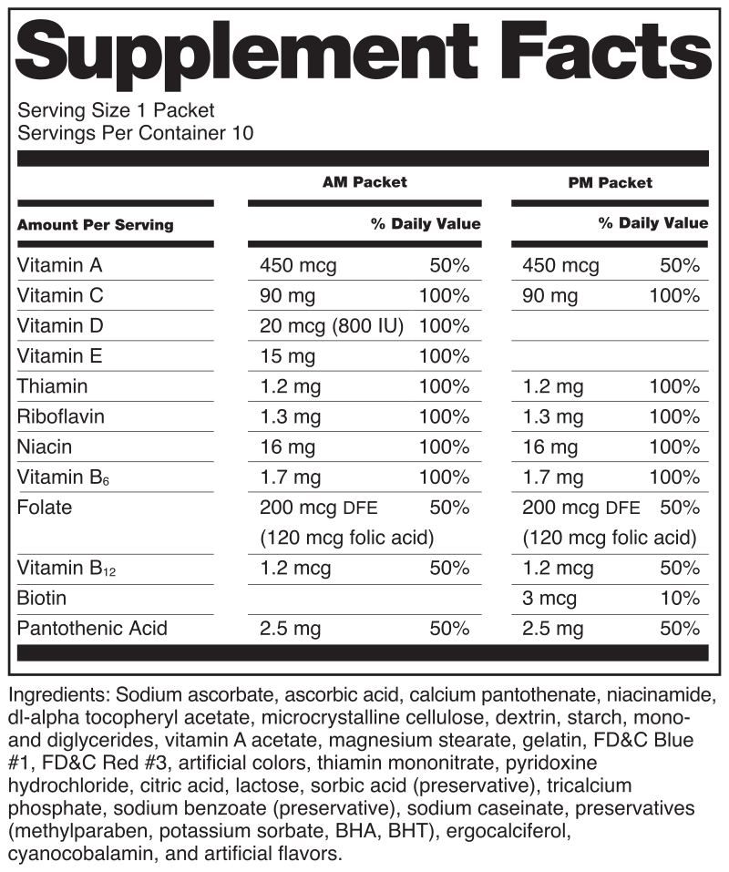
Serving size is a reporting unit, not a recommendation
Every number on a Nutrition Facts panel is scaled to the serving size printed at the top, so that line governs the interpretation of everything below it. Serving sizes are not nutrition advice and never were. In the United States they derive from Reference Amounts Customarily Consumed — regulatory values based on survey data describing how much people actually eat at one sitting, which is why the 2016 label overhaul raised many of them and required that certain packages between 200 and 300 percent of a reference amount carry a dual-column panel showing both "per serving" and "per package." The practical habit is simple: before reading any other line, compare the stated serving with the amount you are realistically going to eat, and scale mentally.
The same overhaul made calories larger and bolder, added a mandatory Added Sugars line in grams with a %DV, replaced the required vitamin A and vitamin C declarations with vitamin D and potassium, and required actual quantities alongside %DV for the declared micronutrients. Calcium and iron remained required. Fiber, sugars, and protein grams are also given; %DV for protein is not required unless a protein claim is made, because protein adequacy is rarely the limiting issue in the populations the label serves.
%DV and the 5/20 heuristic
The Daily Value is a single set of reference numbers — deliberately one set, not a table by age and sex — chosen so one label works for the whole general population aged four and older. The %DV tells you what fraction of that reference a serving supplies, anchored to a 2,000-calorie reference diet. That anchoring is the main caveat: your own energy needs may sit well above or below 2,000 kcal, in which case the percentages for energy-scaled nutrients drift accordingly.
| Nutrient | Daily Value (adults and children 4+) | Reading note |
|---|---|---|
| Total fat | 78 g | Type matters more than total; the panel breaks out saturated and trans |
| Saturated fat | 20 g | Dietary Guidelines advise keeping it under 10 percent of calories |
| Sodium | 2,300 mg | Most sodium comes from packaged and restaurant food, not the shaker |
| Total carbohydrate | 275 g | Includes fiber, total sugars, and added sugars |
| Dietary fiber | 28 g | Most people fall far short of this |
| Added sugars | 50 g | Excludes sugars naturally present in fruit and dairy |
| Protein | 50 g | %DV optional unless a protein claim appears |
| Vitamin D | 20 mcg (800 IU) | Newly mandatory in the 2016 format |
| Calcium | 1,300 mg | Declared in milligrams as well as %DV |
| Iron | 18 mg | Set near the higher requirement, so %DV overstates adequacy for some |
| Potassium | 4,700 mg | Newly mandatory; a shortfall nutrient for most adults |
The 5/20 rule makes %DV usable at a glance: 5 percent DV or less per serving is low in that nutrient, and 20 percent DV or more is high. It works in both directions. You can use it to find foods high in the things most people under-consume — fiber, potassium, calcium, vitamin D — and to notice when a single serving carries a large share of the sodium or added-sugars reference. Regulated nutrient content claims follow the same arithmetic: "good source of" means 10–19 percent DV per serving, "excellent source" or "high in" means 20 percent DV or more, and "low sodium" means 140 mg or less per serving.
The ingredient list, allergens, and claims
Ingredients are listed in descending order by weight, which is the single most informative structural fact on the package: whatever appears first contributes the most mass. The list also exposes what the Nutrition Facts panel aggregates. Added sugars arrive under many names — sucrose, high-fructose corn syrup, cane juice, dextrose, maltose, honey, agave, fruit juice concentrate, malt syrup — and splitting sweeteners across several names moves each one further down the list even though their combined weight is large. Reading the two panels together defeats that: the Added Sugars gram line is unaffected by how the ingredient is named.
In the United States, the nine major allergens must be declared in plain language — milk, eggs, fish, crustacean shellfish, tree nuts, peanuts, wheat, soybeans, and sesame, the last added effective January 1, 2023. Beyond that, distinguish three tiers of claim. Nutrient content claims are arithmetic and verifiable. Health claims linking a food to a disease require prior authorization based on significant scientific agreement, and qualified health claims must disclose the weakness of their evidence. Structure/function claims — "supports immune health," "promotes healthy digestion" — require no premarket authorization and carry a disclaimer stating the claim has not been evaluated by the Food and Drug Administration. That third tier is where most marketing language lives.
- Every panel number scales to the serving size, which reflects customary consumption rather than a recommendation.
- %DV is anchored to a 2,000-calorie reference diet; the 5/20 rule reads 5 percent DV as low and 20 percent DV as high.
- Current DVs include sodium 2,300 mg, fiber 28 g, added sugars 50 g, potassium 4,700 mg, and vitamin D 20 mcg.
- Ingredients run in descending order by weight; sweeteners can be split across names, so read the Added Sugars line too.
- Structure/function claims need no premarket authorization — the disclaimer is the tell.
Section 4Planning a diet
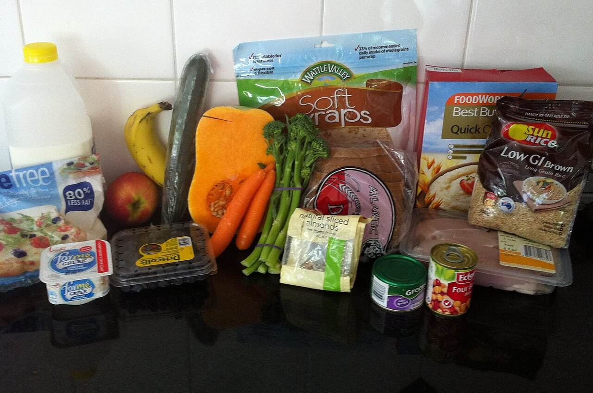
Know which reference value you are using
The Dietary Reference Intakes are a family of values, and using the wrong member is the most common planning error. The EAR (Estimated Average Requirement) is the intake meeting the needs of half of a healthy group — it is the correct tool for assessing or planning for groups, never for judging one person. The RDA is set roughly two standard deviations above the EAR so that it covers about 97–98 percent of healthy individuals in the life-stage group; it is the goal for an individual. The AI (Adequate Intake) is used where the data are too thin to compute an EAR, so it is an observation-based estimate rather than a requirement. The UL (Tolerable Upper Intake Level) is the highest chronic daily intake unlikely to cause harm — it is a ceiling, not a target, and it matters mainly for supplements and fortified foods. The AMDR gives macronutrient ranges as a share of energy, and the EER estimates energy needs from age, sex, weight, height, and physical activity.
Energy accounting rests on the metabolizable energy yields you have used all book: carbohydrate 4 kcal/g, protein 4 kcal/g, fat 9 kcal/g, alcohol 7 kcal/g. For adults, the AMDRs are 45–65 percent of energy from carbohydrate, 20–35 percent from fat, and 10–35 percent from protein; the fat range is deliberately higher in early life, at 30–40 percent for ages 1–3 years and 25–35 percent for ages 4–18 years, because young children need energy-dense food. The carbohydrate RDA is 130 g/day for adults and children aged 1 year and older, based on the brain's glucose use, rising to 175 g/day in pregnancy and 210 g/day in lactation. The protein RDA is 0.8 g/kg body weight per day for adults aged 19 and over, rising to about 1.1 g/kg/day during pregnancy and lactation; older adults and people recovering from illness or injury are frequently studied at higher intakes, and that literature is suggestive rather than settled. Fiber has an AI of 14 g per 1,000 kcal, which lands near 25 g/day for women and 38 g/day for men aged 19–50.
Anchor the priority micronutrients
You cannot hold every DRI in mind, and you do not need to. A small number of nutrients do most of the work in planning because requirements shift sharply across life stages or because population intakes commonly fall short. Note how many of these values are not one number but several.
| Nutrient | Reference intake by population | Why it drives planning |
|---|---|---|
| Iron | RDA 8 mg/day men 19+; 18 mg/day women 19–50; 8 mg/day women 51+; 27 mg/day in pregnancy. UL 45 mg/day adults | The largest sex- and life-stage swing of any mineral; heme iron is better absorbed, and vitamin C improves non-heme absorption |
| Calcium | RDA 1,300 mg/day ages 9–18; 1,000 mg/day adults 19–50; 1,200 mg/day women 51+ and all adults 71+ | Peak bone mass is built in adolescence; requirements rise again later in life |
| Vitamin D | RDA 15 mcg (600 IU)/day ages 1–70; 20 mcg (800 IU)/day age 71+. UL 100 mcg (4,000 IU)/day adults | Few foods contain it; fortified foods and sun exposure dominate supply |
| Folate | RDA 400 mcg DFE/day adults; 600 mcg DFE/day in pregnancy; 400 mcg/day of folic acid advised for anyone who could become pregnant | Neural tube closure happens before most pregnancies are recognized — the evidence here is strong |
| Vitamin B12 | RDA 2.4 mcg/day adults; adults over 50 are advised to get much of it from fortified foods or supplements | Food-bound B12 malabsorption rises with age; strict plant-based diets require a reliable source |
| Vitamin C | RDA 90 mg/day men, 75 mg/day women aged 19+; add 35 mg/day for people who smoke | One of the few RDAs adjusted for a behavior rather than a life stage |
| Vitamin A | RDA 900 mcg RAE/day men, 700 mcg RAE/day women. UL 3,000 mcg/day preformed retinol | Preformed retinol is teratogenic in excess; provitamin A carotenoids are not subject to the UL |
| Sodium | CDRR: reduce intake if above 2,300 mg/day for adults | Most intake is already in food before it reaches the table |
| Water | AI about 2.7 L/day total water for women, 3.7 L/day for men aged 19+, roughly 20 percent from food | Total water, not "eight glasses"; needs rise with heat, activity, and illness |
Build the day, then check it
Planning works best as a two-pass process. The first pass builds a plausible day from food groups rather than from nutrients, because food groups are how nutrients actually travel: vegetables and fruit carry potassium, fiber, folate, vitamin C, and carotenoids; whole grains carry fiber, magnesium, and B vitamins, while enriched refined grains carry added iron and folic acid; legumes, fish, eggs, poultry, and meat carry protein, iron, and zinc, with B12 coming only from the animal-source members of that group or from fortified foods; dairy or fortified alternatives carry calcium, vitamin D, and potassium; nuts, seeds, and liquid plant oils carry unsaturated fat and vitamin E. Spreading protein across the day rather than concentrating it at dinner is a reasonable default, though the evidence that distribution matters much for healthy adults is preliminary.
The second pass checks the draft against the targets that most often fail. Run the energy arithmetic with the 4/4/9 yields and see whether the day plausibly meets estimated needs. Then check fiber, calcium, iron, vitamin D, and potassium specifically — these are the recurring shortfalls — and check the ceilings that matter for that person, usually sodium, added sugars, and any supplement approaching a UL. Finally, and most importantly, check feasibility: cost, cooking time, kitchen equipment, work schedule, cultural and religious practice, appetite, and preference. Adequacy is achieved over days and weeks, not at every meal, and a slightly imperfect plan someone will follow outperforms an optimal plan they abandon by Thursday.
| Planning step | What you are doing | Common mistake |
|---|---|---|
| 1. Set energy | Estimate EER from age, sex, size, activity | Treating an estimate as a precise prescription |
| 2. Distribute macronutrients | Apply AMDRs; convert percentages to grams with 4/4/9 | Forgetting the 130 g/day carbohydrate RDA floor |
| 3. Draft with food groups | Build meals and snacks that cover each group across the day | Planning nutrient by nutrient and producing food nobody eats |
| 4. Check shortfall nutrients | Fiber, calcium, iron, vitamin D, potassium | Assuming a varied-looking day automatically covers them |
| 5. Check ceilings | Sodium, added sugars, supplement ULs | Stacking a multivitamin with fortified foods past a UL |
| 6. Check feasibility | Cost, time, equipment, culture, preference, appetite | Skipping this step, which is why most plans fail |
- RDA is the target for an individual; EAR is for groups; AI is an estimate where data are thin; UL is a ceiling, not a goal.
- Energy yields are carbohydrate 4, protein 4, fat 9, alcohol 7 kcal per gram.
- Adult AMDRs: carbohydrate 45–65%, fat 20–35%, protein 10–35% of energy; the fat range is higher for young children.
- Key values shift with life stage — iron 18 mg/day for women 19–50 versus 8 mg/day for men, and 27 mg/day in pregnancy.
- Build with food groups, then verify shortfall nutrients, ceilings, and feasibility.
Section 5Evaluating nutrition information
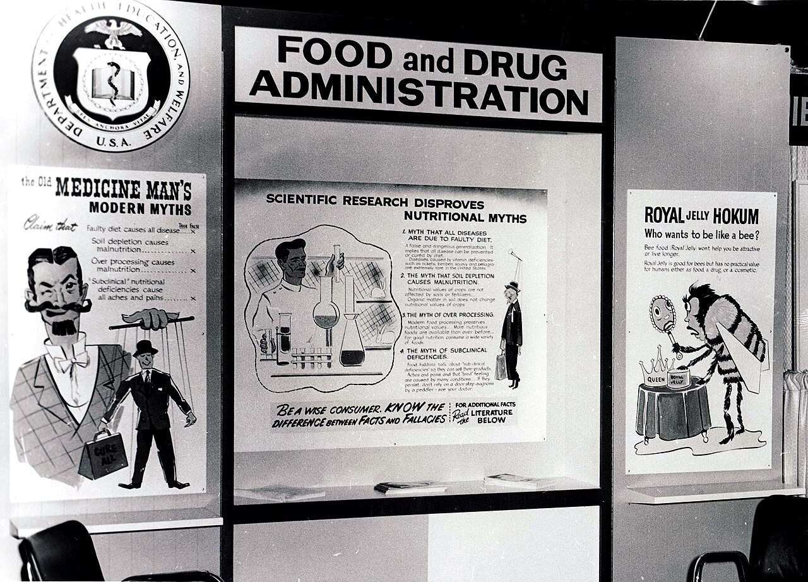
Ask what kind of evidence this is
Nutrition claims are not all built from the same material, and the first useful question about any claim is what study design stands behind it. Mechanistic and cell-culture work explains how something could work but says nothing about whether it does in people. Animal studies add a living system but not a human one. Cross-sectional surveys describe correlation at a single moment. Case-control studies look backward and are vulnerable to recall bias. Prospective cohort studies follow people forward for years and are the workhorse of nutritional epidemiology — genuinely informative, but always shadowed by confounding, because people who eat any one thing differ systematically in dozens of other ways. Randomized controlled trials break that confounding by assigning the exposure, and systematic reviews and meta-analyses pool the whole body of trials.
Nutrition, though, imposes real limits on that ladder, and honest evaluation acknowledges them. You cannot blind people to broccoli. Outcomes like fracture or cardiovascular death take decades to appear. There is no true placebo diet, because eating more of one thing means eating less of another. Adherence to an assigned diet decays over months. Consequently much of the strongest nutrition evidence is a convergence across designs — consistent cohort findings, supportive trials on intermediate outcomes, and a plausible mechanism — rather than one decisive trial. Be equally wary of claims resting on mechanism alone and of demands that nothing count until a 20-year randomized trial exists.
Weigh the claim, not the confidence
Once you know the design, interrogate the numbers. Ask about effect size in absolute terms: "raises risk by 40 percent" is uninformative until you know whether the baseline risk is 1 in 2 or 1 in 100,000. Ask whether the outcome was a hard endpoint (heart attack, fracture, death) or a surrogate (a cholesterol value, a marker of inflammation) — surrogates move more easily and do not always carry the outcome with them. Ask about sample size and confidence intervals, about whether the finding is one result from many comparisons, and about who funded the work and who profits from the conclusion. Ask whether the dose studied is achievable through food, and whether the population studied resembles the one the claim is now being applied to.
Credentials help but do not settle anything. In many jurisdictions the title "nutritionist" is unregulated and can be used by anyone, while registered dietitian and registered dietitian nutritionist are protected credentials with defined coursework, supervised practice, and a national examination. A clinician or researcher speaking outside their field carries no special authority there, and expertise never substitutes for the evidence itself.
| Red flag | Why it signals trouble | Better question to ask |
|---|---|---|
| "Detoxes" or "cleanses" the body | Named toxin is almost never specified; the liver and kidneys already do this continuously | Which substance, measured how, cleared by what mechanism? |
| One food or nutrient fixes many unrelated conditions | Real interventions have narrow, mechanism-bounded effects | What is the single primary outcome, in one defined population? |
| "Clinically proven" with no citation | The phrase is unregulated marketing language | Which study — design, size, journal, who funded it? |
| Testimonials and dramatic before/after stories | Selected anecdotes cannot show effect; regression to the mean and placebo response are unmeasured | What happened to the people who did not improve? |
| "Natural," "ancient," or "chemical-free" | Origin says nothing about safety or efficacy; every food is chemicals | What does the evidence show about this preparation, at this dose? |
| Proprietary blend, undisclosed amounts | Prevents any comparison with a studied dose or with a UL | How many milligrams of each ingredient per serving? |
| The person making the claim sells the product | A direct financial conflict of interest | Does independent evidence exist from people who do not profit? |
| "Doctors don't want you to know" | Conspiracy framing pre-empts scrutiny instead of answering it | What would it take to change your mind? |
| Foods sorted into "clean" and "toxic" | Moral framing of food is not a physiologic category, and it is associated with disordered eating patterns rather than with better health | What does this pattern of eating do, measured how? |
Why single-nutrient extrapolation goes wrong
A recurring failure mode deserves its own attention, because it looks like good reasoning. The chain runs: people who eat more of food X have less of disease Y; food X is rich in nutrient N; therefore supplement N to prevent Y. Each link is plausible, and the conclusion has repeatedly failed when tested. The clearest example is beta-carotene. Observational data consistently associated carotenoid-rich diets with lower lung cancer rates, but two large randomized trials of high-dose beta-carotene supplements in smokers and asbestos-exposed workers found more lung cancer in the supplemented groups, and one was stopped early. Similar reversals followed trials of high-dose vitamin E for cardiovascular prevention. The lesson is not that food does not matter — it is that a nutrient extracted from its food matrix, given at a dose no diet delivers, is a different intervention from the diet that generated the hypothesis.
The practical stance that follows is calibrated rather than cynical. Some nutrition conclusions rest on strong, convergent evidence: folic acid before and during early pregnancy reduces neural tube defects; iodine sufficiency in pregnancy protects neurodevelopment; vitamin D prevents rickets; replacing saturated with unsaturated fat lowers LDL cholesterol. Others are genuinely preliminary, including much of the work on the microbiome, on precise meal timing, and on personalized nutrition by genotype. Saying clearly which tier a claim occupies is the whole skill — and remember that general education of this kind is not individualized medical or dietary advice, which belongs with a qualified clinician who knows the person's full situation.
- Evidence runs from mechanism and animal work through cohorts to randomized trials and systematic reviews; nutrition constrains that ladder in real ways.
- Judge absolute effect size, hard versus surrogate endpoints, confidence intervals, and funding — not the confidence of the speaker.
- Recurring red flags: unspecified detox, cure-alls, uncited "clinically proven," testimonials, proprietary blends, and moralized food categories.
- Single-nutrient extrapolation from dietary patterns has failed in randomized trials — high-dose beta-carotene increased lung cancer in smokers.
- Distinguish strong conclusions (folic acid and neural tube defects) from preliminary ones (microbiome, meal timing, genotype-based personalization).
The chapter in one breath
- Nutrition assessment triangulates four domains — anthropometric, biochemical, clinical, dietary — because no single measure is interpretable alone.
- BMI screens populations and cannot diagnose an individual; albumin and prealbumin track inflammation, not protein intake.
- Recalls, records, and FFQs answer different questions and fail differently: memory, reactivity, and coarse quantification respectively.
- Energy underreporting is systematic — roughly 10–30 percent against doubly labeled water — and is measurement error, not dishonesty.
- On a label, serving size governs every number, %DV assumes 2,000 kcal, the 5/20 rule reads low versus high, and ingredients run by descending weight.
- Plan with the right DRI: RDA for an individual, EAR for a group, AI where data are thin, UL as a ceiling, AMDR for macronutrient ranges.
- Energy yields are 4/4/9/7 kcal per gram for carbohydrate, protein, fat, and alcohol; requirements for iron, calcium, vitamin D, and folate shift with age, sex, and pregnancy.
- Evaluate claims by design, absolute effect size, endpoint, and conflict of interest, and keep strong evidence clearly separated from preliminary evidence.
ReferenceWords worth knowing
A working vocabulary for assessment and planning — skim it now, and return whenever a reference value or study term needs pinning down.
- Acceptable Macronutrient Distribution Range (AMDR)
- The range of energy intake from each macronutrient associated with reduced chronic disease risk while supplying essential nutrients; for adults, carbohydrate 45–65%, fat 20–35%, protein 10–35% of total energy.
- Adequate Intake (AI)
- A DRI used when evidence is insufficient to set an EAR and RDA; based on observed or experimentally determined intakes of apparently healthy people.
- Anthropometric measurement
- Physical measurement of the body — height, weight, BMI, circumferences, skinfolds — used chiefly to track change over time.
- Biochemical assessment
- Laboratory measurement of nutrients, their metabolites, or functional markers, such as serum 25-hydroxyvitamin D, ferritin, or methylmalonic acid.
- Body mass index (BMI)
- Weight in kilograms divided by height in meters squared; a population screening index that does not distinguish muscle from fat and does not diagnose an individual.
- Daily Value (DV)
- The single set of label reference amounts, anchored to a 2,000-calorie reference diet, used to compute %DV for people aged four and older.
- Dietary Reference Intakes (DRIs)
- The umbrella family of reference values — EAR, RDA, AI, UL, AMDR, EER, CDRR — for planning and assessing intakes of healthy people.
- Doubly labeled water
- A reference method using stable isotopes of hydrogen and oxygen to measure total energy expenditure; the standard against which self-reported energy intake is validated.
- Estimated Average Requirement (EAR)
- The intake meeting the requirement of half the healthy individuals in a life-stage and sex group; used for groups, not for judging one person.
- Estimated Energy Requirement (EER)
- Predicted energy intake needed to maintain energy balance, computed from age, sex, weight, height, and physical activity level.
- Food frequency questionnaire (FFQ)
- A checklist of how often specified foods were eaten over months to a year; good for ranking people in large studies, poor for absolute quantities.
- Food record
- A prospective log of foods and amounts as they are eaten, typically 3–7 days; avoids memory error but is prone to reactivity and declining adherence.
- Ingredient list
- The package listing of ingredients in descending order by weight, including required plain-language declaration of major allergens.
- Nutrient content claim
- A regulated package statement about a nutrient's level, such as "good source" (10–19% DV per serving) or "high in" (20% DV or more per serving).
- Nutrition screening
- A brief, sensitive first-pass tool applied broadly to identify who needs a full nutrition assessment.
- Randomized controlled trial (RCT)
- A study assigning participants to interventions by chance, breaking confounding; in nutrition, limited by blinding, adherence, and long outcome latency.
- Recommended Dietary Allowance (RDA)
- The intake sufficient to meet the needs of about 97–98 percent of healthy individuals in a life-stage and sex group; the planning goal for an individual.
- Reference Amount Customarily Consumed (RACC)
- The survey-derived amount of a food typically eaten at one occasion, used to set regulated label serving sizes.
- Systematic review
- A structured synthesis of all studies meeting prespecified criteria, sometimes combined statistically as a meta-analysis.
- Tolerable Upper Intake Level (UL)
- The highest chronic daily intake likely to pose no risk of adverse effects; a ceiling to stay under, never a target to reach.
- Twenty-four-hour dietary recall
- A structured multiple-pass interview about everything consumed in the previous day; non-reactive, but a single day cannot represent usual intake.
- Underreporting
- The systematic tendency of self-reported intake to fall below measured intake, driven by memory, portion misestimation, and social desirability rather than deceit.
Check yourself
Food Security & Sustainability
Every other chapter in this book asks what a nutrient does inside a body. This one asks a harder question: whether the food carrying that nutrient ever reaches the body at all. Food security is the difference between knowing what a person should eat and their being able to eat it — and it is shaped by income, transportation, time, geography, harvest, war, and price far more than by knowledge or willpower. At the same time, the system that grows and moves that food is the single largest human pressure on land, fresh water, and the climate, which means the way we feed eight billion people now determines how easily we can feed them later. This chapter looks at both ends of that problem: who is missing food today, and what the food system costs to run.
By the end of this chapter you can
- Define food security and its four dimensions, and describe the food security continuum used to measure it.
- Summarize the prevalence and documented health consequences of food insecurity across the lifespan.
- Distinguish stunting, wasting, and underweight, and explain why the first 1,000 days matter so much.
- Describe the major micronutrient deficiencies of global public health importance, with their RDAs and deficiency syndromes.
- Trace a food from production to plate and identify where nutrients, food, and money are lost along the way.
- Compare the environmental footprint of major food groups and explain why what you eat outweighs how far it travelled.
- Explain how fortification, biofortification, and food assistance programs work, and which have strong evidence behind them.
- Separate strong evidence from preliminary evidence when evaluating claims about diets and sustainability.
Section 1Food security and insecurity
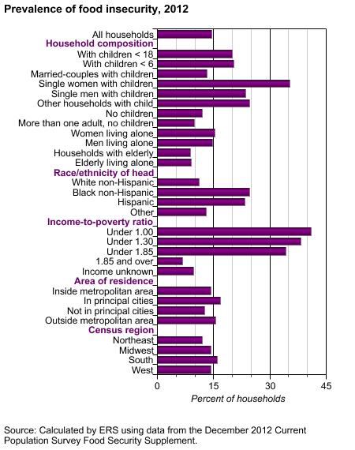
What food security actually means
Food security exists when all people, at all times, have physical, social, and economic access to sufficient, safe, and nutritious food that meets their dietary needs and food preferences for an active and healthy life. That definition, from the 1996 World Food Summit, is worth reading slowly, because every clause is doing work. All times rules out a household that eats well three weeks a month and runs out in the fourth. Economic access makes clear that food sitting on a shelf a person cannot afford does not count. Food preferences acknowledges that a culturally unacceptable food is not a real option. And safe reminds us that contaminated food is not food.
Researchers break the concept into four dimensions, and a household can fail on any one of them independently. Availability asks whether enough food physically exists in the area. Access asks whether this household can obtain it — money, transportation, distance, and time all live here. Utilization asks whether the body can actually use the food, which brings in food safety, clean water, cooking facilities, and whether infection or disease is stealing nutrients. Stability asks whether the other three hold up over time rather than collapsing at the end of the month or the end of a growing season.
Measuring it: a continuum, not a switch
Food insecurity is not a synonym for hunger, and it is not a yes-or-no state. In the United States it is measured with a household survey module that sorts households along a continuum — 18 items for households with children, 10 for those without. High food security means no reported problems. Marginal food security means anxiety about food supply but no real change in diet or intake. Low food security means reduced quality, variety, or desirability of the diet, with little or no reduction in the amount eaten. Very low food security means eating patterns were actually disrupted and intake reduced — skipped meals, smaller meals, whole days without eating — because there was not enough money for food. The first two categories are counted as food secure; the last two are counted as food insecure.
| Category | Diet quality | Amount eaten | Counted as |
|---|---|---|---|
| High food security | Normal | Normal | Food secure |
| Marginal food security | Normal, but anxiety about running out | Normal | Food secure |
| Low food security | Reduced quality and variety | Little or no reduction | Food insecure |
| Very low food security | Reduced | Reduced — meals skipped or missed | Food insecure |
Internationally, the parallel instrument is the Food Insecurity Experience Scale (FIES), an eight-question module used by the Food and Agriculture Organization to compare countries. Recent global estimates put roughly 2.3 billion people at moderate or severe food insecurity, and around 700–800 million people — close to one in eleven — as chronically undernourished, meaning habitual intake below the energy required for a normal active life. In the United States, roughly one in eight households reports food insecurity in a given year, with about one in twenty reaching very low food security. These figures shift year to year with prices, employment, and the generosity of assistance programs, so always check the current release rather than quoting a number from memory.
What food insecurity does to health
The evidence linking food insecurity to worse health is strong and consistent, though most of it is observational, so causal direction runs both ways: illness makes households poorer, and poverty makes households sicker. In children, food insecurity is associated with iron deficiency, more frequent illness, poorer school performance, and higher rates of anxiety and behavioral difficulty. In adults, it is associated with higher rates of type 2 diabetes, hypertension, and depression, and with markedly worse control of chronic disease — a person rationing insulin and food in the same month has a predictable outcome. Older adults face an added layer, because fixed incomes, limited mobility, and medication costs collide.
One finding surprises students: food insecurity is often associated with higher body weight in some populations, particularly among women. This is not a paradox once you look at the mechanics rather than reaching for a judgment. Energy-dense, shelf-stable foods cost less per calorie and waste less; cycles of scarcity and relative plenty change eating patterns; chronic stress alters appetite regulation and sleep; and cooking requires time, equipment, and utilities that may not be there. The physiology is ordinary. The environment is the variable. Describing it any other way — as a failure of discipline or of taste — is both unkind and factually wrong.
- Food security = reliable access to enough safe, nutritious, acceptable food; its four dimensions are availability, access, utilization, and stability.
- Food insecurity is a continuum: high, marginal, low, and very low food security — the last two count as food insecure.
- Roughly one in eight U.S. households and about 2.3 billion people globally experience some level of food insecurity.
- Food insecurity tracks with worse chronic disease control, poorer child development, and higher rates of depression; associations with higher body weight reflect cost and access, not character.
Section 2Global malnutrition
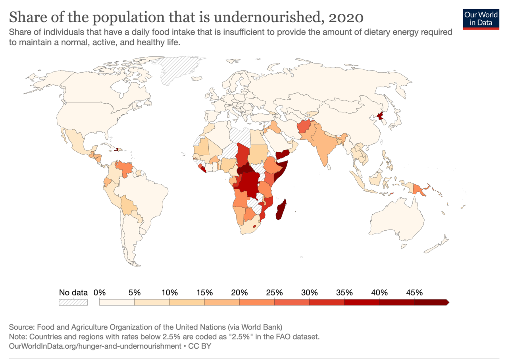
Malnutrition means more than "too little"
Malnutrition is any deficiency, excess, or imbalance in energy or nutrient intake. It therefore covers three overlapping problems: undernutrition (not enough energy or protein), micronutrient deficiency (not enough of a specific vitamin or mineral), and diet-related chronic disease. Many countries now carry two of these at once in the same communities and sometimes in the same household — a stunted child and an adult with type 2 diabetes under one roof. That pattern is called the double burden of malnutrition, and it exists because cheap energy became widely available faster than cheap nutrient density did.
Stunting, wasting, and the first 1,000 days
Child undernutrition is classified by comparing a child to the WHO Child Growth Standards, using how many standard deviations (a z-score) they sit from the median. Stunting is low height-for-age below −2 SD: it reflects chronic, cumulative deprivation and is the marker of long-run damage. Wasting is low weight-for-height below −2 SD: it reflects acute, recent loss and carries the highest near-term mortality risk. Underweight is low weight-for-age and mixes the two, which is why it has largely been replaced by the more specific measures. In the field, mid-upper arm circumference (MUAC) is used as a fast screening measure in children 6–59 months, and the presence of bilateral pitting edema is by itself sufficient to classify severe acute malnutrition regardless of any measurement.
| Measure | Definition | What it tells you | Time frame |
|---|---|---|---|
| Stunting | Height-for-age < −2 SD | Chronic deprivation; linked to cognitive and economic outcomes | Long-term |
| Wasting | Weight-for-height < −2 SD | Acute deficit; highest short-term mortality risk | Recent |
| Underweight | Weight-for-age < −2 SD | Composite — cannot separate the two above | Mixed |
| Severe acute malnutrition | WHZ < −3, MUAC < 115 mm, or bilateral pitting edema | Medical emergency requiring structured treatment | Acute |
Roughly 150 million children under five are stunted worldwide and about 45 million are wasted. The reason stunting gets so much attention is timing. The first 1,000 days — from conception to a child's second birthday — is the window in which the brain, the immune system, and linear growth are laid down. Deficits accumulated in that window are only partially recoverable afterward, and long-term cohort studies consistently associate them with reduced school attainment and lower adult earnings — associations that are strong and reproducible, though the observational designs cannot fully separate early nutrition from the poverty that usually accompanies it. It is one of the few places in nutrition where the phrase "critical period" is literally true rather than rhetorical.
The two classic severe syndromes are still worth knowing by name. Marasmus is severe wasting from grossly inadequate energy intake: the child is emaciated, with loss of subcutaneous fat and muscle, and no edema. Kwashiorkor presents with bilateral pitting edema, an enlarged fatty liver, and characteristic skin and hair changes. Kwashiorkor was historically attributed to protein deficiency with adequate energy, and that framing persists in many textbooks, but the mechanism is not settled — oxidative stress, aflatoxin exposure, and gut microbiome differences have all been implicated. Treat the protein-deficiency story as a useful teaching heuristic, not an established cause. Both syndromes are treated under medical supervision, and reintroducing food carries its own danger: refeeding syndrome, in which the shift back to carbohydrate metabolism drives phosphate, potassium, and magnesium into cells and can precipitate cardiac and neurologic collapse. This is a hospital-managed problem, not something to improvise.
Hidden hunger: micronutrient deficiency
A person can eat enough calories and still be badly deficient, which is why micronutrient deficiency is called hidden hunger. Four deficiencies dominate global public health. Values below are Recommended Dietary Allowances (RDAs) for healthy people; they differ by age and sex and rise in pregnancy and lactation, so always match the value to the population.
| Nutrient | Adult RDA (19–50 y) | Pregnancy | Deficiency syndrome |
|---|---|---|---|
| Iron | 8 mg/day men; 18 mg/day women (falls to 8 mg/day after menopause) | 27 mg/day | Microcytic, hypochromic anemia; fatigue; impaired work capacity |
| Vitamin A | 900 µg RAE/day men; 700 µg RAE/day women | 770 µg RAE/day | Night blindness, Bitot spots, xerophthalmia, keratomalacia; higher infection mortality |
| Iodine | 150 µg/day adults | 220 µg/day | Goiter; in pregnancy, congenital hypothyroidism and irreversible neurodevelopmental harm |
| Zinc | 11 mg/day men; 8 mg/day women | 11 mg/day | Growth faltering, impaired immunity, prolonged diarrhea, poor wound healing |
| Folate | 400 µg DFE/day adults | 600 µg DFE/day | Megaloblastic anemia; neural tube defects when deficient around conception |
Two more deserve mention because they are the historical face of nutritional disease. Thiamin deficiency causes beriberi — "wet" beriberi with high-output heart failure and edema, "dry" beriberi with peripheral neuropathy — and, in the context of chronic alcohol use, Wernicke encephalopathy. Niacin deficiency causes pellagra, remembered as the three Ds: dermatitis in sun-exposed skin, diarrhea, and dementia. Both were epidemic in populations dependent on a single staple grain, though by different routes: beriberi followed polished (milled) rice, which loses the thiamin-rich bran, while pellagra followed maize-based diets, in which niacin is bound in a form the body cannot absorb unless the grain is treated with alkali as in traditional nixtamalization. Both largely vanished from industrialized countries once staple grains were enriched — a point we return to in Section 5.
- Malnutrition spans undernutrition, micronutrient deficiency, and diet-related chronic disease; many countries carry a double burden.
- Stunting (height-for-age) marks chronic deprivation; wasting (weight-for-height) marks acute risk; MUAC and bilateral edema screen for severe acute malnutrition.
- The first 1,000 days is a genuine critical window — deficits there are only partly recoverable.
- Iron, vitamin A, iodine, zinc, and folate are the deficiencies of greatest global public health importance; RDAs differ by age, sex, and pregnancy.
Section 3The food system: from production to plate
The stages, and what leaks out of each
A food system is everything involved in getting food from the ground to a person and dealing with what is left over: inputs (seed, water, fertilizer, fuel, labor), production, post-harvest handling and storage, processing, distribution and transport, retail, preparation and consumption, and waste. Nutrition students often study only the last two stages, which is a mistake — the price, safety, and nutrient content of what lands on a plate were largely determined upstream.
Loss is enormous and it happens at both ends. Roughly 13 percent of food produced is lost between harvest and retail, mostly to inadequate storage, cooling, and transport — a problem of infrastructure, concentrated in lower-income settings. A further 19 percent or so is wasted at retail, food service, and household level, with households the single largest slice, concentrated in higher-income settings. Combined, close to a third of the food grown is never eaten, along with the land, water, fuel, and labor that produced it.
| Stage | What happens | Where it goes wrong |
|---|---|---|
| Inputs | Seed, water, soil, fertilizer, fuel, labor | Cost volatility; fertilizer runoff; groundwater depletion |
| Production | Farming, fishing, livestock rearing | Drought, flood, pests, conflict, crop failure |
| Post-harvest & storage | Drying, cooling, warehousing | Spoilage, pests, mycotoxins — the big loss point in low-income settings |
| Processing | Milling, canning, freezing, fortifying | Nutrient loss in refining; also where fortification becomes possible |
| Distribution | Transport, cold chain, wholesale | Cold-chain breaks; fuel cost passed to price |
| Retail | Stores, markets, food service | Low-access areas; price and shelf-space shape what is bought |
| Consumption | Storage, cooking, eating | Household waste; unsafe temperatures; leaching of water-soluble vitamins |
Processing: not one thing
"Processed" is one of the least useful words in nutrition because it collapses opposite things. Pasteurizing milk, freezing peas within hours of picking, canning tomatoes, drying beans, and adding folic acid to flour are all processing, and each of them makes food safer, cheaper, more available, or more nutritious. Freezing in particular often preserves vitamin C and folate better than a fresh product that spent days in transit and storage. Refining, by contrast, removes: milling a whole grain strips the bran and germ, taking most of the fiber, magnesium, vitamin E, and much of the B-vitamin and iron content with them.
The current research focus is on ultra-processed foods, formulations built largely from industrial ingredients and additives rather than recognizable whole foods. Here it is important to separate evidence tiers. Large observational cohorts consistently associate higher ultra-processed intake with higher rates of cardiometabolic disease — that association is strong and reproducible, but observational, and confounded by income, smoking, and overall diet. Direct experimental evidence is thin: the best-known controlled feeding trial enrolled about twenty adults for a few weeks. The classification itself is also contested, since it groups mass-produced bread with candy. Treat the mechanism as preliminary, and be skeptical of anyone who states it as settled in either direction.
The food environment
Where food is sold determines what gets eaten as reliably as any nutrition label. Low-access areas — often called food deserts — are neighborhoods where the nearest full grocery store is far enough away that a household without a car realistically shops at a convenience store. Many communities also experience the opposite density problem, a high concentration of inexpensive prepared food and few fresh options. Some scholars prefer the term food apartheid to emphasize that these patterns follow historical policy decisions about zoning, lending, and transit rather than natural geography. Layer on price — energy-dense foods are consistently cheaper per calorie than nutrient-dense ones — and the shape of a household's diet becomes largely predictable from its zip code and income.
Food safety belongs here too, since it is the utilization dimension of food security made concrete. The WHO estimates roughly 600 million foodborne illnesses and 420,000 deaths per year worldwide. Most of what prevents them is unglamorous: handwashing, separating raw and ready-to-eat foods, cooking to adequate internal temperature, and keeping food out of the 40–140 °F (4–60 °C) range where bacterial growth is fastest.
- A food system runs from inputs through production, storage, processing, distribution, retail, consumption, and waste.
- About 13 percent of food is lost before retail and roughly 19 percent wasted after — close to a third of all food grown.
- Processing includes both nutrient-preserving steps (freezing, canning, fortification) and nutrient-removing ones (refining); the word alone tells you nothing.
- Observational evidence linking ultra-processed foods to disease is strong; the causal mechanism remains preliminary.
Section 4Sustainable eating and the footprint of food
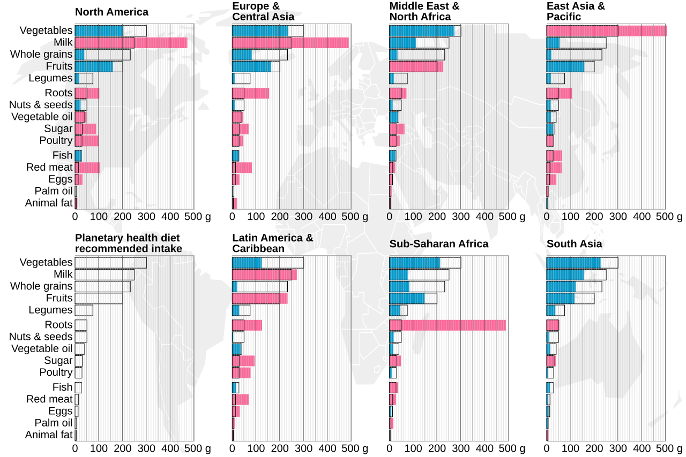
The scale of the problem
Food production is the largest way humans touch the planet. Agriculture occupies roughly half of habitable land, accounts for about 70 percent of global freshwater withdrawals, and food systems as a whole generate somewhere near a quarter to a third of anthropogenic greenhouse gas emissions. Agriculture is also the dominant driver of biodiversity loss and of deforestation. The implication is that a diet has an environmental cost the same way it has a nutritional profile, and the two do not always point in the same direction.
The most useful evidence base here is life-cycle assessment (LCA), which tallies emissions, land, and water across a product's whole chain. A landmark 2018 synthesis covering roughly 38,000 farms across 119 countries produced the ranking below. The numbers are approximate and vary widely by production system, so read them as orders of magnitude rather than precise values.
| Food | Approx. kg CO2e per kg food | Land use | Note |
|---|---|---|---|
| Beef (beef herd) | ~60–100 | Very high | Enteric methane plus land conversion dominate |
| Lamb | ~25–40 | Very high | Also a ruminant — same methane pathway |
| Cheese | ~20–24 | High | Roughly 10 kg of milk per kg of cheese |
| Pork / farmed fish | ~7–14 | Moderate | Feed composition drives most of it |
| Poultry / eggs | ~4–10 | Moderate | Most efficient common animal foods (eggs at the low end, poultry meat at the high end) |
| Tofu / other legumes | ~1–3 | Low | Nitrogen-fixing crops need little fertilizer |
| Grains, roots, most vegetables | ~0.4–1.7 | Low | Rice is the exception (~4) — flooded paddies emit methane; air-freighted perishables also break the pattern |
What actually moves the needle
Three findings from this literature are robust enough to rely on. First, the type of food dominates. The spread between the highest- and lowest-impact foods is on the order of fifty- to a hundredfold — beef sits near 100 kg CO2e per kg while peas sit near 1 — which is far larger than the (still substantial) spread between the best and worst producers of the same food. Second, transport is a minor term for most foods — on the order of 6 percent of food-related emissions overall, though the exact share depends on where the analysis draws its system boundary. "Food miles" is therefore a poor guide: a legume shipped across an ocean by sea generally beats local beef by a wide margin. The real exception is highly perishable produce moved by air, which is a small share of trade but carries an outsized footprint. Third, reducing waste is a free win, because wasted food carries every upstream cost with it and delivers nothing.
Comparing per kilogram of food can mislead when foods serve different purposes, so researchers often normalize per gram of protein or per 100 kcal. Doing so narrows some gaps and widens others, but it does not reverse the basic ordering: ruminant meat sits at the top, legumes and grains at the bottom. Where evidence is genuinely preliminary is the claim that particular grazing or "regenerative" systems sequester enough soil carbon to offset ruminant emissions. Some systems do sequester meaningful carbon, but soil carbon saturates, the measurements are difficult, and current evidence does not support treating it as a general offset.
Eating sustainably without moralizing
The most-cited reference scenario is the planetary health diet published by the EAT-Lancet Commission: a roughly 2,500 kcal pattern that is largely plants, with modest amounts of animal foods, designed to sit within estimated environmental limits while meeting nutrient needs. It is a modeling exercise for global averages, not a personal prescription, and its authors say so. Applied bluntly it can be unaffordable and culturally inappropriate, and it does not automatically supply enough iron, zinc, calcium, vitamin B12, or omega-3 fats for every individual without attention to food choices or supplementation.
A more honest framing is that sustainability is a matter of ratios and margins, not moral categories. Shifting some meals toward legumes, choosing poultry or fish where a ruminant would otherwise appear, using frozen and canned foods, buying imperfect produce, and simply throwing away less all produce measurable gains without declaring any food forbidden. Foods are not virtuous or sinful, and neither are the people eating them. Cost, time, culture, allergy, and appetite are legitimate constraints, and advice that ignores them is advice that will not be followed.
- Food systems use about half of habitable land and roughly 70 percent of freshwater withdrawals, and generate roughly a quarter to a third of greenhouse gas emissions.
- Food type matters far more than food miles; transport is around 6 percent of food emissions.
- Ruminant meats sit at the high end of the footprint range and legumes, grains, and vegetables at the low end — a spread on the order of fifty- to a hundredfold.
- Claims that regenerative grazing offsets ruminant emissions are preliminary and should not be treated as established.
Section 5Programs and solutions
Food assistance: the income layer
The dominant lever against food insecurity in high-income countries is not education. It is money. The largest U.S. program, the Supplemental Nutrition Assistance Program (SNAP), provides an electronic benefit that households spend on groceries, and it reaches roughly 40 million people in a typical month. Because it works through purchasing power, its effects on food insecurity are relatively fast and well documented; when benefit levels rise, measured food insecurity falls, and when they lapse, it rises.
Other programs target specific windows of risk. WIC serves pregnant and postpartum people, infants, and children under five with a prescribed food package, breastfeeding support, and nutrition services — and it has among the strongest evidence bases of any nutrition program, with consistent associations with improved birth outcomes and better dietary quality. That evidence is largely observational rather than randomized — withholding a benefit for a trial is rarely ethical — so it carries some risk of selection effects, but the findings hold across many designs and decades. School meal programs feed children where they already are, and universal-eligibility approaches remove the stigma and paperwork that suppress participation. Emergency food — food banks and pantries — is the visible face of the response, but it was designed as a supplement for short crises and cannot substitute for stable income.
| Program type | Who it reaches | How it works | Strength of evidence |
|---|---|---|---|
| SNAP-style benefits | Low-income households broadly | Purchasing power for groceries | Strong — benefit changes track food insecurity |
| WIC-style packages | Pregnancy, infants, children under 5 | Prescribed foods plus counseling and lactation support | Strong for birth outcomes and diet quality |
| School meals | School-age children | Meals at the point of attendance; universal eligibility raises uptake | Strong for participation and daily intake |
| Congregate / home-delivered meals | Older adults | Meals plus a daily social contact | Moderate — also addresses isolation |
| Food banks and pantries | Anyone in acute need | Donated and rescued food, distributed locally | Fills gaps; not a substitute for income |
| Produce prescriptions / medically tailored meals | Patients with diet-sensitive conditions | Clinic-referred food benefit | Preliminary — promising, mostly small or observational studies |
Fortification: the quiet giant
Fortification is the addition of nutrients to a food that did not originally contain them in that amount; enrichment specifically restores nutrients lost during processing. Both work through the food supply rather than through individual behavior, which is exactly why they succeed — no one has to remember anything, change what they like, or be able to afford anything extra. The public health record here is remarkable.
| Intervention | Target deficiency | Documented result |
|---|---|---|
| Salt iodization | Iodine | Most households worldwide now use iodized salt; goiter and iodine-deficiency disorders sharply reduced — strong evidence |
| Folic acid in enriched grain | Folate | Roughly 25–35 percent fall in neural tube defects where mandated — strong evidence |
| Vitamin D in milk | Vitamin D | Nutritional rickets became rare in fortifying countries — strong evidence |
| Thiamin, riboflavin, niacin, iron in flour | B vitamins, iron | Ended endemic pellagra and beriberi in industrialized countries — strong evidence |
| Biofortified staples (orange-fleshed sweet potato, iron beans, zinc wheat) | Vitamin A, iron, zinc | Good evidence for vitamin A status from orange-fleshed sweet potato; others still accumulating |
Two cautions keep fortification honest. First, it reaches only people who eat the fortified vehicle, so choosing the vehicle is a political and cultural decision as much as a technical one — fortifying wheat flour misses populations whose staple is rice, maize, or cassava. Second, more is not automatically better: nutrients have tolerable upper intake levels, and mandatory fortification plus voluntary fortification plus supplements can stack. Designing that ceiling correctly is the job of population-level policy, not individual dosing.
Community approaches and the limits of any one lever
Between national policy and the individual sits a large, creative middle layer: community gardens and urban farms, farmers-market incentive programs that double the value of federal benefits when spent on produce, campus and workplace pantries, gleaning and food-recovery networks that route edible surplus to people instead of landfills, mobile markets in low-access neighborhoods, and community-based management of acute malnutrition, which moved treatment of severe acute malnutrition out of hospitals and into homes using ready-to-use therapeutic food and dramatically improved survival and coverage.
What ties the effective interventions together is that they change the environment rather than lecturing the person inside it. Nutrition education has value — people deserve to understand their food — but knowledge is rarely the binding constraint. Income, price, distance, time, and safety usually are. The most useful posture for anyone working in this space is therefore to screen routinely, refer without judgment, know the local resources by name, and remember that a person skipping meals at the end of the month is responding rationally to their circumstances, not failing at nutrition.
- Benefit programs like SNAP work through purchasing power; WIC and school meals target high-risk windows; food banks supplement rather than replace income.
- Fortification and enrichment succeed because they require no behavior change — iodized salt, folic acid, vitamin D, and enriched flour are among public health's largest wins.
- Biofortification breeds nutrients into the crop itself; evidence is strongest for orange-fleshed sweet potato and vitamin A.
- Screen with the Hunger Vital Sign, refer without judgment, and target the environment rather than the individual's willpower.
The chapter in one breath
- Food security means reliable access to enough safe, nutritious, acceptable food, and rests on four dimensions: availability, access, utilization, and stability.
- Food insecurity is measured on a continuum (high, marginal, low, very low) and affects roughly one in eight U.S. households and about 2.3 billion people globally.
- Its health consequences are real and well documented — worse chronic disease control, poorer child development, higher rates of depression — and its association with higher body weight reflects cost and access, not character.
- Stunting marks chronic deprivation and wasting marks acute risk; the first 1,000 days is a genuine critical window, and iron, vitamin A, iodine, zinc, and folate drive most hidden hunger.
- Energy yields set the arithmetic of therapeutic feeding: fat 9 kcal/g, carbohydrate and protein 4 kcal/g, alcohol 7 kcal/g.
- The food system loses roughly a third of what it grows — about 13 percent before retail, 19 percent after — and "processed" describes both nutrient-preserving and nutrient-removing steps.
- Environmentally, what you eat matters far more than how far it travelled; ruminant meats sit at the high end of the footprint range, legumes and grains at the low end.
- Fortification, benefit programs, and community-level access outperform individual education, because they change the environment rather than the person's willpower.
ReferenceWords worth knowing
A quick reference for the terms in this chapter — skim it now, or circle back whenever a word trips you up.
- Biofortification
- Breeding or growing crops so the edible portion itself contains more of a nutrient, e.g., orange-fleshed sweet potato for provitamin A.
- Double burden of malnutrition
- The coexistence of undernutrition and diet-related chronic disease in the same population, community, or household.
- Enrichment
- Adding back nutrients that were lost during processing, such as restoring thiamin, riboflavin, niacin, folic acid, and iron to refined flour.
- Food apartheid
- A term emphasizing that unequal food access follows historical policy decisions about zoning, lending, and transit rather than natural geography.
- Food desert (low-access area)
- A neighborhood where distance to a full grocery store, combined with limited transportation, restricts access to a varied food supply.
- Food insecurity
- Limited or uncertain access to adequate food because of money or other resources; measured on a continuum, not as a yes-or-no state.
- Food Insecurity Experience Scale (FIES)
- An eight-item survey module used internationally to compare food insecurity across countries.
- Food security
- Access by all people at all times to sufficient, safe, nutritious, and acceptable food for an active, healthy life.
- Food system
- Everything from inputs and production through storage, processing, distribution, retail, consumption, and waste.
- Fortification
- Adding a nutrient to a food that did not originally contain it in that amount, such as iodine in salt or vitamin D in milk.
- Hidden hunger
- Micronutrient deficiency in a person consuming adequate calories.
- Hunger Vital Sign
- A validated two-question screener for household food insecurity, asking about worry that food would run out and food not lasting.
- Kwashiorkor
- Severe acute malnutrition presenting with bilateral pitting edema, fatty liver, and skin and hair changes; the classic protein-deficiency explanation is a heuristic, not settled science.
- Life-cycle assessment (LCA)
- A method that tallies environmental impacts across a product's whole chain, from inputs through disposal.
- Malnutrition
- Any deficiency, excess, or imbalance of energy or nutrient intake — it includes undernutrition, micronutrient deficiency, and diet-related chronic disease.
- Marasmus
- Severe acute malnutrition from grossly inadequate energy intake, marked by emaciation and loss of fat and muscle without edema.
- Mid-upper arm circumference (MUAC)
- A rapid field screening measure for acute malnutrition in children 6–59 months; a value below 115 mm indicates severe acute malnutrition.
- Planetary health diet
- A modeled reference eating pattern, largely plant-based with modest animal foods, designed to meet nutrient needs within estimated environmental limits.
- Ready-to-use therapeutic food (RUTF)
- An energy- and nutrient-dense paste, high in fat, used to treat severe acute malnutrition at home without added water or refrigeration.
- Refeeding syndrome
- Potentially fatal electrolyte and fluid shifts — notably falling phosphate, potassium, and magnesium — when nutrition is reintroduced to a severely malnourished person; managed medically.
- Stunting
- Height-for-age more than 2 standard deviations below the WHO growth standard median; a marker of chronic deprivation.
- Wasting
- Weight-for-height more than 2 standard deviations below the WHO growth standard median; a marker of acute deficit and high short-term mortality risk.